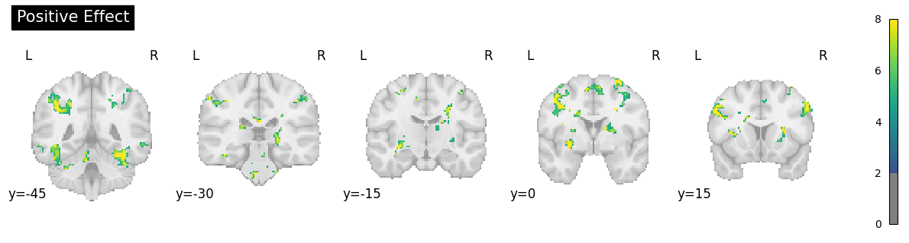
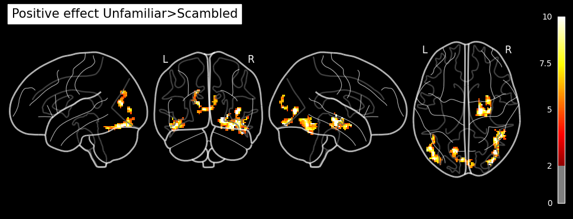
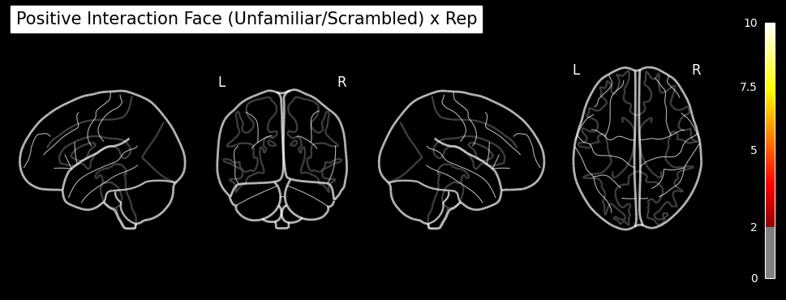
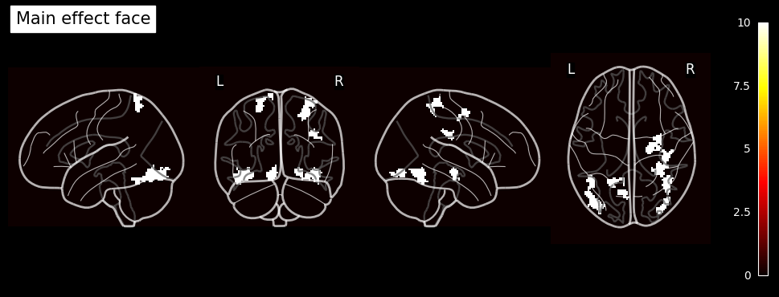
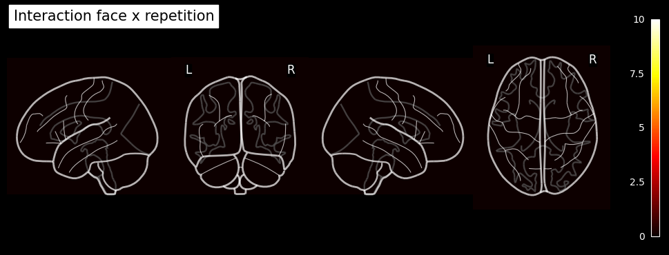

Nipype-SPM fMRI Analysis#
Subject and Group Level Analysis Workflows#
Author: Monika Doerig
Date: 13 June 2024
License:
Note: If this notebook uses neuroimaging tools from Neurocontainers, those tools retain their original licenses. Please see Neurodesk citation guidelines for details.
Citation and Resources:#
Tools included in this workflow#
Nipype:
Esteban, O., Markiewicz, C. J., Burns, C., Goncalves, M., Jarecka, D., Ziegler, E., Berleant, S., Ellis, D. G., Pinsard, B., Madison, C., Waskom, M., Notter, M. P., Clark, D., Manhães-Savio, A., Clark, D., Jordan, K., Dayan, M., Halchenko, Y. O., Loney, F., … Ghosh, S. (2025). nipy/nipype: 1.8.6 (1.8.6). Zenodo. https://doi.org/10.5281/zenodo.15054147
SPM12:
Friston, K. J. (2007). Statistical parametric mapping: The analysis of functional brain images (1st ed). Elsevier / Academic Press.
Dataset#
Wakeman, DG and Henson, RN (2021). Multisubject, multimodal face processing. OpenNeuro. [Dataset] doi: 10.18112/openneuro.ds000117.v1.0.5
Wakeman, D.G. & Henson, R.N. (2015). A multi-subject, multi-modal human neuroimaging dataset. Sci. Data 2:150001 doi: 10.1038/sdata.2015.1
Educational resources:#
Introduction#
The fMRI dataset used for this example is part of a multi-subject, multi-modal (sMRI, fMRI, MEG, EEG) neuroimaging dataset on face processing. It contains data in BIDS format on sixteen healthy volunteers. The data was recoreded while the volunteers performed multiple runs of hundreds of trials of a simple perceptual task on pictures of familiar, unfamiliar and scrambled faces during two visits to the laboratory.
The facial stimuli consisted of two groups of 300 greyscale photos, half of which were of famous people and half of which were of non-famous people (unknown to the participants). Each scrambled face was created either from the famous face or the non-famous face of the same stimulus number. Additionally, each image was presented twice to the participants. The second presentation occurred either immediately after the first presentation (Immediate Repeats) or after 5–15 intervening stimuli (Delayed Repeats), with 50% of each type of repeat. To ensure that each stimulus received equal attention, participants were instructed to use their left or right index finger to press one of two keys (assignment counter-balanced across participants). They determined the symmetry of each image by pressing a key based on whether they perceived it to be ‘more’ or ‘less symmetric’ than average.
In the original paper (Wakeman & Henson, 2015), the repetition manipulation was not distinguished, meaning that initial and repeated presentations were treated identically without considering the timing of the repeats.
To illustrate the setup of a 3x2 factorial design analysis (familiar vs. unfamiliar vs. scrambled faces) x (1st vs. 2nd presentation) in an SPM Nipype workflow, the event files will be adapted accordingly. Each stimulus type will be labeled as either the first or second presentation. However, for simplicity, no distinction is made between immediate and delayed repetitions, resulting in 6 stimulus types (conditions): Familiar-Rep1 (F1), Familiar-Rep2 (F2), Unfamiliar-Rep1 (U1), Unfamiliar-Rep2 (U2), Scrambled-Rep1 (S1), and Scrambled-Rep2 (S2).
Examples of a familiar, unfamiliar and scrambled face:
PATTERN_STIMULI = "stimuli/func/*001.bmp"
!datalad install https://github.com/OpenNeuroDatasets/ds000117.git
!cd ds000117 && git checkout 1.0.5 && datalad get $PATTERN_STIMULI
Cloning: 0%| | 0.00/2.00 [00:00<?, ? candidates/s]
Enumerating: 0.00 Objects [00:00, ? Objects/s]
Counting: 0%| | 0.00/39.9k [00:00<?, ? Objects/s]
Compressing: 0%| | 0.00/22.2k [00:00<?, ? Objects/s]
Compressing: 96%|██████████████████▏| 21.3k/22.2k [00:00<00:00, 171k Objects/s]
Receiving: 0%| | 0.00/61.8k [00:00<?, ? Objects/s]
Receiving: 44%|█████████▏ | 27.2k/61.8k [00:00<00:00, 272k Objects/s]
Receiving: 88%|██████████████████▍ | 54.4k/61.8k [00:00<00:00, 245k Objects/s]
Resolving: 0%| | 0.00/16.5k [00:00<?, ? Deltas/s]
Resolving: 61%|█████████████▍ | 10.1k/16.5k [00:00<00:00, 100k Deltas/s]
[INFO ] Remote origin not usable by git-annex; setting annex-ignore
[INFO ] https://github.com/OpenNeuroDatasets/ds000117.git/config download failed: Not Found
[INFO ] Remote origin not usable by git-annex; setting annex-ignore
[INFO ] https://github.com/OpenNeuroDatasets/ds000117.git/config download failed: Not Found
install(ok): /home/jovyan/workspace/books/examples/functional_imaging/ds000117 (dataset)
Note: switching to '1.0.5'.
You are in 'detached HEAD' state. You can look around, make experimental
changes and commit them, and you can discard any commits you make in this
state without impacting any branches by switching back to a branch.
If you want to create a new branch to retain commits you create, you may
do so (now or later) by using -c with the switch command. Example:
git switch -c <new-branch-name>
Or undo this operation with:
git switch -
Turn off this advice by setting config variable advice.detachedHead to false
HEAD is now at 12470d39 [OpenNeuro] Recorded changes
Total: 0%| | 0.00/131k [00:00<?, ? Bytes/s]
Total: 7%|██▎ | 8.54k/131k [00:00<?, ? Bytes/s]
Get stimuli/ .. nc/pf001.bmp: 100%|███████████| 21.8k/21.8k [00:00<?, ? Bytes/s]
Get stimuli/func/f001.bmp: 39%|█████▍ | 8.54k/21.8k [00:00<?, ? Bytes/s]
Get stimuli/func/f001.bmp: 100%|██████████████| 21.8k/21.8k [00:00<?, ? Bytes/s]
Total: 33%|█████████ | 43.6k/131k [00:01<00:04, 21.2k Bytes/s]
Get stimuli/ .. nc/ps001.bmp: 39%|████▎ | 8.54k/21.8k [00:00<?, ? Bytes/s]
Get stimuli/ .. nc/ps001.bmp: 100%|███████████| 21.8k/21.8k [00:00<?, ? Bytes/s]
Get stimuli/ .. nc/pu001.bmp: 39%|████▎ | 8.54k/21.8k [00:00<?, ? Bytes/s]
Get stimuli/ .. nc/pu001.bmp: 100%|███████████| 21.8k/21.8k [00:00<?, ? Bytes/s]
Total: 67%|██████████████████ | 87.3k/131k [00:01<00:01, 28.5k Bytes/s]
Get stimuli/func/u001.bmp: 39%|█████▍ | 8.54k/21.8k [00:00<?, ? Bytes/s]
Get stimuli/func/u001.bmp: 100%|██████████████| 21.8k/21.8k [00:00<?, ? Bytes/s]
Get stimuli/func/s001.bmp: 39%|█████▍ | 8.54k/21.8k [00:00<?, ? Bytes/s]
Get stimuli/func/s001.bmp: 100%|██████████████| 21.8k/21.8k [00:00<?, ? Bytes/s]
get(ok): stimuli/func/pf001.bmp (file) [from s3-PUBLIC...]
get(ok): stimuli/func/f001.bmp (file) [from s3-PUBLIC...]
get(ok): stimuli/func/ps001.bmp (file) [from s3-PUBLIC...]
get(ok): stimuli/func/pu001.bmp (file) [from s3-PUBLIC...]
get(ok): stimuli/func/u001.bmp (file) [from s3-PUBLIC...]
get(ok): stimuli/func/s001.bmp (file) [from s3-PUBLIC...]
action summary:
get (ok: 6)
import matplotlib.pyplot as plt
from matplotlib.image import imread
# Load the .bmp images
familiar = imread('ds000117/stimuli/func/f001.bmp')
unfamiliar = imread('ds000117/stimuli/func/u001.bmp')
scrambled = imread('ds000117/stimuli/func/s001.bmp')
# Create a Matplotlib figure with subplots
fig, axes = plt.subplots(1, 3, figsize=(12, 4))
# Plot each image on a subplot
axes[0].imshow(familiar, cmap='gray')
axes[0].set_title('Familiar face')
axes[0].axis('off')
axes[1].imshow(unfamiliar, cmap='gray')
axes[1].set_title('Unfamiliar face')
axes[1].axis('off')
axes[2].imshow(scrambled, cmap='gray')
axes[2].set_title('Scrambled face')
axes[2].axis('off')
plt.tight_layout()
plt.show()

Download Data and install Python modules#
# Raw dataset: ONLY events.tsv + json sidecar
!cd ds000117 && git checkout 1.0.5 && \
datalad get sub-0[1-5]/ses-mri/func/*_events.tsv task-facerecognition_bold.json
HEAD is now at 12470d39 [OpenNeuro] Recorded changes
action summary:
get (notneeded: 46)
# get preprocessed normalized func images of 5 individuals and 2 runs
PATTERN_PREP = "sub-0[1-5]/ses-mri/func/*run-[1-2]*space-MNI152NLin6Asym_desc-smoothAROMAnonaggr_bold.nii.gz"
!datalad install https://github.com/OpenNeuroDerivatives/ds000117-fmriprep.git
!cd ds000117-fmriprep && datalad get $PATTERN_PREP
Cloning: 0%| | 0.00/2.00 [00:00<?, ? candidates/s]
Enumerating: 0.00 Objects [00:00, ? Objects/s]
Counting: 0%| | 0.00/103k [00:00<?, ? Objects/s]
Compressing: 0%| | 0.00/85.9k [00:00<?, ? Objects/s]
Receiving: 0%| | 0.00/103k [00:00<?, ? Objects/s]
Receiving: 21%|████▌ | 21.6k/103k [00:00<00:00, 211k Objects/s]
Receiving: 42%|█████████▏ | 43.2k/103k [00:00<00:00, 192k Objects/s]
Receiving: 67%|██████████████ | 68.9k/103k [00:00<00:00, 60.2k Objects/s]
Receiving: 97%|████████████████████▎| 99.8k/103k [00:01<00:00, 95.5k Objects/s]
Resolving: 0%| | 0.00/13.2k [00:00<?, ? Deltas/s]
Resolving: 65%|█████████████▋ | 8.59k/13.2k [00:00<00:00, 84.5k Deltas/s]
[INFO ] Remote origin not usable by git-annex; setting annex-ignore
[INFO ] https://github.com/OpenNeuroDerivatives/ds000117-fmriprep.git/config download failed: Not Found
[INFO ] Remote origin not usable by git-annex; setting annex-ignore
[INFO ] https://github.com/OpenNeuroDerivatives/ds000117-fmriprep.git/config download failed: Not Found
install(ok): /home/jovyan/workspace/books/examples/functional_imaging/ds000117-fmriprep (dataset)
Total: 0%| | 0.00/4.99G [00:00<?, ? Bytes/s]
Total: 0%| | 16.4k/4.99G [00:00<?, ? Bytes/s]
Get sub-02/s .. _bold.nii.gz: 0%| | 33.4k/473M [00:00<1:06:14, 119k Bytes/s]
Get sub-02/s .. _bold.nii.gz: 0%| | 69.2k/473M [00:00<40:08, 197k Bytes/s]
Get sub-02/s .. _bold.nii.gz: 0%| | 138k/473M [00:00<24:10, 326k Bytes/s]
Total: 0%| | 207k/4.99G [00:01<10:16:35, 135k Bytes/s]
Get sub-02/s .. _bold.nii.gz: 0%| | 364k/473M [00:00<12:16, 642k Bytes/s]
Get sub-02/s .. _bold.nii.gz: 0%| | 660k/473M [00:00<06:59, 1.13M Bytes/s]
Get sub-02/s .. _bold.nii.gz: 0%| | 1.25M/473M [00:01<03:43, 2.11M Bytes/s]
Total: 0%| | 2.44M/4.99G [00:01<1:08:07, 1.22M Bytes/s]
Get sub-02/s .. _bold.nii.gz: 1%| | 4.84M/473M [00:01<00:58, 8.03M Bytes/s]
Get sub-02/s .. _bold.nii.gz: 2%| | 8.16M/473M [00:01<00:36, 12.7M Bytes/s]
Get sub-02/s .. _bold.nii.gz: 2%| | 11.4M/473M [00:01<00:29, 15.8M Bytes/s]
Total: 0%| | 14.7M/4.99G [00:02<14:27, 5.74M Bytes/s]
Get sub-02/s .. _bold.nii.gz: 4%|▏ | 18.0M/473M [00:01<00:23, 19.4M Bytes/s]
Get sub-02/s .. _bold.nii.gz: 4%|▏ | 21.3M/473M [00:02<00:22, 20.4M Bytes/s]
Get sub-02/s .. _bold.nii.gz: 5%|▏ | 24.5M/473M [00:02<00:21, 21.1M Bytes/s]
Total: 1%|▏ | 27.8M/4.99G [00:03<09:21, 8.85M Bytes/s]
Get sub-02/s .. _bold.nii.gz: 7%|▎ | 31.1M/473M [00:02<00:20, 22.0M Bytes/s]
Get sub-02/s .. _bold.nii.gz: 7%|▎ | 34.3M/473M [00:02<00:19, 22.3M Bytes/s]
Get sub-02/s .. _bold.nii.gz: 8%|▎ | 37.3M/473M [00:02<00:19, 22.9M Bytes/s]
Get sub-02/s .. _bold.nii.gz: 9%|▎ | 41.6M/473M [00:02<00:19, 22.3M Bytes/s]
Get sub-02/s .. _bold.nii.gz: 9%|▎ | 44.1M/473M [00:03<00:19, 22.5M Bytes/s]
Get sub-02/s .. _bold.nii.gz: 10%|▍ | 46.6M/473M [00:03<00:19, 22.0M Bytes/s]
Get sub-02/s .. _bold.nii.gz: 10%|▍ | 49.1M/473M [00:03<00:18, 22.8M Bytes/s]
Total: 1%|▎ | 51.6M/4.99G [00:04<06:40, 12.3M Bytes/s]
Get sub-02/s .. _bold.nii.gz: 12%|▍ | 56.3M/473M [00:03<00:18, 22.8M Bytes/s]
Get sub-02/s .. _bold.nii.gz: 12%|▍ | 58.7M/473M [00:03<00:17, 23.1M Bytes/s]
Get sub-02/s .. _bold.nii.gz: 13%|▌ | 62.9M/473M [00:03<00:18, 22.2M Bytes/s]
Get sub-02/s .. _bold.nii.gz: 14%|▌ | 65.4M/473M [00:03<00:18, 22.3M Bytes/s]
Get sub-02/s .. _bold.nii.gz: 14%|▌ | 67.8M/473M [00:04<00:17, 22.7M Bytes/s]
Get sub-02/s .. _bold.nii.gz: 15%|▌ | 72.9M/473M [00:04<00:17, 22.9M Bytes/s]
Get sub-02/s .. _bold.nii.gz: 16%|▋ | 77.3M/473M [00:04<00:18, 22.0M Bytes/s]
Get sub-02/s .. _bold.nii.gz: 17%|▋ | 79.8M/473M [00:04<00:17, 21.9M Bytes/s]
Get sub-02/s .. _bold.nii.gz: 17%|▋ | 82.2M/473M [00:04<00:18, 21.6M Bytes/s]
Total: 2%|▍ | 86.7M/4.99G [00:05<05:26, 15.0M Bytes/s]
Get sub-02/s .. _bold.nii.gz: 19%|▊ | 89.2M/473M [00:05<00:17, 22.5M Bytes/s]
Get sub-02/s .. _bold.nii.gz: 20%|▊ | 93.5M/473M [00:05<00:17, 22.0M Bytes/s]
Get sub-02/s .. _bold.nii.gz: 20%|▊ | 96.2M/473M [00:05<00:16, 23.0M Bytes/s]
Get sub-02/s .. _bold.nii.gz: 21%|█ | 101M/473M [00:05<00:16, 22.1M Bytes/s]
Get sub-02/s .. _bold.nii.gz: 22%|█ | 103M/473M [00:05<00:16, 22.7M Bytes/s]
Get sub-02/s .. _bold.nii.gz: 23%|█▏ | 108M/473M [00:05<00:16, 21.7M Bytes/s]
Get sub-02/s .. _bold.nii.gz: 23%|█▏ | 111M/473M [00:05<00:15, 23.1M Bytes/s]
Get sub-02/s .. _bold.nii.gz: 24%|█▏ | 115M/473M [00:06<00:16, 22.1M Bytes/s]
Get sub-02/s .. _bold.nii.gz: 25%|█▏ | 117M/473M [00:06<00:16, 22.2M Bytes/s]
Get sub-02/s .. _bold.nii.gz: 25%|█▎ | 120M/473M [00:06<00:15, 22.8M Bytes/s]
Get sub-02/s .. _bold.nii.gz: 26%|█▎ | 125M/473M [00:06<00:15, 22.6M Bytes/s]
Get sub-02/s .. _bold.nii.gz: 27%|█▎ | 129M/473M [00:06<00:15, 21.8M Bytes/s]
Total: 3%|▋ | 131M/4.99G [00:07<04:52, 16.6M Bytes/s]
Get sub-02/s .. _bold.nii.gz: 28%|█▍ | 134M/473M [00:07<00:18, 18.6M Bytes/s]
Get sub-02/s .. _bold.nii.gz: 29%|█▍ | 137M/473M [00:07<00:17, 19.6M Bytes/s]
Get sub-02/s .. _bold.nii.gz: 30%|█▍ | 141M/473M [00:07<00:16, 19.8M Bytes/s]
Get sub-02/s .. _bold.nii.gz: 30%|█▌ | 144M/473M [00:07<00:16, 20.4M Bytes/s]
Get sub-02/s .. _bold.nii.gz: 31%|█▌ | 147M/473M [00:07<00:15, 21.0M Bytes/s]
Get sub-02/s .. _bold.nii.gz: 32%|█▌ | 150M/473M [00:07<00:15, 20.4M Bytes/s]
Get sub-02/s .. _bold.nii.gz: 32%|█▌ | 153M/473M [00:08<00:15, 21.0M Bytes/s]
Get sub-02/s .. _bold.nii.gz: 33%|█▋ | 156M/473M [00:08<00:14, 21.5M Bytes/s]
Get sub-02/s .. _bold.nii.gz: 34%|█▋ | 160M/473M [00:08<00:18, 17.2M Bytes/s]
Get sub-02/s .. _bold.nii.gz: 34%|█▋ | 162M/473M [00:08<00:18, 16.9M Bytes/s]
Get sub-02/s .. _bold.nii.gz: 35%|█▋ | 164M/473M [00:08<00:18, 16.6M Bytes/s]
Get sub-02/s .. _bold.nii.gz: 35%|█▊ | 167M/473M [00:08<00:18, 16.8M Bytes/s]
Get sub-02/s .. _bold.nii.gz: 36%|█▊ | 170M/473M [00:09<00:18, 16.7M Bytes/s]
Get sub-02/s .. _bold.nii.gz: 36%|█▊ | 172M/473M [00:09<00:18, 16.7M Bytes/s]
Get sub-02/s .. _bold.nii.gz: 37%|█▊ | 175M/473M [00:09<00:17, 16.7M Bytes/s]
Get sub-02/s .. _bold.nii.gz: 37%|█▊ | 177M/473M [00:09<00:17, 16.8M Bytes/s]
Get sub-02/s .. _bold.nii.gz: 38%|█▉ | 180M/473M [00:09<00:17, 17.0M Bytes/s]
Get sub-02/s .. _bold.nii.gz: 38%|█▉ | 182M/473M [00:09<00:17, 17.1M Bytes/s]
Total: 4%|▉ | 185M/4.99G [00:10<04:41, 17.1M Bytes/s]
Get sub-02/s .. _bold.nii.gz: 40%|█▉ | 187M/473M [00:10<00:16, 17.3M Bytes/s]
Get sub-02/s .. _bold.nii.gz: 40%|██ | 190M/473M [00:10<00:16, 17.4M Bytes/s]
Get sub-02/s .. _bold.nii.gz: 41%|██ | 192M/473M [00:10<00:16, 17.5M Bytes/s]
Get sub-02/s .. _bold.nii.gz: 41%|██ | 195M/473M [00:10<00:15, 17.6M Bytes/s]
Get sub-02/s .. _bold.nii.gz: 42%|██ | 197M/473M [00:10<00:15, 17.7M Bytes/s]
Get sub-02/s .. _bold.nii.gz: 42%|██ | 200M/473M [00:10<00:15, 17.8M Bytes/s]
Get sub-02/s .. _bold.nii.gz: 43%|██▏ | 202M/473M [00:10<00:15, 17.8M Bytes/s]
Get sub-02/s .. _bold.nii.gz: 43%|██▏ | 205M/473M [00:11<00:14, 18.0M Bytes/s]
Get sub-02/s .. _bold.nii.gz: 44%|██▏ | 208M/473M [00:11<00:14, 18.1M Bytes/s]
Get sub-02/s .. _bold.nii.gz: 44%|██▏ | 210M/473M [00:11<00:14, 18.3M Bytes/s]
Get sub-02/s .. _bold.nii.gz: 45%|██▎ | 213M/473M [00:11<00:14, 18.3M Bytes/s]
Get sub-02/s .. _bold.nii.gz: 46%|██▎ | 216M/473M [00:11<00:14, 18.3M Bytes/s]
Get sub-02/s .. _bold.nii.gz: 46%|██▎ | 218M/473M [00:11<00:13, 18.5M Bytes/s]
Get sub-02/s .. _bold.nii.gz: 47%|██▎ | 223M/473M [00:12<00:16, 14.8M Bytes/s]
Get sub-02/s .. _bold.nii.gz: 47%|██▎ | 225M/473M [00:12<00:17, 14.4M Bytes/s]
Get sub-02/s .. _bold.nii.gz: 48%|██▍ | 226M/473M [00:12<00:17, 14.2M Bytes/s]
Get sub-02/s .. _bold.nii.gz: 48%|██▍ | 228M/473M [00:12<00:17, 14.0M Bytes/s]
Get sub-02/s .. _bold.nii.gz: 49%|██▍ | 232M/473M [00:13<00:21, 11.2M Bytes/s]
Get sub-02/s .. _bold.nii.gz: 50%|██▍ | 234M/473M [00:13<00:24, 9.71M Bytes/s]
Get sub-02/s .. _bold.nii.gz: 50%|██▍ | 236M/473M [00:13<00:26, 8.86M Bytes/s]
Get sub-02/s .. _bold.nii.gz: 50%|██▌ | 237M/473M [00:13<00:26, 8.95M Bytes/s]
Get sub-02/s .. _bold.nii.gz: 51%|██▌ | 239M/473M [00:14<00:30, 7.59M Bytes/s]
Get sub-02/s .. _bold.nii.gz: 51%|██▌ | 240M/473M [00:14<00:37, 6.20M Bytes/s]
Total: 5%|█▎ | 241M/4.99G [00:15<05:02, 15.7M Bytes/s]
Get sub-02/s .. _bold.nii.gz: 51%|██▌ | 242M/473M [00:14<00:39, 5.79M Bytes/s]
Get sub-02/s .. _bold.nii.gz: 51%|██▌ | 243M/473M [00:15<00:53, 4.33M Bytes/s]
Get sub-02/s .. _bold.nii.gz: 52%|██▌ | 244M/473M [00:15<00:49, 4.61M Bytes/s]
Get sub-02/s .. _bold.nii.gz: 52%|██▌ | 244M/473M [00:15<01:03, 3.62M Bytes/s]
Get sub-02/s .. _bold.nii.gz: 52%|██▌ | 245M/473M [00:15<01:01, 3.72M Bytes/s]
Get sub-02/s .. _bold.nii.gz: 52%|██▌ | 245M/473M [00:15<01:14, 3.06M Bytes/s]
Get sub-02/s .. _bold.nii.gz: 52%|██▌ | 246M/473M [00:16<01:23, 2.72M Bytes/s]
Get sub-02/s .. _bold.nii.gz: 52%|██▌ | 247M/473M [00:16<01:29, 2.52M Bytes/s]
Get sub-02/s .. _bold.nii.gz: 52%|██▌ | 247M/473M [00:16<01:32, 2.45M Bytes/s]
Get sub-02/s .. _bold.nii.gz: 52%|██▌ | 247M/473M [00:16<01:34, 2.39M Bytes/s]
Get sub-02/s .. _bold.nii.gz: 52%|██▌ | 248M/473M [00:16<01:36, 2.34M Bytes/s]
Get sub-02/s .. _bold.nii.gz: 52%|██▌ | 248M/473M [00:17<01:37, 2.31M Bytes/s]
Get sub-02/s .. _bold.nii.gz: 52%|██▌ | 248M/473M [00:17<01:38, 2.27M Bytes/s]
Get sub-02/s .. _bold.nii.gz: 53%|██▋ | 249M/473M [00:17<01:38, 2.27M Bytes/s]
Get sub-02/s .. _bold.nii.gz: 53%|██▋ | 249M/473M [00:17<01:38, 2.28M Bytes/s]
Get sub-02/s .. _bold.nii.gz: 53%|██▋ | 249M/473M [00:17<01:38, 2.28M Bytes/s]
Get sub-02/s .. _bold.nii.gz: 53%|██▋ | 250M/473M [00:17<01:38, 2.28M Bytes/s]
Get sub-02/s .. _bold.nii.gz: 53%|██▋ | 250M/473M [00:17<01:37, 2.29M Bytes/s]
Get sub-02/s .. _bold.nii.gz: 53%|██▋ | 250M/473M [00:18<01:38, 2.28M Bytes/s]
Get sub-02/s .. _bold.nii.gz: 53%|██▋ | 251M/473M [00:18<01:37, 2.28M Bytes/s]
Get sub-02/s .. _bold.nii.gz: 53%|██▋ | 251M/473M [00:18<01:37, 2.29M Bytes/s]
Get sub-02/s .. _bold.nii.gz: 53%|██▋ | 251M/473M [00:18<01:35, 2.32M Bytes/s]
Get sub-02/s .. _bold.nii.gz: 53%|██▋ | 252M/473M [00:18<01:36, 2.31M Bytes/s]
Get sub-02/s .. _bold.nii.gz: 53%|██▋ | 252M/473M [00:18<01:34, 2.34M Bytes/s]
Get sub-02/s .. _bold.nii.gz: 53%|██▋ | 252M/473M [00:18<01:35, 2.32M Bytes/s]
Get sub-02/s .. _bold.nii.gz: 53%|██▋ | 253M/473M [00:19<01:34, 2.34M Bytes/s]
Get sub-02/s .. _bold.nii.gz: 53%|██▋ | 253M/473M [00:19<01:33, 2.35M Bytes/s]
Get sub-02/s .. _bold.nii.gz: 53%|██▋ | 253M/473M [00:19<01:34, 2.33M Bytes/s]
Get sub-02/s .. _bold.nii.gz: 54%|██▋ | 254M/473M [00:19<01:33, 2.35M Bytes/s]
Get sub-02/s .. _bold.nii.gz: 54%|██▋ | 254M/473M [00:19<01:32, 2.36M Bytes/s]
Get sub-02/s .. _bold.nii.gz: 54%|██▋ | 254M/473M [00:19<01:33, 2.34M Bytes/s]
Get sub-02/s .. _bold.nii.gz: 54%|██▋ | 255M/473M [00:19<01:32, 2.36M Bytes/s]
Get sub-02/s .. _bold.nii.gz: 54%|██▋ | 255M/473M [00:20<01:33, 2.35M Bytes/s]
Get sub-02/s .. _bold.nii.gz: 54%|██▋ | 255M/473M [00:20<01:32, 2.36M Bytes/s]
Get sub-02/s .. _bold.nii.gz: 54%|██▋ | 256M/473M [00:20<01:31, 2.37M Bytes/s]
Get sub-02/s .. _bold.nii.gz: 54%|██▋ | 256M/473M [00:20<01:32, 2.35M Bytes/s]
Get sub-02/s .. _bold.nii.gz: 54%|██▋ | 256M/473M [00:20<01:31, 2.37M Bytes/s]
Get sub-02/s .. _bold.nii.gz: 54%|██▋ | 257M/473M [00:20<01:31, 2.38M Bytes/s]
Get sub-02/s .. _bold.nii.gz: 54%|██▋ | 257M/473M [00:20<01:31, 2.35M Bytes/s]
Get sub-02/s .. _bold.nii.gz: 54%|██▋ | 257M/473M [00:21<01:31, 2.36M Bytes/s]
Get sub-02/s .. _bold.nii.gz: 54%|██▋ | 258M/473M [00:21<01:31, 2.37M Bytes/s]
Get sub-02/s .. _bold.nii.gz: 55%|██▋ | 258M/473M [00:21<01:39, 2.17M Bytes/s]
Get sub-02/s .. _bold.nii.gz: 55%|██▋ | 258M/473M [00:21<01:44, 2.06M Bytes/s]
Get sub-02/s .. _bold.nii.gz: 55%|██▋ | 259M/473M [00:21<01:48, 1.97M Bytes/s]
Get sub-02/s .. _bold.nii.gz: 55%|██▋ | 259M/473M [00:21<01:53, 1.88M Bytes/s]
Get sub-02/s .. _bold.nii.gz: 55%|██▋ | 259M/473M [00:22<01:54, 1.87M Bytes/s]
Get sub-02/s .. _bold.nii.gz: 55%|██▋ | 259M/473M [00:22<01:53, 1.88M Bytes/s]
Get sub-02/s .. _bold.nii.gz: 55%|██▋ | 260M/473M [00:22<01:53, 1.87M Bytes/s]
Get sub-02/s .. _bold.nii.gz: 55%|██▋ | 260M/473M [00:22<01:52, 1.90M Bytes/s]
Get sub-02/s .. _bold.nii.gz: 55%|██▋ | 260M/473M [00:22<01:50, 1.93M Bytes/s]
Get sub-02/s .. _bold.nii.gz: 55%|██▊ | 261M/473M [00:22<01:48, 1.96M Bytes/s]
Get sub-02/s .. _bold.nii.gz: 55%|██▊ | 261M/473M [00:22<01:46, 1.99M Bytes/s]
Get sub-02/s .. _bold.nii.gz: 55%|██▊ | 261M/473M [00:23<01:45, 2.01M Bytes/s]
Get sub-02/s .. _bold.nii.gz: 55%|██▊ | 261M/473M [00:23<01:43, 2.04M Bytes/s]
Get sub-02/s .. _bold.nii.gz: 55%|██▊ | 262M/473M [00:23<01:42, 2.06M Bytes/s]
Get sub-02/s .. _bold.nii.gz: 55%|██▊ | 262M/473M [00:23<01:40, 2.10M Bytes/s]
Get sub-02/s .. _bold.nii.gz: 55%|██▊ | 262M/473M [00:23<01:39, 2.12M Bytes/s]
Get sub-02/s .. _bold.nii.gz: 56%|██▊ | 263M/473M [00:23<01:37, 2.16M Bytes/s]
Get sub-02/s .. _bold.nii.gz: 56%|██▊ | 263M/473M [00:23<01:36, 2.18M Bytes/s]
Get sub-02/s .. _bold.nii.gz: 56%|██▊ | 263M/473M [00:24<01:35, 2.21M Bytes/s]
Get sub-02/s .. _bold.nii.gz: 56%|██▊ | 264M/473M [00:24<01:34, 2.22M Bytes/s]
Get sub-02/s .. _bold.nii.gz: 56%|██▊ | 264M/473M [00:24<01:33, 2.25M Bytes/s]
Get sub-02/s .. _bold.nii.gz: 56%|██▊ | 264M/473M [00:24<01:32, 2.26M Bytes/s]
Get sub-02/s .. _bold.nii.gz: 56%|██▊ | 265M/473M [00:24<01:32, 2.27M Bytes/s]
Get sub-02/s .. _bold.nii.gz: 56%|██▊ | 265M/473M [00:24<01:31, 2.27M Bytes/s]
Get sub-02/s .. _bold.nii.gz: 56%|██▊ | 265M/473M [00:24<01:31, 2.27M Bytes/s]
Get sub-02/s .. _bold.nii.gz: 56%|██▊ | 266M/473M [00:25<01:31, 2.28M Bytes/s]
Get sub-02/s .. _bold.nii.gz: 56%|██▊ | 266M/473M [00:25<01:29, 2.32M Bytes/s]
Get sub-02/s .. _bold.nii.gz: 56%|██▊ | 266M/473M [00:25<01:30, 2.30M Bytes/s]
Get sub-02/s .. _bold.nii.gz: 56%|██▊ | 267M/473M [00:25<01:28, 2.33M Bytes/s]
Get sub-02/s .. _bold.nii.gz: 56%|██▊ | 267M/473M [00:25<01:29, 2.32M Bytes/s]
Get sub-02/s .. _bold.nii.gz: 56%|██▊ | 267M/473M [00:25<01:27, 2.34M Bytes/s]
Get sub-02/s .. _bold.nii.gz: 57%|██▊ | 268M/473M [00:25<01:27, 2.36M Bytes/s]
Get sub-02/s .. _bold.nii.gz: 57%|██▊ | 268M/473M [00:26<01:27, 2.34M Bytes/s]
Get sub-02/s .. _bold.nii.gz: 57%|██▊ | 268M/473M [00:26<01:26, 2.38M Bytes/s]
Get sub-02/s .. _bold.nii.gz: 57%|██▊ | 269M/473M [00:26<01:26, 2.36M Bytes/s]
Get sub-02/s .. _bold.nii.gz: 57%|██▊ | 269M/473M [00:26<01:26, 2.35M Bytes/s]
Get sub-02/s .. _bold.nii.gz: 57%|██▊ | 269M/473M [00:26<01:26, 2.36M Bytes/s]
Get sub-02/s .. _bold.nii.gz: 57%|██▊ | 270M/473M [00:26<01:25, 2.37M Bytes/s]
Get sub-02/s .. _bold.nii.gz: 57%|██▊ | 270M/473M [00:26<01:26, 2.35M Bytes/s]
Get sub-02/s .. _bold.nii.gz: 57%|██▊ | 270M/473M [00:27<01:25, 2.37M Bytes/s]
Get sub-02/s .. _bold.nii.gz: 57%|██▊ | 271M/473M [00:27<01:25, 2.36M Bytes/s]
Get sub-02/s .. _bold.nii.gz: 57%|██▊ | 271M/473M [00:27<01:25, 2.36M Bytes/s]
Get sub-02/s .. _bold.nii.gz: 57%|██▊ | 271M/473M [00:27<01:25, 2.37M Bytes/s]
Get sub-02/s .. _bold.nii.gz: 57%|██▊ | 272M/473M [00:27<01:25, 2.34M Bytes/s]
Get sub-02/s .. _bold.nii.gz: 57%|██▊ | 272M/473M [00:27<01:25, 2.36M Bytes/s]
Get sub-02/s .. _bold.nii.gz: 58%|██▉ | 272M/473M [00:28<01:24, 2.38M Bytes/s]
Get sub-02/s .. _bold.nii.gz: 58%|██▉ | 273M/473M [00:28<01:25, 2.36M Bytes/s]
Get sub-02/s .. _bold.nii.gz: 58%|██▉ | 273M/473M [00:28<01:23, 2.38M Bytes/s]
Get sub-02/s .. _bold.nii.gz: 58%|██▉ | 273M/473M [00:28<01:24, 2.37M Bytes/s]
Get sub-02/s .. _bold.nii.gz: 58%|██▉ | 274M/473M [00:28<01:24, 2.35M Bytes/s]
Get sub-02/s .. _bold.nii.gz: 58%|██▉ | 274M/473M [00:28<01:24, 2.37M Bytes/s]
Get sub-02/s .. _bold.nii.gz: 58%|██▉ | 274M/473M [00:28<01:23, 2.38M Bytes/s]
Get sub-02/s .. _bold.nii.gz: 58%|██▉ | 275M/473M [00:29<01:23, 2.39M Bytes/s]
Total: 5%|█▍ | 274M/4.99G [00:30<08:35, 9.15M Bytes/s]
Get sub-02/s .. _bold.nii.gz: 58%|██▉ | 275M/473M [00:29<01:22, 2.39M Bytes/s]
Total: 6%|█▍ | 276M/4.99G [00:30<08:37, 9.11M Bytes/s]
Get sub-02/s .. _bold.nii.gz: 58%|██▉ | 276M/473M [00:29<01:22, 2.39M Bytes/s]
Get sub-02/s .. _bold.nii.gz: 58%|██▉ | 276M/473M [00:29<01:22, 2.39M Bytes/s]
Get sub-02/s .. _bold.nii.gz: 58%|██▉ | 277M/473M [00:29<01:21, 2.42M Bytes/s]
Total: 6%|█▍ | 277M/4.99G [00:30<08:44, 8.99M Bytes/s]
Get sub-02/s .. _bold.nii.gz: 59%|██▉ | 278M/473M [00:30<01:20, 2.43M Bytes/s]
Get sub-02/s .. _bold.nii.gz: 59%|██▉ | 278M/473M [00:30<01:20, 2.44M Bytes/s]
Get sub-02/s .. _bold.nii.gz: 59%|██▉ | 278M/473M [00:30<01:19, 2.44M Bytes/s]
Total: 6%|█▌ | 279M/4.99G [00:31<08:51, 8.87M Bytes/s]
Get sub-02/s .. _bold.nii.gz: 59%|██▉ | 279M/473M [00:30<01:18, 2.48M Bytes/s]
Get sub-02/s .. _bold.nii.gz: 59%|██▉ | 279M/473M [00:30<01:17, 2.50M Bytes/s]
Get sub-02/s .. _bold.nii.gz: 59%|██▉ | 280M/473M [00:31<01:17, 2.50M Bytes/s]
Total: 6%|█▌ | 280M/4.99G [00:31<08:58, 8.75M Bytes/s]
Get sub-02/s .. _bold.nii.gz: 59%|██▉ | 280M/473M [00:31<01:15, 2.56M Bytes/s]
Get sub-02/s .. _bold.nii.gz: 59%|██▉ | 281M/473M [00:31<01:15, 2.55M Bytes/s]
Get sub-02/s .. _bold.nii.gz: 59%|██▉ | 281M/473M [00:31<01:13, 2.61M Bytes/s]
Total: 6%|█▌ | 282M/4.99G [00:32<09:04, 8.65M Bytes/s]
Get sub-02/s .. _bold.nii.gz: 60%|██▉ | 282M/473M [00:32<01:17, 2.46M Bytes/s]
Get sub-02/s .. _bold.nii.gz: 60%|██▉ | 283M/473M [00:32<01:21, 2.33M Bytes/s]
Get sub-02/s .. _bold.nii.gz: 60%|██▉ | 283M/473M [00:32<01:24, 2.26M Bytes/s]
Get sub-02/s .. _bold.nii.gz: 60%|██▉ | 283M/473M [00:32<01:27, 2.18M Bytes/s]
Get sub-02/s .. _bold.nii.gz: 60%|██▉ | 283M/473M [00:32<01:28, 2.15M Bytes/s]
Get sub-02/s .. _bold.nii.gz: 60%|██▉ | 284M/473M [00:32<01:28, 2.15M Bytes/s]
Total: 6%|█▌ | 284M/4.99G [00:33<09:18, 8.42M Bytes/s]
Get sub-02/s .. _bold.nii.gz: 60%|███ | 284M/473M [00:33<01:26, 2.20M Bytes/s]
Get sub-02/s .. _bold.nii.gz: 60%|███ | 285M/473M [00:33<01:28, 2.13M Bytes/s]
Get sub-02/s .. _bold.nii.gz: 60%|███ | 285M/473M [00:33<01:29, 2.09M Bytes/s]
Get sub-02/s .. _bold.nii.gz: 60%|███ | 285M/473M [00:33<01:29, 2.09M Bytes/s]
Get sub-02/s .. _bold.nii.gz: 60%|███ | 286M/473M [00:33<01:34, 1.98M Bytes/s]
Get sub-02/s .. _bold.nii.gz: 60%|███ | 286M/473M [00:33<01:37, 1.92M Bytes/s]
Get sub-02/s .. _bold.nii.gz: 60%|███ | 286M/473M [00:34<01:52, 1.66M Bytes/s]
Get sub-02/s .. _bold.nii.gz: 61%|███ | 286M/473M [00:34<01:51, 1.67M Bytes/s]
Get sub-02/s .. _bold.nii.gz: 61%|███ | 287M/473M [00:34<01:43, 1.80M Bytes/s]
Get sub-02/s .. _bold.nii.gz: 61%|███ | 287M/473M [00:34<01:35, 1.94M Bytes/s]
Get sub-02/s .. _bold.nii.gz: 61%|███ | 287M/473M [00:34<01:37, 1.91M Bytes/s]
Total: 6%|█▌ | 287M/4.99G [00:35<09:41, 8.10M Bytes/s]
Get sub-02/s .. _bold.nii.gz: 61%|███ | 288M/473M [00:34<01:38, 1.88M Bytes/s]
Get sub-02/s .. _bold.nii.gz: 61%|███ | 288M/473M [00:35<01:51, 1.66M Bytes/s]
Get sub-02/s .. _bold.nii.gz: 61%|███ | 288M/473M [00:35<01:48, 1.71M Bytes/s]
Get sub-02/s .. _bold.nii.gz: 61%|███ | 288M/473M [00:35<01:42, 1.80M Bytes/s]
Get sub-02/s .. _bold.nii.gz: 61%|███ | 289M/473M [00:35<01:43, 1.78M Bytes/s]
Get sub-02/s .. _bold.nii.gz: 61%|███ | 289M/473M [00:35<01:40, 1.83M Bytes/s]
Get sub-02/s .. _bold.nii.gz: 61%|███ | 289M/473M [00:35<01:38, 1.86M Bytes/s]
Get sub-02/s .. _bold.nii.gz: 61%|███ | 290M/473M [00:35<01:32, 1.99M Bytes/s]
Get sub-02/s .. _bold.nii.gz: 61%|███ | 290M/473M [00:35<01:27, 2.09M Bytes/s]
Get sub-02/s .. _bold.nii.gz: 61%|███ | 290M/473M [00:36<01:29, 2.04M Bytes/s]
Get sub-02/s .. _bold.nii.gz: 61%|███ | 290M/473M [00:36<01:30, 2.01M Bytes/s]
Get sub-02/s .. _bold.nii.gz: 61%|███ | 291M/473M [00:36<01:31, 1.99M Bytes/s]
Get sub-02/s .. _bold.nii.gz: 61%|███ | 291M/473M [00:36<01:32, 1.98M Bytes/s]
Get sub-02/s .. _bold.nii.gz: 62%|███ | 291M/473M [00:36<01:32, 1.97M Bytes/s]
Get sub-02/s .. _bold.nii.gz: 62%|███ | 291M/473M [00:36<01:31, 1.98M Bytes/s]
Total: 6%|█▌ | 292M/4.99G [00:37<10:08, 7.73M Bytes/s]
Get sub-02/s .. _bold.nii.gz: 62%|███ | 292M/473M [00:37<01:43, 1.75M Bytes/s]
Get sub-02/s .. _bold.nii.gz: 62%|███ | 292M/473M [00:37<01:40, 1.80M Bytes/s]
Get sub-02/s .. _bold.nii.gz: 62%|███ | 292M/473M [00:37<01:36, 1.87M Bytes/s]
Get sub-02/s .. _bold.nii.gz: 62%|███ | 293M/473M [00:37<01:36, 1.87M Bytes/s]
Get sub-02/s .. _bold.nii.gz: 62%|███ | 293M/473M [00:37<01:35, 1.89M Bytes/s]
Get sub-02/s .. _bold.nii.gz: 62%|███ | 293M/473M [00:37<01:34, 1.91M Bytes/s]
Get sub-02/s .. _bold.nii.gz: 62%|███ | 293M/473M [00:37<01:33, 1.92M Bytes/s]
Get sub-02/s .. _bold.nii.gz: 62%|███ | 294M/473M [00:38<01:33, 1.93M Bytes/s]
Get sub-02/s .. _bold.nii.gz: 62%|███ | 294M/473M [00:38<01:32, 1.93M Bytes/s]
Get sub-02/s .. _bold.nii.gz: 62%|███ | 294M/473M [00:38<01:31, 1.96M Bytes/s]
Get sub-02/s .. _bold.nii.gz: 62%|███ | 295M/473M [00:38<01:32, 1.93M Bytes/s]
Get sub-02/s .. _bold.nii.gz: 62%|███ | 295M/473M [00:38<01:32, 1.94M Bytes/s]
Get sub-02/s .. _bold.nii.gz: 62%|███ | 295M/473M [00:38<01:31, 1.94M Bytes/s]
Get sub-02/s .. _bold.nii.gz: 62%|███ | 295M/473M [00:38<01:31, 1.94M Bytes/s]
Get sub-02/s .. _bold.nii.gz: 62%|███ | 296M/473M [00:39<01:31, 1.94M Bytes/s]
Total: 6%|█▌ | 296M/4.99G [00:40<10:34, 7.40M Bytes/s]
Get sub-02/s .. _bold.nii.gz: 63%|███▏ | 296M/473M [00:39<01:29, 1.97M Bytes/s]
Get sub-02/s .. _bold.nii.gz: 63%|███▏ | 297M/473M [00:39<01:31, 1.94M Bytes/s]
Get sub-02/s .. _bold.nii.gz: 63%|███▏ | 297M/473M [00:39<01:24, 2.10M Bytes/s]
Get sub-02/s .. _bold.nii.gz: 63%|███▏ | 297M/473M [00:39<01:31, 1.93M Bytes/s]
Get sub-02/s .. _bold.nii.gz: 63%|███▏ | 297M/473M [00:39<01:30, 1.94M Bytes/s]
Get sub-02/s .. _bold.nii.gz: 63%|███▏ | 298M/473M [00:40<01:30, 1.94M Bytes/s]
Get sub-02/s .. _bold.nii.gz: 63%|███▏ | 298M/473M [00:40<01:28, 1.98M Bytes/s]
Get sub-02/s .. _bold.nii.gz: 63%|███▏ | 298M/473M [00:40<01:27, 2.00M Bytes/s]
Get sub-02/s .. _bold.nii.gz: 63%|███▏ | 299M/473M [00:40<01:27, 1.99M Bytes/s]
Get sub-02/s .. _bold.nii.gz: 63%|███▏ | 299M/473M [00:40<01:28, 1.98M Bytes/s]
Get sub-02/s .. _bold.nii.gz: 63%|███▏ | 299M/473M [00:40<01:26, 2.00M Bytes/s]
Get sub-02/s .. _bold.nii.gz: 63%|███▏ | 299M/473M [00:40<01:26, 2.02M Bytes/s]
Get sub-02/s .. _bold.nii.gz: 63%|███▏ | 300M/473M [00:41<01:25, 2.03M Bytes/s]
Get sub-02/s .. _bold.nii.gz: 63%|███▏ | 300M/473M [00:41<01:24, 2.04M Bytes/s]
Get sub-02/s .. _bold.nii.gz: 63%|███▏ | 300M/473M [00:41<01:21, 2.11M Bytes/s]
Total: 6%|█▋ | 301M/4.99G [00:42<11:00, 7.11M Bytes/s]
Get sub-02/s .. _bold.nii.gz: 64%|███▏ | 301M/473M [00:41<01:22, 2.10M Bytes/s]
Get sub-02/s .. _bold.nii.gz: 64%|███▏ | 301M/473M [00:41<01:21, 2.11M Bytes/s]
Get sub-02/s .. _bold.nii.gz: 64%|███▏ | 302M/473M [00:41<01:20, 2.13M Bytes/s]
Get sub-02/s .. _bold.nii.gz: 64%|███▏ | 302M/473M [00:41<01:13, 2.32M Bytes/s]
Get sub-02/s .. _bold.nii.gz: 64%|███▏ | 302M/473M [00:42<01:20, 2.14M Bytes/s]
Get sub-02/s .. _bold.nii.gz: 64%|███▏ | 302M/473M [00:42<01:16, 2.23M Bytes/s]
Get sub-02/s .. _bold.nii.gz: 64%|███▏ | 303M/473M [00:42<01:11, 2.38M Bytes/s]
Get sub-02/s .. _bold.nii.gz: 64%|███▏ | 303M/473M [00:42<01:16, 2.21M Bytes/s]
Get sub-02/s .. _bold.nii.gz: 64%|███▏ | 303M/473M [00:42<01:10, 2.41M Bytes/s]
Get sub-02/s .. _bold.nii.gz: 64%|███▏ | 304M/473M [00:42<01:14, 2.27M Bytes/s]
Get sub-02/s .. _bold.nii.gz: 64%|███▏ | 304M/473M [00:42<01:07, 2.49M Bytes/s]
Get sub-02/s .. _bold.nii.gz: 64%|███▏ | 305M/473M [00:43<01:07, 2.50M Bytes/s]
Get sub-02/s .. _bold.nii.gz: 64%|███▏ | 305M/473M [00:43<01:09, 2.41M Bytes/s]
Get sub-02/s .. _bold.nii.gz: 65%|███▏ | 305M/473M [00:43<01:05, 2.56M Bytes/s]
Get sub-02/s .. _bold.nii.gz: 65%|███▏ | 306M/473M [00:43<01:08, 2.45M Bytes/s]
Total: 6%|█▋ | 306M/4.99G [00:44<11:22, 6.87M Bytes/s]
Get sub-02/s .. _bold.nii.gz: 65%|███▏ | 306M/473M [00:43<01:01, 2.73M Bytes/s]
Get sub-02/s .. _bold.nii.gz: 65%|███▏ | 307M/473M [00:44<01:04, 2.60M Bytes/s]
Get sub-02/s .. _bold.nii.gz: 65%|███▏ | 307M/473M [00:44<00:58, 2.85M Bytes/s]
Get sub-02/s .. _bold.nii.gz: 65%|███▎ | 308M/473M [00:44<00:57, 2.87M Bytes/s]
Get sub-02/s .. _bold.nii.gz: 65%|███▎ | 308M/473M [00:44<00:56, 2.91M Bytes/s]
Get sub-02/s .. _bold.nii.gz: 65%|███▎ | 309M/473M [00:44<00:55, 2.99M Bytes/s]
Get sub-02/s .. _bold.nii.gz: 65%|███▎ | 309M/473M [00:44<00:54, 3.04M Bytes/s]
Get sub-02/s .. _bold.nii.gz: 65%|███▎ | 310M/473M [00:44<00:52, 3.12M Bytes/s]
Get sub-02/s .. _bold.nii.gz: 66%|███▎ | 310M/473M [00:45<00:51, 3.18M Bytes/s]
Get sub-02/s .. _bold.nii.gz: 66%|███▎ | 310M/473M [00:45<00:49, 3.26M Bytes/s]
Get sub-02/s .. _bold.nii.gz: 66%|███▎ | 311M/473M [00:45<00:48, 3.35M Bytes/s]
Get sub-02/s .. _bold.nii.gz: 66%|███▎ | 312M/473M [00:45<00:47, 3.41M Bytes/s]
Get sub-02/s .. _bold.nii.gz: 66%|███▎ | 312M/473M [00:45<00:45, 3.52M Bytes/s]
Get sub-02/s .. _bold.nii.gz: 66%|███▎ | 313M/473M [00:45<00:44, 3.60M Bytes/s]
Get sub-02/s .. _bold.nii.gz: 66%|███▎ | 313M/473M [00:45<00:43, 3.69M Bytes/s]
Total: 6%|█▋ | 314M/4.99G [00:46<11:38, 6.70M Bytes/s]
Get sub-02/s .. _bold.nii.gz: 66%|███▎ | 314M/473M [00:46<00:40, 3.93M Bytes/s]
Get sub-02/s .. _bold.nii.gz: 67%|███▎ | 315M/473M [00:46<00:39, 4.00M Bytes/s]
Get sub-02/s .. _bold.nii.gz: 67%|███▎ | 316M/473M [00:46<00:38, 4.10M Bytes/s]
Get sub-02/s .. _bold.nii.gz: 67%|███▎ | 316M/473M [00:46<00:37, 4.22M Bytes/s]
Get sub-02/s .. _bold.nii.gz: 67%|███▎ | 317M/473M [00:46<00:35, 4.38M Bytes/s]
Get sub-02/s .. _bold.nii.gz: 67%|███▎ | 317M/473M [00:46<00:31, 4.87M Bytes/s]
Get sub-02/s .. _bold.nii.gz: 67%|███▎ | 318M/473M [00:47<00:36, 4.29M Bytes/s]
Get sub-02/s .. _bold.nii.gz: 67%|███▎ | 319M/473M [00:47<00:32, 4.70M Bytes/s]
Get sub-02/s .. _bold.nii.gz: 68%|███▍ | 320M/473M [00:47<00:31, 4.84M Bytes/s]
Get sub-02/s .. _bold.nii.gz: 68%|███▍ | 320M/473M [00:47<00:30, 4.98M Bytes/s]
Get sub-02/s .. _bold.nii.gz: 68%|███▍ | 321M/473M [00:47<00:29, 5.20M Bytes/s]
Total: 6%|█▋ | 322M/4.99G [00:48<11:43, 6.64M Bytes/s]
Get sub-02/s .. _bold.nii.gz: 68%|███▍ | 323M/473M [00:47<00:29, 5.10M Bytes/s]
Get sub-02/s .. _bold.nii.gz: 68%|███▍ | 324M/473M [00:48<00:26, 5.60M Bytes/s]
Get sub-02/s .. _bold.nii.gz: 69%|███▍ | 325M/473M [00:48<00:23, 6.23M Bytes/s]
Get sub-02/s .. _bold.nii.gz: 69%|███▍ | 326M/473M [00:48<00:26, 5.56M Bytes/s]
Get sub-02/s .. _bold.nii.gz: 69%|███▍ | 326M/473M [00:48<00:23, 6.19M Bytes/s]
Get sub-02/s .. _bold.nii.gz: 69%|███▍ | 327M/473M [00:48<00:21, 6.71M Bytes/s]
Get sub-02/s .. _bold.nii.gz: 69%|███▍ | 328M/473M [00:48<00:24, 6.01M Bytes/s]
Get sub-02/s .. _bold.nii.gz: 70%|███▍ | 329M/473M [00:48<00:21, 6.73M Bytes/s]
Get sub-02/s .. _bold.nii.gz: 70%|███▍ | 330M/473M [00:48<00:19, 7.35M Bytes/s]
Get sub-02/s .. _bold.nii.gz: 70%|███▌ | 332M/473M [00:49<00:21, 6.55M Bytes/s]
Total: 7%|█▊ | 333M/4.99G [00:50<11:42, 6.63M Bytes/s]
Get sub-02/s .. _bold.nii.gz: 70%|███▌ | 334M/473M [00:49<00:17, 7.96M Bytes/s]
Get sub-02/s .. _bold.nii.gz: 71%|███▌ | 335M/473M [00:49<00:19, 7.13M Bytes/s]
Get sub-02/s .. _bold.nii.gz: 71%|███▌ | 336M/473M [00:49<00:17, 7.96M Bytes/s]
Get sub-02/s .. _bold.nii.gz: 71%|███▌ | 337M/473M [00:49<00:15, 8.67M Bytes/s]
Get sub-02/s .. _bold.nii.gz: 72%|███▌ | 339M/473M [00:50<00:17, 7.76M Bytes/s]
Get sub-02/s .. _bold.nii.gz: 72%|███▌ | 340M/473M [00:50<00:15, 8.66M Bytes/s]
Get sub-02/s .. _bold.nii.gz: 72%|███▌ | 341M/473M [00:50<00:14, 9.42M Bytes/s]
Get sub-02/s .. _bold.nii.gz: 72%|███▌ | 343M/473M [00:50<00:15, 8.43M Bytes/s]
Get sub-02/s .. _bold.nii.gz: 73%|███▋ | 344M/473M [00:50<00:13, 9.40M Bytes/s]
Get sub-02/s .. _bold.nii.gz: 73%|███▋ | 345M/473M [00:50<00:12, 10.2M Bytes/s]
Total: 7%|█▉ | 347M/4.99G [00:51<11:32, 6.71M Bytes/s]
Get sub-02/s .. _bold.nii.gz: 74%|███▋ | 349M/473M [00:51<00:12, 10.2M Bytes/s]
Get sub-02/s .. _bold.nii.gz: 74%|███▋ | 350M/473M [00:51<00:11, 11.1M Bytes/s]
Get sub-02/s .. _bold.nii.gz: 74%|███▋ | 352M/473M [00:51<00:11, 10.2M Bytes/s]
Get sub-02/s .. _bold.nii.gz: 75%|███▋ | 353M/473M [00:51<00:10, 10.9M Bytes/s]
Get sub-02/s .. _bold.nii.gz: 75%|███▋ | 355M/473M [00:51<00:10, 11.8M Bytes/s]
Get sub-02/s .. _bold.nii.gz: 75%|███▊ | 357M/473M [00:51<00:10, 10.7M Bytes/s]
Get sub-02/s .. _bold.nii.gz: 76%|███▊ | 359M/473M [00:51<00:09, 11.9M Bytes/s]
Get sub-02/s .. _bold.nii.gz: 76%|███▊ | 360M/473M [00:51<00:08, 12.8M Bytes/s]
Get sub-02/s .. _bold.nii.gz: 77%|███▊ | 362M/473M [00:52<00:09, 11.6M Bytes/s]
Get sub-02/s .. _bold.nii.gz: 77%|███▊ | 364M/473M [00:52<00:08, 12.9M Bytes/s]
Get sub-02/s .. _bold.nii.gz: 77%|███▊ | 366M/473M [00:52<00:07, 13.8M Bytes/s]
Total: 7%|█▉ | 367M/4.99G [00:53<11:13, 6.87M Bytes/s]
Get sub-02/s .. _bold.nii.gz: 78%|███▉ | 368M/473M [00:52<00:08, 13.1M Bytes/s]
Get sub-02/s .. _bold.nii.gz: 78%|███▉ | 370M/473M [00:52<00:07, 13.8M Bytes/s]
Get sub-02/s .. _bold.nii.gz: 79%|███▉ | 372M/473M [00:52<00:06, 14.8M Bytes/s]
Get sub-02/s .. _bold.nii.gz: 79%|███▉ | 375M/473M [00:53<00:07, 14.0M Bytes/s]
Get sub-02/s .. _bold.nii.gz: 80%|███▉ | 377M/473M [00:53<00:06, 15.2M Bytes/s]
Get sub-02/s .. _bold.nii.gz: 80%|███▉ | 379M/473M [00:53<00:06, 15.3M Bytes/s]
Get sub-02/s .. _bold.nii.gz: 81%|████ | 382M/473M [00:53<00:05, 15.3M Bytes/s]
Get sub-02/s .. _bold.nii.gz: 81%|████ | 384M/473M [00:53<00:05, 16.5M Bytes/s]
Get sub-02/s .. _bold.nii.gz: 82%|████ | 387M/473M [00:53<00:05, 15.3M Bytes/s]
Get sub-02/s .. _bold.nii.gz: 82%|████ | 389M/473M [00:53<00:04, 16.9M Bytes/s]
Get sub-02/s .. _bold.nii.gz: 83%|████▏| 391M/473M [00:53<00:04, 17.3M Bytes/s]
Total: 8%|██ | 392M/4.99G [00:54<10:44, 7.14M Bytes/s]
Get sub-02/s .. _bold.nii.gz: 83%|████▏| 394M/473M [00:54<00:04, 17.2M Bytes/s]
Get sub-02/s .. _bold.nii.gz: 84%|████▏| 397M/473M [00:54<00:04, 18.7M Bytes/s]
Get sub-02/s .. _bold.nii.gz: 85%|████▏| 400M/473M [00:54<00:04, 17.4M Bytes/s]
Get sub-02/s .. _bold.nii.gz: 85%|████▎| 403M/473M [00:54<00:03, 19.2M Bytes/s]
Get sub-02/s .. _bold.nii.gz: 86%|████▎| 406M/473M [00:54<00:03, 18.0M Bytes/s]
Get sub-02/s .. _bold.nii.gz: 87%|████▎| 411M/473M [00:54<00:03, 19.8M Bytes/s]
Get sub-02/s .. _bold.nii.gz: 87%|████▎| 413M/473M [00:55<00:03, 19.9M Bytes/s]
Get sub-02/s .. _bold.nii.gz: 88%|████▍| 415M/473M [00:55<00:02, 20.4M Bytes/s]
Get sub-02/s .. _bold.nii.gz: 88%|████▍| 417M/473M [00:55<00:02, 21.4M Bytes/s]
Get sub-02/s .. _bold.nii.gz: 89%|████▍| 422M/473M [00:55<00:02, 21.0M Bytes/s]
Total: 9%|██▎ | 425M/4.99G [00:56<10:07, 7.52M Bytes/s]
Get sub-02/s .. _bold.nii.gz: 91%|████▌| 429M/473M [00:55<00:02, 21.1M Bytes/s]
Get sub-02/s .. _bold.nii.gz: 91%|████▌| 432M/473M [00:55<00:01, 22.4M Bytes/s]
Get sub-02/s .. _bold.nii.gz: 92%|████▌| 435M/473M [00:56<00:02, 17.0M Bytes/s]
Get sub-02/s .. _bold.nii.gz: 92%|████▌| 438M/473M [00:56<00:02, 16.8M Bytes/s]
Get sub-02/s .. _bold.nii.gz: 93%|████▋| 440M/473M [00:56<00:01, 17.0M Bytes/s]
Get sub-02/s .. _bold.nii.gz: 94%|████▋| 443M/473M [00:56<00:01, 17.1M Bytes/s]
Get sub-02/s .. _bold.nii.gz: 94%|████▋| 445M/473M [00:56<00:01, 17.8M Bytes/s]
Get sub-02/s .. _bold.nii.gz: 95%|████▋| 448M/473M [00:56<00:01, 17.4M Bytes/s]
Get sub-02/s .. _bold.nii.gz: 95%|████▊| 450M/473M [00:57<00:01, 17.6M Bytes/s]
Get sub-02/s .. _bold.nii.gz: 96%|████▊| 453M/473M [00:57<00:01, 17.9M Bytes/s]
Get sub-02/s .. _bold.nii.gz: 96%|████▊| 456M/473M [00:57<00:00, 18.1M Bytes/s]
Get sub-02/s .. _bold.nii.gz: 97%|████▊| 458M/473M [00:57<00:00, 18.3M Bytes/s]
Get sub-02/s .. _bold.nii.gz: 97%|████▊| 461M/473M [00:57<00:00, 18.6M Bytes/s]
Get sub-02/s .. _bold.nii.gz: 98%|████▉| 464M/473M [00:57<00:00, 19.4M Bytes/s]
Total: 9%|██▌ | 467M/4.99G [00:58<09:30, 7.94M Bytes/s]
Get sub-02/s .. _bold.nii.gz: 99%|████▉| 470M/473M [00:58<00:00, 18.7M Bytes/s]
Get sub-02/s .. _bold.nii.gz: 100%|████▉| 472M/473M [00:58<00:00, 18.9M Bytes/s]
Get sub-02/s .. _bold.nii.gz: 100%|█████████████| 473M/473M [00:00<?, ? Bytes/s]
Get sub-04/s .. _bold.nii.gz: 0%| | 16.4k/514M [00:00<?, ? Bytes/s]
Get sub-04/s .. _bold.nii.gz: 1%| | 2.86M/514M [00:00<00:25, 20.1M Bytes/s]
Get sub-04/s .. _bold.nii.gz: 1%| | 5.17M/514M [00:00<00:25, 19.7M Bytes/s]
Get sub-04/s .. _bold.nii.gz: 2%| | 7.95M/514M [00:00<00:28, 18.0M Bytes/s]
Get sub-04/s .. _bold.nii.gz: 2%| | 10.9M/514M [00:00<00:26, 18.9M Bytes/s]
Get sub-04/s .. _bold.nii.gz: 3%| | 13.8M/514M [00:00<00:25, 19.5M Bytes/s]
Get sub-04/s .. _bold.nii.gz: 3%|▏ | 16.5M/514M [00:00<00:25, 19.3M Bytes/s]
Get sub-04/s .. _bold.nii.gz: 4%|▏ | 19.5M/514M [00:01<00:25, 19.7M Bytes/s]
Get sub-04/s .. _bold.nii.gz: 4%|▏ | 22.6M/514M [00:01<00:24, 20.1M Bytes/s]
Get sub-04/s .. _bold.nii.gz: 5%|▏ | 25.6M/514M [00:01<00:22, 21.9M Bytes/s]
Get sub-04/s .. _bold.nii.gz: 6%|▏ | 28.4M/514M [00:01<00:24, 19.8M Bytes/s]
Get sub-04/s .. _bold.nii.gz: 6%|▏ | 31.5M/514M [00:01<00:23, 20.3M Bytes/s]
Get sub-04/s .. _bold.nii.gz: 7%|▎ | 34.6M/514M [00:01<00:23, 20.7M Bytes/s]
Get sub-04/s .. _bold.nii.gz: 7%|▎ | 37.3M/514M [00:01<00:21, 22.2M Bytes/s]
Get sub-04/s .. _bold.nii.gz: 8%|▎ | 41.7M/514M [00:02<00:29, 15.9M Bytes/s]
Total: 10%|██▊ | 517M/4.99G [01:02<08:59, 8.29M Bytes/s]
Get sub-04/s .. _bold.nii.gz: 9%|▎ | 46.1M/514M [00:02<00:29, 15.7M Bytes/s]
Get sub-04/s .. _bold.nii.gz: 10%|▍ | 50.3M/514M [00:02<00:30, 15.2M Bytes/s]
Get sub-04/s .. _bold.nii.gz: 10%|▍ | 53.5M/514M [00:03<00:33, 13.7M Bytes/s]
Get sub-04/s .. _bold.nii.gz: 11%|▍ | 55.1M/514M [00:03<00:34, 13.2M Bytes/s]
Get sub-04/s .. _bold.nii.gz: 11%|▍ | 56.8M/514M [00:03<00:35, 12.7M Bytes/s]
Get sub-04/s .. _bold.nii.gz: 11%|▍ | 58.5M/514M [00:03<00:36, 12.5M Bytes/s]
Get sub-04/s .. _bold.nii.gz: 12%|▍ | 60.1M/514M [00:03<00:36, 12.3M Bytes/s]
Get sub-04/s .. _bold.nii.gz: 12%|▍ | 61.8M/514M [00:03<00:34, 13.1M Bytes/s]
Get sub-04/s .. _bold.nii.gz: 12%|▍ | 63.5M/514M [00:03<00:38, 11.8M Bytes/s]
Get sub-04/s .. _bold.nii.gz: 13%|▌ | 65.3M/514M [00:04<00:37, 11.9M Bytes/s]
Get sub-04/s .. _bold.nii.gz: 13%|▌ | 67.0M/514M [00:04<00:37, 11.9M Bytes/s]
Get sub-04/s .. _bold.nii.gz: 13%|▌ | 68.7M/514M [00:04<00:37, 12.0M Bytes/s]
Get sub-04/s .. _bold.nii.gz: 14%|▌ | 70.5M/514M [00:04<00:36, 12.1M Bytes/s]
Get sub-04/s .. _bold.nii.gz: 14%|▌ | 72.3M/514M [00:04<00:36, 12.2M Bytes/s]
Get sub-04/s .. _bold.nii.gz: 15%|▌ | 75.8M/514M [00:04<00:36, 11.9M Bytes/s]
Get sub-04/s .. _bold.nii.gz: 15%|▌ | 77.7M/514M [00:05<00:43, 10.0M Bytes/s]
Get sub-04/s .. _bold.nii.gz: 15%|▌ | 79.5M/514M [00:05<00:50, 8.67M Bytes/s]
Get sub-04/s .. _bold.nii.gz: 16%|▋ | 81.3M/514M [00:05<00:54, 7.88M Bytes/s]
Get sub-04/s .. _bold.nii.gz: 16%|▋ | 82.2M/514M [00:05<00:56, 7.61M Bytes/s]
Get sub-04/s .. _bold.nii.gz: 16%|▋ | 83.2M/514M [00:06<00:58, 7.37M Bytes/s]
Get sub-04/s .. _bold.nii.gz: 16%|▋ | 84.1M/514M [00:06<00:59, 7.19M Bytes/s]
Get sub-04/s .. _bold.nii.gz: 17%|▋ | 85.0M/514M [00:06<01:00, 7.05M Bytes/s]
Get sub-04/s .. _bold.nii.gz: 17%|▋ | 86.0M/514M [00:06<01:01, 6.96M Bytes/s]
Get sub-04/s .. _bold.nii.gz: 17%|▋ | 87.0M/514M [00:06<01:01, 6.92M Bytes/s]
Get sub-04/s .. _bold.nii.gz: 17%|▋ | 88.0M/514M [00:06<01:02, 6.87M Bytes/s]
Get sub-04/s .. _bold.nii.gz: 17%|▋ | 88.9M/514M [00:06<01:02, 6.86M Bytes/s]
Get sub-04/s .. _bold.nii.gz: 17%|▋ | 89.9M/514M [00:07<01:01, 6.90M Bytes/s]
Get sub-04/s .. _bold.nii.gz: 18%|▋ | 90.9M/514M [00:07<01:01, 6.90M Bytes/s]
Get sub-04/s .. _bold.nii.gz: 18%|▋ | 91.9M/514M [00:07<01:01, 6.92M Bytes/s]
Get sub-04/s .. _bold.nii.gz: 18%|▋ | 92.9M/514M [00:07<01:00, 6.95M Bytes/s]
Get sub-04/s .. _bold.nii.gz: 18%|▋ | 94.0M/514M [00:07<01:00, 7.00M Bytes/s]
Get sub-04/s .. _bold.nii.gz: 18%|▋ | 95.0M/514M [00:07<00:59, 7.03M Bytes/s]
Get sub-04/s .. _bold.nii.gz: 19%|▋ | 96.0M/514M [00:07<00:59, 7.08M Bytes/s]
Total: 11%|███ | 570M/4.99G [01:08<08:48, 8.37M Bytes/s]
Get sub-04/s .. _bold.nii.gz: 19%|▊ | 98.1M/514M [00:08<00:58, 7.16M Bytes/s]
Get sub-04/s .. _bold.nii.gz: 19%|▊ | 99.1M/514M [00:08<00:57, 7.18M Bytes/s]
Get sub-04/s .. _bold.nii.gz: 19%|▉ | 100M/514M [00:08<00:57, 7.20M Bytes/s]
Get sub-04/s .. _bold.nii.gz: 20%|▉ | 101M/514M [00:08<00:57, 7.22M Bytes/s]
Get sub-04/s .. _bold.nii.gz: 20%|▉ | 102M/514M [00:08<00:54, 7.51M Bytes/s]
Get sub-04/s .. _bold.nii.gz: 20%|█ | 104M/514M [00:09<00:57, 7.18M Bytes/s]
Get sub-04/s .. _bold.nii.gz: 20%|█ | 104M/514M [00:09<00:56, 7.21M Bytes/s]
Get sub-04/s .. _bold.nii.gz: 20%|█ | 105M/514M [00:09<00:54, 7.53M Bytes/s]
Get sub-04/s .. _bold.nii.gz: 21%|█ | 106M/514M [00:09<00:53, 7.63M Bytes/s]
Get sub-04/s .. _bold.nii.gz: 21%|█ | 107M/514M [00:09<00:56, 7.16M Bytes/s]
Get sub-04/s .. _bold.nii.gz: 21%|█ | 109M/514M [00:09<00:55, 7.25M Bytes/s]
Get sub-04/s .. _bold.nii.gz: 21%|█ | 110M/514M [00:09<00:55, 7.31M Bytes/s]
Get sub-04/s .. _bold.nii.gz: 22%|█ | 111M/514M [00:09<00:53, 7.55M Bytes/s]
Get sub-04/s .. _bold.nii.gz: 22%|█ | 111M/514M [00:10<00:52, 7.66M Bytes/s]
Get sub-04/s .. _bold.nii.gz: 22%|█ | 113M/514M [00:10<00:55, 7.23M Bytes/s]
Get sub-04/s .. _bold.nii.gz: 22%|█ | 114M/514M [00:10<00:53, 7.51M Bytes/s]
Get sub-04/s .. _bold.nii.gz: 22%|█ | 115M/514M [00:10<00:52, 7.66M Bytes/s]
Get sub-04/s .. _bold.nii.gz: 23%|█▏ | 116M/514M [00:10<00:55, 7.21M Bytes/s]
Get sub-04/s .. _bold.nii.gz: 23%|█▏ | 117M/514M [00:10<00:52, 7.50M Bytes/s]
Get sub-04/s .. _bold.nii.gz: 23%|█▏ | 118M/514M [00:10<00:51, 7.68M Bytes/s]
Get sub-04/s .. _bold.nii.gz: 23%|█▏ | 119M/514M [00:11<00:54, 7.22M Bytes/s]
Get sub-04/s .. _bold.nii.gz: 23%|█▏ | 120M/514M [00:11<00:52, 7.50M Bytes/s]
Get sub-04/s .. _bold.nii.gz: 24%|█▏ | 122M/514M [00:11<00:53, 7.28M Bytes/s]
Get sub-04/s .. _bold.nii.gz: 24%|█▏ | 122M/514M [00:11<00:53, 7.35M Bytes/s]
Get sub-04/s .. _bold.nii.gz: 24%|█▏ | 123M/514M [00:11<00:51, 7.59M Bytes/s]
Get sub-04/s .. _bold.nii.gz: 24%|█▏ | 125M/514M [00:11<00:54, 7.14M Bytes/s]
Get sub-04/s .. _bold.nii.gz: 24%|█▏ | 126M/514M [00:12<01:01, 6.36M Bytes/s]
Get sub-04/s .. _bold.nii.gz: 25%|█▏ | 127M/514M [00:12<01:01, 6.29M Bytes/s]
Get sub-04/s .. _bold.nii.gz: 25%|█▏ | 128M/514M [00:12<01:05, 5.92M Bytes/s]
Get sub-04/s .. _bold.nii.gz: 25%|█▎ | 129M/514M [00:12<01:02, 6.17M Bytes/s]
Get sub-04/s .. _bold.nii.gz: 25%|█▎ | 130M/514M [00:12<01:07, 5.70M Bytes/s]
Get sub-04/s .. _bold.nii.gz: 25%|█▎ | 131M/514M [00:12<01:06, 5.75M Bytes/s]
Get sub-04/s .. _bold.nii.gz: 26%|█▎ | 132M/514M [00:13<01:03, 5.99M Bytes/s]
Get sub-04/s .. _bold.nii.gz: 26%|█▎ | 133M/514M [00:13<01:07, 5.68M Bytes/s]
Get sub-04/s .. _bold.nii.gz: 26%|█▎ | 134M/514M [00:13<01:10, 5.36M Bytes/s]
Get sub-04/s .. _bold.nii.gz: 26%|█▎ | 135M/514M [00:13<01:18, 4.80M Bytes/s]
Get sub-04/s .. _bold.nii.gz: 26%|█▎ | 136M/514M [00:14<01:28, 4.28M Bytes/s]
Get sub-04/s .. _bold.nii.gz: 27%|█▎ | 136M/514M [00:14<01:35, 3.94M Bytes/s]
Get sub-04/s .. _bold.nii.gz: 27%|█▎ | 137M/514M [00:14<01:36, 3.93M Bytes/s]
Get sub-04/s .. _bold.nii.gz: 27%|█▎ | 137M/514M [00:14<01:46, 3.55M Bytes/s]
Get sub-04/s .. _bold.nii.gz: 27%|█▎ | 138M/514M [00:14<01:47, 3.49M Bytes/s]
Get sub-04/s .. _bold.nii.gz: 27%|█▎ | 138M/514M [00:14<01:42, 3.65M Bytes/s]
Get sub-04/s .. _bold.nii.gz: 27%|█▎ | 139M/514M [00:15<01:49, 3.42M Bytes/s]
Get sub-04/s .. _bold.nii.gz: 27%|█▎ | 139M/514M [00:15<01:47, 3.48M Bytes/s]
Get sub-04/s .. _bold.nii.gz: 27%|█▎ | 140M/514M [00:15<01:43, 3.62M Bytes/s]
Get sub-04/s .. _bold.nii.gz: 27%|█▎ | 140M/514M [00:15<01:51, 3.36M Bytes/s]
Get sub-04/s .. _bold.nii.gz: 27%|█▎ | 141M/514M [00:15<01:47, 3.47M Bytes/s]
Get sub-04/s .. _bold.nii.gz: 27%|█▎ | 141M/514M [00:15<01:41, 3.66M Bytes/s]
Get sub-04/s .. _bold.nii.gz: 28%|█▍ | 142M/514M [00:15<01:49, 3.40M Bytes/s]
Get sub-04/s .. _bold.nii.gz: 28%|█▍ | 142M/514M [00:15<01:43, 3.61M Bytes/s]
Get sub-04/s .. _bold.nii.gz: 28%|█▍ | 143M/514M [00:16<01:46, 3.48M Bytes/s]
Get sub-04/s .. _bold.nii.gz: 28%|█▍ | 143M/514M [00:16<01:44, 3.54M Bytes/s]
Get sub-04/s .. _bold.nii.gz: 28%|█▍ | 144M/514M [00:16<01:39, 3.73M Bytes/s]
Get sub-04/s .. _bold.nii.gz: 28%|█▍ | 144M/514M [00:16<01:45, 3.50M Bytes/s]
Get sub-04/s .. _bold.nii.gz: 28%|█▍ | 145M/514M [00:16<01:42, 3.59M Bytes/s]
Get sub-04/s .. _bold.nii.gz: 28%|█▍ | 145M/514M [00:16<01:37, 3.78M Bytes/s]
Get sub-04/s .. _bold.nii.gz: 28%|█▍ | 146M/514M [00:16<01:44, 3.51M Bytes/s]
Get sub-04/s .. _bold.nii.gz: 28%|█▍ | 146M/514M [00:17<01:41, 3.63M Bytes/s]
Get sub-04/s .. _bold.nii.gz: 29%|█▍ | 147M/514M [00:17<01:37, 3.77M Bytes/s]
Get sub-04/s .. _bold.nii.gz: 29%|█▍ | 148M/514M [00:17<01:44, 3.53M Bytes/s]
Get sub-04/s .. _bold.nii.gz: 29%|█▍ | 148M/514M [00:17<01:37, 3.75M Bytes/s]
Get sub-04/s .. _bold.nii.gz: 29%|█▍ | 149M/514M [00:17<01:42, 3.57M Bytes/s]
Get sub-04/s .. _bold.nii.gz: 29%|█▍ | 149M/514M [00:17<01:38, 3.72M Bytes/s]
Get sub-04/s .. _bold.nii.gz: 29%|█▍ | 150M/514M [00:17<01:34, 3.86M Bytes/s]
Get sub-04/s .. _bold.nii.gz: 29%|█▍ | 150M/514M [00:18<01:41, 3.58M Bytes/s]
Get sub-04/s .. _bold.nii.gz: 29%|█▍ | 151M/514M [00:18<01:38, 3.69M Bytes/s]
Get sub-04/s .. _bold.nii.gz: 29%|█▍ | 151M/514M [00:18<01:33, 3.89M Bytes/s]
Total: 13%|███▍ | 625M/4.99G [01:18<09:08, 7.96M Bytes/s]
Get sub-04/s .. _bold.nii.gz: 30%|█▍ | 152M/514M [00:18<01:41, 3.58M Bytes/s]
Get sub-04/s .. _bold.nii.gz: 30%|█▍ | 152M/514M [00:18<01:37, 3.71M Bytes/s]
Get sub-04/s .. _bold.nii.gz: 30%|█▍ | 153M/514M [00:18<01:34, 3.82M Bytes/s]
Total: 13%|███▍ | 627M/4.99G [01:19<09:10, 7.93M Bytes/s]
Get sub-04/s .. _bold.nii.gz: 30%|█▍ | 154M/514M [00:19<01:37, 3.70M Bytes/s]
Get sub-04/s .. _bold.nii.gz: 30%|█▌ | 154M/514M [00:19<01:32, 3.91M Bytes/s]
Get sub-04/s .. _bold.nii.gz: 30%|█▌ | 155M/514M [00:19<01:39, 3.62M Bytes/s]
Total: 13%|███▍ | 629M/4.99G [01:19<09:12, 7.90M Bytes/s]
Get sub-04/s .. _bold.nii.gz: 30%|█▌ | 156M/514M [00:19<01:34, 3.81M Bytes/s]
Get sub-04/s .. _bold.nii.gz: 30%|█▌ | 157M/514M [00:19<01:38, 3.63M Bytes/s]
Get sub-04/s .. _bold.nii.gz: 31%|█▌ | 157M/514M [00:19<01:37, 3.68M Bytes/s]
Total: 13%|███▍ | 631M/4.99G [01:20<09:13, 7.87M Bytes/s]
Get sub-04/s .. _bold.nii.gz: 31%|█▌ | 158M/514M [00:20<01:40, 3.56M Bytes/s]
Get sub-04/s .. _bold.nii.gz: 31%|█▌ | 159M/514M [00:20<01:34, 3.78M Bytes/s]
Get sub-04/s .. _bold.nii.gz: 31%|█▌ | 159M/514M [00:20<01:37, 3.65M Bytes/s]
Get sub-04/s .. _bold.nii.gz: 31%|█▌ | 160M/514M [00:20<01:35, 3.72M Bytes/s]
Get sub-04/s .. _bold.nii.gz: 31%|█▌ | 160M/514M [00:20<01:32, 3.84M Bytes/s]
Get sub-04/s .. _bold.nii.gz: 31%|█▌ | 161M/514M [00:21<01:36, 3.65M Bytes/s]
Total: 13%|███▍ | 635M/4.99G [01:21<09:17, 7.82M Bytes/s]
Get sub-04/s .. _bold.nii.gz: 31%|█▌ | 162M/514M [00:21<01:29, 3.93M Bytes/s]
Get sub-04/s .. _bold.nii.gz: 32%|█▌ | 162M/514M [00:21<01:38, 3.57M Bytes/s]
Get sub-04/s .. _bold.nii.gz: 32%|█▌ | 163M/514M [00:21<01:42, 3.44M Bytes/s]
Get sub-04/s .. _bold.nii.gz: 32%|█▌ | 164M/514M [00:21<01:46, 3.30M Bytes/s]
Get sub-04/s .. _bold.nii.gz: 32%|█▌ | 165M/514M [00:22<01:53, 3.07M Bytes/s]
Get sub-04/s .. _bold.nii.gz: 32%|█▌ | 165M/514M [00:22<01:51, 3.12M Bytes/s]
Get sub-04/s .. _bold.nii.gz: 32%|█▌ | 166M/514M [00:22<01:55, 3.03M Bytes/s]
Total: 13%|███▍ | 640M/4.99G [01:22<09:23, 7.73M Bytes/s]
Get sub-04/s .. _bold.nii.gz: 32%|█▌ | 167M/514M [00:22<01:51, 3.12M Bytes/s]
Get sub-04/s .. _bold.nii.gz: 33%|█▋ | 167M/514M [00:23<01:52, 3.07M Bytes/s]
Get sub-04/s .. _bold.nii.gz: 33%|█▋ | 168M/514M [00:23<01:56, 2.98M Bytes/s]
Get sub-04/s .. _bold.nii.gz: 33%|█▋ | 168M/514M [00:23<01:47, 3.23M Bytes/s]
Get sub-04/s .. _bold.nii.gz: 33%|█▋ | 168M/514M [00:23<01:46, 3.25M Bytes/s]
Get sub-04/s .. _bold.nii.gz: 33%|█▋ | 169M/514M [00:23<01:51, 3.10M Bytes/s]
Get sub-04/s .. _bold.nii.gz: 33%|█▋ | 169M/514M [00:23<01:42, 3.36M Bytes/s]
Get sub-04/s .. _bold.nii.gz: 33%|█▋ | 170M/514M [00:23<01:47, 3.21M Bytes/s]
Get sub-04/s .. _bold.nii.gz: 33%|█▋ | 170M/514M [00:24<01:45, 3.25M Bytes/s]
Get sub-04/s .. _bold.nii.gz: 33%|█▋ | 171M/514M [00:24<01:38, 3.49M Bytes/s]
Total: 13%|███▍ | 645M/4.99G [01:24<09:28, 7.64M Bytes/s]
Get sub-04/s .. _bold.nii.gz: 33%|█▋ | 172M/514M [00:24<01:41, 3.38M Bytes/s]
Get sub-04/s .. _bold.nii.gz: 34%|█▋ | 172M/514M [00:24<01:34, 3.60M Bytes/s]
Get sub-04/s .. _bold.nii.gz: 34%|█▋ | 173M/514M [00:24<01:34, 3.61M Bytes/s]
Get sub-04/s .. _bold.nii.gz: 34%|█▋ | 174M/514M [00:24<01:39, 3.41M Bytes/s]
Get sub-04/s .. _bold.nii.gz: 34%|█▋ | 174M/514M [00:24<01:33, 3.66M Bytes/s]
Get sub-04/s .. _bold.nii.gz: 34%|█▋ | 175M/514M [00:25<01:36, 3.51M Bytes/s]
Get sub-04/s .. _bold.nii.gz: 34%|█▋ | 175M/514M [00:25<01:36, 3.52M Bytes/s]
Get sub-04/s .. _bold.nii.gz: 34%|█▋ | 176M/514M [00:25<01:30, 3.74M Bytes/s]
Get sub-04/s .. _bold.nii.gz: 34%|█▋ | 176M/514M [00:25<01:29, 3.77M Bytes/s]
Get sub-04/s .. _bold.nii.gz: 34%|█▋ | 177M/514M [00:25<01:36, 3.50M Bytes/s]
Total: 13%|███▌ | 651M/4.99G [01:25<09:33, 7.57M Bytes/s]
Get sub-04/s .. _bold.nii.gz: 35%|█▋ | 178M/514M [00:26<01:32, 3.62M Bytes/s]
Get sub-04/s .. _bold.nii.gz: 35%|█▋ | 179M/514M [00:26<01:28, 3.80M Bytes/s]
Get sub-04/s .. _bold.nii.gz: 35%|█▋ | 179M/514M [00:26<01:32, 3.63M Bytes/s]
Get sub-04/s .. _bold.nii.gz: 35%|█▋ | 180M/514M [00:26<01:32, 3.63M Bytes/s]
Get sub-04/s .. _bold.nii.gz: 35%|█▊ | 180M/514M [00:26<01:26, 3.87M Bytes/s]
Get sub-04/s .. _bold.nii.gz: 35%|█▊ | 181M/514M [00:26<01:31, 3.63M Bytes/s]
Get sub-04/s .. _bold.nii.gz: 35%|█▊ | 181M/514M [00:27<01:31, 3.65M Bytes/s]
Get sub-04/s .. _bold.nii.gz: 35%|█▊ | 182M/514M [00:27<01:27, 3.79M Bytes/s]
Get sub-04/s .. _bold.nii.gz: 35%|█▊ | 182M/514M [00:27<01:23, 3.97M Bytes/s]
Get sub-04/s .. _bold.nii.gz: 36%|█▊ | 183M/514M [00:27<01:28, 3.72M Bytes/s]
Total: 13%|███▌ | 657M/4.99G [01:27<09:38, 7.50M Bytes/s]
Get sub-04/s .. _bold.nii.gz: 36%|█▊ | 184M/514M [00:27<01:23, 3.93M Bytes/s]
Get sub-04/s .. _bold.nii.gz: 36%|█▊ | 185M/514M [00:28<01:35, 3.43M Bytes/s]
Get sub-04/s .. _bold.nii.gz: 36%|█▊ | 186M/514M [00:28<01:36, 3.40M Bytes/s]
Get sub-04/s .. _bold.nii.gz: 36%|█▊ | 186M/514M [00:28<01:49, 3.01M Bytes/s]
Get sub-04/s .. _bold.nii.gz: 36%|█▊ | 187M/514M [00:28<02:12, 2.48M Bytes/s]
Get sub-04/s .. _bold.nii.gz: 36%|█▊ | 187M/514M [00:28<01:43, 3.17M Bytes/s]
Get sub-04/s .. _bold.nii.gz: 37%|█▊ | 188M/514M [00:29<02:04, 2.63M Bytes/s]
Get sub-04/s .. _bold.nii.gz: 37%|█▊ | 188M/514M [00:29<02:14, 2.42M Bytes/s]
Get sub-04/s .. _bold.nii.gz: 37%|█▊ | 189M/514M [00:29<02:16, 2.39M Bytes/s]
Get sub-04/s .. _bold.nii.gz: 37%|█▊ | 189M/514M [00:29<02:13, 2.44M Bytes/s]
Get sub-04/s .. _bold.nii.gz: 37%|█▊ | 190M/514M [00:29<02:21, 2.29M Bytes/s]
Get sub-04/s .. _bold.nii.gz: 37%|█▊ | 190M/514M [00:30<02:16, 2.38M Bytes/s]
Get sub-04/s .. _bold.nii.gz: 37%|█▊ | 190M/514M [00:30<02:10, 2.48M Bytes/s]
Total: 13%|███▌ | 664M/4.99G [01:30<09:49, 7.35M Bytes/s]
Get sub-04/s .. _bold.nii.gz: 37%|█▊ | 191M/514M [00:30<02:18, 2.34M Bytes/s]
Get sub-04/s .. _bold.nii.gz: 37%|█▊ | 191M/514M [00:30<02:12, 2.44M Bytes/s]
Get sub-04/s .. _bold.nii.gz: 37%|█▊ | 192M/514M [00:30<02:22, 2.26M Bytes/s]
Get sub-04/s .. _bold.nii.gz: 37%|█▊ | 192M/514M [00:30<02:15, 2.37M Bytes/s]
Get sub-04/s .. _bold.nii.gz: 37%|█▊ | 192M/514M [00:30<02:11, 2.45M Bytes/s]
Get sub-04/s .. _bold.nii.gz: 37%|█▊ | 193M/514M [00:31<02:18, 2.32M Bytes/s]
Get sub-04/s .. _bold.nii.gz: 38%|█▉ | 193M/514M [00:31<02:13, 2.40M Bytes/s]
Get sub-04/s .. _bold.nii.gz: 38%|█▉ | 193M/514M [00:31<02:08, 2.50M Bytes/s]
Get sub-04/s .. _bold.nii.gz: 38%|█▉ | 194M/514M [00:31<02:17, 2.34M Bytes/s]
Get sub-04/s .. _bold.nii.gz: 38%|█▉ | 194M/514M [00:31<02:13, 2.40M Bytes/s]
Get sub-04/s .. _bold.nii.gz: 38%|█▉ | 194M/514M [00:31<02:06, 2.53M Bytes/s]
Get sub-04/s .. _bold.nii.gz: 38%|█▉ | 195M/514M [00:32<02:13, 2.40M Bytes/s]
Get sub-04/s .. _bold.nii.gz: 38%|█▉ | 195M/514M [00:32<02:12, 2.41M Bytes/s]
Get sub-04/s .. _bold.nii.gz: 38%|█▉ | 195M/514M [00:32<02:04, 2.57M Bytes/s]
Get sub-04/s .. _bold.nii.gz: 38%|█▉ | 196M/514M [00:32<02:10, 2.45M Bytes/s]
Get sub-04/s .. _bold.nii.gz: 38%|█▉ | 196M/514M [00:32<02:09, 2.45M Bytes/s]
Get sub-04/s .. _bold.nii.gz: 38%|█▉ | 197M/514M [00:32<02:05, 2.52M Bytes/s]
Get sub-04/s .. _bold.nii.gz: 38%|█▉ | 197M/514M [00:32<01:59, 2.65M Bytes/s]
Get sub-04/s .. _bold.nii.gz: 38%|█▉ | 197M/514M [00:33<02:12, 2.39M Bytes/s]
Get sub-04/s .. _bold.nii.gz: 38%|█▉ | 198M/514M [00:33<02:06, 2.49M Bytes/s]
Get sub-04/s .. _bold.nii.gz: 38%|█▉ | 198M/514M [00:33<02:02, 2.58M Bytes/s]
Get sub-04/s .. _bold.nii.gz: 39%|█▉ | 198M/514M [00:33<02:13, 2.36M Bytes/s]
Total: 13%|███▋ | 672M/4.99G [01:33<10:01, 7.18M Bytes/s]
Get sub-04/s .. _bold.nii.gz: 39%|█▉ | 199M/514M [00:33<02:01, 2.59M Bytes/s]
Get sub-04/s .. _bold.nii.gz: 39%|█▉ | 199M/514M [00:33<02:13, 2.37M Bytes/s]
Get sub-04/s .. _bold.nii.gz: 39%|█▉ | 200M/514M [00:34<02:05, 2.50M Bytes/s]
Get sub-04/s .. _bold.nii.gz: 39%|█▉ | 200M/514M [00:34<02:03, 2.54M Bytes/s]
Get sub-04/s .. _bold.nii.gz: 39%|█▉ | 200M/514M [00:34<02:10, 2.41M Bytes/s]
Get sub-04/s .. _bold.nii.gz: 39%|█▉ | 201M/514M [00:34<02:08, 2.45M Bytes/s]
Get sub-04/s .. _bold.nii.gz: 39%|█▉ | 201M/514M [00:34<02:00, 2.59M Bytes/s]
Get sub-04/s .. _bold.nii.gz: 39%|█▉ | 202M/514M [00:34<02:09, 2.41M Bytes/s]
Get sub-04/s .. _bold.nii.gz: 39%|█▉ | 202M/514M [00:34<02:07, 2.44M Bytes/s]
Get sub-04/s .. _bold.nii.gz: 39%|█▉ | 202M/514M [00:35<02:03, 2.53M Bytes/s]
Get sub-04/s .. _bold.nii.gz: 39%|█▉ | 203M/514M [00:35<01:58, 2.63M Bytes/s]
Get sub-04/s .. _bold.nii.gz: 39%|█▉ | 203M/514M [00:35<02:07, 2.43M Bytes/s]
Get sub-04/s .. _bold.nii.gz: 40%|█▉ | 203M/514M [00:35<02:08, 2.43M Bytes/s]
Get sub-04/s .. _bold.nii.gz: 40%|█▉ | 204M/514M [00:35<02:10, 2.39M Bytes/s]
Get sub-04/s .. _bold.nii.gz: 40%|█▉ | 204M/514M [00:35<02:03, 2.51M Bytes/s]
Get sub-04/s .. _bold.nii.gz: 40%|█▉ | 204M/514M [00:35<02:03, 2.50M Bytes/s]
Get sub-04/s .. _bold.nii.gz: 40%|█▉ | 205M/514M [00:36<01:58, 2.62M Bytes/s]
Get sub-04/s .. _bold.nii.gz: 40%|█▉ | 205M/514M [00:36<01:54, 2.69M Bytes/s]
Get sub-04/s .. _bold.nii.gz: 40%|█▉ | 206M/514M [00:36<02:04, 2.47M Bytes/s]
Get sub-04/s .. _bold.nii.gz: 40%|██ | 206M/514M [00:36<01:59, 2.58M Bytes/s]
Get sub-04/s .. _bold.nii.gz: 40%|██ | 206M/514M [00:36<01:53, 2.71M Bytes/s]
Get sub-04/s .. _bold.nii.gz: 40%|██ | 207M/514M [00:36<02:04, 2.48M Bytes/s]
Total: 14%|███▋ | 680M/4.99G [01:36<10:14, 7.02M Bytes/s]
Get sub-04/s .. _bold.nii.gz: 40%|██ | 207M/514M [00:36<01:53, 2.71M Bytes/s]
Get sub-04/s .. _bold.nii.gz: 40%|██ | 208M/514M [00:37<02:01, 2.53M Bytes/s]
Get sub-04/s .. _bold.nii.gz: 40%|██ | 208M/514M [00:37<01:58, 2.58M Bytes/s]
Get sub-04/s .. _bold.nii.gz: 41%|██ | 208M/514M [00:37<01:52, 2.73M Bytes/s]
Get sub-04/s .. _bold.nii.gz: 41%|██ | 209M/514M [00:37<01:59, 2.57M Bytes/s]
Get sub-04/s .. _bold.nii.gz: 41%|██ | 209M/514M [00:37<01:56, 2.63M Bytes/s]
Get sub-04/s .. _bold.nii.gz: 41%|██ | 210M/514M [00:37<01:52, 2.71M Bytes/s]
Get sub-04/s .. _bold.nii.gz: 41%|██ | 210M/514M [00:37<01:46, 2.85M Bytes/s]
Get sub-04/s .. _bold.nii.gz: 41%|██ | 210M/514M [00:38<01:53, 2.67M Bytes/s]
Get sub-04/s .. _bold.nii.gz: 41%|██ | 211M/514M [00:38<01:49, 2.78M Bytes/s]
Get sub-04/s .. _bold.nii.gz: 41%|██ | 211M/514M [00:38<01:49, 2.77M Bytes/s]
Get sub-04/s .. _bold.nii.gz: 41%|██ | 212M/514M [00:38<01:48, 2.80M Bytes/s]
Get sub-04/s .. _bold.nii.gz: 41%|██ | 212M/514M [00:38<01:43, 2.92M Bytes/s]
Get sub-04/s .. _bold.nii.gz: 41%|██ | 213M/514M [00:38<01:47, 2.80M Bytes/s]
Get sub-04/s .. _bold.nii.gz: 41%|██ | 213M/514M [00:39<01:42, 2.94M Bytes/s]
Get sub-04/s .. _bold.nii.gz: 41%|██ | 213M/514M [00:39<01:38, 3.06M Bytes/s]
Get sub-04/s .. _bold.nii.gz: 42%|██ | 214M/514M [00:39<01:38, 3.05M Bytes/s]
Get sub-04/s .. _bold.nii.gz: 42%|██ | 214M/514M [00:39<01:37, 3.07M Bytes/s]
Get sub-04/s .. _bold.nii.gz: 42%|██ | 215M/514M [00:39<01:35, 3.15M Bytes/s]
Get sub-04/s .. _bold.nii.gz: 42%|██ | 215M/514M [00:39<01:36, 3.11M Bytes/s]
Get sub-04/s .. _bold.nii.gz: 42%|██ | 216M/514M [00:39<01:34, 3.17M Bytes/s]
Get sub-04/s .. _bold.nii.gz: 42%|██ | 216M/514M [00:40<01:29, 3.33M Bytes/s]
Total: 14%|███▋ | 690M/4.99G [01:40<10:24, 6.89M Bytes/s]
Get sub-04/s .. _bold.nii.gz: 42%|██ | 217M/514M [00:40<01:29, 3.34M Bytes/s]
Get sub-04/s .. _bold.nii.gz: 42%|██ | 217M/514M [00:40<01:28, 3.37M Bytes/s]
Get sub-04/s .. _bold.nii.gz: 42%|██ | 218M/514M [00:40<01:23, 3.56M Bytes/s]
Get sub-04/s .. _bold.nii.gz: 42%|██ | 218M/514M [00:40<01:23, 3.55M Bytes/s]
Get sub-04/s .. _bold.nii.gz: 43%|██▏ | 219M/514M [00:40<01:22, 3.60M Bytes/s]
Get sub-04/s .. _bold.nii.gz: 43%|██▏ | 219M/514M [00:40<01:18, 3.77M Bytes/s]
Get sub-04/s .. _bold.nii.gz: 43%|██▏ | 220M/514M [00:41<01:18, 3.75M Bytes/s]
Get sub-04/s .. _bold.nii.gz: 43%|██▏ | 220M/514M [00:41<01:18, 3.76M Bytes/s]
Get sub-04/s .. _bold.nii.gz: 43%|██▏ | 221M/514M [00:41<01:13, 4.00M Bytes/s]
Get sub-04/s .. _bold.nii.gz: 43%|██▏ | 221M/514M [00:41<01:12, 4.03M Bytes/s]
Get sub-04/s .. _bold.nii.gz: 43%|██▏ | 222M/514M [00:41<01:13, 4.00M Bytes/s]
Get sub-04/s .. _bold.nii.gz: 43%|██▏ | 222M/514M [00:41<01:13, 3.96M Bytes/s]
Get sub-04/s .. _bold.nii.gz: 43%|██▏ | 223M/514M [00:41<01:07, 4.33M Bytes/s]
Get sub-04/s .. _bold.nii.gz: 43%|██▏ | 223M/514M [00:41<01:07, 4.29M Bytes/s]
Get sub-04/s .. _bold.nii.gz: 43%|██▏ | 223M/514M [00:41<01:07, 4.32M Bytes/s]
Get sub-04/s .. _bold.nii.gz: 44%|██▏ | 224M/514M [00:41<01:08, 4.27M Bytes/s]
Get sub-04/s .. _bold.nii.gz: 44%|██▏ | 225M/514M [00:42<01:01, 4.71M Bytes/s]
Get sub-04/s .. _bold.nii.gz: 44%|██▏ | 225M/514M [00:42<01:02, 4.64M Bytes/s]
Get sub-04/s .. _bold.nii.gz: 44%|██▏ | 226M/514M [00:42<01:02, 4.63M Bytes/s]
Get sub-04/s .. _bold.nii.gz: 44%|██▏ | 226M/514M [00:42<01:02, 4.61M Bytes/s]
Get sub-04/s .. _bold.nii.gz: 44%|██▏ | 227M/514M [00:42<00:56, 5.06M Bytes/s]
Get sub-04/s .. _bold.nii.gz: 44%|██▏ | 228M/514M [00:42<00:57, 5.02M Bytes/s]
Total: 14%|███▊ | 702M/4.99G [01:42<10:29, 6.82M Bytes/s]
Get sub-04/s .. _bold.nii.gz: 44%|██▏ | 229M/514M [00:42<00:55, 5.12M Bytes/s]
Get sub-04/s .. _bold.nii.gz: 45%|██▏ | 229M/514M [00:43<00:51, 5.58M Bytes/s]
Get sub-04/s .. _bold.nii.gz: 45%|██▏ | 231M/514M [00:43<00:51, 5.50M Bytes/s]
Get sub-04/s .. _bold.nii.gz: 45%|██▏ | 231M/514M [00:43<00:51, 5.53M Bytes/s]
Get sub-04/s .. _bold.nii.gz: 45%|██▎ | 232M/514M [00:43<00:50, 5.64M Bytes/s]
Get sub-04/s .. _bold.nii.gz: 45%|██▎ | 232M/514M [00:43<00:48, 5.76M Bytes/s]
Get sub-04/s .. _bold.nii.gz: 45%|██▎ | 234M/514M [00:43<00:45, 6.20M Bytes/s]
Get sub-04/s .. _bold.nii.gz: 46%|██▎ | 235M/514M [00:43<00:45, 6.13M Bytes/s]
Get sub-04/s .. _bold.nii.gz: 46%|██▎ | 236M/514M [00:44<00:44, 6.27M Bytes/s]
Get sub-04/s .. _bold.nii.gz: 46%|██▎ | 236M/514M [00:44<00:43, 6.40M Bytes/s]
Get sub-04/s .. _bold.nii.gz: 46%|██▎ | 237M/514M [00:44<00:47, 5.85M Bytes/s]
Get sub-04/s .. _bold.nii.gz: 46%|██▎ | 239M/514M [00:44<00:43, 6.40M Bytes/s]
Get sub-04/s .. _bold.nii.gz: 47%|██▎ | 239M/514M [00:44<00:42, 6.41M Bytes/s]
Get sub-04/s .. _bold.nii.gz: 47%|██▎ | 240M/514M [00:44<00:48, 5.67M Bytes/s]
Total: 14%|███▊ | 714M/4.99G [01:44<10:28, 6.80M Bytes/s]
Get sub-04/s .. _bold.nii.gz: 47%|██▎ | 242M/514M [00:45<00:48, 5.60M Bytes/s]
Get sub-04/s .. _bold.nii.gz: 47%|██▎ | 243M/514M [00:45<00:47, 5.69M Bytes/s]
Get sub-04/s .. _bold.nii.gz: 47%|██▎ | 244M/514M [00:45<00:51, 5.27M Bytes/s]
Get sub-04/s .. _bold.nii.gz: 48%|██▍ | 245M/514M [00:45<00:55, 4.82M Bytes/s]
Get sub-04/s .. _bold.nii.gz: 48%|██▍ | 246M/514M [00:46<00:57, 4.65M Bytes/s]
Get sub-04/s .. _bold.nii.gz: 48%|██▍ | 247M/514M [00:46<00:59, 4.46M Bytes/s]
Get sub-04/s .. _bold.nii.gz: 48%|██▍ | 247M/514M [00:46<00:59, 4.49M Bytes/s]
Get sub-04/s .. _bold.nii.gz: 48%|██▍ | 248M/514M [00:46<01:02, 4.24M Bytes/s]
Get sub-04/s .. _bold.nii.gz: 48%|██▍ | 249M/514M [00:46<01:00, 4.36M Bytes/s]
Get sub-04/s .. _bold.nii.gz: 49%|██▍ | 250M/514M [00:46<00:59, 4.42M Bytes/s]
Get sub-04/s .. _bold.nii.gz: 49%|██▍ | 250M/514M [00:47<01:02, 4.24M Bytes/s]
Get sub-04/s .. _bold.nii.gz: 49%|██▍ | 251M/514M [00:47<00:59, 4.41M Bytes/s]
Get sub-04/s .. _bold.nii.gz: 49%|██▍ | 252M/514M [00:47<00:58, 4.48M Bytes/s]
Get sub-04/s .. _bold.nii.gz: 49%|██▍ | 252M/514M [00:47<00:58, 4.50M Bytes/s]
Get sub-04/s .. _bold.nii.gz: 49%|██▍ | 253M/514M [00:47<00:59, 4.40M Bytes/s]
Get sub-04/s .. _bold.nii.gz: 49%|██▍ | 254M/514M [00:47<00:57, 4.53M Bytes/s]
Get sub-04/s .. _bold.nii.gz: 50%|██▍ | 255M/514M [00:48<00:56, 4.60M Bytes/s]
Total: 15%|███▉ | 729M/4.99G [01:48<10:33, 6.73M Bytes/s]
Get sub-04/s .. _bold.nii.gz: 50%|██▍ | 256M/514M [00:48<00:56, 4.59M Bytes/s]
Get sub-04/s .. _bold.nii.gz: 50%|██▍ | 257M/514M [00:48<00:56, 4.59M Bytes/s]
Get sub-04/s .. _bold.nii.gz: 50%|██▌ | 257M/514M [00:48<00:57, 4.45M Bytes/s]
Get sub-04/s .. _bold.nii.gz: 50%|██▌ | 258M/514M [00:48<00:54, 4.73M Bytes/s]
Get sub-04/s .. _bold.nii.gz: 50%|██▌ | 259M/514M [00:48<00:54, 4.69M Bytes/s]
Get sub-04/s .. _bold.nii.gz: 50%|██▌ | 259M/514M [00:49<00:56, 4.51M Bytes/s]
Get sub-04/s .. _bold.nii.gz: 51%|██▌ | 260M/514M [00:49<00:52, 4.88M Bytes/s]
Get sub-04/s .. _bold.nii.gz: 51%|██▌ | 261M/514M [00:49<00:53, 4.73M Bytes/s]
Get sub-04/s .. _bold.nii.gz: 51%|██▌ | 261M/514M [00:49<00:55, 4.52M Bytes/s]
Get sub-04/s .. _bold.nii.gz: 51%|██▌ | 262M/514M [00:49<00:52, 4.82M Bytes/s]
Get sub-04/s .. _bold.nii.gz: 51%|██▌ | 263M/514M [00:49<00:52, 4.77M Bytes/s]
Get sub-04/s .. _bold.nii.gz: 51%|██▌ | 263M/514M [00:49<00:54, 4.60M Bytes/s]
Get sub-04/s .. _bold.nii.gz: 51%|██▌ | 264M/514M [00:49<00:51, 4.85M Bytes/s]
Get sub-04/s .. _bold.nii.gz: 52%|██▌ | 265M/514M [00:50<00:51, 4.80M Bytes/s]
Get sub-04/s .. _bold.nii.gz: 52%|██▌ | 266M/514M [00:50<00:51, 4.86M Bytes/s]
Get sub-04/s .. _bold.nii.gz: 52%|██▌ | 266M/514M [00:50<00:52, 4.75M Bytes/s]
Get sub-04/s .. _bold.nii.gz: 52%|██▌ | 268M/514M [00:50<00:51, 4.83M Bytes/s]
Get sub-04/s .. _bold.nii.gz: 52%|██▌ | 268M/514M [00:50<00:51, 4.79M Bytes/s]
Get sub-04/s .. _bold.nii.gz: 52%|██▌ | 269M/514M [00:51<00:53, 4.63M Bytes/s]
Get sub-04/s .. _bold.nii.gz: 52%|██▌ | 270M/514M [00:51<00:50, 4.88M Bytes/s]
Total: 15%|████ | 744M/4.99G [01:51<10:36, 6.68M Bytes/s]
Get sub-04/s .. _bold.nii.gz: 53%|██▋ | 271M/514M [00:51<00:53, 4.59M Bytes/s]
Get sub-04/s .. _bold.nii.gz: 53%|██▋ | 272M/514M [00:51<00:48, 4.98M Bytes/s]
Get sub-04/s .. _bold.nii.gz: 53%|██▋ | 273M/514M [00:51<00:50, 4.80M Bytes/s]
Get sub-04/s .. _bold.nii.gz: 53%|██▋ | 274M/514M [00:51<00:49, 4.89M Bytes/s]
Get sub-04/s .. _bold.nii.gz: 53%|██▋ | 275M/514M [00:52<00:50, 4.78M Bytes/s]
Get sub-04/s .. _bold.nii.gz: 54%|██▋ | 276M/514M [00:52<00:50, 4.77M Bytes/s]
Get sub-04/s .. _bold.nii.gz: 54%|██▋ | 277M/514M [00:52<00:49, 4.77M Bytes/s]
Get sub-04/s .. _bold.nii.gz: 54%|██▋ | 277M/514M [00:52<00:51, 4.58M Bytes/s]
Get sub-04/s .. _bold.nii.gz: 54%|██▋ | 278M/514M [00:52<00:48, 4.84M Bytes/s]
Get sub-04/s .. _bold.nii.gz: 54%|██▋ | 279M/514M [00:53<00:48, 4.83M Bytes/s]
Get sub-04/s .. _bold.nii.gz: 54%|██▋ | 280M/514M [00:53<00:48, 4.83M Bytes/s]
Get sub-04/s .. _bold.nii.gz: 55%|██▋ | 281M/514M [00:53<00:48, 4.83M Bytes/s]
Get sub-04/s .. _bold.nii.gz: 55%|██▋ | 281M/514M [00:53<00:50, 4.63M Bytes/s]
Get sub-04/s .. _bold.nii.gz: 55%|██▋ | 282M/514M [00:53<00:47, 4.88M Bytes/s]
Get sub-04/s .. _bold.nii.gz: 55%|██▊ | 283M/514M [00:53<00:47, 4.87M Bytes/s]
Get sub-04/s .. _bold.nii.gz: 55%|██▊ | 284M/514M [00:54<00:47, 4.84M Bytes/s]
Get sub-04/s .. _bold.nii.gz: 55%|██▊ | 285M/514M [00:54<00:47, 4.86M Bytes/s]
Total: 15%|████ | 759M/4.99G [01:54<10:38, 6.63M Bytes/s]
Get sub-04/s .. _bold.nii.gz: 56%|██▊ | 287M/514M [00:54<00:46, 4.88M Bytes/s]
Get sub-04/s .. _bold.nii.gz: 56%|██▊ | 288M/514M [00:55<00:46, 4.89M Bytes/s]
Get sub-04/s .. _bold.nii.gz: 56%|██▊ | 289M/514M [00:55<00:46, 4.79M Bytes/s]
Get sub-04/s .. _bold.nii.gz: 56%|██▊ | 290M/514M [00:55<00:46, 4.78M Bytes/s]
Get sub-04/s .. _bold.nii.gz: 56%|██▊ | 290M/514M [00:55<00:44, 5.00M Bytes/s]
Get sub-04/s .. _bold.nii.gz: 57%|██▊ | 291M/514M [00:55<00:44, 4.97M Bytes/s]
Get sub-04/s .. _bold.nii.gz: 57%|██▊ | 292M/514M [00:55<00:45, 4.85M Bytes/s]
Get sub-04/s .. _bold.nii.gz: 57%|██▊ | 292M/514M [00:55<00:43, 5.09M Bytes/s]
Get sub-04/s .. _bold.nii.gz: 57%|██▊ | 293M/514M [00:56<00:44, 4.94M Bytes/s]
Get sub-04/s .. _bold.nii.gz: 57%|██▊ | 294M/514M [00:56<00:44, 4.95M Bytes/s]
Get sub-04/s .. _bold.nii.gz: 57%|██▊ | 295M/514M [00:56<00:42, 5.19M Bytes/s]
Get sub-04/s .. _bold.nii.gz: 57%|██▊ | 296M/514M [00:56<00:42, 5.14M Bytes/s]
Get sub-04/s .. _bold.nii.gz: 58%|██▉ | 296M/514M [00:56<00:43, 5.01M Bytes/s]
Get sub-04/s .. _bold.nii.gz: 58%|██▉ | 297M/514M [00:56<00:41, 5.30M Bytes/s]
Get sub-04/s .. _bold.nii.gz: 58%|██▉ | 298M/514M [00:56<00:41, 5.24M Bytes/s]
Get sub-04/s .. _bold.nii.gz: 58%|██▉ | 299M/514M [00:57<00:42, 5.11M Bytes/s]
Get sub-04/s .. _bold.nii.gz: 58%|██▉ | 299M/514M [00:57<00:39, 5.45M Bytes/s]
Get sub-04/s .. _bold.nii.gz: 58%|██▉ | 300M/514M [00:57<00:40, 5.34M Bytes/s]
Get sub-04/s .. _bold.nii.gz: 58%|██▉ | 301M/514M [00:57<00:40, 5.26M Bytes/s]
Get sub-04/s .. _bold.nii.gz: 59%|██▉ | 302M/514M [00:57<00:38, 5.58M Bytes/s]
Total: 16%|████▏ | 776M/4.99G [01:57<10:40, 6.59M Bytes/s]
Get sub-04/s .. _bold.nii.gz: 59%|██▉ | 303M/514M [00:57<00:39, 5.39M Bytes/s]
Get sub-04/s .. _bold.nii.gz: 59%|██▉ | 304M/514M [00:58<00:36, 5.76M Bytes/s]
Get sub-04/s .. _bold.nii.gz: 59%|██▉ | 305M/514M [00:58<00:36, 5.69M Bytes/s]
Get sub-04/s .. _bold.nii.gz: 59%|██▉ | 306M/514M [00:58<00:37, 5.63M Bytes/s]
Get sub-04/s .. _bold.nii.gz: 60%|██▉ | 307M/514M [00:58<00:34, 5.96M Bytes/s]
Get sub-04/s .. _bold.nii.gz: 60%|██▉ | 308M/514M [00:58<00:35, 5.86M Bytes/s]
Get sub-04/s .. _bold.nii.gz: 60%|██▉ | 308M/514M [00:58<00:33, 6.11M Bytes/s]
Get sub-04/s .. _bold.nii.gz: 60%|███ | 309M/514M [00:58<00:33, 6.06M Bytes/s]
Get sub-04/s .. _bold.nii.gz: 60%|███ | 310M/514M [00:59<00:34, 5.87M Bytes/s]
Get sub-04/s .. _bold.nii.gz: 60%|███ | 311M/514M [00:59<00:32, 6.30M Bytes/s]
Get sub-04/s .. _bold.nii.gz: 61%|███ | 312M/514M [00:59<00:32, 6.33M Bytes/s]
Get sub-04/s .. _bold.nii.gz: 61%|███ | 313M/514M [00:59<00:33, 6.08M Bytes/s]
Get sub-04/s .. _bold.nii.gz: 61%|███ | 314M/514M [00:59<00:30, 6.50M Bytes/s]
Get sub-04/s .. _bold.nii.gz: 61%|███ | 315M/514M [00:59<00:30, 6.54M Bytes/s]
Get sub-04/s .. _bold.nii.gz: 61%|███ | 316M/514M [00:59<00:30, 6.44M Bytes/s]
Get sub-04/s .. _bold.nii.gz: 62%|███ | 317M/514M [01:00<00:28, 6.82M Bytes/s]
Get sub-04/s .. _bold.nii.gz: 62%|███ | 318M/514M [01:00<00:28, 6.91M Bytes/s]
Get sub-04/s .. _bold.nii.gz: 62%|███ | 319M/514M [01:00<00:28, 6.95M Bytes/s]
Total: 16%|████▎ | 793M/4.99G [02:00<10:38, 6.58M Bytes/s]
Get sub-04/s .. _bold.nii.gz: 62%|███ | 320M/514M [01:00<00:27, 7.15M Bytes/s]
Get sub-04/s .. _bold.nii.gz: 62%|███ | 321M/514M [01:00<00:28, 6.82M Bytes/s]
Get sub-04/s .. _bold.nii.gz: 63%|███▏ | 322M/514M [01:00<00:26, 7.40M Bytes/s]
Get sub-04/s .. _bold.nii.gz: 63%|███▏ | 323M/514M [01:00<00:25, 7.52M Bytes/s]
Get sub-04/s .. _bold.nii.gz: 63%|███▏ | 324M/514M [01:01<00:26, 7.28M Bytes/s]
Get sub-04/s .. _bold.nii.gz: 63%|███▏ | 325M/514M [01:01<00:24, 7.87M Bytes/s]
Get sub-04/s .. _bold.nii.gz: 63%|███▏ | 326M/514M [01:01<00:23, 7.87M Bytes/s]
Get sub-04/s .. _bold.nii.gz: 64%|███▏ | 328M/514M [01:01<00:24, 7.72M Bytes/s]
Get sub-04/s .. _bold.nii.gz: 64%|███▏ | 329M/514M [01:01<00:22, 8.30M Bytes/s]
Get sub-04/s .. _bold.nii.gz: 64%|███▏ | 330M/514M [01:01<00:22, 8.10M Bytes/s]
Get sub-04/s .. _bold.nii.gz: 64%|███▏ | 331M/514M [01:01<00:22, 8.08M Bytes/s]
Get sub-04/s .. _bold.nii.gz: 65%|███▏ | 332M/514M [01:01<00:22, 8.28M Bytes/s]
Get sub-04/s .. _bold.nii.gz: 65%|███▏ | 333M/514M [01:02<00:20, 8.69M Bytes/s]
Get sub-04/s .. _bold.nii.gz: 65%|███▏ | 334M/514M [01:02<00:20, 8.87M Bytes/s]
Get sub-04/s .. _bold.nii.gz: 65%|███▎ | 335M/514M [01:02<00:20, 8.78M Bytes/s]
Get sub-04/s .. _bold.nii.gz: 65%|███▎ | 336M/514M [01:02<00:19, 8.93M Bytes/s]
Get sub-04/s .. _bold.nii.gz: 66%|███▎ | 337M/514M [01:02<00:19, 9.07M Bytes/s]
Total: 16%|████▍ | 811M/4.99G [02:02<10:32, 6.61M Bytes/s]
Get sub-04/s .. _bold.nii.gz: 66%|███▎ | 340M/514M [01:02<00:19, 8.91M Bytes/s]
Get sub-04/s .. _bold.nii.gz: 66%|███▎ | 342M/514M [01:03<00:19, 8.65M Bytes/s]
Get sub-04/s .. _bold.nii.gz: 67%|███▎ | 343M/514M [01:03<00:22, 7.78M Bytes/s]
Get sub-04/s .. _bold.nii.gz: 67%|███▎ | 344M/514M [01:03<00:21, 7.77M Bytes/s]
Get sub-04/s .. _bold.nii.gz: 67%|███▎ | 345M/514M [01:03<00:21, 8.02M Bytes/s]
Get sub-04/s .. _bold.nii.gz: 67%|███▎ | 346M/514M [01:03<00:22, 7.54M Bytes/s]
Get sub-04/s .. _bold.nii.gz: 67%|███▎ | 347M/514M [01:03<00:22, 7.56M Bytes/s]
Get sub-04/s .. _bold.nii.gz: 68%|███▍ | 348M/514M [01:03<00:20, 7.96M Bytes/s]
Get sub-04/s .. _bold.nii.gz: 68%|███▍ | 349M/514M [01:04<00:22, 7.42M Bytes/s]
Get sub-04/s .. _bold.nii.gz: 68%|███▍ | 350M/514M [01:04<00:20, 7.93M Bytes/s]
Get sub-04/s .. _bold.nii.gz: 68%|███▍ | 351M/514M [01:04<00:20, 8.13M Bytes/s]
Get sub-04/s .. _bold.nii.gz: 69%|███▍ | 353M/514M [01:04<00:21, 7.69M Bytes/s]
Get sub-04/s .. _bold.nii.gz: 69%|███▍ | 354M/514M [01:04<00:20, 7.98M Bytes/s]
Get sub-04/s .. _bold.nii.gz: 69%|███▍ | 355M/514M [01:04<00:18, 8.78M Bytes/s]
Get sub-04/s .. _bold.nii.gz: 69%|███▍ | 356M/514M [01:04<00:19, 7.90M Bytes/s]
Get sub-04/s .. _bold.nii.gz: 70%|███▍ | 358M/514M [01:05<00:18, 8.36M Bytes/s]
Get sub-04/s .. _bold.nii.gz: 70%|███▍ | 359M/514M [01:05<00:17, 8.86M Bytes/s]
Total: 17%|████▌ | 833M/4.99G [02:05<10:26, 6.64M Bytes/s]
Get sub-04/s .. _bold.nii.gz: 70%|███▌ | 360M/514M [01:05<00:18, 8.17M Bytes/s]
Get sub-04/s .. _bold.nii.gz: 70%|███▌ | 361M/514M [01:05<00:17, 8.63M Bytes/s]
Get sub-04/s .. _bold.nii.gz: 70%|███▌ | 362M/514M [01:05<00:16, 9.06M Bytes/s]
Get sub-04/s .. _bold.nii.gz: 71%|███▌ | 364M/514M [01:05<00:17, 8.40M Bytes/s]
Get sub-04/s .. _bold.nii.gz: 71%|███▌ | 365M/514M [01:05<00:16, 9.22M Bytes/s]
Get sub-04/s .. _bold.nii.gz: 71%|███▌ | 367M/514M [01:06<00:16, 8.81M Bytes/s]
Get sub-04/s .. _bold.nii.gz: 72%|███▌ | 368M/514M [01:06<00:16, 8.79M Bytes/s]
Get sub-04/s .. _bold.nii.gz: 72%|███▌ | 369M/514M [01:06<00:16, 9.05M Bytes/s]
Get sub-04/s .. _bold.nii.gz: 72%|███▌ | 371M/514M [01:06<00:16, 8.83M Bytes/s]
Get sub-04/s .. _bold.nii.gz: 72%|███▌ | 372M/514M [01:06<00:15, 9.25M Bytes/s]
Get sub-04/s .. _bold.nii.gz: 73%|███▋ | 374M/514M [01:06<00:15, 8.91M Bytes/s]
Get sub-04/s .. _bold.nii.gz: 73%|███▋ | 375M/514M [01:06<00:15, 9.14M Bytes/s]
Get sub-04/s .. _bold.nii.gz: 73%|███▋ | 376M/514M [01:07<00:13, 9.96M Bytes/s]
Get sub-04/s .. _bold.nii.gz: 73%|███▋ | 377M/514M [01:07<00:15, 8.98M Bytes/s]
Get sub-04/s .. _bold.nii.gz: 74%|███▋ | 379M/514M [01:07<00:14, 9.45M Bytes/s]
Get sub-04/s .. _bold.nii.gz: 74%|███▋ | 380M/514M [01:07<00:14, 9.15M Bytes/s]
Get sub-04/s .. _bold.nii.gz: 74%|███▋ | 381M/514M [01:07<00:14, 9.30M Bytes/s]
Get sub-04/s .. _bold.nii.gz: 74%|███▋ | 383M/514M [01:07<00:13, 9.84M Bytes/s]
Total: 17%|████▋ | 856M/4.99G [02:08<10:18, 6.69M Bytes/s]
Get sub-04/s .. _bold.nii.gz: 75%|███▋ | 385M/514M [01:08<00:14, 8.96M Bytes/s]
Get sub-04/s .. _bold.nii.gz: 75%|███▊ | 386M/514M [01:08<00:15, 8.09M Bytes/s]
Get sub-04/s .. _bold.nii.gz: 75%|███▊ | 388M/514M [01:08<00:15, 7.94M Bytes/s]
Get sub-04/s .. _bold.nii.gz: 76%|███▊ | 389M/514M [01:08<00:16, 7.40M Bytes/s]
Get sub-04/s .. _bold.nii.gz: 76%|███▊ | 390M/514M [01:08<00:16, 7.64M Bytes/s]
Get sub-04/s .. _bold.nii.gz: 76%|███▊ | 391M/514M [01:09<00:16, 7.32M Bytes/s]
Get sub-04/s .. _bold.nii.gz: 76%|███▊ | 393M/514M [01:09<00:16, 7.32M Bytes/s]
Get sub-04/s .. _bold.nii.gz: 77%|███▊ | 394M/514M [01:09<00:16, 7.10M Bytes/s]
Get sub-04/s .. _bold.nii.gz: 77%|███▊ | 395M/514M [01:09<00:16, 7.44M Bytes/s]
Get sub-04/s .. _bold.nii.gz: 77%|███▊ | 397M/514M [01:09<00:16, 7.28M Bytes/s]
Get sub-04/s .. _bold.nii.gz: 77%|███▊ | 398M/514M [01:09<00:15, 7.48M Bytes/s]
Get sub-04/s .. _bold.nii.gz: 78%|███▉ | 400M/514M [01:10<00:16, 7.06M Bytes/s]
Get sub-04/s .. _bold.nii.gz: 78%|███▉ | 401M/514M [01:10<00:15, 7.42M Bytes/s]
Get sub-04/s .. _bold.nii.gz: 78%|███▉ | 402M/514M [01:10<00:14, 7.72M Bytes/s]
Get sub-04/s .. _bold.nii.gz: 78%|███▉ | 403M/514M [01:10<00:15, 7.24M Bytes/s]
Get sub-04/s .. _bold.nii.gz: 79%|███▉ | 404M/514M [01:10<00:14, 7.64M Bytes/s]
Get sub-04/s .. _bold.nii.gz: 79%|███▉ | 405M/514M [01:10<00:13, 7.93M Bytes/s]
Get sub-04/s .. _bold.nii.gz: 79%|███▉ | 406M/514M [01:11<00:14, 7.36M Bytes/s]
Total: 18%|████▊ | 881M/4.99G [02:11<10:12, 6.71M Bytes/s]
Get sub-04/s .. _bold.nii.gz: 79%|███▉ | 408M/514M [01:11<00:13, 8.10M Bytes/s]
Get sub-04/s .. _bold.nii.gz: 80%|███▉ | 410M/514M [01:11<00:13, 7.48M Bytes/s]
Get sub-04/s .. _bold.nii.gz: 80%|███▉ | 411M/514M [01:11<00:12, 7.98M Bytes/s]
Get sub-04/s .. _bold.nii.gz: 80%|████ | 412M/514M [01:11<00:12, 8.18M Bytes/s]
Get sub-04/s .. _bold.nii.gz: 80%|████ | 413M/514M [01:11<00:13, 7.54M Bytes/s]
Get sub-04/s .. _bold.nii.gz: 81%|████ | 414M/514M [01:12<00:12, 8.10M Bytes/s]
Get sub-04/s .. _bold.nii.gz: 81%|████ | 415M/514M [01:12<00:11, 8.31M Bytes/s]
Get sub-04/s .. _bold.nii.gz: 81%|████ | 417M/514M [01:12<00:12, 7.85M Bytes/s]
Get sub-04/s .. _bold.nii.gz: 81%|████ | 418M/514M [01:12<00:11, 8.09M Bytes/s]
Get sub-04/s .. _bold.nii.gz: 81%|████ | 419M/514M [01:12<00:11, 8.41M Bytes/s]
Get sub-04/s .. _bold.nii.gz: 82%|████ | 420M/514M [01:12<00:12, 7.66M Bytes/s]
Get sub-04/s .. _bold.nii.gz: 82%|████ | 421M/514M [01:12<00:11, 8.15M Bytes/s]
Get sub-04/s .. _bold.nii.gz: 82%|████ | 422M/514M [01:13<00:10, 8.47M Bytes/s]
Get sub-04/s .. _bold.nii.gz: 82%|████ | 424M/514M [01:13<00:11, 7.82M Bytes/s]
Get sub-04/s .. _bold.nii.gz: 83%|████▏| 425M/514M [01:13<00:10, 8.20M Bytes/s]
Get sub-04/s .. _bold.nii.gz: 83%|████▏| 426M/514M [01:13<00:10, 8.48M Bytes/s]
Get sub-04/s .. _bold.nii.gz: 83%|████▏| 427M/514M [01:13<00:11, 7.76M Bytes/s]
Get sub-04/s .. _bold.nii.gz: 83%|████▏| 428M/514M [01:13<00:10, 8.25M Bytes/s]
Get sub-04/s .. _bold.nii.gz: 83%|████▏| 429M/514M [01:13<00:09, 8.52M Bytes/s]
Get sub-04/s .. _bold.nii.gz: 84%|████▏| 431M/514M [01:14<00:10, 7.84M Bytes/s]
Get sub-04/s .. _bold.nii.gz: 84%|████▏| 432M/514M [01:14<00:10, 8.19M Bytes/s]
Get sub-04/s .. _bold.nii.gz: 84%|████▏| 433M/514M [01:14<00:09, 8.39M Bytes/s]
Total: 18%|████▉ | 907M/4.99G [02:14<10:05, 6.74M Bytes/s]
Get sub-04/s .. _bold.nii.gz: 84%|████▏| 434M/514M [01:14<00:10, 7.83M Bytes/s]
Get sub-04/s .. _bold.nii.gz: 85%|████▏| 435M/514M [01:14<00:09, 8.16M Bytes/s]
Get sub-04/s .. _bold.nii.gz: 85%|████▏| 436M/514M [01:14<00:09, 8.43M Bytes/s]
Get sub-04/s .. _bold.nii.gz: 85%|████▎| 438M/514M [01:14<00:09, 7.79M Bytes/s]
Get sub-04/s .. _bold.nii.gz: 85%|████▎| 439M/514M [01:15<00:09, 8.14M Bytes/s]
Get sub-04/s .. _bold.nii.gz: 85%|████▎| 440M/514M [01:15<00:08, 8.43M Bytes/s]
Get sub-04/s .. _bold.nii.gz: 86%|████▎| 441M/514M [01:15<00:09, 7.83M Bytes/s]
Get sub-04/s .. _bold.nii.gz: 86%|████▎| 442M/514M [01:15<00:08, 8.16M Bytes/s]
Get sub-04/s .. _bold.nii.gz: 86%|████▎| 443M/514M [01:15<00:08, 8.44M Bytes/s]
Get sub-04/s .. _bold.nii.gz: 86%|████▎| 445M/514M [01:15<00:08, 7.88M Bytes/s]
Get sub-04/s .. _bold.nii.gz: 87%|████▎| 446M/514M [01:15<00:08, 8.22M Bytes/s]
Get sub-04/s .. _bold.nii.gz: 87%|████▎| 447M/514M [01:16<00:08, 8.30M Bytes/s]
Get sub-04/s .. _bold.nii.gz: 87%|████▎| 448M/514M [01:16<00:08, 7.89M Bytes/s]
Get sub-04/s .. _bold.nii.gz: 87%|████▎| 449M/514M [01:16<00:07, 8.22M Bytes/s]
Get sub-04/s .. _bold.nii.gz: 88%|████▍| 450M/514M [01:16<00:07, 8.37M Bytes/s]
Get sub-04/s .. _bold.nii.gz: 88%|████▍| 452M/514M [01:16<00:07, 7.92M Bytes/s]
Get sub-04/s .. _bold.nii.gz: 88%|████▍| 453M/514M [01:16<00:07, 8.21M Bytes/s]
Get sub-04/s .. _bold.nii.gz: 88%|████▍| 454M/514M [01:16<00:07, 8.51M Bytes/s]
Get sub-04/s .. _bold.nii.gz: 89%|████▍| 455M/514M [01:17<00:07, 7.93M Bytes/s]
Get sub-04/s .. _bold.nii.gz: 89%|████▍| 456M/514M [01:17<00:07, 8.23M Bytes/s]
Get sub-04/s .. _bold.nii.gz: 89%|████▍| 457M/514M [01:17<00:06, 8.45M Bytes/s]
Get sub-04/s .. _bold.nii.gz: 89%|████▍| 459M/514M [01:17<00:06, 7.94M Bytes/s]
Total: 19%|█████ | 933M/4.99G [02:17<09:58, 6.78M Bytes/s]
Get sub-04/s .. _bold.nii.gz: 90%|████▍| 461M/514M [01:17<00:06, 8.48M Bytes/s]
Get sub-04/s .. _bold.nii.gz: 90%|████▍| 462M/514M [01:17<00:06, 7.99M Bytes/s]
Get sub-04/s .. _bold.nii.gz: 90%|████▌| 464M/514M [01:18<00:06, 8.21M Bytes/s]
Get sub-04/s .. _bold.nii.gz: 90%|████▌| 465M/514M [01:18<00:05, 8.56M Bytes/s]
Get sub-04/s .. _bold.nii.gz: 91%|████▌| 466M/514M [01:18<00:06, 7.93M Bytes/s]
Get sub-04/s .. _bold.nii.gz: 91%|████▌| 467M/514M [01:18<00:05, 8.27M Bytes/s]
Get sub-04/s .. _bold.nii.gz: 91%|████▌| 468M/514M [01:18<00:05, 8.64M Bytes/s]
Get sub-04/s .. _bold.nii.gz: 91%|████▌| 470M/514M [01:18<00:05, 8.13M Bytes/s]
Get sub-04/s .. _bold.nii.gz: 91%|████▌| 471M/514M [01:18<00:05, 8.57M Bytes/s]
Get sub-04/s .. _bold.nii.gz: 92%|████▌| 472M/514M [01:19<00:05, 7.90M Bytes/s]
Get sub-04/s .. _bold.nii.gz: 92%|████▌| 473M/514M [01:19<00:05, 8.22M Bytes/s]
Get sub-04/s .. _bold.nii.gz: 92%|████▌| 474M/514M [01:19<00:04, 8.79M Bytes/s]
Get sub-04/s .. _bold.nii.gz: 92%|████▌| 476M/514M [01:19<00:04, 8.08M Bytes/s]
Get sub-04/s .. _bold.nii.gz: 93%|████▋| 477M/514M [01:19<00:04, 8.55M Bytes/s]
Get sub-04/s .. _bold.nii.gz: 93%|████▋| 478M/514M [01:19<00:04, 8.19M Bytes/s]
Get sub-04/s .. _bold.nii.gz: 93%|████▋| 479M/514M [01:19<00:04, 8.38M Bytes/s]
Get sub-04/s .. _bold.nii.gz: 93%|████▋| 480M/514M [01:20<00:03, 8.87M Bytes/s]
Get sub-04/s .. _bold.nii.gz: 94%|████▋| 482M/514M [01:20<00:03, 8.29M Bytes/s]
Get sub-04/s .. _bold.nii.gz: 94%|████▋| 483M/514M [01:20<00:03, 8.61M Bytes/s]
Get sub-04/s .. _bold.nii.gz: 94%|████▋| 484M/514M [01:20<00:03, 8.39M Bytes/s]
Get sub-04/s .. _bold.nii.gz: 94%|████▋| 485M/514M [01:20<00:03, 8.68M Bytes/s]
Get sub-04/s .. _bold.nii.gz: 95%|████▋| 486M/514M [01:20<00:03, 9.06M Bytes/s]
Get sub-04/s .. _bold.nii.gz: 95%|████▋| 488M/514M [01:20<00:03, 8.46M Bytes/s]
Get sub-04/s .. _bold.nii.gz: 95%|████▊| 489M/514M [01:21<00:02, 8.79M Bytes/s]
Get sub-04/s .. _bold.nii.gz: 95%|████▊| 490M/514M [01:21<00:02, 8.86M Bytes/s]
Total: 19%|█████▏ | 964M/4.99G [02:21<09:50, 6.82M Bytes/s]
Get sub-04/s .. _bold.nii.gz: 96%|████▊| 492M/514M [01:21<00:02, 8.79M Bytes/s]
Get sub-04/s .. _bold.nii.gz: 96%|████▊| 493M/514M [01:21<00:02, 9.09M Bytes/s]
Get sub-04/s .. _bold.nii.gz: 96%|████▊| 495M/514M [01:21<00:02, 8.65M Bytes/s]
Get sub-04/s .. _bold.nii.gz: 96%|████▊| 496M/514M [01:21<00:02, 9.05M Bytes/s]
Get sub-04/s .. _bold.nii.gz: 97%|████▊| 497M/514M [01:21<00:01, 9.15M Bytes/s]
Get sub-04/s .. _bold.nii.gz: 97%|████▊| 498M/514M [01:22<00:01, 9.08M Bytes/s]
Get sub-04/s .. _bold.nii.gz: 97%|████▊| 500M/514M [01:22<00:01, 9.53M Bytes/s]
Get sub-04/s .. _bold.nii.gz: 97%|████▊| 501M/514M [01:22<00:01, 9.00M Bytes/s]
Get sub-04/s .. _bold.nii.gz: 98%|████▉| 502M/514M [01:22<00:01, 9.40M Bytes/s]
Get sub-04/s .. _bold.nii.gz: 98%|████▉| 503M/514M [01:22<00:01, 9.62M Bytes/s]
Get sub-04/s .. _bold.nii.gz: 98%|████▉| 505M/514M [01:22<00:00, 9.46M Bytes/s]
Get sub-04/s .. _bold.nii.gz: 98%|████▉| 506M/514M [01:22<00:00, 9.82M Bytes/s]
Get sub-04/s .. _bold.nii.gz: 99%|████▉| 508M/514M [01:23<00:00, 9.42M Bytes/s]
Get sub-04/s .. _bold.nii.gz: 99%|████▉| 509M/514M [01:23<00:00, 9.82M Bytes/s]
Get sub-04/s .. _bold.nii.gz: 99%|████▉| 511M/514M [01:23<00:00, 10.1M Bytes/s]
Get sub-04/s .. _bold.nii.gz: 100%|████▉| 513M/514M [01:23<00:00, 9.77M Bytes/s]
Get sub-04/s .. _bold.nii.gz: 100%|████▉| 514M/514M [01:23<00:00, 10.1M Bytes/s]
Get sub-04/s .. _bold.nii.gz: 100%|█████████████| 514M/514M [00:00<?, ? Bytes/s]
Get sub-05/s .. _bold.nii.gz: 0%| | 16.4k/497M [00:00<?, ? Bytes/s]
Get sub-05/s .. _bold.nii.gz: 0%| | 1.51M/497M [00:00<00:47, 10.5M Bytes/s]
Get sub-05/s .. _bold.nii.gz: 1%| | 3.02M/497M [00:00<00:47, 10.4M Bytes/s]
Get sub-05/s .. _bold.nii.gz: 1%| | 4.55M/497M [00:00<00:46, 10.5M Bytes/s]
Get sub-05/s .. _bold.nii.gz: 1%| | 6.11M/497M [00:00<00:46, 10.7M Bytes/s]
Get sub-05/s .. _bold.nii.gz: 2%| | 7.68M/497M [00:00<00:45, 10.8M Bytes/s]
Get sub-05/s .. _bold.nii.gz: 2%| | 9.27M/497M [00:00<00:44, 10.9M Bytes/s]
Get sub-05/s .. _bold.nii.gz: 2%| | 10.9M/497M [00:01<00:44, 11.0M Bytes/s]
Total: 20%|█████▏ | 1.00G/4.99G [02:25<09:40, 6.88M Bytes/s]
Get sub-05/s .. _bold.nii.gz: 3%| | 14.2M/497M [00:01<00:42, 11.3M Bytes/s]
Get sub-05/s .. _bold.nii.gz: 3%|▏ | 15.8M/497M [00:01<00:42, 11.4M Bytes/s]
Get sub-05/s .. _bold.nii.gz: 4%|▏ | 17.5M/497M [00:01<00:41, 11.5M Bytes/s]
Get sub-05/s .. _bold.nii.gz: 4%|▏ | 19.2M/497M [00:01<00:40, 11.7M Bytes/s]
Get sub-05/s .. _bold.nii.gz: 4%|▏ | 21.0M/497M [00:01<00:40, 11.8M Bytes/s]
Get sub-05/s .. _bold.nii.gz: 5%|▏ | 22.8M/497M [00:02<00:39, 12.0M Bytes/s]
Get sub-05/s .. _bold.nii.gz: 5%|▏ | 24.5M/497M [00:02<00:38, 12.1M Bytes/s]
Get sub-05/s .. _bold.nii.gz: 5%|▏ | 26.4M/497M [00:02<00:38, 12.3M Bytes/s]
Get sub-05/s .. _bold.nii.gz: 6%|▏ | 28.2M/497M [00:02<00:37, 12.5M Bytes/s]
Get sub-05/s .. _bold.nii.gz: 6%|▏ | 30.1M/497M [00:02<00:36, 12.6M Bytes/s]
Get sub-05/s .. _bold.nii.gz: 6%|▎ | 32.0M/497M [00:02<00:36, 12.8M Bytes/s]
Get sub-05/s .. _bold.nii.gz: 7%|▎ | 33.9M/497M [00:02<00:35, 13.0M Bytes/s]
Get sub-05/s .. _bold.nii.gz: 7%|▎ | 35.9M/497M [00:03<00:34, 13.2M Bytes/s]
Get sub-05/s .. _bold.nii.gz: 8%|▎ | 37.9M/497M [00:03<00:34, 13.5M Bytes/s]
Get sub-05/s .. _bold.nii.gz: 8%|▎ | 39.9M/497M [00:03<00:33, 13.6M Bytes/s]
Get sub-05/s .. _bold.nii.gz: 8%|▎ | 42.0M/497M [00:03<00:32, 13.9M Bytes/s]
Get sub-05/s .. _bold.nii.gz: 9%|▎ | 44.0M/497M [00:03<00:32, 14.1M Bytes/s]
Get sub-05/s .. _bold.nii.gz: 9%|▎ | 46.2M/497M [00:03<00:31, 14.3M Bytes/s]
Get sub-05/s .. _bold.nii.gz: 10%|▍ | 48.3M/497M [00:03<00:30, 14.5M Bytes/s]
Total: 21%|█████▍ | 1.04G/4.99G [02:28<09:24, 7.00M Bytes/s]
Get sub-05/s .. _bold.nii.gz: 10%|▍ | 50.1M/497M [00:03<00:29, 15.2M Bytes/s]
Get sub-05/s .. _bold.nii.gz: 11%|▍ | 52.9M/497M [00:04<00:30, 14.7M Bytes/s]
Get sub-05/s .. _bold.nii.gz: 11%|▍ | 55.0M/497M [00:04<00:28, 15.2M Bytes/s]
Get sub-05/s .. _bold.nii.gz: 12%|▍ | 58.2M/497M [00:04<00:28, 15.5M Bytes/s]
Get sub-05/s .. _bold.nii.gz: 12%|▍ | 59.8M/497M [00:04<00:28, 15.5M Bytes/s]
Get sub-05/s .. _bold.nii.gz: 12%|▍ | 61.9M/497M [00:04<00:25, 16.8M Bytes/s]
Get sub-05/s .. _bold.nii.gz: 13%|▌ | 65.1M/497M [00:04<00:26, 16.1M Bytes/s]
Get sub-05/s .. _bold.nii.gz: 13%|▌ | 67.0M/497M [00:05<00:25, 16.6M Bytes/s]
Get sub-05/s .. _bold.nii.gz: 14%|▌ | 70.5M/497M [00:05<00:25, 16.9M Bytes/s]
Get sub-05/s .. _bold.nii.gz: 15%|▌ | 73.9M/497M [00:05<00:25, 16.7M Bytes/s]
Get sub-05/s .. _bold.nii.gz: 15%|▌ | 75.8M/497M [00:05<00:24, 17.1M Bytes/s]
Get sub-05/s .. _bold.nii.gz: 16%|▋ | 77.9M/497M [00:05<00:23, 18.0M Bytes/s]
Get sub-05/s .. _bold.nii.gz: 16%|▋ | 81.3M/497M [00:05<00:23, 17.5M Bytes/s]
Get sub-05/s .. _bold.nii.gz: 17%|▋ | 83.8M/497M [00:05<00:21, 19.0M Bytes/s]
Get sub-05/s .. _bold.nii.gz: 18%|▋ | 87.2M/497M [00:06<00:22, 18.1M Bytes/s]
Get sub-05/s .. _bold.nii.gz: 18%|▋ | 89.6M/497M [00:06<00:21, 19.2M Bytes/s]
Get sub-05/s .. _bold.nii.gz: 19%|▊ | 93.4M/497M [00:06<00:21, 19.2M Bytes/s]
Total: 22%|█████▋ | 1.08G/4.99G [02:30<09:04, 7.18M Bytes/s]
Get sub-05/s .. _bold.nii.gz: 20%|▊ | 98.4M/497M [00:06<00:18, 21.1M Bytes/s]
Get sub-05/s .. _bold.nii.gz: 21%|█ | 102M/497M [00:06<00:20, 19.7M Bytes/s]
Get sub-05/s .. _bold.nii.gz: 21%|█ | 105M/497M [00:06<00:19, 20.4M Bytes/s]
Get sub-05/s .. _bold.nii.gz: 22%|█ | 107M/497M [00:07<00:18, 21.6M Bytes/s]
Get sub-05/s .. _bold.nii.gz: 22%|█ | 111M/497M [00:07<00:18, 21.2M Bytes/s]
Get sub-05/s .. _bold.nii.gz: 23%|█▏ | 114M/497M [00:07<00:18, 21.3M Bytes/s]
Get sub-05/s .. _bold.nii.gz: 24%|█▏ | 119M/497M [00:07<00:17, 22.1M Bytes/s]
Get sub-05/s .. _bold.nii.gz: 25%|█▏ | 123M/497M [00:07<00:17, 21.5M Bytes/s]
Get sub-05/s .. _bold.nii.gz: 25%|█▎ | 126M/497M [00:07<00:16, 22.8M Bytes/s]
Get sub-05/s .. _bold.nii.gz: 26%|█▎ | 130M/497M [00:08<00:16, 21.8M Bytes/s]
Get sub-05/s .. _bold.nii.gz: 27%|█▎ | 132M/497M [00:08<00:16, 22.4M Bytes/s]
Get sub-05/s .. _bold.nii.gz: 27%|█▎ | 136M/497M [00:08<00:17, 21.1M Bytes/s]
Get sub-05/s .. _bold.nii.gz: 28%|█▍ | 139M/497M [00:08<00:15, 23.3M Bytes/s]
Get sub-05/s .. _bold.nii.gz: 29%|█▍ | 143M/497M [00:08<00:16, 21.9M Bytes/s]
Get sub-05/s .. _bold.nii.gz: 29%|█▍ | 146M/497M [00:08<00:15, 21.9M Bytes/s]
Get sub-05/s .. _bold.nii.gz: 30%|█▍ | 149M/497M [00:08<00:15, 22.7M Bytes/s]
Total: 23%|█████▉ | 1.14G/4.99G [02:33<08:37, 7.44M Bytes/s]
Get sub-05/s .. _bold.nii.gz: 31%|█▌ | 156M/497M [00:09<00:15, 22.1M Bytes/s]
Get sub-05/s .. _bold.nii.gz: 32%|█▌ | 160M/497M [00:09<00:15, 21.7M Bytes/s]
Get sub-05/s .. _bold.nii.gz: 33%|█▋ | 162M/497M [00:09<00:15, 21.4M Bytes/s]
Get sub-05/s .. _bold.nii.gz: 33%|█▋ | 165M/497M [00:09<00:15, 21.9M Bytes/s]
Get sub-05/s .. _bold.nii.gz: 34%|█▋ | 167M/497M [00:09<00:14, 22.3M Bytes/s]
Get sub-05/s .. _bold.nii.gz: 34%|█▋ | 170M/497M [00:09<00:15, 21.5M Bytes/s]
Get sub-05/s .. _bold.nii.gz: 35%|█▊ | 174M/497M [00:10<00:14, 22.0M Bytes/s]
Get sub-05/s .. _bold.nii.gz: 36%|█▊ | 177M/497M [00:10<00:14, 22.3M Bytes/s]
Get sub-05/s .. _bold.nii.gz: 36%|█▊ | 180M/497M [00:10<00:13, 22.9M Bytes/s]
Get sub-05/s .. _bold.nii.gz: 37%|█▊ | 183M/497M [00:10<00:16, 19.2M Bytes/s]
Get sub-05/s .. _bold.nii.gz: 38%|█▉ | 187M/497M [00:10<00:17, 18.1M Bytes/s]
Get sub-05/s .. _bold.nii.gz: 38%|█▉ | 189M/497M [00:10<00:17, 17.6M Bytes/s]
Get sub-05/s .. _bold.nii.gz: 39%|█▉ | 192M/497M [00:11<00:17, 17.4M Bytes/s]
Get sub-05/s .. _bold.nii.gz: 39%|█▉ | 194M/497M [00:11<00:17, 17.3M Bytes/s]
Get sub-05/s .. _bold.nii.gz: 40%|█▉ | 198M/497M [00:11<00:19, 15.0M Bytes/s]
Get sub-05/s .. _bold.nii.gz: 40%|██ | 200M/497M [00:11<00:20, 14.4M Bytes/s]
Get sub-05/s .. _bold.nii.gz: 41%|██ | 202M/497M [00:11<00:21, 14.0M Bytes/s]
Get sub-05/s .. _bold.nii.gz: 41%|██ | 203M/497M [00:12<00:21, 13.6M Bytes/s]
Get sub-05/s .. _bold.nii.gz: 41%|██ | 205M/497M [00:12<00:20, 14.3M Bytes/s]
Get sub-05/s .. _bold.nii.gz: 42%|██ | 207M/497M [00:12<00:22, 13.0M Bytes/s]
Get sub-05/s .. _bold.nii.gz: 42%|██ | 209M/497M [00:12<00:21, 13.2M Bytes/s]
Total: 24%|██████▏ | 1.20G/4.99G [02:36<08:16, 7.65M Bytes/s]
Get sub-05/s .. _bold.nii.gz: 43%|██▏ | 213M/497M [00:12<00:21, 13.1M Bytes/s]
Get sub-05/s .. _bold.nii.gz: 43%|██▏ | 215M/497M [00:12<00:21, 13.3M Bytes/s]
Get sub-05/s .. _bold.nii.gz: 44%|██▏ | 217M/497M [00:13<00:20, 13.4M Bytes/s]
Get sub-05/s .. _bold.nii.gz: 44%|██▏ | 219M/497M [00:13<00:19, 14.4M Bytes/s]
Get sub-05/s .. _bold.nii.gz: 44%|██▏ | 221M/497M [00:13<00:20, 13.3M Bytes/s]
Get sub-05/s .. _bold.nii.gz: 45%|██▏ | 223M/497M [00:13<00:20, 13.5M Bytes/s]
Get sub-05/s .. _bold.nii.gz: 45%|██▎ | 225M/497M [00:13<00:20, 13.6M Bytes/s]
Get sub-05/s .. _bold.nii.gz: 46%|██▎ | 227M/497M [00:13<00:19, 13.7M Bytes/s]
Get sub-05/s .. _bold.nii.gz: 46%|██▎ | 229M/497M [00:13<00:19, 13.8M Bytes/s]
Get sub-05/s .. _bold.nii.gz: 46%|██▎ | 231M/497M [00:14<00:19, 13.9M Bytes/s]
Get sub-05/s .. _bold.nii.gz: 47%|██▎ | 233M/497M [00:14<00:17, 14.9M Bytes/s]
Get sub-05/s .. _bold.nii.gz: 47%|██▎ | 235M/497M [00:14<00:18, 13.8M Bytes/s]
Get sub-05/s .. _bold.nii.gz: 48%|██▍ | 237M/497M [00:14<00:18, 13.9M Bytes/s]
Get sub-05/s .. _bold.nii.gz: 48%|██▍ | 239M/497M [00:14<00:18, 14.1M Bytes/s]
Get sub-05/s .. _bold.nii.gz: 48%|██▍ | 241M/497M [00:14<00:18, 14.2M Bytes/s]
Get sub-05/s .. _bold.nii.gz: 49%|██▍ | 243M/497M [00:14<00:17, 14.3M Bytes/s]
Get sub-05/s .. _bold.nii.gz: 49%|██▍ | 245M/497M [00:15<00:17, 14.3M Bytes/s]
Get sub-05/s .. _bold.nii.gz: 50%|██▍ | 247M/497M [00:15<00:16, 15.4M Bytes/s]
Get sub-05/s .. _bold.nii.gz: 50%|██▌ | 249M/497M [00:15<00:15, 16.2M Bytes/s]
Get sub-05/s .. _bold.nii.gz: 51%|██▌ | 251M/497M [00:15<00:17, 13.8M Bytes/s]
Get sub-05/s .. _bold.nii.gz: 51%|██▌ | 253M/497M [00:15<00:17, 14.0M Bytes/s]
Get sub-05/s .. _bold.nii.gz: 51%|██▌ | 256M/497M [00:15<00:16, 14.2M Bytes/s]
Get sub-05/s .. _bold.nii.gz: 52%|██▌ | 258M/497M [00:15<00:16, 14.4M Bytes/s]
Get sub-05/s .. _bold.nii.gz: 52%|██▌ | 260M/497M [00:16<00:16, 14.5M Bytes/s]
Get sub-05/s .. _bold.nii.gz: 53%|██▋ | 262M/497M [00:16<00:14, 15.7M Bytes/s]
Get sub-05/s .. _bold.nii.gz: 53%|██▋ | 264M/497M [00:16<00:14, 16.1M Bytes/s]
Get sub-05/s .. _bold.nii.gz: 54%|██▋ | 266M/497M [00:16<00:16, 14.1M Bytes/s]
Get sub-05/s .. _bold.nii.gz: 54%|██▋ | 268M/497M [00:16<00:15, 14.4M Bytes/s]
Get sub-05/s .. _bold.nii.gz: 54%|██▋ | 270M/497M [00:16<00:15, 14.5M Bytes/s]
Get sub-05/s .. _bold.nii.gz: 55%|██▋ | 273M/497M [00:16<00:15, 14.7M Bytes/s]
Get sub-05/s .. _bold.nii.gz: 55%|██▊ | 275M/497M [00:17<00:15, 14.7M Bytes/s]
Total: 25%|██████▌ | 1.26G/4.99G [02:41<07:55, 7.84M Bytes/s]
Get sub-05/s .. _bold.nii.gz: 56%|██▊ | 279M/497M [00:17<00:15, 14.2M Bytes/s]
Get sub-05/s .. _bold.nii.gz: 57%|██▊ | 281M/497M [00:17<00:19, 11.0M Bytes/s]
Get sub-05/s .. _bold.nii.gz: 57%|██▊ | 283M/497M [00:17<00:18, 11.5M Bytes/s]
Get sub-05/s .. _bold.nii.gz: 57%|██▊ | 286M/497M [00:17<00:15, 13.3M Bytes/s]
Get sub-05/s .. _bold.nii.gz: 58%|██▉ | 287M/497M [00:18<00:18, 11.2M Bytes/s]
Get sub-05/s .. _bold.nii.gz: 58%|██▉ | 289M/497M [00:18<00:21, 9.90M Bytes/s]
Get sub-05/s .. _bold.nii.gz: 58%|██▉ | 290M/497M [00:18<00:22, 9.03M Bytes/s]
Get sub-05/s .. _bold.nii.gz: 59%|██▉ | 292M/497M [00:18<00:23, 8.89M Bytes/s]
Get sub-05/s .. _bold.nii.gz: 59%|██▉ | 294M/497M [00:18<00:24, 8.42M Bytes/s]
Get sub-05/s .. _bold.nii.gz: 59%|██▉ | 295M/497M [00:19<00:24, 8.33M Bytes/s]
Get sub-05/s .. _bold.nii.gz: 60%|██▉ | 297M/497M [00:19<00:24, 8.12M Bytes/s]
Get sub-05/s .. _bold.nii.gz: 60%|██▉ | 298M/497M [00:19<00:24, 8.18M Bytes/s]
Get sub-05/s .. _bold.nii.gz: 60%|███ | 299M/497M [00:19<00:23, 8.31M Bytes/s]
Get sub-05/s .. _bold.nii.gz: 60%|███ | 300M/497M [00:19<00:24, 8.08M Bytes/s]
Get sub-05/s .. _bold.nii.gz: 61%|███ | 301M/497M [00:19<00:23, 8.18M Bytes/s]
Get sub-05/s .. _bold.nii.gz: 61%|███ | 302M/497M [00:20<00:22, 8.46M Bytes/s]
Get sub-05/s .. _bold.nii.gz: 61%|███ | 304M/497M [00:20<00:23, 8.35M Bytes/s]
Get sub-05/s .. _bold.nii.gz: 61%|███ | 305M/497M [00:20<00:22, 8.52M Bytes/s]
Get sub-05/s .. _bold.nii.gz: 62%|███ | 307M/497M [00:20<00:23, 8.08M Bytes/s]
Get sub-05/s .. _bold.nii.gz: 62%|███ | 307M/497M [00:20<00:22, 8.41M Bytes/s]
Get sub-05/s .. _bold.nii.gz: 62%|███ | 309M/497M [00:20<00:22, 8.18M Bytes/s]
Get sub-05/s .. _bold.nii.gz: 62%|███ | 310M/497M [00:20<00:22, 8.12M Bytes/s]
Get sub-05/s .. _bold.nii.gz: 63%|███▏ | 311M/497M [00:21<00:23, 8.07M Bytes/s]
Get sub-05/s .. _bold.nii.gz: 63%|███▏ | 312M/497M [00:21<00:21, 8.67M Bytes/s]
Get sub-05/s .. _bold.nii.gz: 63%|███▏ | 314M/497M [00:21<00:21, 8.60M Bytes/s]
Get sub-05/s .. _bold.nii.gz: 64%|███▏ | 316M/497M [00:21<00:21, 8.61M Bytes/s]
Get sub-05/s .. _bold.nii.gz: 64%|███▏ | 318M/497M [00:21<00:20, 8.66M Bytes/s]
Get sub-05/s .. _bold.nii.gz: 64%|███▏ | 319M/497M [00:22<00:21, 8.40M Bytes/s]
Get sub-05/s .. _bold.nii.gz: 64%|███▏ | 320M/497M [00:22<00:21, 8.29M Bytes/s]
Get sub-05/s .. _bold.nii.gz: 65%|███▏ | 322M/497M [00:22<00:19, 9.02M Bytes/s]
Get sub-05/s .. _bold.nii.gz: 65%|███▎ | 323M/497M [00:22<00:20, 8.33M Bytes/s]
Get sub-05/s .. _bold.nii.gz: 65%|███▎ | 324M/497M [00:22<00:20, 8.45M Bytes/s]
Get sub-05/s .. _bold.nii.gz: 65%|███▎ | 325M/497M [00:22<00:19, 8.74M Bytes/s]
Get sub-05/s .. _bold.nii.gz: 66%|███▎ | 327M/497M [00:22<00:19, 8.54M Bytes/s]
Get sub-05/s .. _bold.nii.gz: 66%|███▎ | 328M/497M [00:23<00:19, 8.70M Bytes/s]
Get sub-05/s .. _bold.nii.gz: 66%|███▎ | 329M/497M [00:23<00:18, 8.86M Bytes/s]
Get sub-05/s .. _bold.nii.gz: 67%|███▎ | 331M/497M [00:23<00:19, 8.54M Bytes/s]
Get sub-05/s .. _bold.nii.gz: 67%|███▎ | 332M/497M [00:23<00:18, 8.92M Bytes/s]
Get sub-05/s .. _bold.nii.gz: 67%|███▎ | 334M/497M [00:23<00:18, 8.94M Bytes/s]
Get sub-05/s .. _bold.nii.gz: 67%|███▎ | 335M/497M [00:23<00:18, 8.59M Bytes/s]
Get sub-05/s .. _bold.nii.gz: 68%|███▍ | 336M/497M [00:23<00:18, 8.75M Bytes/s]
Get sub-05/s .. _bold.nii.gz: 68%|███▍ | 338M/497M [00:24<00:18, 8.78M Bytes/s]
Get sub-05/s .. _bold.nii.gz: 68%|███▍ | 340M/497M [00:24<00:17, 8.75M Bytes/s]
Get sub-05/s .. _bold.nii.gz: 69%|███▍ | 341M/497M [00:24<00:17, 8.99M Bytes/s]
Get sub-05/s .. _bold.nii.gz: 69%|███▍ | 342M/497M [00:24<00:17, 8.85M Bytes/s]
Total: 27%|██████▉ | 1.33G/4.99G [02:48<07:44, 7.88M Bytes/s]
Get sub-05/s .. _bold.nii.gz: 69%|███▍ | 344M/497M [00:24<00:17, 8.82M Bytes/s]
Get sub-05/s .. _bold.nii.gz: 70%|███▍ | 346M/497M [00:25<00:17, 8.81M Bytes/s]
Get sub-05/s .. _bold.nii.gz: 70%|███▍ | 348M/497M [00:25<00:16, 8.84M Bytes/s]
Get sub-05/s .. _bold.nii.gz: 70%|███▌ | 350M/497M [00:25<00:16, 8.91M Bytes/s]
Get sub-05/s .. _bold.nii.gz: 71%|███▌ | 351M/497M [00:25<00:16, 8.59M Bytes/s]
Get sub-05/s .. _bold.nii.gz: 71%|███▌ | 352M/497M [00:25<00:16, 8.80M Bytes/s]
Get sub-05/s .. _bold.nii.gz: 71%|███▌ | 353M/497M [00:25<00:16, 8.91M Bytes/s]
Get sub-05/s .. _bold.nii.gz: 71%|███▌ | 354M/497M [00:26<00:16, 8.81M Bytes/s]
Get sub-05/s .. _bold.nii.gz: 72%|███▌ | 356M/497M [00:26<00:15, 8.83M Bytes/s]
Get sub-05/s .. _bold.nii.gz: 72%|███▌ | 357M/497M [00:26<00:15, 9.01M Bytes/s]
Get sub-05/s .. _bold.nii.gz: 72%|███▌ | 359M/497M [00:26<00:16, 8.61M Bytes/s]
Get sub-05/s .. _bold.nii.gz: 72%|███▌ | 360M/497M [00:26<00:15, 8.95M Bytes/s]
Get sub-05/s .. _bold.nii.gz: 73%|███▋ | 361M/497M [00:26<00:21, 6.43M Bytes/s]
Get sub-05/s .. _bold.nii.gz: 73%|███▋ | 363M/497M [00:27<00:16, 8.34M Bytes/s]
Get sub-05/s .. _bold.nii.gz: 73%|███▋ | 364M/497M [00:27<00:17, 7.72M Bytes/s]
Get sub-05/s .. _bold.nii.gz: 74%|███▋ | 365M/497M [00:27<00:18, 7.19M Bytes/s]
Get sub-05/s .. _bold.nii.gz: 74%|███▋ | 367M/497M [00:27<00:18, 7.19M Bytes/s]
Get sub-05/s .. _bold.nii.gz: 74%|███▋ | 368M/497M [00:27<00:18, 6.98M Bytes/s]
Get sub-05/s .. _bold.nii.gz: 74%|███▋ | 370M/497M [00:28<00:18, 6.86M Bytes/s]
Get sub-05/s .. _bold.nii.gz: 75%|███▋ | 371M/497M [00:28<00:18, 6.82M Bytes/s]
Get sub-05/s .. _bold.nii.gz: 75%|███▋ | 372M/497M [00:28<00:17, 7.19M Bytes/s]
Get sub-05/s .. _bold.nii.gz: 75%|███▊ | 373M/497M [00:28<00:17, 7.10M Bytes/s]
Get sub-05/s .. _bold.nii.gz: 75%|███▊ | 374M/497M [00:28<00:17, 6.99M Bytes/s]
Get sub-05/s .. _bold.nii.gz: 75%|███▊ | 375M/497M [00:28<00:16, 7.42M Bytes/s]
Get sub-05/s .. _bold.nii.gz: 76%|███▊ | 377M/497M [00:29<00:16, 7.45M Bytes/s]
Get sub-05/s .. _bold.nii.gz: 76%|███▊ | 378M/497M [00:29<00:16, 7.38M Bytes/s]
Get sub-05/s .. _bold.nii.gz: 76%|███▊ | 379M/497M [00:29<00:15, 7.65M Bytes/s]
Get sub-05/s .. _bold.nii.gz: 77%|███▊ | 381M/497M [00:29<00:15, 7.67M Bytes/s]
Get sub-05/s .. _bold.nii.gz: 77%|███▊ | 383M/497M [00:29<00:15, 7.26M Bytes/s]
Get sub-05/s .. _bold.nii.gz: 77%|███▊ | 384M/497M [00:30<00:16, 6.82M Bytes/s]
Get sub-05/s .. _bold.nii.gz: 78%|███▉ | 385M/497M [00:30<00:17, 6.51M Bytes/s]
Get sub-05/s .. _bold.nii.gz: 78%|███▉ | 386M/497M [00:30<00:17, 6.28M Bytes/s]
Get sub-05/s .. _bold.nii.gz: 78%|███▉ | 388M/497M [00:30<00:17, 6.26M Bytes/s]
Get sub-05/s .. _bold.nii.gz: 78%|███▉ | 389M/497M [00:30<00:17, 6.23M Bytes/s]
Get sub-05/s .. _bold.nii.gz: 79%|███▉ | 390M/497M [00:31<00:17, 6.08M Bytes/s]
Get sub-05/s .. _bold.nii.gz: 79%|███▉ | 391M/497M [00:31<00:17, 6.10M Bytes/s]
Get sub-05/s .. _bold.nii.gz: 79%|███▉ | 392M/497M [00:31<00:17, 6.05M Bytes/s]
Get sub-05/s .. _bold.nii.gz: 79%|███▉ | 393M/497M [00:31<00:16, 6.30M Bytes/s]
Get sub-05/s .. _bold.nii.gz: 79%|███▉ | 394M/497M [00:31<00:16, 6.18M Bytes/s]
Get sub-05/s .. _bold.nii.gz: 79%|███▉ | 395M/497M [00:31<00:16, 6.19M Bytes/s]
Get sub-05/s .. _bold.nii.gz: 80%|███▉ | 395M/497M [00:31<00:15, 6.44M Bytes/s]
Get sub-05/s .. _bold.nii.gz: 80%|███▉ | 397M/497M [00:32<00:16, 6.10M Bytes/s]
Get sub-05/s .. _bold.nii.gz: 80%|███▉ | 397M/497M [00:32<00:15, 6.50M Bytes/s]
Get sub-05/s .. _bold.nii.gz: 80%|████ | 399M/497M [00:32<00:15, 6.36M Bytes/s]
Get sub-05/s .. _bold.nii.gz: 80%|████ | 399M/497M [00:32<00:15, 6.34M Bytes/s]
Get sub-05/s .. _bold.nii.gz: 81%|████ | 400M/497M [00:32<00:14, 6.74M Bytes/s]
Get sub-05/s .. _bold.nii.gz: 81%|████ | 401M/497M [00:32<00:15, 6.17M Bytes/s]
Get sub-05/s .. _bold.nii.gz: 81%|████ | 402M/497M [00:32<00:14, 6.62M Bytes/s]
Get sub-05/s .. _bold.nii.gz: 81%|████ | 403M/497M [00:33<00:14, 6.63M Bytes/s]
Get sub-05/s .. _bold.nii.gz: 81%|████ | 405M/497M [00:33<00:13, 6.66M Bytes/s]
Get sub-05/s .. _bold.nii.gz: 82%|████ | 406M/497M [00:33<00:14, 6.34M Bytes/s]
Get sub-05/s .. _bold.nii.gz: 82%|████ | 407M/497M [00:33<00:13, 6.71M Bytes/s]
Get sub-05/s .. _bold.nii.gz: 82%|████ | 408M/497M [00:33<00:13, 6.59M Bytes/s]
Get sub-05/s .. _bold.nii.gz: 82%|████ | 410M/497M [00:34<00:12, 6.82M Bytes/s]
Total: 28%|███████▎ | 1.40G/4.99G [02:58<07:38, 7.83M Bytes/s]
Get sub-05/s .. _bold.nii.gz: 83%|████▏| 411M/497M [00:34<00:13, 6.44M Bytes/s]
Get sub-05/s .. _bold.nii.gz: 83%|████▏| 412M/497M [00:34<00:12, 6.79M Bytes/s]
Get sub-05/s .. _bold.nii.gz: 83%|████▏| 413M/497M [00:34<00:12, 6.68M Bytes/s]
Get sub-05/s .. _bold.nii.gz: 83%|████▏| 414M/497M [00:34<00:12, 6.69M Bytes/s]
Get sub-05/s .. _bold.nii.gz: 84%|████▏| 415M/497M [00:34<00:12, 6.51M Bytes/s]
Get sub-05/s .. _bold.nii.gz: 84%|████▏| 416M/497M [00:35<00:12, 6.60M Bytes/s]
Get sub-05/s .. _bold.nii.gz: 84%|████▏| 417M/497M [00:35<00:11, 6.65M Bytes/s]
Get sub-05/s .. _bold.nii.gz: 84%|████▏| 418M/497M [00:35<00:11, 6.67M Bytes/s]
Get sub-05/s .. _bold.nii.gz: 84%|████▏| 419M/497M [00:35<00:11, 6.78M Bytes/s]
Get sub-05/s .. _bold.nii.gz: 85%|████▏| 420M/497M [00:35<00:11, 6.75M Bytes/s]
Get sub-05/s .. _bold.nii.gz: 85%|████▏| 421M/497M [00:35<00:11, 6.76M Bytes/s]
Get sub-05/s .. _bold.nii.gz: 85%|████▎| 423M/497M [00:36<00:11, 6.68M Bytes/s]
Get sub-05/s .. _bold.nii.gz: 85%|████▎| 424M/497M [00:36<00:11, 6.65M Bytes/s]
Get sub-05/s .. _bold.nii.gz: 86%|████▎| 425M/497M [00:36<00:10, 6.79M Bytes/s]
Get sub-05/s .. _bold.nii.gz: 86%|████▎| 426M/497M [00:36<00:10, 6.85M Bytes/s]
Get sub-05/s .. _bold.nii.gz: 86%|████▎| 428M/497M [00:36<00:10, 6.74M Bytes/s]
Get sub-05/s .. _bold.nii.gz: 86%|████▎| 428M/497M [00:36<00:10, 6.66M Bytes/s]
Get sub-05/s .. _bold.nii.gz: 87%|████▎| 430M/497M [00:37<00:09, 6.76M Bytes/s]
Get sub-05/s .. _bold.nii.gz: 87%|████▎| 431M/497M [00:37<00:09, 6.76M Bytes/s]
Get sub-05/s .. _bold.nii.gz: 87%|████▎| 433M/497M [00:37<00:09, 6.73M Bytes/s]
Get sub-05/s .. _bold.nii.gz: 87%|████▎| 433M/497M [00:37<00:09, 6.56M Bytes/s]
Get sub-05/s .. _bold.nii.gz: 87%|████▎| 434M/497M [00:37<00:09, 6.78M Bytes/s]
Get sub-05/s .. _bold.nii.gz: 88%|████▍| 435M/497M [00:37<00:09, 6.61M Bytes/s]
Get sub-05/s .. _bold.nii.gz: 88%|████▍| 436M/497M [00:38<00:08, 6.81M Bytes/s]
Get sub-05/s .. _bold.nii.gz: 88%|████▍| 437M/497M [00:38<00:08, 6.77M Bytes/s]
Get sub-05/s .. _bold.nii.gz: 88%|████▍| 438M/497M [00:38<00:08, 6.85M Bytes/s]
Get sub-05/s .. _bold.nii.gz: 88%|████▍| 439M/497M [00:38<00:08, 6.71M Bytes/s]
Get sub-05/s .. _bold.nii.gz: 89%|████▍| 441M/497M [00:38<00:08, 6.73M Bytes/s]
Get sub-05/s .. _bold.nii.gz: 89%|████▍| 442M/497M [00:38<00:08, 6.59M Bytes/s]
Get sub-05/s .. _bold.nii.gz: 89%|████▍| 443M/497M [00:39<00:07, 6.80M Bytes/s]
Get sub-05/s .. _bold.nii.gz: 89%|████▍| 444M/497M [00:39<00:07, 6.86M Bytes/s]
Get sub-05/s .. _bold.nii.gz: 90%|████▍| 445M/497M [00:39<00:07, 6.87M Bytes/s]
Get sub-05/s .. _bold.nii.gz: 90%|████▍| 447M/497M [00:39<00:07, 6.62M Bytes/s]
Get sub-05/s .. _bold.nii.gz: 90%|████▌| 448M/497M [00:39<00:07, 6.87M Bytes/s]
Get sub-05/s .. _bold.nii.gz: 90%|████▌| 449M/497M [00:39<00:06, 6.87M Bytes/s]
Get sub-05/s .. _bold.nii.gz: 90%|████▌| 450M/497M [00:40<00:06, 6.80M Bytes/s]
Get sub-05/s .. _bold.nii.gz: 91%|████▌| 450M/497M [00:40<00:06, 6.81M Bytes/s]
Get sub-05/s .. _bold.nii.gz: 91%|████▌| 451M/497M [00:40<00:06, 6.92M Bytes/s]
Get sub-05/s .. _bold.nii.gz: 91%|████▌| 453M/497M [00:40<00:06, 6.90M Bytes/s]
Get sub-05/s .. _bold.nii.gz: 91%|████▌| 454M/497M [00:40<00:06, 6.80M Bytes/s]
Get sub-05/s .. _bold.nii.gz: 92%|████▌| 455M/497M [00:40<00:06, 6.86M Bytes/s]
Get sub-05/s .. _bold.nii.gz: 92%|████▌| 455M/497M [00:40<00:05, 7.11M Bytes/s]
Get sub-05/s .. _bold.nii.gz: 92%|████▌| 457M/497M [00:41<00:05, 6.94M Bytes/s]
Get sub-05/s .. _bold.nii.gz: 92%|████▌| 458M/497M [00:41<00:05, 7.04M Bytes/s]
Get sub-05/s .. _bold.nii.gz: 92%|████▌| 458M/497M [00:41<00:05, 6.99M Bytes/s]
Get sub-05/s .. _bold.nii.gz: 92%|████▌| 459M/497M [00:41<00:05, 7.26M Bytes/s]
Get sub-05/s .. _bold.nii.gz: 93%|████▋| 461M/497M [00:41<00:05, 7.12M Bytes/s]
Get sub-05/s .. _bold.nii.gz: 93%|████▋| 462M/497M [00:41<00:04, 7.09M Bytes/s]
Get sub-05/s .. _bold.nii.gz: 93%|████▋| 464M/497M [00:42<00:04, 7.24M Bytes/s]
Get sub-05/s .. _bold.nii.gz: 93%|████▋| 464M/497M [00:42<00:04, 7.26M Bytes/s]
Get sub-05/s .. _bold.nii.gz: 94%|████▋| 466M/497M [00:42<00:04, 7.20M Bytes/s]
Get sub-05/s .. _bold.nii.gz: 94%|████▋| 467M/497M [00:42<00:04, 7.31M Bytes/s]
Get sub-05/s .. _bold.nii.gz: 94%|████▋| 468M/497M [00:42<00:03, 7.52M Bytes/s]
Get sub-05/s .. _bold.nii.gz: 94%|████▋| 469M/497M [00:42<00:03, 7.41M Bytes/s]
Get sub-05/s .. _bold.nii.gz: 95%|████▋| 470M/497M [00:42<00:03, 7.52M Bytes/s]
Get sub-05/s .. _bold.nii.gz: 95%|████▋| 471M/497M [00:43<00:03, 7.46M Bytes/s]
Get sub-05/s .. _bold.nii.gz: 95%|████▊| 472M/497M [00:43<00:03, 7.64M Bytes/s]
Get sub-05/s .. _bold.nii.gz: 95%|████▊| 473M/497M [00:43<00:03, 7.73M Bytes/s]
Get sub-05/s .. _bold.nii.gz: 96%|████▊| 475M/497M [00:43<00:02, 7.83M Bytes/s]
Get sub-05/s .. _bold.nii.gz: 96%|████▊| 476M/497M [00:43<00:02, 7.83M Bytes/s]
Get sub-05/s .. _bold.nii.gz: 96%|████▊| 477M/497M [00:43<00:02, 7.75M Bytes/s]
Get sub-05/s .. _bold.nii.gz: 96%|████▊| 478M/497M [00:43<00:02, 7.94M Bytes/s]
Get sub-05/s .. _bold.nii.gz: 96%|████▊| 479M/497M [00:44<00:02, 8.06M Bytes/s]
Total: 29%|███████▋ | 1.47G/4.99G [03:08<07:32, 7.79M Bytes/s]
Get sub-05/s .. _bold.nii.gz: 97%|████▊| 481M/497M [00:44<00:01, 8.16M Bytes/s]
Get sub-05/s .. _bold.nii.gz: 97%|████▊| 482M/497M [00:44<00:01, 8.31M Bytes/s]
Get sub-05/s .. _bold.nii.gz: 97%|████▊| 483M/497M [00:44<00:01, 8.35M Bytes/s]
Get sub-05/s .. _bold.nii.gz: 97%|████▊| 484M/497M [00:44<00:01, 8.41M Bytes/s]
Get sub-05/s .. _bold.nii.gz: 98%|████▉| 485M/497M [00:44<00:01, 8.40M Bytes/s]
Get sub-05/s .. _bold.nii.gz: 98%|████▉| 487M/497M [00:44<00:01, 8.62M Bytes/s]
Get sub-05/s .. _bold.nii.gz: 98%|████▉| 488M/497M [00:45<00:01, 8.81M Bytes/s]
Get sub-05/s .. _bold.nii.gz: 99%|████▉| 490M/497M [00:45<00:00, 8.73M Bytes/s]
Get sub-05/s .. _bold.nii.gz: 99%|████▉| 491M/497M [00:45<00:00, 8.94M Bytes/s]
Get sub-05/s .. _bold.nii.gz: 99%|████▉| 492M/497M [00:45<00:00, 9.10M Bytes/s]
Get sub-05/s .. _bold.nii.gz: 99%|████▉| 494M/497M [00:45<00:00, 9.14M Bytes/s]
Get sub-05/s .. _bold.nii.gz: 100%|████▉| 495M/497M [00:45<00:00, 9.42M Bytes/s]
Get sub-05/s .. _bold.nii.gz: 100%|████▉| 497M/497M [00:46<00:00, 9.26M Bytes/s]
Get sub-05/s .. _bold.nii.gz: 100%|█████████████| 497M/497M [00:00<?, ? Bytes/s]
Get sub-02/s .. _bold.nii.gz: 0%| | 16.4k/473M [00:00<?, ? Bytes/s]
Get sub-02/s .. _bold.nii.gz: 0%| | 1.43M/473M [00:00<00:48, 9.78M Bytes/s]
Get sub-02/s .. _bold.nii.gz: 1%| | 2.86M/473M [00:00<00:47, 9.81M Bytes/s]
Get sub-02/s .. _bold.nii.gz: 1%| | 4.34M/473M [00:00<00:46, 10.0M Bytes/s]
Get sub-02/s .. _bold.nii.gz: 1%| | 5.82M/473M [00:00<00:45, 10.2M Bytes/s]
Get sub-02/s .. _bold.nii.gz: 2%| | 7.33M/473M [00:00<00:45, 10.3M Bytes/s]
Get sub-02/s .. _bold.nii.gz: 2%| | 8.87M/473M [00:00<00:44, 10.5M Bytes/s]
Get sub-02/s .. _bold.nii.gz: 2%| | 10.4M/473M [00:01<00:43, 10.6M Bytes/s]
Get sub-02/s .. _bold.nii.gz: 3%| | 12.0M/473M [00:01<00:42, 10.8M Bytes/s]
Get sub-02/s .. _bold.nii.gz: 3%| | 13.6M/473M [00:01<00:40, 11.3M Bytes/s]
Get sub-02/s .. _bold.nii.gz: 3%|▏ | 15.3M/473M [00:01<00:41, 11.0M Bytes/s]
Get sub-02/s .. _bold.nii.gz: 4%|▏ | 16.9M/473M [00:01<00:40, 11.1M Bytes/s]
Get sub-02/s .. _bold.nii.gz: 4%|▏ | 18.6M/473M [00:01<00:40, 11.3M Bytes/s]
Get sub-02/s .. _bold.nii.gz: 4%|▏ | 20.3M/473M [00:01<00:39, 11.4M Bytes/s]
Get sub-02/s .. _bold.nii.gz: 5%|▏ | 22.1M/473M [00:02<00:38, 11.6M Bytes/s]
Get sub-02/s .. _bold.nii.gz: 5%|▏ | 23.9M/473M [00:02<00:37, 11.9M Bytes/s]
Get sub-02/s .. _bold.nii.gz: 5%|▏ | 25.7M/473M [00:02<00:34, 12.8M Bytes/s]
Get sub-02/s .. _bold.nii.gz: 6%|▏ | 27.5M/473M [00:02<00:31, 14.2M Bytes/s]
Get sub-02/s .. _bold.nii.gz: 6%|▏ | 29.4M/473M [00:02<00:37, 11.9M Bytes/s]
Get sub-02/s .. _bold.nii.gz: 7%|▎ | 31.3M/473M [00:02<00:35, 12.3M Bytes/s]
Get sub-02/s .. _bold.nii.gz: 7%|▎ | 33.3M/473M [00:02<00:34, 12.6M Bytes/s]
Get sub-02/s .. _bold.nii.gz: 7%|▎ | 35.3M/473M [00:03<00:33, 12.9M Bytes/s]
Get sub-02/s .. _bold.nii.gz: 8%|▎ | 37.3M/473M [00:03<00:32, 13.5M Bytes/s]
Get sub-02/s .. _bold.nii.gz: 8%|▎ | 39.3M/473M [00:03<00:29, 14.5M Bytes/s]
Get sub-02/s .. _bold.nii.gz: 9%|▎ | 41.7M/473M [00:03<00:32, 13.3M Bytes/s]
Get sub-02/s .. _bold.nii.gz: 9%|▎ | 43.6M/473M [00:03<00:30, 14.3M Bytes/s]
Get sub-02/s .. _bold.nii.gz: 10%|▍ | 45.7M/473M [00:03<00:29, 14.2M Bytes/s]
Get sub-02/s .. _bold.nii.gz: 10%|▍ | 48.0M/473M [00:03<00:29, 14.6M Bytes/s]
Get sub-02/s .. _bold.nii.gz: 11%|▍ | 50.2M/473M [00:04<00:27, 15.2M Bytes/s]
Get sub-02/s .. _bold.nii.gz: 11%|▍ | 52.5M/473M [00:04<00:27, 15.4M Bytes/s]
Get sub-02/s .. _bold.nii.gz: 12%|▍ | 55.5M/473M [00:04<00:27, 15.3M Bytes/s]
Get sub-02/s .. _bold.nii.gz: 12%|▍ | 57.3M/473M [00:04<00:26, 15.7M Bytes/s]
Total: 31%|████████ | 1.54G/4.99G [03:15<07:15, 7.92M Bytes/s]
Get sub-02/s .. _bold.nii.gz: 13%|▌ | 61.6M/473M [00:04<00:23, 17.5M Bytes/s]
Get sub-02/s .. _bold.nii.gz: 14%|▌ | 64.7M/473M [00:04<00:24, 16.5M Bytes/s]
Get sub-02/s .. _bold.nii.gz: 14%|▌ | 66.9M/473M [00:04<00:22, 17.9M Bytes/s]
Get sub-02/s .. _bold.nii.gz: 15%|▌ | 70.0M/473M [00:05<00:23, 16.8M Bytes/s]
Get sub-02/s .. _bold.nii.gz: 15%|▌ | 72.5M/473M [00:05<00:22, 18.2M Bytes/s]
Get sub-02/s .. _bold.nii.gz: 16%|▋ | 74.5M/473M [00:05<00:21, 18.6M Bytes/s]
Get sub-02/s .. _bold.nii.gz: 17%|▋ | 78.0M/473M [00:05<00:21, 18.1M Bytes/s]
Get sub-02/s .. _bold.nii.gz: 17%|▋ | 80.4M/473M [00:05<00:20, 19.2M Bytes/s]
Get sub-02/s .. _bold.nii.gz: 18%|▋ | 83.9M/473M [00:05<00:21, 18.5M Bytes/s]
Get sub-02/s .. _bold.nii.gz: 18%|▋ | 86.6M/473M [00:06<00:19, 20.2M Bytes/s]
Get sub-02/s .. _bold.nii.gz: 19%|▊ | 90.0M/473M [00:06<00:20, 18.9M Bytes/s]
Get sub-02/s .. _bold.nii.gz: 20%|▊ | 92.6M/473M [00:06<00:18, 20.3M Bytes/s]
Get sub-02/s .. _bold.nii.gz: 20%|▊ | 94.9M/473M [00:06<00:18, 20.7M Bytes/s]
Get sub-02/s .. _bold.nii.gz: 21%|▊ | 99.3M/473M [00:06<00:18, 20.4M Bytes/s]
Get sub-02/s .. _bold.nii.gz: 22%|█ | 102M/473M [00:06<00:17, 21.4M Bytes/s]
Get sub-02/s .. _bold.nii.gz: 22%|█ | 106M/473M [00:06<00:17, 21.0M Bytes/s]
Get sub-02/s .. _bold.nii.gz: 23%|█▏ | 109M/473M [00:07<00:16, 21.6M Bytes/s]
Get sub-02/s .. _bold.nii.gz: 24%|█▏ | 113M/473M [00:07<00:17, 21.1M Bytes/s]
Get sub-02/s .. _bold.nii.gz: 25%|█▏ | 116M/473M [00:07<00:15, 22.5M Bytes/s]
Get sub-02/s .. _bold.nii.gz: 25%|█▎ | 118M/473M [00:07<00:15, 23.0M Bytes/s]
Get sub-02/s .. _bold.nii.gz: 26%|█▎ | 123M/473M [00:07<00:15, 22.6M Bytes/s]
Get sub-02/s .. _bold.nii.gz: 27%|█▎ | 127M/473M [00:07<00:16, 20.4M Bytes/s]
Get sub-02/s .. _bold.nii.gz: 27%|█▎ | 130M/473M [00:08<00:15, 21.6M Bytes/s]
Get sub-02/s .. _bold.nii.gz: 28%|█▍ | 134M/473M [00:08<00:15, 22.1M Bytes/s]
Get sub-02/s .. _bold.nii.gz: 30%|█▍ | 139M/473M [00:08<00:14, 22.3M Bytes/s]
Get sub-02/s .. _bold.nii.gz: 30%|█▌ | 144M/473M [00:08<00:14, 22.0M Bytes/s]
Total: 33%|████████▍ | 1.63G/4.99G [03:19<06:50, 8.19M Bytes/s]
Get sub-02/s .. _bold.nii.gz: 32%|█▌ | 151M/473M [00:08<00:14, 22.0M Bytes/s]
Get sub-02/s .. _bold.nii.gz: 33%|█▋ | 155M/473M [00:09<00:14, 22.2M Bytes/s]
Get sub-02/s .. _bold.nii.gz: 33%|█▋ | 158M/473M [00:09<00:14, 22.2M Bytes/s]
Get sub-02/s .. _bold.nii.gz: 34%|█▋ | 162M/473M [00:09<00:13, 22.4M Bytes/s]
Get sub-02/s .. _bold.nii.gz: 35%|█▊ | 167M/473M [00:09<00:14, 21.6M Bytes/s]
Get sub-02/s .. _bold.nii.gz: 36%|█▊ | 169M/473M [00:09<00:13, 22.7M Bytes/s]
Get sub-02/s .. _bold.nii.gz: 37%|█▊ | 174M/473M [00:10<00:13, 21.9M Bytes/s]
Get sub-02/s .. _bold.nii.gz: 37%|█▊ | 176M/473M [00:10<00:13, 22.2M Bytes/s]
Get sub-02/s .. _bold.nii.gz: 38%|█▉ | 181M/473M [00:10<00:13, 21.5M Bytes/s]
Get sub-02/s .. _bold.nii.gz: 39%|█▉ | 184M/473M [00:10<00:12, 22.8M Bytes/s]
Get sub-02/s .. _bold.nii.gz: 40%|█▉ | 188M/473M [00:10<00:12, 21.9M Bytes/s]
Get sub-02/s .. _bold.nii.gz: 40%|██ | 190M/473M [00:10<00:12, 22.3M Bytes/s]
Get sub-02/s .. _bold.nii.gz: 41%|██ | 193M/473M [00:10<00:12, 22.8M Bytes/s]
Get sub-02/s .. _bold.nii.gz: 42%|██ | 197M/473M [00:11<00:12, 22.2M Bytes/s]
Get sub-02/s .. _bold.nii.gz: 42%|██ | 200M/473M [00:11<00:11, 23.0M Bytes/s]
Get sub-02/s .. _bold.nii.gz: 43%|██▏ | 205M/473M [00:11<00:12, 22.3M Bytes/s]
Get sub-02/s .. _bold.nii.gz: 44%|██▏ | 207M/473M [00:11<00:11, 22.7M Bytes/s]
Get sub-02/s .. _bold.nii.gz: 45%|██▏ | 212M/473M [00:11<00:11, 22.4M Bytes/s]
Get sub-02/s .. _bold.nii.gz: 45%|██▎ | 214M/473M [00:11<00:11, 22.8M Bytes/s]
Get sub-02/s .. _bold.nii.gz: 46%|██▎ | 219M/473M [00:12<00:11, 22.0M Bytes/s]
Get sub-02/s .. _bold.nii.gz: 47%|██▎ | 221M/473M [00:12<00:11, 22.7M Bytes/s]
Get sub-02/s .. _bold.nii.gz: 48%|██▍ | 226M/473M [00:12<00:11, 21.8M Bytes/s]
Get sub-02/s .. _bold.nii.gz: 48%|██▍ | 229M/473M [00:12<00:10, 22.6M Bytes/s]
Get sub-02/s .. _bold.nii.gz: 49%|██▍ | 233M/473M [00:12<00:11, 21.7M Bytes/s]
Get sub-02/s .. _bold.nii.gz: 50%|██▍ | 235M/473M [00:12<00:10, 22.2M Bytes/s]
Total: 35%|████████▉ | 1.72G/4.99G [03:23<06:25, 8.48M Bytes/s]
Get sub-02/s .. _bold.nii.gz: 51%|██▌ | 242M/473M [00:13<00:10, 22.4M Bytes/s]
Get sub-02/s .. _bold.nii.gz: 52%|██▌ | 247M/473M [00:13<00:10, 22.0M Bytes/s]
Get sub-02/s .. _bold.nii.gz: 53%|██▋ | 249M/473M [00:13<00:10, 22.2M Bytes/s]
Get sub-02/s .. _bold.nii.gz: 53%|██▋ | 251M/473M [00:13<00:09, 22.3M Bytes/s]
Get sub-02/s .. _bold.nii.gz: 54%|██▋ | 254M/473M [00:13<00:09, 23.0M Bytes/s]
Get sub-02/s .. _bold.nii.gz: 54%|██▋ | 256M/473M [00:13<00:09, 22.0M Bytes/s]
Get sub-02/s .. _bold.nii.gz: 55%|██▊ | 261M/473M [00:13<00:09, 22.7M Bytes/s]
Get sub-02/s .. _bold.nii.gz: 56%|██▊ | 264M/473M [00:14<00:08, 23.5M Bytes/s]
Get sub-02/s .. _bold.nii.gz: 57%|██▊ | 268M/473M [00:14<00:09, 21.7M Bytes/s]
Get sub-02/s .. _bold.nii.gz: 58%|██▉ | 273M/473M [00:14<00:09, 21.5M Bytes/s]
Get sub-02/s .. _bold.nii.gz: 58%|██▉ | 276M/473M [00:14<00:09, 21.8M Bytes/s]
Get sub-02/s .. _bold.nii.gz: 59%|██▉ | 280M/473M [00:14<00:08, 22.3M Bytes/s]
Get sub-02/s .. _bold.nii.gz: 60%|██▉ | 283M/473M [00:14<00:08, 22.5M Bytes/s]
Get sub-02/s .. _bold.nii.gz: 60%|███ | 285M/473M [00:14<00:08, 23.3M Bytes/s]
Get sub-02/s .. _bold.nii.gz: 61%|███ | 289M/473M [00:15<00:08, 20.8M Bytes/s]
Get sub-02/s .. _bold.nii.gz: 62%|███ | 293M/473M [00:15<00:08, 21.4M Bytes/s]
Get sub-02/s .. _bold.nii.gz: 63%|███▏ | 297M/473M [00:15<00:08, 20.9M Bytes/s]
Get sub-02/s .. _bold.nii.gz: 63%|███▏ | 300M/473M [00:15<00:07, 21.6M Bytes/s]
Get sub-02/s .. _bold.nii.gz: 64%|███▏ | 302M/473M [00:15<00:07, 22.0M Bytes/s]
Get sub-02/s .. _bold.nii.gz: 65%|███▏ | 305M/473M [00:15<00:07, 22.8M Bytes/s]
Get sub-02/s .. _bold.nii.gz: 65%|███▎ | 309M/473M [00:16<00:07, 22.4M Bytes/s]
Get sub-02/s .. _bold.nii.gz: 66%|███▎ | 314M/473M [00:16<00:07, 22.4M Bytes/s]
Get sub-02/s .. _bold.nii.gz: 67%|███▎ | 316M/473M [00:16<00:06, 22.7M Bytes/s]
Get sub-02/s .. _bold.nii.gz: 68%|███▍ | 321M/473M [00:16<00:06, 21.8M Bytes/s]
Get sub-02/s .. _bold.nii.gz: 68%|███▍ | 324M/473M [00:16<00:06, 22.6M Bytes/s]
Get sub-02/s .. _bold.nii.gz: 69%|███▍ | 328M/473M [00:16<00:06, 22.5M Bytes/s]
Get sub-02/s .. _bold.nii.gz: 70%|███▌ | 332M/473M [00:17<00:06, 20.4M Bytes/s]
Total: 36%|█████████▍ | 1.82G/4.99G [03:27<06:02, 8.76M Bytes/s]
Get sub-02/s .. _bold.nii.gz: 71%|███▌ | 338M/473M [00:17<00:05, 23.5M Bytes/s]
Get sub-02/s .. _bold.nii.gz: 72%|███▌ | 341M/473M [00:17<00:06, 21.3M Bytes/s]
Get sub-02/s .. _bold.nii.gz: 73%|███▋ | 344M/473M [00:17<00:05, 22.1M Bytes/s]
Get sub-02/s .. _bold.nii.gz: 74%|███▋ | 349M/473M [00:17<00:05, 22.1M Bytes/s]
Get sub-02/s .. _bold.nii.gz: 75%|███▋ | 353M/473M [00:18<00:05, 22.1M Bytes/s]
Get sub-02/s .. _bold.nii.gz: 75%|███▊ | 355M/473M [00:18<00:05, 22.3M Bytes/s]
Get sub-02/s .. _bold.nii.gz: 76%|███▊ | 358M/473M [00:18<00:05, 22.4M Bytes/s]
Get sub-02/s .. _bold.nii.gz: 77%|███▊ | 362M/473M [00:18<00:04, 22.1M Bytes/s]
Get sub-02/s .. _bold.nii.gz: 78%|███▉ | 367M/473M [00:18<00:04, 21.9M Bytes/s]
Get sub-02/s .. _bold.nii.gz: 78%|███▉ | 369M/473M [00:18<00:04, 22.1M Bytes/s]
Get sub-02/s .. _bold.nii.gz: 79%|███▉ | 374M/473M [00:19<00:04, 20.9M Bytes/s]
Get sub-02/s .. _bold.nii.gz: 80%|███▉ | 377M/473M [00:19<00:04, 22.9M Bytes/s]
Get sub-02/s .. _bold.nii.gz: 81%|████ | 381M/473M [00:19<00:04, 21.4M Bytes/s]
Get sub-02/s .. _bold.nii.gz: 81%|████ | 384M/473M [00:19<00:04, 21.7M Bytes/s]
Get sub-02/s .. _bold.nii.gz: 82%|████ | 386M/473M [00:19<00:03, 22.3M Bytes/s]
Get sub-02/s .. _bold.nii.gz: 83%|████▏| 391M/473M [00:19<00:03, 22.6M Bytes/s]
Get sub-02/s .. _bold.nii.gz: 84%|████▏| 395M/473M [00:20<00:03, 22.3M Bytes/s]
Get sub-02/s .. _bold.nii.gz: 85%|████▏| 400M/473M [00:20<00:03, 22.3M Bytes/s]
Get sub-02/s .. _bold.nii.gz: 86%|████▎| 404M/473M [00:20<00:03, 22.7M Bytes/s]
Get sub-02/s .. _bold.nii.gz: 86%|████▎| 409M/473M [00:20<00:02, 21.7M Bytes/s]
Get sub-02/s .. _bold.nii.gz: 87%|████▎| 413M/473M [00:20<00:02, 21.5M Bytes/s]
Get sub-02/s .. _bold.nii.gz: 88%|████▍| 416M/473M [00:20<00:02, 22.6M Bytes/s]
Get sub-02/s .. _bold.nii.gz: 89%|████▍| 419M/473M [00:21<00:02, 23.3M Bytes/s]
Get sub-02/s .. _bold.nii.gz: 89%|████▍| 423M/473M [00:21<00:02, 22.1M Bytes/s]
Get sub-02/s .. _bold.nii.gz: 90%|████▍| 425M/473M [00:21<00:02, 22.5M Bytes/s]
Get sub-02/s .. _bold.nii.gz: 91%|████▌| 429M/473M [00:21<00:01, 21.6M Bytes/s]
Get sub-02/s .. _bold.nii.gz: 91%|████▌| 432M/473M [00:21<00:01, 22.9M Bytes/s]
Get sub-02/s .. _bold.nii.gz: 92%|████▌| 436M/473M [00:21<00:01, 21.7M Bytes/s]
Total: 39%|██████████ | 1.92G/4.99G [03:32<05:38, 9.05M Bytes/s]
Get sub-02/s .. _bold.nii.gz: 94%|████▋| 443M/473M [00:22<00:01, 21.9M Bytes/s]
Get sub-02/s .. _bold.nii.gz: 94%|████▋| 446M/473M [00:22<00:01, 22.6M Bytes/s]
Get sub-02/s .. _bold.nii.gz: 95%|████▊| 449M/473M [00:22<00:00, 23.9M Bytes/s]
Get sub-02/s .. _bold.nii.gz: 96%|████▊| 453M/473M [00:22<00:00, 22.6M Bytes/s]
Get sub-02/s .. _bold.nii.gz: 97%|████▊| 457M/473M [00:22<00:00, 21.8M Bytes/s]
Get sub-02/s .. _bold.nii.gz: 97%|████▊| 460M/473M [00:22<00:00, 22.5M Bytes/s]
Get sub-02/s .. _bold.nii.gz: 98%|████▉| 463M/473M [00:23<00:00, 23.4M Bytes/s]
Get sub-02/s .. _bold.nii.gz: 99%|████▉| 467M/473M [00:23<00:00, 22.3M Bytes/s]
Get sub-02/s .. _bold.nii.gz: 99%|████▉| 470M/473M [00:23<00:00, 22.7M Bytes/s]
Get sub-02/s .. _bold.nii.gz: 100%|█████████████| 473M/473M [00:00<?, ? Bytes/s]
Get sub-01/s .. _bold.nii.gz: 0%| | 16.4k/514M [00:00<?, ? Bytes/s]
Get sub-01/s .. _bold.nii.gz: 1%| | 3.35M/514M [00:00<00:22, 23.2M Bytes/s]
Get sub-01/s .. _bold.nii.gz: 1%| | 6.57M/514M [00:00<00:22, 22.9M Bytes/s]
Get sub-01/s .. _bold.nii.gz: 2%| | 9.88M/514M [00:00<00:22, 22.9M Bytes/s]
Get sub-01/s .. _bold.nii.gz: 3%| | 13.1M/514M [00:00<00:20, 25.0M Bytes/s]
Get sub-01/s .. _bold.nii.gz: 3%|▏ | 17.1M/514M [00:00<00:22, 22.6M Bytes/s]
Get sub-01/s .. _bold.nii.gz: 4%|▏ | 19.7M/514M [00:00<00:21, 23.3M Bytes/s]
Get sub-01/s .. _bold.nii.gz: 4%|▏ | 22.4M/514M [00:00<00:20, 24.2M Bytes/s]
Get sub-01/s .. _bold.nii.gz: 5%|▏ | 26.3M/514M [00:01<00:23, 21.1M Bytes/s]
Get sub-01/s .. _bold.nii.gz: 6%|▏ | 29.0M/514M [00:01<00:21, 22.4M Bytes/s]
Get sub-01/s .. _bold.nii.gz: 6%|▎ | 33.1M/514M [00:01<00:22, 21.7M Bytes/s]
Get sub-01/s .. _bold.nii.gz: 7%|▎ | 36.1M/514M [00:01<00:21, 21.9M Bytes/s]
Get sub-01/s .. _bold.nii.gz: 8%|▎ | 38.9M/514M [00:01<00:20, 23.3M Bytes/s]
Get sub-01/s .. _bold.nii.gz: 8%|▎ | 43.2M/514M [00:01<00:20, 22.6M Bytes/s]
Get sub-01/s .. _bold.nii.gz: 9%|▎ | 47.6M/514M [00:02<00:21, 21.6M Bytes/s]
Get sub-01/s .. _bold.nii.gz: 10%|▍ | 50.2M/514M [00:02<00:20, 22.3M Bytes/s]
Get sub-01/s .. _bold.nii.gz: 11%|▍ | 54.7M/514M [00:02<00:21, 21.8M Bytes/s]
Get sub-01/s .. _bold.nii.gz: 12%|▍ | 59.4M/514M [00:02<00:20, 22.1M Bytes/s]
Get sub-01/s .. _bold.nii.gz: 12%|▍ | 61.9M/514M [00:02<00:20, 22.5M Bytes/s]
Get sub-01/s .. _bold.nii.gz: 13%|▌ | 66.5M/514M [00:02<00:20, 21.4M Bytes/s]
Get sub-01/s .. _bold.nii.gz: 13%|▌ | 69.4M/514M [00:03<00:19, 22.9M Bytes/s]
Total: 41%|██████████▌ | 2.03G/4.99G [03:37<05:17, 9.33M Bytes/s]
Get sub-01/s .. _bold.nii.gz: 14%|▌ | 73.8M/514M [00:03<00:20, 21.6M Bytes/s]
Get sub-01/s .. _bold.nii.gz: 15%|▌ | 78.6M/514M [00:03<00:19, 22.3M Bytes/s]
Get sub-01/s .. _bold.nii.gz: 16%|▋ | 83.1M/514M [00:03<00:19, 22.5M Bytes/s]
Get sub-01/s .. _bold.nii.gz: 17%|▋ | 87.2M/514M [00:03<00:20, 20.9M Bytes/s]
Get sub-01/s .. _bold.nii.gz: 18%|▋ | 90.4M/514M [00:04<00:18, 22.8M Bytes/s]
Get sub-01/s .. _bold.nii.gz: 18%|▋ | 93.9M/514M [00:04<00:20, 20.8M Bytes/s]
Get sub-01/s .. _bold.nii.gz: 19%|▊ | 97.2M/514M [00:04<00:18, 22.1M Bytes/s]
Get sub-01/s .. _bold.nii.gz: 19%|▉ | 100M/514M [00:04<00:17, 23.5M Bytes/s]
Get sub-01/s .. _bold.nii.gz: 20%|█ | 105M/514M [00:04<00:22, 18.0M Bytes/s]
Get sub-01/s .. _bold.nii.gz: 21%|█ | 108M/514M [00:05<00:23, 17.7M Bytes/s]
Get sub-01/s .. _bold.nii.gz: 21%|█ | 110M/514M [00:05<00:23, 17.5M Bytes/s]
Get sub-01/s .. _bold.nii.gz: 22%|█ | 113M/514M [00:05<00:23, 17.4M Bytes/s]
Get sub-01/s .. _bold.nii.gz: 22%|█ | 115M/514M [00:05<00:22, 17.5M Bytes/s]
Get sub-01/s .. _bold.nii.gz: 23%|█▏ | 118M/514M [00:05<00:25, 15.8M Bytes/s]
Get sub-01/s .. _bold.nii.gz: 23%|█▏ | 119M/514M [00:05<00:24, 16.2M Bytes/s]
Get sub-01/s .. _bold.nii.gz: 24%|█▏ | 121M/514M [00:05<00:25, 15.3M Bytes/s]
Get sub-01/s .. _bold.nii.gz: 24%|█▏ | 123M/514M [00:06<00:26, 14.6M Bytes/s]
Get sub-01/s .. _bold.nii.gz: 24%|█▏ | 125M/514M [00:06<00:27, 14.0M Bytes/s]
Get sub-01/s .. _bold.nii.gz: 25%|█▏ | 127M/514M [00:06<00:28, 13.8M Bytes/s]
Get sub-01/s .. _bold.nii.gz: 25%|█▎ | 129M/514M [00:06<00:28, 13.6M Bytes/s]
Get sub-01/s .. _bold.nii.gz: 25%|█▎ | 131M/514M [00:06<00:28, 13.5M Bytes/s]
Get sub-01/s .. _bold.nii.gz: 26%|█▎ | 133M/514M [00:06<00:28, 13.5M Bytes/s]
Get sub-01/s .. _bold.nii.gz: 26%|█▎ | 135M/514M [00:06<00:28, 13.4M Bytes/s]
Get sub-01/s .. _bold.nii.gz: 27%|█▎ | 136M/514M [00:07<00:28, 13.4M Bytes/s]
Get sub-01/s .. _bold.nii.gz: 27%|█▎ | 138M/514M [00:07<00:27, 13.5M Bytes/s]
Get sub-01/s .. _bold.nii.gz: 27%|█▎ | 140M/514M [00:07<00:27, 13.6M Bytes/s]
Get sub-01/s .. _bold.nii.gz: 28%|█▍ | 142M/514M [00:07<00:27, 13.7M Bytes/s]
Get sub-01/s .. _bold.nii.gz: 28%|█▍ | 144M/514M [00:07<00:26, 13.8M Bytes/s]
Get sub-01/s .. _bold.nii.gz: 28%|█▍ | 146M/514M [00:07<00:25, 14.2M Bytes/s]
Get sub-01/s .. _bold.nii.gz: 29%|█▍ | 149M/514M [00:07<00:27, 13.5M Bytes/s]
Get sub-01/s .. _bold.nii.gz: 29%|█▍ | 151M/514M [00:08<00:26, 14.0M Bytes/s]
Get sub-01/s .. _bold.nii.gz: 30%|█▍ | 152M/514M [00:08<00:24, 14.7M Bytes/s]
Get sub-01/s .. _bold.nii.gz: 30%|█▌ | 155M/514M [00:08<00:26, 13.7M Bytes/s]
Get sub-01/s .. _bold.nii.gz: 30%|█▌ | 157M/514M [00:08<00:25, 14.1M Bytes/s]
Get sub-01/s .. _bold.nii.gz: 31%|█▌ | 158M/514M [00:08<00:24, 14.7M Bytes/s]
Get sub-01/s .. _bold.nii.gz: 31%|█▌ | 161M/514M [00:08<00:25, 14.0M Bytes/s]
Get sub-01/s .. _bold.nii.gz: 32%|█▌ | 163M/514M [00:08<00:24, 14.3M Bytes/s]
Get sub-01/s .. _bold.nii.gz: 32%|█▌ | 164M/514M [00:09<00:24, 14.2M Bytes/s]
Get sub-01/s .. _bold.nii.gz: 33%|█▋ | 167M/514M [00:09<00:24, 14.4M Bytes/s]
Get sub-01/s .. _bold.nii.gz: 33%|█▋ | 169M/514M [00:09<00:23, 14.7M Bytes/s]
Get sub-01/s .. _bold.nii.gz: 33%|█▋ | 172M/514M [00:09<00:24, 14.2M Bytes/s]
Get sub-01/s .. _bold.nii.gz: 34%|█▋ | 174M/514M [00:09<00:23, 14.5M Bytes/s]
Total: 43%|███████████ | 2.13G/4.99G [03:44<05:00, 9.52M Bytes/s]
Get sub-01/s .. _bold.nii.gz: 35%|█▋ | 179M/514M [00:10<00:22, 14.7M Bytes/s]
Get sub-01/s .. _bold.nii.gz: 35%|█▊ | 181M/514M [00:10<00:22, 15.0M Bytes/s]
Get sub-01/s .. _bold.nii.gz: 35%|█▊ | 182M/514M [00:10<00:21, 15.6M Bytes/s]
Get sub-01/s .. _bold.nii.gz: 36%|█▊ | 185M/514M [00:10<00:22, 14.8M Bytes/s]
Get sub-01/s .. _bold.nii.gz: 36%|█▊ | 187M/514M [00:10<00:21, 15.2M Bytes/s]
Get sub-01/s .. _bold.nii.gz: 37%|█▊ | 190M/514M [00:10<00:22, 14.6M Bytes/s]
Get sub-01/s .. _bold.nii.gz: 37%|█▊ | 191M/514M [00:10<00:21, 14.9M Bytes/s]
Get sub-01/s .. _bold.nii.gz: 38%|█▉ | 194M/514M [00:11<00:22, 14.2M Bytes/s]
Get sub-01/s .. _bold.nii.gz: 38%|█▉ | 196M/514M [00:11<00:20, 15.3M Bytes/s]
Get sub-01/s .. _bold.nii.gz: 38%|█▉ | 198M/514M [00:11<00:20, 15.7M Bytes/s]
Get sub-01/s .. _bold.nii.gz: 39%|█▉ | 201M/514M [00:11<00:20, 15.0M Bytes/s]
Get sub-01/s .. _bold.nii.gz: 39%|█▉ | 202M/514M [00:11<00:20, 15.2M Bytes/s]
Get sub-01/s .. _bold.nii.gz: 40%|█▉ | 205M/514M [00:11<00:21, 14.5M Bytes/s]
Get sub-01/s .. _bold.nii.gz: 40%|██ | 207M/514M [00:11<00:20, 15.4M Bytes/s]
Get sub-01/s .. _bold.nii.gz: 41%|██ | 210M/514M [00:12<00:21, 14.4M Bytes/s]
Get sub-01/s .. _bold.nii.gz: 41%|██ | 212M/514M [00:12<00:19, 15.4M Bytes/s]
Get sub-01/s .. _bold.nii.gz: 41%|██ | 213M/514M [00:12<00:19, 15.8M Bytes/s]
Get sub-01/s .. _bold.nii.gz: 42%|██ | 216M/514M [00:12<00:20, 14.9M Bytes/s]
Get sub-01/s .. _bold.nii.gz: 42%|██ | 218M/514M [00:12<00:19, 15.2M Bytes/s]
Get sub-01/s .. _bold.nii.gz: 43%|██▏ | 221M/514M [00:12<00:20, 14.5M Bytes/s]
Get sub-01/s .. _bold.nii.gz: 43%|██▏ | 223M/514M [00:12<00:18, 15.7M Bytes/s]
Get sub-01/s .. _bold.nii.gz: 44%|██▏ | 225M/514M [00:13<00:19, 14.9M Bytes/s]
Get sub-01/s .. _bold.nii.gz: 44%|██▏ | 227M/514M [00:13<00:18, 15.3M Bytes/s]
Get sub-01/s .. _bold.nii.gz: 44%|██▏ | 229M/514M [00:13<00:18, 15.5M Bytes/s]
Get sub-01/s .. _bold.nii.gz: 45%|██▎ | 232M/514M [00:13<00:19, 14.7M Bytes/s]
Get sub-01/s .. _bold.nii.gz: 46%|██▎ | 235M/514M [00:13<00:20, 13.3M Bytes/s]
Get sub-01/s .. _bold.nii.gz: 46%|██▎ | 237M/514M [00:13<00:21, 12.8M Bytes/s]
Get sub-01/s .. _bold.nii.gz: 46%|██▎ | 239M/514M [00:14<00:22, 12.4M Bytes/s]
Get sub-01/s .. _bold.nii.gz: 47%|██▎ | 240M/514M [00:14<00:22, 12.4M Bytes/s]
Get sub-01/s .. _bold.nii.gz: 47%|██▎ | 242M/514M [00:14<00:20, 13.1M Bytes/s]
Get sub-01/s .. _bold.nii.gz: 47%|██▎ | 243M/514M [00:14<00:24, 11.2M Bytes/s]
Get sub-01/s .. _bold.nii.gz: 48%|██▍ | 245M/514M [00:14<00:23, 11.4M Bytes/s]
Get sub-01/s .. _bold.nii.gz: 48%|██▍ | 248M/514M [00:14<00:23, 11.2M Bytes/s]
Get sub-01/s .. _bold.nii.gz: 48%|██▍ | 249M/514M [00:15<00:25, 10.5M Bytes/s]
Get sub-01/s .. _bold.nii.gz: 49%|██▍ | 251M/514M [00:15<00:26, 9.97M Bytes/s]
Get sub-01/s .. _bold.nii.gz: 49%|██▍ | 252M/514M [00:15<00:27, 9.65M Bytes/s]
Get sub-01/s .. _bold.nii.gz: 49%|██▍ | 253M/514M [00:15<00:27, 9.38M Bytes/s]
Get sub-01/s .. _bold.nii.gz: 49%|██▍ | 254M/514M [00:15<00:28, 9.21M Bytes/s]
Get sub-01/s .. _bold.nii.gz: 50%|██▍ | 256M/514M [00:15<00:28, 9.06M Bytes/s]
Get sub-01/s .. _bold.nii.gz: 50%|██▍ | 257M/514M [00:15<00:26, 9.72M Bytes/s]
Get sub-01/s .. _bold.nii.gz: 50%|██▌ | 258M/514M [00:16<00:29, 8.78M Bytes/s]
Get sub-01/s .. _bold.nii.gz: 50%|██▌ | 260M/514M [00:16<00:28, 8.90M Bytes/s]
Get sub-01/s .. _bold.nii.gz: 51%|██▌ | 261M/514M [00:16<00:26, 9.63M Bytes/s]
Get sub-01/s .. _bold.nii.gz: 51%|██▌ | 262M/514M [00:16<00:29, 8.68M Bytes/s]
Get sub-01/s .. _bold.nii.gz: 51%|██▌ | 264M/514M [00:16<00:27, 9.06M Bytes/s]
Get sub-01/s .. _bold.nii.gz: 51%|██▌ | 265M/514M [00:16<00:25, 9.71M Bytes/s]
Get sub-01/s .. _bold.nii.gz: 52%|██▌ | 266M/514M [00:17<00:27, 8.91M Bytes/s]
Get sub-01/s .. _bold.nii.gz: 52%|██▌ | 268M/514M [00:17<00:27, 9.13M Bytes/s]
Get sub-01/s .. _bold.nii.gz: 52%|██▌ | 269M/514M [00:17<00:24, 9.89M Bytes/s]
Get sub-01/s .. _bold.nii.gz: 53%|██▋ | 271M/514M [00:17<00:27, 8.96M Bytes/s]
Get sub-01/s .. _bold.nii.gz: 53%|██▋ | 272M/514M [00:17<00:25, 9.55M Bytes/s]
Get sub-01/s .. _bold.nii.gz: 53%|██▋ | 273M/514M [00:17<00:24, 9.87M Bytes/s]
Get sub-01/s .. _bold.nii.gz: 53%|██▋ | 275M/514M [00:17<00:25, 9.40M Bytes/s]
Get sub-01/s .. _bold.nii.gz: 54%|██▋ | 276M/514M [00:17<00:23, 9.96M Bytes/s]
Get sub-01/s .. _bold.nii.gz: 54%|██▋ | 278M/514M [00:18<00:25, 9.13M Bytes/s]
Get sub-01/s .. _bold.nii.gz: 54%|██▋ | 279M/514M [00:18<00:24, 9.67M Bytes/s]
Get sub-01/s .. _bold.nii.gz: 54%|██▋ | 280M/514M [00:18<00:22, 10.3M Bytes/s]
Get sub-01/s .. _bold.nii.gz: 55%|██▋ | 282M/514M [00:18<00:25, 9.26M Bytes/s]
Get sub-01/s .. _bold.nii.gz: 55%|██▊ | 283M/514M [00:18<00:23, 9.88M Bytes/s]
Get sub-01/s .. _bold.nii.gz: 55%|██▊ | 284M/514M [00:18<00:22, 10.4M Bytes/s]
Get sub-01/s .. _bold.nii.gz: 56%|██▊ | 286M/514M [00:19<00:23, 9.64M Bytes/s]
Total: 45%|███████████▋ | 2.24G/4.99G [03:53<04:45, 9.62M Bytes/s]
Get sub-01/s .. _bold.nii.gz: 56%|██▊ | 287M/514M [00:19<00:22, 10.1M Bytes/s]
Get sub-01/s .. _bold.nii.gz: 56%|██▊ | 289M/514M [00:19<00:21, 10.4M Bytes/s]
Get sub-01/s .. _bold.nii.gz: 56%|██▊ | 290M/514M [00:19<00:23, 9.72M Bytes/s]
Get sub-01/s .. _bold.nii.gz: 57%|██▊ | 292M/514M [00:19<00:21, 10.3M Bytes/s]
Get sub-01/s .. _bold.nii.gz: 57%|██▊ | 293M/514M [00:19<00:23, 9.47M Bytes/s]
Get sub-01/s .. _bold.nii.gz: 57%|██▊ | 295M/514M [00:19<00:21, 10.2M Bytes/s]
Get sub-01/s .. _bold.nii.gz: 58%|██▉ | 296M/514M [00:19<00:20, 10.6M Bytes/s]
Get sub-01/s .. _bold.nii.gz: 58%|██▉ | 298M/514M [00:20<00:22, 9.84M Bytes/s]
Get sub-01/s .. _bold.nii.gz: 58%|██▉ | 299M/514M [00:20<00:20, 10.3M Bytes/s]
Get sub-01/s .. _bold.nii.gz: 58%|██▉ | 301M/514M [00:20<00:22, 9.54M Bytes/s]
Get sub-01/s .. _bold.nii.gz: 59%|██▉ | 302M/514M [00:20<00:20, 10.2M Bytes/s]
Get sub-01/s .. _bold.nii.gz: 59%|██▉ | 304M/514M [00:20<00:22, 9.50M Bytes/s]
Get sub-01/s .. _bold.nii.gz: 59%|██▉ | 305M/514M [00:20<00:20, 10.2M Bytes/s]
Get sub-01/s .. _bold.nii.gz: 60%|██▉ | 306M/514M [00:21<00:19, 10.7M Bytes/s]
Get sub-01/s .. _bold.nii.gz: 60%|██▉ | 308M/514M [00:21<00:21, 9.75M Bytes/s]
Get sub-01/s .. _bold.nii.gz: 60%|███ | 309M/514M [00:21<00:19, 10.4M Bytes/s]
Get sub-01/s .. _bold.nii.gz: 60%|███ | 311M/514M [00:21<00:20, 9.72M Bytes/s]
Get sub-01/s .. _bold.nii.gz: 61%|███ | 312M/514M [00:21<00:20, 9.98M Bytes/s]
Get sub-01/s .. _bold.nii.gz: 61%|███ | 314M/514M [00:21<00:18, 10.6M Bytes/s]
Get sub-01/s .. _bold.nii.gz: 61%|███ | 315M/514M [00:21<00:20, 9.63M Bytes/s]
Get sub-01/s .. _bold.nii.gz: 62%|███ | 317M/514M [00:22<00:19, 10.4M Bytes/s]
Get sub-01/s .. _bold.nii.gz: 62%|███ | 318M/514M [00:22<00:18, 10.9M Bytes/s]
Get sub-01/s .. _bold.nii.gz: 62%|███ | 320M/514M [00:22<00:19, 9.87M Bytes/s]
Get sub-01/s .. _bold.nii.gz: 62%|███ | 321M/514M [00:22<00:18, 10.4M Bytes/s]
Get sub-01/s .. _bold.nii.gz: 63%|███▏ | 323M/514M [00:22<00:19, 9.62M Bytes/s]
Get sub-01/s .. _bold.nii.gz: 63%|███▏ | 324M/514M [00:22<00:18, 10.2M Bytes/s]
Get sub-01/s .. _bold.nii.gz: 63%|███▏ | 325M/514M [00:22<00:17, 10.5M Bytes/s]
Get sub-01/s .. _bold.nii.gz: 64%|███▏ | 327M/514M [00:23<00:19, 9.74M Bytes/s]
Get sub-01/s .. _bold.nii.gz: 64%|███▏ | 328M/514M [00:23<00:18, 10.2M Bytes/s]
Get sub-01/s .. _bold.nii.gz: 64%|███▏ | 330M/514M [00:23<00:17, 10.4M Bytes/s]
Get sub-01/s .. _bold.nii.gz: 64%|███▏ | 331M/514M [00:23<00:18, 9.92M Bytes/s]
Get sub-01/s .. _bold.nii.gz: 65%|███▏ | 333M/514M [00:23<00:17, 10.6M Bytes/s]
Get sub-01/s .. _bold.nii.gz: 65%|███▏ | 334M/514M [00:23<00:18, 9.72M Bytes/s]
Get sub-01/s .. _bold.nii.gz: 65%|███▎ | 336M/514M [00:23<00:17, 10.2M Bytes/s]
Get sub-01/s .. _bold.nii.gz: 65%|███▎ | 337M/514M [00:24<00:16, 10.5M Bytes/s]
Get sub-01/s .. _bold.nii.gz: 66%|███▎ | 339M/514M [00:24<00:18, 9.44M Bytes/s]
Get sub-01/s .. _bold.nii.gz: 66%|███▎ | 341M/514M [00:24<00:19, 8.92M Bytes/s]
Get sub-01/s .. _bold.nii.gz: 66%|███▎ | 342M/514M [00:24<00:21, 8.00M Bytes/s]
Get sub-01/s .. _bold.nii.gz: 67%|███▎ | 343M/514M [00:24<00:21, 8.02M Bytes/s]
Get sub-01/s .. _bold.nii.gz: 67%|███▎ | 344M/514M [00:24<00:20, 8.37M Bytes/s]
Get sub-01/s .. _bold.nii.gz: 67%|███▎ | 345M/514M [00:25<00:21, 7.74M Bytes/s]
Get sub-01/s .. _bold.nii.gz: 67%|███▎ | 346M/514M [00:25<00:20, 8.08M Bytes/s]
Get sub-01/s .. _bold.nii.gz: 68%|███▍ | 348M/514M [00:25<00:21, 7.84M Bytes/s]
Get sub-01/s .. _bold.nii.gz: 68%|███▍ | 349M/514M [00:25<00:21, 7.86M Bytes/s]
Get sub-01/s .. _bold.nii.gz: 68%|███▍ | 350M/514M [00:25<00:19, 8.47M Bytes/s]
Get sub-01/s .. _bold.nii.gz: 68%|███▍ | 351M/514M [00:25<00:20, 7.82M Bytes/s]
Get sub-01/s .. _bold.nii.gz: 68%|███▍ | 352M/514M [00:25<00:19, 8.40M Bytes/s]
Get sub-01/s .. _bold.nii.gz: 69%|███▍ | 354M/514M [00:26<00:20, 8.03M Bytes/s]
Get sub-01/s .. _bold.nii.gz: 69%|███▍ | 355M/514M [00:26<00:19, 8.32M Bytes/s]
Get sub-01/s .. _bold.nii.gz: 69%|███▍ | 356M/514M [00:26<00:17, 8.91M Bytes/s]
Get sub-01/s .. _bold.nii.gz: 69%|███▍ | 357M/514M [00:26<00:19, 8.21M Bytes/s]
Get sub-01/s .. _bold.nii.gz: 70%|███▍ | 358M/514M [00:26<00:17, 8.84M Bytes/s]
Get sub-01/s .. _bold.nii.gz: 70%|███▍ | 360M/514M [00:26<00:17, 8.59M Bytes/s]
Get sub-01/s .. _bold.nii.gz: 70%|███▌ | 361M/514M [00:26<00:17, 8.81M Bytes/s]
Get sub-01/s .. _bold.nii.gz: 70%|███▌ | 362M/514M [00:27<00:16, 9.50M Bytes/s]
Get sub-01/s .. _bold.nii.gz: 71%|███▌ | 364M/514M [00:27<00:17, 8.58M Bytes/s]
Get sub-01/s .. _bold.nii.gz: 71%|███▌ | 365M/514M [00:27<00:16, 9.15M Bytes/s]
Get sub-01/s .. _bold.nii.gz: 71%|███▌ | 367M/514M [00:27<00:16, 9.03M Bytes/s]
Get sub-01/s .. _bold.nii.gz: 71%|███▌ | 368M/514M [00:27<00:16, 9.13M Bytes/s]
Get sub-01/s .. _bold.nii.gz: 72%|███▌ | 369M/514M [00:27<00:15, 9.22M Bytes/s]
Get sub-01/s .. _bold.nii.gz: 72%|███▌ | 370M/514M [00:28<00:15, 9.03M Bytes/s]
Get sub-01/s .. _bold.nii.gz: 72%|███▌ | 372M/514M [00:28<00:14, 9.67M Bytes/s]
Get sub-01/s .. _bold.nii.gz: 73%|███▋ | 373M/514M [00:28<00:14, 9.42M Bytes/s]
Get sub-01/s .. _bold.nii.gz: 73%|███▋ | 374M/514M [00:28<00:14, 9.49M Bytes/s]
Get sub-01/s .. _bold.nii.gz: 73%|███▋ | 375M/514M [00:28<00:14, 9.56M Bytes/s]
Get sub-01/s .. _bold.nii.gz: 73%|███▋ | 377M/514M [00:28<00:14, 9.36M Bytes/s]
Get sub-01/s .. _bold.nii.gz: 74%|███▋ | 379M/514M [00:28<00:13, 9.91M Bytes/s]
Get sub-01/s .. _bold.nii.gz: 74%|███▋ | 381M/514M [00:29<00:13, 9.61M Bytes/s]
Get sub-01/s .. _bold.nii.gz: 74%|███▋ | 382M/514M [00:29<00:13, 9.68M Bytes/s]
Get sub-01/s .. _bold.nii.gz: 74%|███▋ | 383M/514M [00:29<00:13, 9.80M Bytes/s]
Get sub-01/s .. _bold.nii.gz: 75%|███▋ | 384M/514M [00:29<00:13, 9.49M Bytes/s]
Get sub-01/s .. _bold.nii.gz: 75%|███▋ | 386M/514M [00:29<00:12, 10.0M Bytes/s]
Get sub-01/s .. _bold.nii.gz: 75%|███▊ | 388M/514M [00:29<00:12, 9.86M Bytes/s]
Get sub-01/s .. _bold.nii.gz: 76%|███▊ | 389M/514M [00:29<00:12, 9.92M Bytes/s]
Get sub-01/s .. _bold.nii.gz: 76%|███▊ | 390M/514M [00:29<00:12, 10.0M Bytes/s]
Get sub-01/s .. _bold.nii.gz: 76%|███▊ | 392M/514M [00:30<00:12, 9.57M Bytes/s]
Get sub-01/s .. _bold.nii.gz: 76%|███▊ | 393M/514M [00:30<00:11, 10.2M Bytes/s]
Get sub-01/s .. _bold.nii.gz: 77%|███▊ | 395M/514M [00:30<00:12, 9.81M Bytes/s]
Get sub-01/s .. _bold.nii.gz: 77%|███▊ | 396M/514M [00:30<00:12, 9.72M Bytes/s]
Get sub-01/s .. _bold.nii.gz: 77%|███▊ | 397M/514M [00:30<00:11, 10.2M Bytes/s]
Get sub-01/s .. _bold.nii.gz: 78%|███▉ | 399M/514M [00:30<00:11, 9.96M Bytes/s]
Total: 47%|████████████▎ | 2.36G/4.99G [04:05<04:34, 9.61M Bytes/s]
Get sub-01/s .. _bold.nii.gz: 78%|███▉ | 402M/514M [00:31<00:10, 10.4M Bytes/s]
Get sub-01/s .. _bold.nii.gz: 78%|███▉ | 404M/514M [00:31<00:11, 10.0M Bytes/s]
Get sub-01/s .. _bold.nii.gz: 79%|███▉ | 405M/514M [00:31<00:10, 10.2M Bytes/s]
Total: 47%|████████████▎ | 2.36G/4.99G [04:05<04:33, 9.61M Bytes/s]
Get sub-01/s .. _bold.nii.gz: 79%|███▉ | 408M/514M [00:31<00:11, 9.59M Bytes/s]
Get sub-01/s .. _bold.nii.gz: 80%|███▉ | 409M/514M [00:31<00:10, 10.5M Bytes/s]
Get sub-01/s .. _bold.nii.gz: 80%|███▉ | 411M/514M [00:32<00:10, 10.1M Bytes/s]
Get sub-01/s .. _bold.nii.gz: 80%|████ | 413M/514M [00:32<00:09, 10.4M Bytes/s]
Get sub-01/s .. _bold.nii.gz: 81%|████ | 415M/514M [00:32<00:09, 10.1M Bytes/s]
Total: 48%|████████████▎ | 2.37G/4.99G [04:06<04:32, 9.61M Bytes/s]
Get sub-01/s .. _bold.nii.gz: 81%|████ | 418M/514M [00:32<00:09, 9.96M Bytes/s]
Get sub-01/s .. _bold.nii.gz: 82%|████ | 421M/514M [00:33<00:08, 10.4M Bytes/s]
Get sub-01/s .. _bold.nii.gz: 82%|████ | 423M/514M [00:33<00:09, 9.94M Bytes/s]
Get sub-01/s .. _bold.nii.gz: 82%|████ | 424M/514M [00:33<00:08, 10.2M Bytes/s]
Get sub-01/s .. _bold.nii.gz: 83%|████▏| 426M/514M [00:33<00:08, 10.0M Bytes/s]
Get sub-01/s .. _bold.nii.gz: 83%|████▏| 428M/514M [00:33<00:08, 10.4M Bytes/s]
Get sub-01/s .. _bold.nii.gz: 84%|████▏| 430M/514M [00:33<00:08, 10.0M Bytes/s]
Get sub-01/s .. _bold.nii.gz: 84%|████▏| 431M/514M [00:34<00:08, 10.2M Bytes/s]
Total: 48%|████████████▍ | 2.39G/4.99G [04:08<04:30, 9.62M Bytes/s]
Get sub-01/s .. _bold.nii.gz: 84%|████▏| 433M/514M [00:34<00:08, 10.0M Bytes/s]
Get sub-01/s .. _bold.nii.gz: 85%|████▏| 435M/514M [00:34<00:07, 10.4M Bytes/s]
Get sub-01/s .. _bold.nii.gz: 85%|████▏| 437M/514M [00:34<00:07, 9.95M Bytes/s]
Get sub-01/s .. _bold.nii.gz: 85%|████▎| 438M/514M [00:34<00:07, 10.2M Bytes/s]
Get sub-01/s .. _bold.nii.gz: 86%|████▎| 440M/514M [00:34<00:07, 10.1M Bytes/s]
Get sub-01/s .. _bold.nii.gz: 86%|████▎| 443M/514M [00:35<00:06, 10.4M Bytes/s]
Get sub-01/s .. _bold.nii.gz: 86%|████▎| 444M/514M [00:35<00:07, 9.82M Bytes/s]
Get sub-01/s .. _bold.nii.gz: 87%|████▎| 446M/514M [00:35<00:06, 10.4M Bytes/s]
Total: 48%|████████████▌ | 2.40G/4.99G [04:09<04:28, 9.62M Bytes/s]
Get sub-01/s .. _bold.nii.gz: 87%|████▎| 450M/514M [00:35<00:06, 10.3M Bytes/s]
Get sub-01/s .. _bold.nii.gz: 88%|████▍| 452M/514M [00:36<00:06, 9.96M Bytes/s]
Get sub-01/s .. _bold.nii.gz: 88%|████▍| 453M/514M [00:36<00:05, 10.4M Bytes/s]
Get sub-01/s .. _bold.nii.gz: 88%|████▍| 455M/514M [00:36<00:05, 10.3M Bytes/s]
Get sub-01/s .. _bold.nii.gz: 89%|████▍| 457M/514M [00:36<00:05, 10.3M Bytes/s]
Get sub-01/s .. _bold.nii.gz: 89%|████▍| 459M/514M [00:36<00:05, 9.98M Bytes/s]
Get sub-01/s .. _bold.nii.gz: 90%|████▍| 460M/514M [00:36<00:05, 10.5M Bytes/s]
Get sub-01/s .. _bold.nii.gz: 90%|████▍| 463M/514M [00:37<00:05, 10.3M Bytes/s]
Get sub-01/s .. _bold.nii.gz: 90%|████▌| 465M/514M [00:37<00:04, 10.4M Bytes/s]
Get sub-01/s .. _bold.nii.gz: 91%|████▌| 467M/514M [00:37<00:04, 10.1M Bytes/s]
Get sub-01/s .. _bold.nii.gz: 91%|████▌| 468M/514M [00:37<00:04, 10.2M Bytes/s]
Total: 49%|████████████▋ | 2.43G/4.99G [04:12<04:26, 9.63M Bytes/s]
Get sub-01/s .. _bold.nii.gz: 92%|████▌| 471M/514M [00:38<00:04, 10.1M Bytes/s]
Get sub-01/s .. _bold.nii.gz: 92%|████▌| 473M/514M [00:38<00:04, 10.3M Bytes/s]
Get sub-01/s .. _bold.nii.gz: 92%|████▌| 474M/514M [00:38<00:03, 10.8M Bytes/s]
Get sub-01/s .. _bold.nii.gz: 92%|████▌| 476M/514M [00:38<00:03, 10.3M Bytes/s]
Get sub-01/s .. _bold.nii.gz: 93%|████▋| 477M/514M [00:38<00:03, 10.5M Bytes/s]
Get sub-01/s .. _bold.nii.gz: 93%|████▋| 478M/514M [00:38<00:03, 11.0M Bytes/s]
Get sub-01/s .. _bold.nii.gz: 93%|████▋| 480M/514M [00:38<00:03, 10.4M Bytes/s]
Get sub-01/s .. _bold.nii.gz: 94%|████▋| 482M/514M [00:38<00:03, 10.9M Bytes/s]
Get sub-01/s .. _bold.nii.gz: 94%|████▋| 483M/514M [00:39<00:03, 10.2M Bytes/s]
Get sub-01/s .. _bold.nii.gz: 94%|████▋| 485M/514M [00:39<00:02, 10.8M Bytes/s]
Get sub-01/s .. _bold.nii.gz: 95%|████▋| 487M/514M [00:39<00:02, 10.9M Bytes/s]
Get sub-01/s .. _bold.nii.gz: 95%|████▊| 489M/514M [00:39<00:02, 11.2M Bytes/s]
Total: 49%|████████████▊ | 2.45G/4.99G [04:14<04:24, 9.64M Bytes/s]
Get sub-01/s .. _bold.nii.gz: 96%|████▊| 493M/514M [00:39<00:01, 11.1M Bytes/s]
Get sub-01/s .. _bold.nii.gz: 96%|████▊| 495M/514M [00:40<00:01, 11.2M Bytes/s]
Get sub-01/s .. _bold.nii.gz: 97%|████▊| 498M/514M [00:40<00:01, 11.4M Bytes/s]
Get sub-01/s .. _bold.nii.gz: 97%|████▊| 499M/514M [00:40<00:01, 10.9M Bytes/s]
Get sub-01/s .. _bold.nii.gz: 97%|████▊| 501M/514M [00:40<00:01, 11.4M Bytes/s]
Get sub-01/s .. _bold.nii.gz: 98%|████▉| 503M/514M [00:40<00:00, 11.5M Bytes/s]
Get sub-01/s .. _bold.nii.gz: 98%|████▉| 506M/514M [00:41<00:00, 11.8M Bytes/s]
Get sub-01/s .. _bold.nii.gz: 99%|████▉| 508M/514M [00:41<00:00, 11.2M Bytes/s]
Get sub-01/s .. _bold.nii.gz: 99%|████▉| 509M/514M [00:41<00:00, 11.8M Bytes/s]
Get sub-01/s .. _bold.nii.gz: 99%|████▉| 512M/514M [00:41<00:00, 11.9M Bytes/s]
Get sub-01/s .. _bold.nii.gz: 100%|█████████████| 514M/514M [00:00<?, ? Bytes/s]
Total: 50%|████████████▊ | 2.47G/4.99G [04:16<04:21, 9.65M Bytes/s]
Get sub-03/s .. _bold.nii.gz: 0%| | 16.4k/498M [00:00<?, ? Bytes/s]
Get sub-03/s .. _bold.nii.gz: 0%| | 1.78M/498M [00:00<00:40, 12.3M Bytes/s]
Get sub-03/s .. _bold.nii.gz: 1%| | 3.55M/498M [00:00<00:39, 12.4M Bytes/s]
Get sub-03/s .. _bold.nii.gz: 1%| | 5.36M/498M [00:00<00:39, 12.5M Bytes/s]
Get sub-03/s .. _bold.nii.gz: 1%| | 7.18M/498M [00:00<00:39, 12.6M Bytes/s]
Get sub-03/s .. _bold.nii.gz: 2%| | 8.99M/498M [00:00<00:38, 12.8M Bytes/s]
Get sub-03/s .. _bold.nii.gz: 2%| | 10.9M/498M [00:00<00:38, 12.7M Bytes/s]
Get sub-03/s .. _bold.nii.gz: 3%| | 12.7M/498M [00:01<00:37, 12.8M Bytes/s]
Get sub-03/s .. _bold.nii.gz: 3%| | 14.6M/498M [00:01<00:37, 12.9M Bytes/s]
Get sub-03/s .. _bold.nii.gz: 3%|▏ | 16.6M/498M [00:01<00:36, 13.1M Bytes/s]
Get sub-03/s .. _bold.nii.gz: 4%|▏ | 18.5M/498M [00:01<00:36, 13.2M Bytes/s]
Get sub-03/s .. _bold.nii.gz: 4%|▏ | 20.4M/498M [00:01<00:35, 13.4M Bytes/s]
Get sub-03/s .. _bold.nii.gz: 4%|▏ | 22.4M/498M [00:01<00:34, 13.7M Bytes/s]
Get sub-03/s .. _bold.nii.gz: 5%|▏ | 24.4M/498M [00:01<00:34, 13.6M Bytes/s]
Get sub-03/s .. _bold.nii.gz: 5%|▏ | 26.4M/498M [00:02<00:34, 13.7M Bytes/s]
Get sub-03/s .. _bold.nii.gz: 6%|▏ | 28.5M/498M [00:02<00:33, 13.9M Bytes/s]
Total: 50%|█████████████ | 2.50G/4.99G [04:18<04:17, 9.67M Bytes/s]
Get sub-03/s .. _bold.nii.gz: 7%|▎ | 32.7M/498M [00:02<00:32, 14.2M Bytes/s]
Get sub-03/s .. _bold.nii.gz: 7%|▎ | 34.8M/498M [00:02<00:32, 14.4M Bytes/s]
Get sub-03/s .. _bold.nii.gz: 7%|▎ | 36.9M/498M [00:02<00:31, 14.9M Bytes/s]
Get sub-03/s .. _bold.nii.gz: 8%|▎ | 39.1M/498M [00:02<00:31, 14.7M Bytes/s]
Get sub-03/s .. _bold.nii.gz: 8%|▎ | 41.3M/498M [00:03<00:30, 14.9M Bytes/s]
Get sub-03/s .. _bold.nii.gz: 9%|▎ | 43.6M/498M [00:03<00:30, 15.1M Bytes/s]
Get sub-03/s .. _bold.nii.gz: 9%|▎ | 45.8M/498M [00:03<00:29, 15.4M Bytes/s]
Get sub-03/s .. _bold.nii.gz: 10%|▍ | 48.1M/498M [00:03<00:28, 15.6M Bytes/s]
Get sub-03/s .. _bold.nii.gz: 10%|▍ | 50.5M/498M [00:03<00:28, 15.8M Bytes/s]
Get sub-03/s .. _bold.nii.gz: 11%|▍ | 52.8M/498M [00:03<00:27, 16.3M Bytes/s]
Get sub-03/s .. _bold.nii.gz: 11%|▍ | 55.2M/498M [00:03<00:27, 16.2M Bytes/s]
Get sub-03/s .. _bold.nii.gz: 12%|▍ | 57.7M/498M [00:04<00:26, 16.4M Bytes/s]
Get sub-03/s .. _bold.nii.gz: 12%|▍ | 60.1M/498M [00:04<00:26, 16.7M Bytes/s]
Get sub-03/s .. _bold.nii.gz: 13%|▌ | 62.6M/498M [00:04<00:25, 16.9M Bytes/s]
Get sub-03/s .. _bold.nii.gz: 13%|▌ | 65.2M/498M [00:04<00:25, 17.2M Bytes/s]
Total: 51%|█████████████▏ | 2.54G/4.99G [04:20<04:12, 9.73M Bytes/s]
Get sub-03/s .. _bold.nii.gz: 14%|▌ | 70.3M/498M [00:04<00:23, 17.9M Bytes/s]
Get sub-03/s .. _bold.nii.gz: 15%|▌ | 73.0M/498M [00:04<00:21, 19.6M Bytes/s]
Get sub-03/s .. _bold.nii.gz: 15%|▌ | 76.2M/498M [00:05<00:23, 17.8M Bytes/s]
Get sub-03/s .. _bold.nii.gz: 16%|▋ | 78.4M/498M [00:05<00:23, 18.0M Bytes/s]
Get sub-03/s .. _bold.nii.gz: 16%|▋ | 81.0M/498M [00:05<00:20, 19.9M Bytes/s]
Get sub-03/s .. _bold.nii.gz: 17%|▋ | 84.3M/498M [00:05<00:22, 18.6M Bytes/s]
Get sub-03/s .. _bold.nii.gz: 17%|▋ | 86.9M/498M [00:05<00:21, 18.8M Bytes/s]
Get sub-03/s .. _bold.nii.gz: 18%|▋ | 89.2M/498M [00:05<00:20, 19.7M Bytes/s]
Get sub-03/s .. _bold.nii.gz: 19%|▊ | 93.4M/498M [00:05<00:20, 19.4M Bytes/s]
Get sub-03/s .. _bold.nii.gz: 19%|▊ | 95.7M/498M [00:06<00:20, 20.0M Bytes/s]
Get sub-03/s .. _bold.nii.gz: 20%|▊ | 99.8M/498M [00:06<00:20, 19.9M Bytes/s]
Get sub-03/s .. _bold.nii.gz: 21%|█ | 102M/498M [00:06<00:18, 21.0M Bytes/s]
Get sub-03/s .. _bold.nii.gz: 21%|█ | 105M/498M [00:06<00:18, 21.2M Bytes/s]
Get sub-03/s .. _bold.nii.gz: 22%|█ | 109M/498M [00:06<00:18, 21.3M Bytes/s]
Total: 52%|█████████████▍ | 2.58G/4.99G [04:23<04:05, 9.82M Bytes/s]
Get sub-03/s .. _bold.nii.gz: 22%|█ | 112M/498M [00:06<00:17, 22.1M Bytes/s]
Get sub-03/s .. _bold.nii.gz: 23%|█▏ | 116M/498M [00:06<00:18, 20.4M Bytes/s]
Get sub-03/s .. _bold.nii.gz: 24%|█▏ | 119M/498M [00:07<00:17, 21.6M Bytes/s]
Get sub-03/s .. _bold.nii.gz: 24%|█▏ | 122M/498M [00:07<00:16, 22.9M Bytes/s]
Get sub-03/s .. _bold.nii.gz: 25%|█▎ | 126M/498M [00:07<00:17, 21.6M Bytes/s]
Get sub-03/s .. _bold.nii.gz: 26%|█▎ | 129M/498M [00:07<00:16, 22.2M Bytes/s]
Get sub-03/s .. _bold.nii.gz: 27%|█▎ | 133M/498M [00:07<00:16, 21.7M Bytes/s]
Get sub-03/s .. _bold.nii.gz: 28%|█▍ | 137M/498M [00:07<00:16, 21.6M Bytes/s]
Get sub-03/s .. _bold.nii.gz: 28%|█▍ | 140M/498M [00:08<00:16, 22.3M Bytes/s]
Get sub-03/s .. _bold.nii.gz: 29%|█▍ | 144M/498M [00:08<00:16, 21.6M Bytes/s]
Get sub-03/s .. _bold.nii.gz: 29%|█▍ | 146M/498M [00:08<00:15, 22.2M Bytes/s]
Get sub-03/s .. _bold.nii.gz: 30%|█▍ | 149M/498M [00:08<00:15, 22.2M Bytes/s]
Get sub-03/s .. _bold.nii.gz: 31%|█▌ | 154M/498M [00:08<00:15, 22.2M Bytes/s]
Total: 53%|█████████████▋ | 2.63G/4.99G [04:25<03:58, 9.92M Bytes/s]
Get sub-03/s .. _bold.nii.gz: 33%|█▋ | 163M/498M [00:09<00:15, 21.7M Bytes/s]
Get sub-03/s .. _bold.nii.gz: 33%|█▋ | 166M/498M [00:09<00:14, 22.6M Bytes/s]
Get sub-03/s .. _bold.nii.gz: 34%|█▋ | 170M/498M [00:09<00:15, 21.5M Bytes/s]
Get sub-03/s .. _bold.nii.gz: 35%|█▋ | 173M/498M [00:09<00:14, 22.4M Bytes/s]
Get sub-03/s .. _bold.nii.gz: 35%|█▊ | 176M/498M [00:09<00:13, 23.4M Bytes/s]
Get sub-03/s .. _bold.nii.gz: 36%|█▊ | 180M/498M [00:09<00:14, 22.0M Bytes/s]
Get sub-03/s .. _bold.nii.gz: 37%|█▊ | 182M/498M [00:09<00:13, 22.8M Bytes/s]
Get sub-03/s .. _bold.nii.gz: 37%|█▊ | 187M/498M [00:10<00:14, 22.1M Bytes/s]
Get sub-03/s .. _bold.nii.gz: 38%|█▉ | 189M/498M [00:10<00:13, 22.3M Bytes/s]
Get sub-03/s .. _bold.nii.gz: 39%|█▉ | 192M/498M [00:10<00:13, 22.9M Bytes/s]
Get sub-03/s .. _bold.nii.gz: 39%|█▉ | 196M/498M [00:10<00:13, 22.6M Bytes/s]
Get sub-03/s .. _bold.nii.gz: 40%|█▉ | 199M/498M [00:10<00:12, 23.3M Bytes/s]
Get sub-03/s .. _bold.nii.gz: 41%|██ | 203M/498M [00:10<00:13, 22.2M Bytes/s]
Total: 54%|█████████████▉ | 2.68G/4.99G [04:27<03:51, 10.0M Bytes/s]
Get sub-03/s .. _bold.nii.gz: 42%|██ | 210M/498M [00:11<00:13, 20.8M Bytes/s]
Get sub-03/s .. _bold.nii.gz: 43%|██▏ | 213M/498M [00:11<00:13, 21.4M Bytes/s]
Get sub-03/s .. _bold.nii.gz: 43%|██▏ | 216M/498M [00:11<00:12, 21.8M Bytes/s]
Get sub-03/s .. _bold.nii.gz: 44%|██▏ | 220M/498M [00:11<00:12, 22.0M Bytes/s]
Get sub-03/s .. _bold.nii.gz: 45%|██▏ | 223M/498M [00:11<00:12, 22.6M Bytes/s]
Get sub-03/s .. _bold.nii.gz: 45%|██▎ | 226M/498M [00:11<00:11, 23.4M Bytes/s]
Get sub-03/s .. _bold.nii.gz: 46%|██▎ | 230M/498M [00:12<00:12, 22.2M Bytes/s]
Get sub-03/s .. _bold.nii.gz: 47%|██▎ | 233M/498M [00:12<00:11, 22.6M Bytes/s]
Get sub-03/s .. _bold.nii.gz: 48%|██▍ | 237M/498M [00:12<00:11, 22.4M Bytes/s]
Get sub-03/s .. _bold.nii.gz: 48%|██▍ | 240M/498M [00:12<00:11, 22.5M Bytes/s]
Get sub-03/s .. _bold.nii.gz: 49%|██▍ | 244M/498M [00:12<00:11, 22.1M Bytes/s]
Get sub-03/s .. _bold.nii.gz: 49%|██▍ | 246M/498M [00:12<00:11, 22.2M Bytes/s]
Get sub-03/s .. _bold.nii.gz: 50%|██▌ | 251M/498M [00:13<00:11, 21.6M Bytes/s]
Total: 55%|██████████████▏ | 2.73G/4.99G [04:29<03:44, 10.1M Bytes/s]
Get sub-03/s .. _bold.nii.gz: 52%|██▌ | 258M/498M [00:13<00:11, 21.5M Bytes/s]
Get sub-03/s .. _bold.nii.gz: 52%|██▌ | 260M/498M [00:13<00:10, 22.4M Bytes/s]
Get sub-03/s .. _bold.nii.gz: 53%|██▋ | 264M/498M [00:13<00:11, 20.8M Bytes/s]
Get sub-03/s .. _bold.nii.gz: 54%|██▋ | 268M/498M [00:13<00:09, 23.1M Bytes/s]
Get sub-03/s .. _bold.nii.gz: 55%|██▋ | 272M/498M [00:13<00:10, 21.1M Bytes/s]
Get sub-03/s .. _bold.nii.gz: 55%|██▊ | 274M/498M [00:14<00:10, 21.8M Bytes/s]
Get sub-03/s .. _bold.nii.gz: 56%|██▊ | 277M/498M [00:14<00:09, 23.7M Bytes/s]
Get sub-03/s .. _bold.nii.gz: 57%|██▊ | 282M/498M [00:14<00:10, 20.7M Bytes/s]
Get sub-03/s .. _bold.nii.gz: 57%|██▊ | 285M/498M [00:14<00:10, 21.2M Bytes/s]
Get sub-03/s .. _bold.nii.gz: 58%|██▉ | 288M/498M [00:14<00:09, 21.6M Bytes/s]
Get sub-03/s .. _bold.nii.gz: 59%|██▉ | 291M/498M [00:14<00:09, 21.9M Bytes/s]
Get sub-03/s .. _bold.nii.gz: 59%|██▉ | 295M/498M [00:15<00:09, 22.3M Bytes/s]
Get sub-03/s .. _bold.nii.gz: 60%|██▉ | 298M/498M [00:15<00:08, 22.5M Bytes/s]
Get sub-03/s .. _bold.nii.gz: 61%|███ | 301M/498M [00:15<00:08, 22.7M Bytes/s]
Get sub-03/s .. _bold.nii.gz: 61%|███ | 305M/498M [00:15<00:08, 22.8M Bytes/s]
Get sub-03/s .. _bold.nii.gz: 62%|███ | 308M/498M [00:15<00:07, 24.8M Bytes/s]
Get sub-03/s .. _bold.nii.gz: 63%|███▏ | 311M/498M [00:15<00:08, 20.8M Bytes/s]
Total: 56%|██████████████▌ | 2.79G/4.99G [04:32<03:35, 10.2M Bytes/s]
Get sub-03/s .. _bold.nii.gz: 64%|███▏ | 317M/498M [00:16<00:08, 20.5M Bytes/s]
Get sub-03/s .. _bold.nii.gz: 64%|███▏ | 321M/498M [00:16<00:08, 21.1M Bytes/s]
Get sub-03/s .. _bold.nii.gz: 65%|███▎ | 324M/498M [00:16<00:08, 21.6M Bytes/s]
Get sub-03/s .. _bold.nii.gz: 66%|███▎ | 327M/498M [00:16<00:07, 21.9M Bytes/s]
Get sub-03/s .. _bold.nii.gz: 66%|███▎ | 331M/498M [00:16<00:07, 22.2M Bytes/s]
Get sub-03/s .. _bold.nii.gz: 67%|███▎ | 334M/498M [00:16<00:06, 24.2M Bytes/s]
Get sub-03/s .. _bold.nii.gz: 68%|███▍ | 338M/498M [00:16<00:07, 21.4M Bytes/s]
Get sub-03/s .. _bold.nii.gz: 68%|███▍ | 340M/498M [00:17<00:07, 22.3M Bytes/s]
Get sub-03/s .. _bold.nii.gz: 69%|███▍ | 345M/498M [00:17<00:07, 19.4M Bytes/s]
Get sub-03/s .. _bold.nii.gz: 70%|███▍ | 348M/498M [00:17<00:07, 20.3M Bytes/s]
Get sub-03/s .. _bold.nii.gz: 71%|███▌ | 351M/498M [00:17<00:06, 21.1M Bytes/s]
Get sub-03/s .. _bold.nii.gz: 71%|███▌ | 354M/498M [00:17<00:06, 21.6M Bytes/s]
Get sub-03/s .. _bold.nii.gz: 72%|███▌ | 358M/498M [00:17<00:06, 22.0M Bytes/s]
Get sub-03/s .. _bold.nii.gz: 73%|███▋ | 361M/498M [00:18<00:06, 22.2M Bytes/s]
Get sub-03/s .. _bold.nii.gz: 73%|███▋ | 364M/498M [00:18<00:05, 22.3M Bytes/s]
Get sub-03/s .. _bold.nii.gz: 74%|███▋ | 367M/498M [00:18<00:05, 22.8M Bytes/s]
Get sub-03/s .. _bold.nii.gz: 75%|███▋ | 371M/498M [00:18<00:05, 21.2M Bytes/s]
Get sub-03/s .. _bold.nii.gz: 75%|███▊ | 375M/498M [00:18<00:05, 21.7M Bytes/s]
Total: 57%|██████████████▊ | 2.85G/4.99G [04:35<03:26, 10.4M Bytes/s]
Get sub-03/s .. _bold.nii.gz: 77%|███▊ | 381M/498M [00:18<00:04, 24.3M Bytes/s]
Get sub-03/s .. _bold.nii.gz: 77%|███▊ | 385M/498M [00:19<00:05, 22.0M Bytes/s]
Get sub-03/s .. _bold.nii.gz: 78%|███▉ | 388M/498M [00:19<00:05, 22.0M Bytes/s]
Get sub-03/s .. _bold.nii.gz: 78%|███▉ | 390M/498M [00:19<00:04, 23.2M Bytes/s]
Get sub-03/s .. _bold.nii.gz: 79%|███▉ | 395M/498M [00:19<00:04, 22.5M Bytes/s]
Get sub-03/s .. _bold.nii.gz: 80%|███▉ | 397M/498M [00:19<00:04, 22.4M Bytes/s]
Get sub-03/s .. _bold.nii.gz: 81%|████ | 402M/498M [00:19<00:04, 22.2M Bytes/s]
Get sub-03/s .. _bold.nii.gz: 82%|████ | 406M/498M [00:20<00:04, 22.4M Bytes/s]
Get sub-03/s .. _bold.nii.gz: 82%|████ | 409M/498M [00:20<00:03, 22.7M Bytes/s]
Get sub-03/s .. _bold.nii.gz: 83%|████▏| 413M/498M [00:20<00:03, 22.0M Bytes/s]
Get sub-03/s .. _bold.nii.gz: 83%|████▏| 415M/498M [00:20<00:03, 22.3M Bytes/s]
Get sub-03/s .. _bold.nii.gz: 84%|████▏| 420M/498M [00:20<00:03, 22.1M Bytes/s]
Get sub-03/s .. _bold.nii.gz: 85%|████▏| 423M/498M [00:20<00:03, 21.4M Bytes/s]
Get sub-03/s .. _bold.nii.gz: 85%|████▎| 426M/498M [00:20<00:03, 22.9M Bytes/s]
Get sub-03/s .. _bold.nii.gz: 86%|████▎| 430M/498M [00:21<00:02, 22.6M Bytes/s]
Get sub-03/s .. _bold.nii.gz: 87%|████▎| 434M/498M [00:21<00:02, 22.1M Bytes/s]
Get sub-03/s .. _bold.nii.gz: 88%|████▍| 437M/498M [00:21<00:02, 23.3M Bytes/s]
Get sub-03/s .. _bold.nii.gz: 89%|████▍| 441M/498M [00:21<00:02, 21.7M Bytes/s]
Get sub-03/s .. _bold.nii.gz: 90%|████▍| 446M/498M [00:21<00:02, 22.2M Bytes/s]
Total: 58%|███████████████▏ | 2.92G/4.99G [04:38<03:17, 10.5M Bytes/s]
Get sub-03/s .. _bold.nii.gz: 91%|████▌| 454M/498M [00:22<00:02, 22.1M Bytes/s]
Get sub-03/s .. _bold.nii.gz: 92%|████▌| 456M/498M [00:22<00:01, 22.3M Bytes/s]
Get sub-03/s .. _bold.nii.gz: 93%|████▋| 461M/498M [00:22<00:01, 21.7M Bytes/s]
Get sub-03/s .. _bold.nii.gz: 93%|████▋| 463M/498M [00:22<00:01, 22.4M Bytes/s]
Get sub-03/s .. _bold.nii.gz: 94%|████▋| 468M/498M [00:22<00:01, 21.4M Bytes/s]
Get sub-03/s .. _bold.nii.gz: 95%|████▋| 472M/498M [00:23<00:01, 22.1M Bytes/s]
Get sub-03/s .. _bold.nii.gz: 95%|████▊| 475M/498M [00:23<00:01, 21.3M Bytes/s]
Get sub-03/s .. _bold.nii.gz: 96%|████▊| 479M/498M [00:23<00:00, 21.9M Bytes/s]
Get sub-03/s .. _bold.nii.gz: 97%|████▊| 482M/498M [00:23<00:00, 22.7M Bytes/s]
Get sub-03/s .. _bold.nii.gz: 98%|████▉| 486M/498M [00:23<00:00, 22.4M Bytes/s]
Get sub-03/s .. _bold.nii.gz: 98%|████▉| 490M/498M [00:24<00:00, 17.6M Bytes/s]
Get sub-03/s .. _bold.nii.gz: 99%|████▉| 494M/498M [00:24<00:00, 18.7M Bytes/s]
Get sub-03/s .. _bold.nii.gz: 100%|████▉| 496M/498M [00:24<00:00, 18.1M Bytes/s]
Get sub-03/s .. _bold.nii.gz: 100%|█████████████| 498M/498M [00:00<?, ? Bytes/s]
Get sub-04/s .. _bold.nii.gz: 0%| | 16.4k/514M [00:00<?, ? Bytes/s]
Get sub-04/s .. _bold.nii.gz: 0%| | 33.4k/514M [00:00<1:16:11, 112k Bytes/s]
Get sub-04/s .. _bold.nii.gz: 0%| | 85.6k/514M [00:00<34:26, 249k Bytes/s]
Get sub-04/s .. _bold.nii.gz: 0%| | 120k/514M [00:00<35:35, 241k Bytes/s]
Get sub-04/s .. _bold.nii.gz: 0%| | 155k/514M [00:00<36:13, 237k Bytes/s]
Get sub-04/s .. _bold.nii.gz: 0%| | 260k/514M [00:00<21:24, 400k Bytes/s]
Get sub-04/s .. _bold.nii.gz: 0%| | 486k/514M [00:00<11:04, 773k Bytes/s]
Get sub-04/s .. _bold.nii.gz: 0%| | 956k/514M [00:01<05:34, 1.54M Bytes/s]
Get sub-04/s .. _bold.nii.gz: 0%| | 1.86M/514M [00:01<02:53, 2.95M Bytes/s]
Get sub-04/s .. _bold.nii.gz: 1%| | 3.70M/514M [00:01<01:27, 5.84M Bytes/s]
Get sub-04/s .. _bold.nii.gz: 1%| | 6.72M/514M [00:01<00:49, 10.2M Bytes/s]
Get sub-04/s .. _bold.nii.gz: 2%| | 9.68M/514M [00:01<00:38, 13.1M Bytes/s]
Get sub-04/s .. _bold.nii.gz: 2%| | 12.6M/514M [00:01<00:33, 15.0M Bytes/s]
Get sub-04/s .. _bold.nii.gz: 3%| | 15.6M/514M [00:01<00:30, 16.3M Bytes/s]
Get sub-04/s .. _bold.nii.gz: 4%|▏ | 18.6M/514M [00:02<00:28, 17.3M Bytes/s]
Get sub-04/s .. _bold.nii.gz: 4%|▏ | 21.5M/514M [00:02<00:27, 18.0M Bytes/s]
Total: 60%|███████████████▌ | 2.99G/4.99G [04:43<03:09, 10.5M Bytes/s]
Get sub-04/s .. _bold.nii.gz: 5%|▏ | 27.3M/514M [00:02<00:26, 18.6M Bytes/s]
Get sub-04/s .. _bold.nii.gz: 6%|▏ | 30.3M/514M [00:02<00:24, 19.6M Bytes/s]
Get sub-04/s .. _bold.nii.gz: 6%|▎ | 33.0M/514M [00:02<00:22, 21.3M Bytes/s]
Get sub-04/s .. _bold.nii.gz: 7%|▎ | 36.2M/514M [00:03<00:26, 18.4M Bytes/s]
Get sub-04/s .. _bold.nii.gz: 8%|▎ | 39.2M/514M [00:03<00:25, 18.7M Bytes/s]
Get sub-04/s .. _bold.nii.gz: 8%|▎ | 42.1M/514M [00:03<00:24, 18.9M Bytes/s]
Get sub-04/s .. _bold.nii.gz: 9%|▎ | 45.0M/514M [00:03<00:22, 20.8M Bytes/s]
Get sub-04/s .. _bold.nii.gz: 9%|▍ | 48.3M/514M [00:03<00:24, 19.1M Bytes/s]
Get sub-04/s .. _bold.nii.gz: 10%|▍ | 50.7M/514M [00:03<00:23, 20.0M Bytes/s]
Get sub-04/s .. _bold.nii.gz: 11%|▍ | 54.5M/514M [00:03<00:23, 19.4M Bytes/s]
Get sub-04/s .. _bold.nii.gz: 11%|▍ | 56.8M/514M [00:04<00:22, 20.1M Bytes/s]
Get sub-04/s .. _bold.nii.gz: 12%|▍ | 60.4M/514M [00:04<00:23, 19.3M Bytes/s]
Get sub-04/s .. _bold.nii.gz: 12%|▍ | 64.0M/514M [00:04<00:24, 18.7M Bytes/s]
Get sub-04/s .. _bold.nii.gz: 13%|▌ | 66.4M/514M [00:04<00:22, 19.6M Bytes/s]
Get sub-04/s .. _bold.nii.gz: 14%|▌ | 70.0M/514M [00:04<00:23, 19.0M Bytes/s]
Get sub-04/s .. _bold.nii.gz: 14%|▌ | 72.4M/514M [00:04<00:22, 19.9M Bytes/s]
Get sub-04/s .. _bold.nii.gz: 15%|▌ | 76.1M/514M [00:05<00:22, 19.2M Bytes/s]
Get sub-04/s .. _bold.nii.gz: 15%|▌ | 78.2M/514M [00:05<00:22, 19.6M Bytes/s]
Get sub-04/s .. _bold.nii.gz: 16%|▋ | 82.0M/514M [00:05<00:22, 19.4M Bytes/s]
Get sub-04/s .. _bold.nii.gz: 17%|▋ | 86.0M/514M [00:05<00:21, 19.6M Bytes/s]
Get sub-04/s .. _bold.nii.gz: 17%|▋ | 89.7M/514M [00:05<00:22, 19.2M Bytes/s]
Get sub-04/s .. _bold.nii.gz: 18%|▋ | 92.0M/514M [00:05<00:21, 19.8M Bytes/s]
Get sub-04/s .. _bold.nii.gz: 19%|▋ | 95.6M/514M [00:06<00:21, 19.2M Bytes/s]
Get sub-04/s .. _bold.nii.gz: 19%|▊ | 97.9M/514M [00:06<00:20, 19.9M Bytes/s]
Get sub-04/s .. _bold.nii.gz: 20%|▉ | 102M/514M [00:06<00:21, 19.3M Bytes/s]
Get sub-04/s .. _bold.nii.gz: 20%|█ | 104M/514M [00:06<00:20, 19.9M Bytes/s]
Total: 62%|████████████████ | 3.07G/4.99G [04:48<02:59, 10.7M Bytes/s]
Get sub-04/s .. _bold.nii.gz: 21%|█ | 108M/514M [00:06<00:21, 19.3M Bytes/s]
Get sub-04/s .. _bold.nii.gz: 21%|█ | 110M/514M [00:06<00:20, 20.0M Bytes/s]
Get sub-04/s .. _bold.nii.gz: 22%|█ | 114M/514M [00:06<00:20, 19.7M Bytes/s]
Get sub-04/s .. _bold.nii.gz: 23%|█▏ | 116M/514M [00:07<00:20, 19.9M Bytes/s]
Get sub-04/s .. _bold.nii.gz: 23%|█▏ | 120M/514M [00:07<00:21, 18.4M Bytes/s]
Get sub-04/s .. _bold.nii.gz: 24%|█▏ | 122M/514M [00:07<00:20, 19.4M Bytes/s]
Get sub-04/s .. _bold.nii.gz: 24%|█▏ | 125M/514M [00:07<00:19, 20.4M Bytes/s]
Get sub-04/s .. _bold.nii.gz: 25%|█▎ | 129M/514M [00:07<00:19, 19.8M Bytes/s]
Get sub-04/s .. _bold.nii.gz: 26%|█▎ | 132M/514M [00:07<00:20, 18.5M Bytes/s]
Get sub-04/s .. _bold.nii.gz: 26%|█▎ | 135M/514M [00:08<00:20, 18.9M Bytes/s]
Get sub-04/s .. _bold.nii.gz: 27%|█▎ | 137M/514M [00:08<00:19, 19.0M Bytes/s]
Get sub-04/s .. _bold.nii.gz: 27%|█▎ | 139M/514M [00:08<00:19, 19.7M Bytes/s]
Get sub-04/s .. _bold.nii.gz: 28%|█▍ | 143M/514M [00:08<00:20, 18.1M Bytes/s]
Get sub-04/s .. _bold.nii.gz: 28%|█▍ | 146M/514M [00:08<00:19, 18.4M Bytes/s]
Get sub-04/s .. _bold.nii.gz: 29%|█▍ | 149M/514M [00:08<00:17, 20.3M Bytes/s]
Get sub-04/s .. _bold.nii.gz: 30%|█▍ | 152M/514M [00:09<00:20, 18.0M Bytes/s]
Get sub-04/s .. _bold.nii.gz: 30%|█▌ | 155M/514M [00:09<00:19, 18.2M Bytes/s]
Get sub-04/s .. _bold.nii.gz: 31%|█▌ | 158M/514M [00:09<00:19, 18.4M Bytes/s]
Get sub-04/s .. _bold.nii.gz: 31%|█▌ | 161M/514M [00:09<00:18, 18.7M Bytes/s]
Get sub-04/s .. _bold.nii.gz: 32%|█▌ | 164M/514M [00:09<00:18, 18.9M Bytes/s]
Get sub-04/s .. _bold.nii.gz: 32%|█▌ | 167M/514M [00:09<00:18, 19.1M Bytes/s]
Get sub-04/s .. _bold.nii.gz: 33%|█▋ | 170M/514M [00:09<00:17, 19.2M Bytes/s]
Get sub-04/s .. _bold.nii.gz: 34%|█▋ | 173M/514M [00:10<00:17, 19.3M Bytes/s]
Get sub-04/s .. _bold.nii.gz: 34%|█▋ | 176M/514M [00:10<00:16, 20.7M Bytes/s]
Get sub-04/s .. _bold.nii.gz: 35%|█▋ | 178M/514M [00:10<00:15, 21.5M Bytes/s]
Get sub-04/s .. _bold.nii.gz: 35%|█▊ | 182M/514M [00:10<00:17, 18.9M Bytes/s]
Get sub-04/s .. _bold.nii.gz: 36%|█▊ | 185M/514M [00:10<00:17, 19.1M Bytes/s]
Get sub-04/s .. _bold.nii.gz: 36%|█▊ | 188M/514M [00:10<00:16, 19.3M Bytes/s]
Get sub-04/s .. _bold.nii.gz: 37%|█▊ | 191M/514M [00:11<00:16, 19.4M Bytes/s]
Total: 63%|████████████████▍ | 3.16G/4.99G [04:52<02:49, 10.8M Bytes/s]
Get sub-04/s .. _bold.nii.gz: 38%|█▉ | 197M/514M [00:11<00:16, 19.5M Bytes/s]
Get sub-04/s .. _bold.nii.gz: 39%|█▉ | 200M/514M [00:11<00:16, 19.6M Bytes/s]
Get sub-04/s .. _bold.nii.gz: 39%|█▉ | 203M/514M [00:11<00:15, 19.7M Bytes/s]
Get sub-04/s .. _bold.nii.gz: 40%|█▉ | 205M/514M [00:11<00:14, 20.9M Bytes/s]
Get sub-04/s .. _bold.nii.gz: 41%|██ | 209M/514M [00:11<00:15, 19.1M Bytes/s]
Get sub-04/s .. _bold.nii.gz: 41%|██ | 211M/514M [00:12<00:14, 20.3M Bytes/s]
Get sub-04/s .. _bold.nii.gz: 42%|██ | 215M/514M [00:12<00:15, 19.2M Bytes/s]
Get sub-04/s .. _bold.nii.gz: 42%|██ | 217M/514M [00:12<00:14, 20.1M Bytes/s]
Get sub-04/s .. _bold.nii.gz: 43%|██▏ | 221M/514M [00:12<00:15, 19.2M Bytes/s]
Get sub-04/s .. _bold.nii.gz: 43%|██▏ | 223M/514M [00:12<00:15, 18.9M Bytes/s]
Get sub-04/s .. _bold.nii.gz: 44%|██▏ | 227M/514M [00:12<00:14, 19.8M Bytes/s]
Get sub-04/s .. _bold.nii.gz: 45%|██▎ | 232M/514M [00:13<00:14, 19.7M Bytes/s]
Get sub-04/s .. _bold.nii.gz: 46%|██▎ | 235M/514M [00:13<00:14, 19.2M Bytes/s]
Get sub-04/s .. _bold.nii.gz: 46%|██▎ | 238M/514M [00:13<00:14, 19.8M Bytes/s]
Get sub-04/s .. _bold.nii.gz: 47%|██▎ | 241M/514M [00:13<00:14, 19.1M Bytes/s]
Get sub-04/s .. _bold.nii.gz: 47%|██▎ | 243M/514M [00:13<00:13, 19.7M Bytes/s]
Get sub-04/s .. _bold.nii.gz: 48%|██▍ | 247M/514M [00:13<00:13, 19.3M Bytes/s]
Get sub-04/s .. _bold.nii.gz: 48%|██▍ | 249M/514M [00:13<00:13, 19.5M Bytes/s]
Get sub-04/s .. _bold.nii.gz: 49%|██▍ | 253M/514M [00:14<00:13, 19.5M Bytes/s]
Get sub-04/s .. _bold.nii.gz: 50%|██▍ | 257M/514M [00:14<00:13, 19.0M Bytes/s]
Get sub-04/s .. _bold.nii.gz: 50%|██▌ | 259M/514M [00:14<00:12, 19.9M Bytes/s]
Get sub-04/s .. _bold.nii.gz: 51%|██▌ | 263M/514M [00:14<00:13, 19.0M Bytes/s]
Get sub-04/s .. _bold.nii.gz: 52%|██▌ | 265M/514M [00:14<00:12, 20.1M Bytes/s]
Get sub-04/s .. _bold.nii.gz: 52%|██▌ | 269M/514M [00:15<00:12, 18.9M Bytes/s]
Get sub-04/s .. _bold.nii.gz: 53%|██▋ | 271M/514M [00:15<00:12, 20.1M Bytes/s]
Get sub-04/s .. _bold.nii.gz: 53%|██▋ | 275M/514M [00:15<00:12, 18.8M Bytes/s]
Get sub-04/s .. _bold.nii.gz: 54%|██▋ | 277M/514M [00:15<00:11, 20.1M Bytes/s]
Get sub-04/s .. _bold.nii.gz: 55%|██▋ | 281M/514M [00:15<00:12, 18.9M Bytes/s]
Get sub-04/s .. _bold.nii.gz: 55%|██▊ | 283M/514M [00:15<00:11, 20.0M Bytes/s]
Total: 65%|████████████████▉ | 3.25G/4.99G [04:57<02:38, 10.9M Bytes/s]
Get sub-04/s .. _bold.nii.gz: 56%|██▊ | 287M/514M [00:15<00:11, 19.1M Bytes/s]
Get sub-04/s .. _bold.nii.gz: 56%|██▊ | 289M/514M [00:16<00:11, 19.7M Bytes/s]
Get sub-04/s .. _bold.nii.gz: 57%|██▊ | 291M/514M [00:16<00:11, 20.1M Bytes/s]
Get sub-04/s .. _bold.nii.gz: 57%|██▊ | 295M/514M [00:16<00:11, 19.6M Bytes/s]
Get sub-04/s .. _bold.nii.gz: 58%|██▉ | 297M/514M [00:16<00:10, 19.9M Bytes/s]
Get sub-04/s .. _bold.nii.gz: 58%|██▉ | 301M/514M [00:16<00:10, 19.7M Bytes/s]
Get sub-04/s .. _bold.nii.gz: 59%|██▉ | 303M/514M [00:16<00:10, 19.8M Bytes/s]
Get sub-04/s .. _bold.nii.gz: 59%|██▉ | 305M/514M [00:16<00:10, 20.0M Bytes/s]
Get sub-04/s .. _bold.nii.gz: 60%|███ | 309M/514M [00:17<00:10, 19.2M Bytes/s]
Get sub-04/s .. _bold.nii.gz: 61%|███ | 311M/514M [00:17<00:10, 19.4M Bytes/s]
Get sub-04/s .. _bold.nii.gz: 61%|███ | 316M/514M [00:17<00:09, 20.0M Bytes/s]
Get sub-04/s .. _bold.nii.gz: 62%|███ | 319M/514M [00:17<00:10, 18.6M Bytes/s]
Get sub-04/s .. _bold.nii.gz: 63%|███▏ | 322M/514M [00:17<00:09, 20.3M Bytes/s]
Get sub-04/s .. _bold.nii.gz: 63%|███▏ | 325M/514M [00:17<00:10, 18.8M Bytes/s]
Get sub-04/s .. _bold.nii.gz: 64%|███▏ | 328M/514M [00:17<00:09, 20.4M Bytes/s]
Get sub-04/s .. _bold.nii.gz: 64%|███▏ | 331M/514M [00:18<00:09, 18.9M Bytes/s]
Get sub-04/s .. _bold.nii.gz: 65%|███▏ | 334M/514M [00:18<00:08, 20.3M Bytes/s]
Get sub-04/s .. _bold.nii.gz: 66%|███▎ | 337M/514M [00:18<00:09, 19.0M Bytes/s]
Get sub-04/s .. _bold.nii.gz: 66%|███▎ | 339M/514M [00:18<00:08, 20.2M Bytes/s]
Get sub-04/s .. _bold.nii.gz: 67%|███▎ | 343M/514M [00:18<00:09, 18.6M Bytes/s]
Get sub-04/s .. _bold.nii.gz: 67%|███▎ | 346M/514M [00:18<00:08, 19.7M Bytes/s]
Get sub-04/s .. _bold.nii.gz: 68%|███▍ | 348M/514M [00:19<00:08, 20.0M Bytes/s]
Get sub-04/s .. _bold.nii.gz: 68%|███▍ | 352M/514M [00:19<00:08, 19.7M Bytes/s]
Get sub-04/s .. _bold.nii.gz: 69%|███▍ | 355M/514M [00:19<00:08, 18.9M Bytes/s]
Get sub-04/s .. _bold.nii.gz: 70%|███▍ | 358M/514M [00:19<00:07, 20.1M Bytes/s]
Get sub-04/s .. _bold.nii.gz: 70%|███▌ | 361M/514M [00:19<00:07, 19.2M Bytes/s]
Get sub-04/s .. _bold.nii.gz: 71%|███▌ | 364M/514M [00:19<00:07, 20.3M Bytes/s]
Get sub-04/s .. _bold.nii.gz: 71%|███▌ | 367M/514M [00:20<00:07, 19.1M Bytes/s]
Get sub-04/s .. _bold.nii.gz: 72%|███▌ | 370M/514M [00:20<00:07, 19.9M Bytes/s]
Get sub-04/s .. _bold.nii.gz: 73%|███▋ | 373M/514M [00:20<00:07, 18.9M Bytes/s]
Get sub-04/s .. _bold.nii.gz: 73%|███▋ | 376M/514M [00:20<00:07, 19.7M Bytes/s]
Get sub-04/s .. _bold.nii.gz: 74%|███▋ | 378M/514M [00:20<00:06, 19.8M Bytes/s]
Get sub-04/s .. _bold.nii.gz: 74%|███▋ | 382M/514M [00:20<00:06, 19.6M Bytes/s]
Get sub-04/s .. _bold.nii.gz: 75%|███▋ | 384M/514M [00:20<00:06, 20.1M Bytes/s]
Total: 67%|█████████████████▍ | 3.36G/4.99G [05:02<02:27, 11.1M Bytes/s]
Get sub-04/s .. _bold.nii.gz: 75%|███▊ | 388M/514M [00:21<00:06, 19.6M Bytes/s]
Get sub-04/s .. _bold.nii.gz: 76%|███▊ | 392M/514M [00:21<00:06, 18.8M Bytes/s]
Get sub-04/s .. _bold.nii.gz: 77%|███▊ | 394M/514M [00:21<00:05, 20.0M Bytes/s]
Get sub-04/s .. _bold.nii.gz: 77%|███▊ | 398M/514M [00:21<00:06, 18.7M Bytes/s]
Get sub-04/s .. _bold.nii.gz: 78%|███▉ | 400M/514M [00:21<00:05, 20.3M Bytes/s]
Get sub-04/s .. _bold.nii.gz: 78%|███▉ | 404M/514M [00:21<00:05, 18.8M Bytes/s]
Get sub-04/s .. _bold.nii.gz: 79%|███▉ | 406M/514M [00:22<00:05, 20.5M Bytes/s]
Get sub-04/s .. _bold.nii.gz: 80%|███▉ | 410M/514M [00:22<00:05, 19.0M Bytes/s]
Get sub-04/s .. _bold.nii.gz: 80%|████ | 412M/514M [00:22<00:04, 20.5M Bytes/s]
Get sub-04/s .. _bold.nii.gz: 81%|████ | 416M/514M [00:22<00:05, 19.1M Bytes/s]
Get sub-04/s .. _bold.nii.gz: 81%|████ | 418M/514M [00:22<00:04, 20.4M Bytes/s]
Get sub-04/s .. _bold.nii.gz: 82%|████ | 422M/514M [00:22<00:04, 19.2M Bytes/s]
Get sub-04/s .. _bold.nii.gz: 82%|████ | 424M/514M [00:22<00:04, 19.5M Bytes/s]
Get sub-04/s .. _bold.nii.gz: 83%|████▏| 428M/514M [00:23<00:04, 19.6M Bytes/s]
Get sub-04/s .. _bold.nii.gz: 84%|████▏| 431M/514M [00:23<00:04, 19.2M Bytes/s]
Get sub-04/s .. _bold.nii.gz: 84%|████▏| 434M/514M [00:23<00:04, 19.7M Bytes/s]
Get sub-04/s .. _bold.nii.gz: 85%|████▎| 437M/514M [00:23<00:03, 19.4M Bytes/s]
Get sub-04/s .. _bold.nii.gz: 86%|████▎| 441M/514M [00:23<00:03, 18.6M Bytes/s]
Get sub-04/s .. _bold.nii.gz: 86%|████▎| 443M/514M [00:23<00:03, 18.9M Bytes/s]
Get sub-04/s .. _bold.nii.gz: 87%|████▎| 446M/514M [00:24<00:03, 20.1M Bytes/s]
Get sub-04/s .. _bold.nii.gz: 87%|████▎| 450M/514M [00:24<00:03, 18.9M Bytes/s]
Get sub-04/s .. _bold.nii.gz: 88%|████▍| 452M/514M [00:24<00:03, 20.2M Bytes/s]
Get sub-04/s .. _bold.nii.gz: 89%|████▍| 456M/514M [00:24<00:03, 19.1M Bytes/s]
Get sub-04/s .. _bold.nii.gz: 89%|████▍| 458M/514M [00:24<00:02, 20.4M Bytes/s]
Get sub-04/s .. _bold.nii.gz: 90%|████▍| 462M/514M [00:24<00:02, 19.2M Bytes/s]
Get sub-04/s .. _bold.nii.gz: 90%|████▌| 464M/514M [00:25<00:02, 19.5M Bytes/s]
Get sub-04/s .. _bold.nii.gz: 91%|████▌| 466M/514M [00:25<00:02, 19.7M Bytes/s]
Get sub-04/s .. _bold.nii.gz: 91%|████▌| 470M/514M [00:25<00:02, 19.7M Bytes/s]
Get sub-04/s .. _bold.nii.gz: 92%|████▌| 474M/514M [00:25<00:02, 19.5M Bytes/s]
Get sub-04/s .. _bold.nii.gz: 93%|████▋| 476M/514M [00:25<00:01, 19.8M Bytes/s]
Get sub-04/s .. _bold.nii.gz: 93%|████▋| 480M/514M [00:25<00:01, 19.6M Bytes/s]
Get sub-04/s .. _bold.nii.gz: 94%|████▋| 482M/514M [00:25<00:01, 19.7M Bytes/s]
Get sub-04/s .. _bold.nii.gz: 95%|████▋| 486M/514M [00:26<00:01, 19.7M Bytes/s]
Get sub-04/s .. _bold.nii.gz: 95%|████▋| 488M/514M [00:26<00:01, 19.8M Bytes/s]
Get sub-04/s .. _bold.nii.gz: 96%|████▊| 492M/514M [00:26<00:01, 19.1M Bytes/s]
Get sub-04/s .. _bold.nii.gz: 96%|████▊| 494M/514M [00:26<00:01, 19.5M Bytes/s]
Total: 69%|██████████████████ | 3.47G/4.99G [05:08<02:15, 11.2M Bytes/s]
Get sub-04/s .. _bold.nii.gz: 97%|████▊| 498M/514M [00:26<00:00, 19.0M Bytes/s]
Get sub-04/s .. _bold.nii.gz: 97%|████▊| 500M/514M [00:26<00:00, 19.4M Bytes/s]
Get sub-04/s .. _bold.nii.gz: 98%|████▉| 504M/514M [00:27<00:00, 18.9M Bytes/s]
Get sub-04/s .. _bold.nii.gz: 98%|████▉| 506M/514M [00:27<00:00, 19.3M Bytes/s]
Get sub-04/s .. _bold.nii.gz: 99%|████▉| 510M/514M [00:27<00:00, 19.1M Bytes/s]
Get sub-04/s .. _bold.nii.gz: 100%|████▉| 512M/514M [00:27<00:00, 19.7M Bytes/s]
Get sub-04/s .. _bold.nii.gz: 100%|█████████████| 514M/514M [00:00<?, ? Bytes/s]
Get sub-05/s .. _bold.nii.gz: 0%| | 16.4k/497M [00:00<?, ? Bytes/s]
Get sub-05/s .. _bold.nii.gz: 1%| | 3.03M/497M [00:00<00:24, 19.9M Bytes/s]
Get sub-05/s .. _bold.nii.gz: 1%| | 6.00M/497M [00:00<00:24, 19.8M Bytes/s]
Get sub-05/s .. _bold.nii.gz: 2%| | 8.88M/497M [00:00<00:25, 19.4M Bytes/s]
Get sub-05/s .. _bold.nii.gz: 2%| | 11.8M/497M [00:00<00:25, 19.2M Bytes/s]
Get sub-05/s .. _bold.nii.gz: 3%| | 14.8M/497M [00:00<00:24, 19.4M Bytes/s]
Get sub-05/s .. _bold.nii.gz: 4%|▏ | 17.7M/497M [00:00<00:24, 19.4M Bytes/s]
Get sub-05/s .. _bold.nii.gz: 4%|▏ | 20.6M/497M [00:01<00:24, 19.3M Bytes/s]
Get sub-05/s .. _bold.nii.gz: 5%|▏ | 23.6M/497M [00:01<00:23, 19.9M Bytes/s]
Get sub-05/s .. _bold.nii.gz: 5%|▏ | 26.4M/497M [00:01<00:21, 21.9M Bytes/s]
Get sub-05/s .. _bold.nii.gz: 6%|▏ | 29.5M/497M [00:01<00:25, 18.5M Bytes/s]
Get sub-05/s .. _bold.nii.gz: 7%|▎ | 32.3M/497M [00:01<00:24, 18.6M Bytes/s]
Get sub-05/s .. _bold.nii.gz: 7%|▎ | 35.3M/497M [00:01<00:24, 18.9M Bytes/s]
Get sub-05/s .. _bold.nii.gz: 8%|▎ | 38.2M/497M [00:01<00:24, 19.1M Bytes/s]
Get sub-05/s .. _bold.nii.gz: 8%|▎ | 41.2M/497M [00:02<00:23, 19.3M Bytes/s]
Get sub-05/s .. _bold.nii.gz: 9%|▎ | 44.2M/497M [00:02<00:23, 19.4M Bytes/s]
Get sub-05/s .. _bold.nii.gz: 9%|▍ | 47.2M/497M [00:02<00:23, 19.5M Bytes/s]
Get sub-05/s .. _bold.nii.gz: 10%|▍ | 50.2M/497M [00:02<00:22, 19.5M Bytes/s]
Get sub-05/s .. _bold.nii.gz: 11%|▍ | 53.0M/497M [00:02<00:20, 21.5M Bytes/s]
Get sub-05/s .. _bold.nii.gz: 11%|▍ | 56.2M/497M [00:02<00:23, 19.1M Bytes/s]
Get sub-05/s .. _bold.nii.gz: 12%|▍ | 58.9M/497M [00:02<00:20, 20.9M Bytes/s]
Get sub-05/s .. _bold.nii.gz: 13%|▌ | 62.2M/497M [00:03<00:22, 19.1M Bytes/s]
Get sub-05/s .. _bold.nii.gz: 13%|▌ | 64.9M/497M [00:03<00:20, 20.8M Bytes/s]
Get sub-05/s .. _bold.nii.gz: 14%|▌ | 68.5M/497M [00:03<00:22, 19.1M Bytes/s]
Get sub-05/s .. _bold.nii.gz: 14%|▌ | 71.1M/497M [00:03<00:22, 19.0M Bytes/s]
Get sub-05/s .. _bold.nii.gz: 15%|▌ | 73.4M/497M [00:03<00:21, 20.0M Bytes/s]
Get sub-05/s .. _bold.nii.gz: 16%|▌ | 77.4M/497M [00:03<00:21, 19.3M Bytes/s]
Get sub-05/s .. _bold.nii.gz: 16%|▋ | 79.9M/497M [00:04<00:21, 19.0M Bytes/s]
Get sub-05/s .. _bold.nii.gz: 17%|▋ | 82.3M/497M [00:04<00:20, 20.0M Bytes/s]
Get sub-05/s .. _bold.nii.gz: 17%|▋ | 86.4M/497M [00:04<00:20, 19.7M Bytes/s]
Get sub-05/s .. _bold.nii.gz: 18%|▋ | 88.6M/497M [00:04<00:22, 18.5M Bytes/s]
Get sub-05/s .. _bold.nii.gz: 18%|▋ | 91.0M/497M [00:04<00:20, 19.6M Bytes/s]
Get sub-05/s .. _bold.nii.gz: 19%|▊ | 95.7M/497M [00:04<00:22, 18.0M Bytes/s]
Get sub-05/s .. _bold.nii.gz: 20%|▊ | 98.7M/497M [00:05<00:21, 18.6M Bytes/s]
Total: 72%|██████████████████▋ | 3.59G/4.99G [05:14<02:03, 11.4M Bytes/s]
Get sub-05/s .. _bold.nii.gz: 21%|█ | 105M/497M [00:05<00:21, 18.3M Bytes/s]
Get sub-05/s .. _bold.nii.gz: 22%|█ | 108M/497M [00:05<00:21, 18.1M Bytes/s]
Get sub-05/s .. _bold.nii.gz: 22%|█ | 110M/497M [00:05<00:20, 19.1M Bytes/s]
Get sub-05/s .. _bold.nii.gz: 23%|█▏ | 113M/497M [00:05<00:18, 20.9M Bytes/s]
Get sub-05/s .. _bold.nii.gz: 23%|█▏ | 116M/497M [00:06<00:20, 18.4M Bytes/s]
Get sub-05/s .. _bold.nii.gz: 24%|█▏ | 119M/497M [00:06<00:20, 18.6M Bytes/s]
Get sub-05/s .. _bold.nii.gz: 25%|█▏ | 122M/497M [00:06<00:20, 18.7M Bytes/s]
Get sub-05/s .. _bold.nii.gz: 25%|█▎ | 125M/497M [00:06<00:19, 18.9M Bytes/s]
Get sub-05/s .. _bold.nii.gz: 26%|█▎ | 128M/497M [00:06<00:19, 19.1M Bytes/s]
Get sub-05/s .. _bold.nii.gz: 26%|█▎ | 131M/497M [00:06<00:19, 19.2M Bytes/s]
Get sub-05/s .. _bold.nii.gz: 27%|█▎ | 134M/497M [00:06<00:18, 19.4M Bytes/s]
Get sub-05/s .. _bold.nii.gz: 28%|█▍ | 137M/497M [00:07<00:18, 19.5M Bytes/s]
Get sub-05/s .. _bold.nii.gz: 28%|█▍ | 140M/497M [00:07<00:16, 21.0M Bytes/s]
Get sub-05/s .. _bold.nii.gz: 29%|█▍ | 144M/497M [00:07<00:17, 19.7M Bytes/s]
Get sub-05/s .. _bold.nii.gz: 29%|█▍ | 146M/497M [00:07<00:18, 19.1M Bytes/s]
Get sub-05/s .. _bold.nii.gz: 30%|█▌ | 149M/497M [00:07<00:17, 19.3M Bytes/s]
Get sub-05/s .. _bold.nii.gz: 31%|█▌ | 152M/497M [00:07<00:17, 19.4M Bytes/s]
Get sub-05/s .. _bold.nii.gz: 31%|█▌ | 155M/497M [00:07<00:16, 21.1M Bytes/s]
Get sub-05/s .. _bold.nii.gz: 32%|█▌ | 158M/497M [00:08<00:17, 18.9M Bytes/s]
Get sub-05/s .. _bold.nii.gz: 32%|█▌ | 161M/497M [00:08<00:16, 20.9M Bytes/s]
Get sub-05/s .. _bold.nii.gz: 33%|█▋ | 164M/497M [00:08<00:17, 19.0M Bytes/s]
Get sub-05/s .. _bold.nii.gz: 34%|█▋ | 167M/497M [00:08<00:17, 19.0M Bytes/s]
Get sub-05/s .. _bold.nii.gz: 34%|█▋ | 169M/497M [00:08<00:16, 20.4M Bytes/s]
Get sub-05/s .. _bold.nii.gz: 35%|█▋ | 173M/497M [00:08<00:16, 19.3M Bytes/s]
Get sub-05/s .. _bold.nii.gz: 35%|█▊ | 176M/497M [00:09<00:17, 18.8M Bytes/s]
Get sub-05/s .. _bold.nii.gz: 36%|█▊ | 178M/497M [00:09<00:15, 20.0M Bytes/s]
Get sub-05/s .. _bold.nii.gz: 37%|█▊ | 182M/497M [00:09<00:16, 19.6M Bytes/s]
Get sub-05/s .. _bold.nii.gz: 37%|█▊ | 184M/497M [00:09<00:16, 19.4M Bytes/s]
Get sub-05/s .. _bold.nii.gz: 38%|█▉ | 189M/497M [00:09<00:15, 19.5M Bytes/s]
Get sub-05/s .. _bold.nii.gz: 38%|█▉ | 191M/497M [00:09<00:16, 19.0M Bytes/s]
Get sub-05/s .. _bold.nii.gz: 39%|█▉ | 195M/497M [00:10<00:15, 19.2M Bytes/s]
Get sub-05/s .. _bold.nii.gz: 40%|█▉ | 197M/497M [00:10<00:15, 19.3M Bytes/s]
Get sub-05/s .. _bold.nii.gz: 40%|██ | 199M/497M [00:10<00:15, 19.8M Bytes/s]
Get sub-05/s .. _bold.nii.gz: 41%|██ | 203M/497M [00:10<00:15, 19.5M Bytes/s]
Get sub-05/s .. _bold.nii.gz: 41%|██ | 205M/497M [00:10<00:14, 19.6M Bytes/s]
Get sub-05/s .. _bold.nii.gz: 42%|██ | 207M/497M [00:10<00:14, 19.7M Bytes/s]
Get sub-05/s .. _bold.nii.gz: 42%|██ | 209M/497M [00:10<00:14, 19.8M Bytes/s]
Get sub-05/s .. _bold.nii.gz: 43%|██▏ | 213M/497M [00:10<00:14, 19.3M Bytes/s]
Get sub-05/s .. _bold.nii.gz: 43%|██▏ | 215M/497M [00:11<00:14, 20.0M Bytes/s]
Get sub-05/s .. _bold.nii.gz: 44%|██▏ | 218M/497M [00:11<00:14, 19.2M Bytes/s]
Get sub-05/s .. _bold.nii.gz: 44%|██▏ | 221M/497M [00:11<00:13, 20.2M Bytes/s]
Get sub-05/s .. _bold.nii.gz: 45%|██▎ | 224M/497M [00:11<00:14, 19.3M Bytes/s]
Get sub-05/s .. _bold.nii.gz: 46%|██▎ | 227M/497M [00:11<00:13, 19.8M Bytes/s]
Total: 74%|███████████████████▎ | 3.71G/4.99G [05:21<01:50, 11.6M Bytes/s]
Get sub-05/s .. _bold.nii.gz: 46%|██▎ | 230M/497M [00:11<00:13, 19.5M Bytes/s]
Get sub-05/s .. _bold.nii.gz: 47%|██▎ | 234M/497M [00:12<00:13, 19.1M Bytes/s]
Get sub-05/s .. _bold.nii.gz: 48%|██▍ | 236M/497M [00:12<00:13, 19.7M Bytes/s]
Get sub-05/s .. _bold.nii.gz: 48%|██▍ | 240M/497M [00:12<00:13, 19.1M Bytes/s]
Get sub-05/s .. _bold.nii.gz: 49%|██▍ | 243M/497M [00:12<00:12, 20.1M Bytes/s]
Get sub-05/s .. _bold.nii.gz: 50%|██▍ | 246M/497M [00:12<00:12, 19.3M Bytes/s]
Get sub-05/s .. _bold.nii.gz: 50%|██▌ | 249M/497M [00:12<00:12, 20.1M Bytes/s]
Get sub-05/s .. _bold.nii.gz: 51%|██▌ | 252M/497M [00:12<00:12, 19.3M Bytes/s]
Get sub-05/s .. _bold.nii.gz: 51%|██▌ | 255M/497M [00:13<00:12, 20.1M Bytes/s]
Get sub-05/s .. _bold.nii.gz: 52%|██▌ | 258M/497M [00:13<00:12, 19.4M Bytes/s]
Get sub-05/s .. _bold.nii.gz: 52%|██▌ | 261M/497M [00:13<00:11, 20.2M Bytes/s]
Get sub-05/s .. _bold.nii.gz: 53%|██▋ | 264M/497M [00:13<00:12, 19.3M Bytes/s]
Get sub-05/s .. _bold.nii.gz: 54%|██▋ | 267M/497M [00:13<00:11, 19.4M Bytes/s]
Get sub-05/s .. _bold.nii.gz: 54%|██▋ | 270M/497M [00:13<00:11, 18.9M Bytes/s]
Get sub-05/s .. _bold.nii.gz: 55%|██▋ | 273M/497M [00:14<00:11, 19.9M Bytes/s]
Get sub-05/s .. _bold.nii.gz: 56%|██▊ | 276M/497M [00:14<00:11, 19.2M Bytes/s]
Get sub-05/s .. _bold.nii.gz: 56%|██▊ | 279M/497M [00:14<00:11, 19.7M Bytes/s]
Get sub-05/s .. _bold.nii.gz: 57%|██▊ | 282M/497M [00:14<00:11, 19.4M Bytes/s]
Get sub-05/s .. _bold.nii.gz: 57%|██▊ | 284M/497M [00:14<00:10, 19.6M Bytes/s]
Get sub-05/s .. _bold.nii.gz: 58%|██▉ | 288M/497M [00:14<00:10, 19.6M Bytes/s]
Get sub-05/s .. _bold.nii.gz: 58%|██▉ | 290M/497M [00:14<00:10, 19.8M Bytes/s]
Get sub-05/s .. _bold.nii.gz: 59%|██▉ | 294M/497M [00:15<00:10, 19.5M Bytes/s]
Get sub-05/s .. _bold.nii.gz: 60%|███ | 298M/497M [00:15<00:10, 19.7M Bytes/s]
Get sub-05/s .. _bold.nii.gz: 61%|███ | 302M/497M [00:15<00:10, 19.1M Bytes/s]
Get sub-05/s .. _bold.nii.gz: 61%|███ | 304M/497M [00:15<00:09, 19.9M Bytes/s]
Get sub-05/s .. _bold.nii.gz: 62%|███ | 308M/497M [00:15<00:09, 18.9M Bytes/s]
Get sub-05/s .. _bold.nii.gz: 63%|███▏ | 311M/497M [00:15<00:09, 20.2M Bytes/s]
Get sub-05/s .. _bold.nii.gz: 63%|███▏ | 314M/497M [00:16<00:09, 19.0M Bytes/s]
Get sub-05/s .. _bold.nii.gz: 64%|███▏ | 317M/497M [00:16<00:09, 19.8M Bytes/s]
Get sub-05/s .. _bold.nii.gz: 64%|███▏ | 319M/497M [00:16<00:08, 19.9M Bytes/s]
Get sub-05/s .. _bold.nii.gz: 65%|███▏ | 323M/497M [00:16<00:08, 19.9M Bytes/s]
Get sub-05/s .. _bold.nii.gz: 66%|███▎ | 327M/497M [00:16<00:08, 19.2M Bytes/s]
Get sub-05/s .. _bold.nii.gz: 66%|███▎ | 329M/497M [00:16<00:08, 19.2M Bytes/s]
Get sub-05/s .. _bold.nii.gz: 67%|███▎ | 332M/497M [00:17<00:08, 20.6M Bytes/s]
Get sub-05/s .. _bold.nii.gz: 67%|███▎ | 335M/497M [00:17<00:08, 19.2M Bytes/s]
Get sub-05/s .. _bold.nii.gz: 68%|███▍ | 337M/497M [00:17<00:07, 20.1M Bytes/s]
Get sub-05/s .. _bold.nii.gz: 69%|███▍ | 341M/497M [00:17<00:07, 19.5M Bytes/s]
Get sub-05/s .. _bold.nii.gz: 69%|███▍ | 343M/497M [00:17<00:07, 19.7M Bytes/s]
Get sub-05/s .. _bold.nii.gz: 70%|███▍ | 348M/497M [00:17<00:07, 19.6M Bytes/s]
Get sub-05/s .. _bold.nii.gz: 70%|███▌ | 350M/497M [00:17<00:07, 19.8M Bytes/s]
Get sub-05/s .. _bold.nii.gz: 71%|███▌ | 354M/497M [00:18<00:07, 19.6M Bytes/s]
Get sub-05/s .. _bold.nii.gz: 72%|███▌ | 358M/497M [00:18<00:07, 19.1M Bytes/s]
Total: 77%|████████████████████ | 3.84G/4.99G [05:27<01:37, 11.7M Bytes/s]
Get sub-05/s .. _bold.nii.gz: 73%|███▋ | 364M/497M [00:18<00:06, 19.7M Bytes/s]
Get sub-05/s .. _bold.nii.gz: 74%|███▋ | 368M/497M [00:18<00:06, 19.4M Bytes/s]
Get sub-05/s .. _bold.nii.gz: 75%|███▋ | 372M/497M [00:19<00:06, 19.7M Bytes/s]
Get sub-05/s .. _bold.nii.gz: 76%|███▊ | 375M/497M [00:19<00:06, 19.2M Bytes/s]
Get sub-05/s .. _bold.nii.gz: 76%|███▊ | 378M/497M [00:19<00:06, 19.7M Bytes/s]
Get sub-05/s .. _bold.nii.gz: 77%|███▊ | 381M/497M [00:19<00:05, 19.3M Bytes/s]
Get sub-05/s .. _bold.nii.gz: 77%|███▊ | 384M/497M [00:19<00:05, 19.8M Bytes/s]
Get sub-05/s .. _bold.nii.gz: 78%|███▉ | 387M/497M [00:19<00:05, 19.4M Bytes/s]
Get sub-05/s .. _bold.nii.gz: 78%|███▉ | 390M/497M [00:19<00:05, 19.9M Bytes/s]
Get sub-05/s .. _bold.nii.gz: 79%|███▉ | 393M/497M [00:20<00:05, 19.5M Bytes/s]
Get sub-05/s .. _bold.nii.gz: 80%|███▉ | 396M/497M [00:20<00:05, 19.8M Bytes/s]
Get sub-05/s .. _bold.nii.gz: 80%|████ | 399M/497M [00:20<00:04, 19.6M Bytes/s]
Get sub-05/s .. _bold.nii.gz: 81%|████ | 403M/497M [00:20<00:04, 19.1M Bytes/s]
Get sub-05/s .. _bold.nii.gz: 82%|████ | 405M/497M [00:20<00:04, 19.9M Bytes/s]
Get sub-05/s .. _bold.nii.gz: 82%|████ | 409M/497M [00:21<00:04, 19.3M Bytes/s]
Get sub-05/s .. _bold.nii.gz: 83%|████▏| 411M/497M [00:21<00:04, 19.9M Bytes/s]
Get sub-05/s .. _bold.nii.gz: 84%|████▏| 415M/497M [00:21<00:04, 19.4M Bytes/s]
Get sub-05/s .. _bold.nii.gz: 84%|████▏| 419M/497M [00:21<00:04, 18.9M Bytes/s]
Get sub-05/s .. _bold.nii.gz: 85%|████▏| 421M/497M [00:21<00:03, 19.9M Bytes/s]
Get sub-05/s .. _bold.nii.gz: 85%|████▎| 425M/497M [00:21<00:03, 19.1M Bytes/s]
Get sub-05/s .. _bold.nii.gz: 86%|████▎| 427M/497M [00:21<00:03, 20.1M Bytes/s]
Get sub-05/s .. _bold.nii.gz: 87%|████▎| 431M/497M [00:22<00:03, 19.1M Bytes/s]
Get sub-05/s .. _bold.nii.gz: 87%|████▎| 433M/497M [00:22<00:03, 19.3M Bytes/s]
Get sub-05/s .. _bold.nii.gz: 88%|████▍| 437M/497M [00:22<00:03, 19.3M Bytes/s]
Get sub-05/s .. _bold.nii.gz: 88%|████▍| 439M/497M [00:22<00:02, 19.3M Bytes/s]
Get sub-05/s .. _bold.nii.gz: 89%|████▍| 443M/497M [00:22<00:02, 19.4M Bytes/s]
Get sub-05/s .. _bold.nii.gz: 90%|████▍| 445M/497M [00:22<00:02, 19.6M Bytes/s]
Get sub-05/s .. _bold.nii.gz: 90%|████▌| 449M/497M [00:23<00:02, 19.6M Bytes/s]
Get sub-05/s .. _bold.nii.gz: 91%|████▌| 453M/497M [00:23<00:02, 19.7M Bytes/s]
Get sub-05/s .. _bold.nii.gz: 92%|████▌| 455M/497M [00:23<00:02, 19.8M Bytes/s]
Get sub-05/s .. _bold.nii.gz: 92%|████▌| 458M/497M [00:23<00:02, 18.9M Bytes/s]
Get sub-05/s .. _bold.nii.gz: 93%|████▋| 461M/497M [00:23<00:01, 20.1M Bytes/s]
Get sub-05/s .. _bold.nii.gz: 93%|████▋| 464M/497M [00:23<00:01, 19.0M Bytes/s]
Get sub-05/s .. _bold.nii.gz: 94%|████▋| 467M/497M [00:23<00:01, 20.0M Bytes/s]
Get sub-05/s .. _bold.nii.gz: 95%|████▋| 470M/497M [00:24<00:01, 19.2M Bytes/s]
Get sub-05/s .. _bold.nii.gz: 95%|████▊| 473M/497M [00:24<00:01, 19.7M Bytes/s]
Get sub-05/s .. _bold.nii.gz: 96%|████▊| 476M/497M [00:24<00:01, 19.3M Bytes/s]
Get sub-05/s .. _bold.nii.gz: 97%|████▊| 480M/497M [00:24<00:00, 19.0M Bytes/s]
Get sub-05/s .. _bold.nii.gz: 97%|████▊| 482M/497M [00:24<00:00, 19.8M Bytes/s]
Get sub-05/s .. _bold.nii.gz: 98%|████▉| 486M/497M [00:24<00:00, 19.2M Bytes/s]
Get sub-05/s .. _bold.nii.gz: 98%|████▉| 488M/497M [00:25<00:00, 20.1M Bytes/s]
Get sub-05/s .. _bold.nii.gz: 99%|████▉| 492M/497M [00:25<00:00, 19.3M Bytes/s]
Get sub-05/s .. _bold.nii.gz: 100%|████▉| 495M/497M [00:25<00:00, 20.2M Bytes/s]
Get sub-05/s .. _bold.nii.gz: 100%|█████████████| 497M/497M [00:00<?, ? Bytes/s]
Total: 80%|████████████████████▋ | 3.98G/4.99G [05:34<01:25, 11.9M Bytes/s]
Get sub-01/s .. _bold.nii.gz: 0%| | 16.4k/513M [00:00<?, ? Bytes/s]
Get sub-01/s .. _bold.nii.gz: 1%| | 3.03M/513M [00:00<00:26, 19.6M Bytes/s]
Get sub-01/s .. _bold.nii.gz: 1%| | 5.73M/513M [00:00<00:27, 18.5M Bytes/s]
Get sub-01/s .. _bold.nii.gz: 2%| | 8.47M/513M [00:00<00:27, 18.1M Bytes/s]
Get sub-01/s .. _bold.nii.gz: 2%| | 11.1M/513M [00:00<00:28, 17.8M Bytes/s]
Get sub-01/s .. _bold.nii.gz: 3%| | 14.1M/513M [00:00<00:27, 18.3M Bytes/s]
Get sub-01/s .. _bold.nii.gz: 3%|▏ | 17.1M/513M [00:00<00:26, 18.7M Bytes/s]
Get sub-01/s .. _bold.nii.gz: 4%|▏ | 20.1M/513M [00:01<00:26, 18.9M Bytes/s]
Get sub-01/s .. _bold.nii.gz: 4%|▏ | 23.0M/513M [00:01<00:23, 20.5M Bytes/s]
Get sub-01/s .. _bold.nii.gz: 5%|▏ | 26.0M/513M [00:01<00:25, 18.8M Bytes/s]
Get sub-01/s .. _bold.nii.gz: 6%|▏ | 28.9M/513M [00:01<00:25, 19.1M Bytes/s]
Get sub-01/s .. _bold.nii.gz: 6%|▏ | 31.9M/513M [00:01<00:25, 19.1M Bytes/s]
Get sub-01/s .. _bold.nii.gz: 7%|▎ | 34.8M/513M [00:01<00:24, 19.3M Bytes/s]
Get sub-01/s .. _bold.nii.gz: 7%|▎ | 37.8M/513M [00:01<00:24, 19.3M Bytes/s]
Get sub-01/s .. _bold.nii.gz: 8%|▎ | 40.7M/513M [00:02<00:24, 19.3M Bytes/s]
Get sub-01/s .. _bold.nii.gz: 8%|▎ | 43.6M/513M [00:02<00:24, 19.3M Bytes/s]
Get sub-01/s .. _bold.nii.gz: 9%|▎ | 46.6M/513M [00:02<00:24, 19.3M Bytes/s]
Get sub-01/s .. _bold.nii.gz: 10%|▍ | 49.5M/513M [00:02<00:23, 19.4M Bytes/s]
Get sub-01/s .. _bold.nii.gz: 10%|▍ | 52.5M/513M [00:02<00:21, 21.4M Bytes/s]
Get sub-01/s .. _bold.nii.gz: 11%|▍ | 55.4M/513M [00:02<00:24, 18.7M Bytes/s]
Get sub-01/s .. _bold.nii.gz: 11%|▍ | 58.4M/513M [00:03<00:24, 18.9M Bytes/s]
Get sub-01/s .. _bold.nii.gz: 12%|▍ | 61.2M/513M [00:03<00:22, 20.5M Bytes/s]
Get sub-01/s .. _bold.nii.gz: 13%|▌ | 65.3M/513M [00:03<00:22, 20.2M Bytes/s]
Get sub-01/s .. _bold.nii.gz: 13%|▌ | 69.1M/513M [00:03<00:22, 19.7M Bytes/s]
Get sub-01/s .. _bold.nii.gz: 14%|▌ | 73.1M/513M [00:03<00:22, 19.6M Bytes/s]
Get sub-01/s .. _bold.nii.gz: 15%|▌ | 75.2M/513M [00:03<00:22, 19.8M Bytes/s]
Get sub-01/s .. _bold.nii.gz: 15%|▌ | 79.2M/513M [00:04<00:21, 19.7M Bytes/s]
Get sub-01/s .. _bold.nii.gz: 16%|▋ | 82.5M/513M [00:04<00:23, 18.7M Bytes/s]
Get sub-01/s .. _bold.nii.gz: 17%|▋ | 85.1M/513M [00:04<00:21, 20.0M Bytes/s]
Get sub-01/s .. _bold.nii.gz: 17%|▋ | 88.5M/513M [00:04<00:22, 19.0M Bytes/s]
Get sub-01/s .. _bold.nii.gz: 18%|▋ | 91.0M/513M [00:04<00:20, 20.2M Bytes/s]
Get sub-01/s .. _bold.nii.gz: 18%|▋ | 94.3M/513M [00:04<00:22, 18.8M Bytes/s]
Get sub-01/s .. _bold.nii.gz: 19%|▊ | 97.0M/513M [00:04<00:20, 20.4M Bytes/s]
Get sub-01/s .. _bold.nii.gz: 20%|▉ | 100M/513M [00:05<00:21, 19.0M Bytes/s]
Get sub-01/s .. _bold.nii.gz: 20%|█ | 103M/513M [00:05<00:20, 20.4M Bytes/s]
Get sub-01/s .. _bold.nii.gz: 21%|█ | 106M/513M [00:05<00:21, 19.0M Bytes/s]
Get sub-01/s .. _bold.nii.gz: 21%|█ | 109M/513M [00:05<00:19, 20.4M Bytes/s]
Get sub-01/s .. _bold.nii.gz: 22%|█ | 112M/513M [00:05<00:21, 18.7M Bytes/s]
Get sub-01/s .. _bold.nii.gz: 22%|█ | 115M/513M [00:05<00:20, 19.9M Bytes/s]
Get sub-01/s .. _bold.nii.gz: 23%|█▏ | 118M/513M [00:06<00:20, 18.8M Bytes/s]
Get sub-01/s .. _bold.nii.gz: 23%|█▏ | 120M/513M [00:06<00:20, 19.6M Bytes/s]
Get sub-01/s .. _bold.nii.gz: 24%|█▏ | 124M/513M [00:06<00:20, 19.0M Bytes/s]
Get sub-01/s .. _bold.nii.gz: 25%|█▏ | 126M/513M [00:06<00:19, 19.8M Bytes/s]
Get sub-01/s .. _bold.nii.gz: 25%|█▎ | 130M/513M [00:06<00:19, 19.3M Bytes/s]
Get sub-01/s .. _bold.nii.gz: 26%|█▎ | 132M/513M [00:06<00:19, 19.9M Bytes/s]
Get sub-01/s .. _bold.nii.gz: 26%|█▎ | 136M/513M [00:07<00:19, 19.2M Bytes/s]
Total: 83%|█████████████████████▍ | 4.12G/4.99G [05:42<01:12, 12.0M Bytes/s]
Get sub-01/s .. _bold.nii.gz: 28%|█▍ | 142M/513M [00:07<00:19, 18.8M Bytes/s]
Get sub-01/s .. _bold.nii.gz: 28%|█▍ | 144M/513M [00:07<00:18, 20.2M Bytes/s]
Get sub-01/s .. _bold.nii.gz: 29%|█▍ | 148M/513M [00:07<00:19, 18.6M Bytes/s]
Get sub-01/s .. _bold.nii.gz: 29%|█▍ | 150M/513M [00:07<00:17, 20.6M Bytes/s]
Get sub-01/s .. _bold.nii.gz: 30%|█▍ | 154M/513M [00:07<00:19, 18.8M Bytes/s]
Get sub-01/s .. _bold.nii.gz: 30%|█▌ | 156M/513M [00:08<00:17, 20.5M Bytes/s]
Get sub-01/s .. _bold.nii.gz: 31%|█▌ | 160M/513M [00:08<00:18, 18.9M Bytes/s]
Get sub-01/s .. _bold.nii.gz: 32%|█▌ | 162M/513M [00:08<00:17, 20.5M Bytes/s]
Get sub-01/s .. _bold.nii.gz: 32%|█▌ | 166M/513M [00:08<00:18, 18.9M Bytes/s]
Get sub-01/s .. _bold.nii.gz: 33%|█▋ | 168M/513M [00:08<00:16, 20.5M Bytes/s]
Get sub-01/s .. _bold.nii.gz: 33%|█▋ | 171M/513M [00:08<00:18, 18.9M Bytes/s]
Get sub-01/s .. _bold.nii.gz: 34%|█▋ | 174M/513M [00:08<00:16, 20.6M Bytes/s]
Get sub-01/s .. _bold.nii.gz: 35%|█▋ | 177M/513M [00:09<00:17, 18.9M Bytes/s]
Get sub-01/s .. _bold.nii.gz: 35%|█▋ | 180M/513M [00:09<00:17, 19.0M Bytes/s]
Get sub-01/s .. _bold.nii.gz: 35%|█▊ | 182M/513M [00:09<00:16, 20.0M Bytes/s]
Get sub-01/s .. _bold.nii.gz: 36%|█▊ | 185M/513M [00:09<00:17, 18.7M Bytes/s]
Get sub-01/s .. _bold.nii.gz: 37%|█▊ | 188M/513M [00:09<00:16, 19.8M Bytes/s]
Get sub-01/s .. _bold.nii.gz: 37%|█▊ | 191M/513M [00:09<00:16, 19.0M Bytes/s]
Get sub-01/s .. _bold.nii.gz: 38%|█▉ | 194M/513M [00:09<00:15, 20.1M Bytes/s]
Get sub-01/s .. _bold.nii.gz: 38%|█▉ | 198M/513M [00:10<00:16, 19.1M Bytes/s]
Get sub-01/s .. _bold.nii.gz: 39%|█▉ | 200M/513M [00:10<00:15, 20.2M Bytes/s]
Get sub-01/s .. _bold.nii.gz: 40%|█▉ | 204M/513M [00:10<00:16, 19.2M Bytes/s]
Get sub-01/s .. _bold.nii.gz: 40%|██ | 206M/513M [00:10<00:15, 19.5M Bytes/s]
Get sub-01/s .. _bold.nii.gz: 41%|██ | 209M/513M [00:10<00:15, 19.2M Bytes/s]
Get sub-01/s .. _bold.nii.gz: 41%|██ | 212M/513M [00:10<00:15, 19.5M Bytes/s]
Get sub-01/s .. _bold.nii.gz: 42%|██ | 215M/513M [00:11<00:15, 19.4M Bytes/s]
Get sub-01/s .. _bold.nii.gz: 42%|██ | 217M/513M [00:11<00:15, 19.4M Bytes/s]
Get sub-01/s .. _bold.nii.gz: 43%|██▏ | 221M/513M [00:11<00:14, 19.6M Bytes/s]
Get sub-01/s .. _bold.nii.gz: 44%|██▏ | 223M/513M [00:11<00:14, 19.6M Bytes/s]
Get sub-01/s .. _bold.nii.gz: 44%|██▏ | 227M/513M [00:11<00:14, 19.5M Bytes/s]
Get sub-01/s .. _bold.nii.gz: 45%|██▏ | 229M/513M [00:11<00:14, 19.8M Bytes/s]
Get sub-01/s .. _bold.nii.gz: 45%|██▎ | 233M/513M [00:11<00:14, 19.3M Bytes/s]
Get sub-01/s .. _bold.nii.gz: 46%|██▎ | 235M/513M [00:12<00:14, 19.8M Bytes/s]
Get sub-01/s .. _bold.nii.gz: 47%|██▎ | 239M/513M [00:12<00:14, 19.3M Bytes/s]
Get sub-01/s .. _bold.nii.gz: 47%|██▎ | 243M/513M [00:12<00:13, 19.7M Bytes/s]
Get sub-01/s .. _bold.nii.gz: 48%|██▍ | 247M/513M [00:12<00:13, 19.2M Bytes/s]
Get sub-01/s .. _bold.nii.gz: 49%|██▍ | 249M/513M [00:12<00:13, 19.9M Bytes/s]
Get sub-01/s .. _bold.nii.gz: 49%|██▍ | 253M/513M [00:13<00:13, 19.3M Bytes/s]
Get sub-01/s .. _bold.nii.gz: 50%|██▍ | 255M/513M [00:13<00:12, 19.9M Bytes/s]
Get sub-01/s .. _bold.nii.gz: 50%|██▌ | 259M/513M [00:13<00:13, 19.4M Bytes/s]
Get sub-01/s .. _bold.nii.gz: 51%|██▌ | 261M/513M [00:13<00:12, 19.8M Bytes/s]
Get sub-01/s .. _bold.nii.gz: 52%|██▌ | 265M/513M [00:13<00:12, 19.6M Bytes/s]
Get sub-01/s .. _bold.nii.gz: 52%|██▌ | 267M/513M [00:13<00:12, 19.7M Bytes/s]
Get sub-01/s .. _bold.nii.gz: 52%|██▌ | 269M/513M [00:13<00:12, 19.8M Bytes/s]
Get sub-01/s .. _bold.nii.gz: 53%|██▋ | 273M/513M [00:14<00:12, 19.8M Bytes/s]
Get sub-01/s .. _bold.nii.gz: 54%|██▋ | 275M/513M [00:14<00:12, 19.8M Bytes/s]
Total: 85%|██████████████████████▏ | 4.26G/4.99G [05:49<01:00, 12.2M Bytes/s]
Get sub-01/s .. _bold.nii.gz: 54%|██▋ | 279M/513M [00:14<00:11, 19.7M Bytes/s]
Get sub-01/s .. _bold.nii.gz: 55%|██▊ | 283M/513M [00:14<00:11, 19.7M Bytes/s]
Get sub-01/s .. _bold.nii.gz: 56%|██▊ | 285M/513M [00:14<00:11, 19.8M Bytes/s]
Get sub-01/s .. _bold.nii.gz: 56%|██▊ | 289M/513M [00:14<00:11, 19.8M Bytes/s]
Get sub-01/s .. _bold.nii.gz: 57%|██▊ | 291M/513M [00:14<00:11, 19.9M Bytes/s]
Get sub-01/s .. _bold.nii.gz: 57%|██▊ | 295M/513M [00:15<00:11, 19.8M Bytes/s]
Get sub-01/s .. _bold.nii.gz: 58%|██▉ | 299M/513M [00:15<00:11, 19.5M Bytes/s]
Get sub-01/s .. _bold.nii.gz: 59%|██▉ | 301M/513M [00:15<00:10, 20.0M Bytes/s]
Get sub-01/s .. _bold.nii.gz: 59%|██▉ | 305M/513M [00:15<00:10, 19.5M Bytes/s]
Get sub-01/s .. _bold.nii.gz: 60%|██▉ | 307M/513M [00:15<00:10, 20.1M Bytes/s]
Get sub-01/s .. _bold.nii.gz: 61%|███ | 311M/513M [00:15<00:10, 19.6M Bytes/s]
Get sub-01/s .. _bold.nii.gz: 61%|███ | 313M/513M [00:16<00:10, 19.9M Bytes/s]
Get sub-01/s .. _bold.nii.gz: 62%|███ | 317M/513M [00:16<00:10, 19.6M Bytes/s]
Get sub-01/s .. _bold.nii.gz: 62%|███ | 319M/513M [00:16<00:09, 20.0M Bytes/s]
Get sub-01/s .. _bold.nii.gz: 63%|███▏ | 323M/513M [00:16<00:09, 19.7M Bytes/s]
Get sub-01/s .. _bold.nii.gz: 63%|███▏ | 325M/513M [00:16<00:09, 19.9M Bytes/s]
Get sub-01/s .. _bold.nii.gz: 64%|███▏ | 329M/513M [00:16<00:09, 19.7M Bytes/s]
Get sub-01/s .. _bold.nii.gz: 64%|███▏ | 331M/513M [00:16<00:09, 19.8M Bytes/s]
Get sub-01/s .. _bold.nii.gz: 65%|███▎ | 335M/513M [00:17<00:09, 19.8M Bytes/s]
Get sub-01/s .. _bold.nii.gz: 66%|███▎ | 339M/513M [00:17<00:08, 19.6M Bytes/s]
Get sub-01/s .. _bold.nii.gz: 66%|███▎ | 341M/513M [00:17<00:08, 19.8M Bytes/s]
Get sub-01/s .. _bold.nii.gz: 67%|███▎ | 343M/513M [00:17<00:08, 19.8M Bytes/s]
Get sub-01/s .. _bold.nii.gz: 68%|███▍ | 347M/513M [00:17<00:08, 19.9M Bytes/s]
Get sub-01/s .. _bold.nii.gz: 68%|███▍ | 349M/513M [00:17<00:08, 19.9M Bytes/s]
Get sub-01/s .. _bold.nii.gz: 69%|███▍ | 353M/513M [00:18<00:08, 19.7M Bytes/s]
Get sub-01/s .. _bold.nii.gz: 69%|███▍ | 355M/513M [00:18<00:07, 19.9M Bytes/s]
Get sub-01/s .. _bold.nii.gz: 70%|███▍ | 359M/513M [00:18<00:07, 19.8M Bytes/s]
Get sub-01/s .. _bold.nii.gz: 70%|███▌ | 361M/513M [00:18<00:07, 19.9M Bytes/s]
Get sub-01/s .. _bold.nii.gz: 71%|███▌ | 365M/513M [00:18<00:07, 19.7M Bytes/s]
Get sub-01/s .. _bold.nii.gz: 71%|███▌ | 367M/513M [00:18<00:07, 19.9M Bytes/s]
Get sub-01/s .. _bold.nii.gz: 72%|███▌ | 371M/513M [00:18<00:07, 19.1M Bytes/s]
Get sub-01/s .. _bold.nii.gz: 73%|███▋ | 373M/513M [00:19<00:06, 20.1M Bytes/s]
Get sub-01/s .. _bold.nii.gz: 73%|███▋ | 376M/513M [00:19<00:07, 19.2M Bytes/s]
Get sub-01/s .. _bold.nii.gz: 74%|███▋ | 379M/513M [00:19<00:06, 19.9M Bytes/s]
Get sub-01/s .. _bold.nii.gz: 74%|███▋ | 382M/513M [00:19<00:06, 19.3M Bytes/s]
Get sub-01/s .. _bold.nii.gz: 75%|███▋ | 385M/513M [00:19<00:06, 19.7M Bytes/s]
Get sub-01/s .. _bold.nii.gz: 76%|███▊ | 388M/513M [00:19<00:06, 19.4M Bytes/s]
Get sub-01/s .. _bold.nii.gz: 76%|███▊ | 391M/513M [00:19<00:06, 19.8M Bytes/s]
Get sub-01/s .. _bold.nii.gz: 77%|███▊ | 394M/513M [00:20<00:06, 19.5M Bytes/s]
Get sub-01/s .. _bold.nii.gz: 77%|███▊ | 397M/513M [00:20<00:05, 19.9M Bytes/s]
Get sub-01/s .. _bold.nii.gz: 78%|███▉ | 401M/513M [00:20<00:05, 19.6M Bytes/s]
Get sub-01/s .. _bold.nii.gz: 78%|███▉ | 403M/513M [00:20<00:05, 19.9M Bytes/s]
Get sub-01/s .. _bold.nii.gz: 79%|███▉ | 407M/513M [00:20<00:05, 19.7M Bytes/s]
Get sub-01/s .. _bold.nii.gz: 80%|███▉ | 410M/513M [00:20<00:05, 19.0M Bytes/s]
Get sub-01/s .. _bold.nii.gz: 81%|████ | 414M/513M [00:21<00:05, 19.7M Bytes/s]
Total: 88%|██████████████████████▉ | 4.40G/4.99G [05:56<00:48, 12.3M Bytes/s]
Get sub-01/s .. _bold.nii.gz: 82%|████ | 419M/513M [00:21<00:04, 20.0M Bytes/s]
Get sub-01/s .. _bold.nii.gz: 82%|████ | 422M/513M [00:21<00:04, 19.0M Bytes/s]
Get sub-01/s .. _bold.nii.gz: 83%|████▏| 425M/513M [00:21<00:04, 20.2M Bytes/s]
Get sub-01/s .. _bold.nii.gz: 83%|████▏| 428M/513M [00:21<00:04, 19.1M Bytes/s]
Get sub-01/s .. _bold.nii.gz: 84%|████▏| 431M/513M [00:22<00:04, 20.3M Bytes/s]
Get sub-01/s .. _bold.nii.gz: 85%|████▏| 434M/513M [00:22<00:04, 19.2M Bytes/s]
Get sub-01/s .. _bold.nii.gz: 85%|████▎| 437M/513M [00:22<00:03, 20.4M Bytes/s]
Get sub-01/s .. _bold.nii.gz: 86%|████▎| 440M/513M [00:22<00:03, 19.2M Bytes/s]
Get sub-01/s .. _bold.nii.gz: 86%|████▎| 442M/513M [00:22<00:03, 19.8M Bytes/s]
Get sub-01/s .. _bold.nii.gz: 87%|████▎| 446M/513M [00:22<00:03, 19.4M Bytes/s]
Get sub-01/s .. _bold.nii.gz: 87%|████▎| 448M/513M [00:22<00:03, 19.7M Bytes/s]
Get sub-01/s .. _bold.nii.gz: 88%|████▍| 452M/513M [00:23<00:03, 19.6M Bytes/s]
Get sub-01/s .. _bold.nii.gz: 88%|████▍| 454M/513M [00:23<00:02, 19.8M Bytes/s]
Get sub-01/s .. _bold.nii.gz: 89%|████▍| 458M/513M [00:23<00:02, 19.7M Bytes/s]
Get sub-01/s .. _bold.nii.gz: 90%|████▍| 462M/513M [00:23<00:02, 18.9M Bytes/s]
Get sub-01/s .. _bold.nii.gz: 90%|████▌| 464M/513M [00:23<00:02, 20.0M Bytes/s]
Get sub-01/s .. _bold.nii.gz: 91%|████▌| 468M/513M [00:23<00:02, 19.0M Bytes/s]
Get sub-01/s .. _bold.nii.gz: 92%|████▌| 470M/513M [00:24<00:02, 20.1M Bytes/s]
Get sub-01/s .. _bold.nii.gz: 92%|████▌| 474M/513M [00:24<00:02, 18.6M Bytes/s]
Get sub-01/s .. _bold.nii.gz: 93%|████▋| 476M/513M [00:24<00:01, 20.2M Bytes/s]
Get sub-01/s .. _bold.nii.gz: 93%|████▋| 480M/513M [00:24<00:01, 18.8M Bytes/s]
Get sub-01/s .. _bold.nii.gz: 94%|████▋| 482M/513M [00:24<00:01, 20.5M Bytes/s]
Get sub-01/s .. _bold.nii.gz: 95%|████▋| 486M/513M [00:24<00:01, 18.9M Bytes/s]
Get sub-01/s .. _bold.nii.gz: 95%|████▊| 488M/513M [00:24<00:01, 20.6M Bytes/s]
Get sub-01/s .. _bold.nii.gz: 96%|████▊| 492M/513M [00:25<00:01, 19.0M Bytes/s]
Get sub-01/s .. _bold.nii.gz: 96%|████▊| 495M/513M [00:25<00:00, 19.9M Bytes/s]
Get sub-01/s .. _bold.nii.gz: 97%|████▊| 498M/513M [00:25<00:00, 19.3M Bytes/s]
Get sub-01/s .. _bold.nii.gz: 97%|████▊| 500M/513M [00:25<00:00, 19.7M Bytes/s]
Get sub-01/s .. _bold.nii.gz: 98%|████▉| 504M/513M [00:25<00:00, 19.3M Bytes/s]
Get sub-01/s .. _bold.nii.gz: 99%|████▉| 506M/513M [00:25<00:00, 19.5M Bytes/s]
Get sub-01/s .. _bold.nii.gz: 99%|████▉| 510M/513M [00:26<00:00, 19.6M Bytes/s]
Get sub-01/s .. _bold.nii.gz: 100%|█████████████| 513M/513M [00:00<?, ? Bytes/s]
Get sub-03/s .. _bold.nii.gz: 0%| | 16.4k/498M [00:00<?, ? Bytes/s]
Get sub-03/s .. _bold.nii.gz: 1%| | 3.02M/498M [00:00<00:25, 19.6M Bytes/s]
Get sub-03/s .. _bold.nii.gz: 1%| | 6.01M/498M [00:00<00:25, 19.4M Bytes/s]
Get sub-03/s .. _bold.nii.gz: 2%| | 8.97M/498M [00:00<00:25, 19.3M Bytes/s]
Get sub-03/s .. _bold.nii.gz: 2%| | 11.9M/498M [00:00<00:25, 19.1M Bytes/s]
Get sub-03/s .. _bold.nii.gz: 3%| | 14.9M/498M [00:00<00:22, 21.3M Bytes/s]
Get sub-03/s .. _bold.nii.gz: 4%|▏ | 17.6M/498M [00:00<00:21, 22.5M Bytes/s]
Get sub-03/s .. _bold.nii.gz: 4%|▏ | 20.7M/498M [00:01<00:26, 17.9M Bytes/s]
Get sub-03/s .. _bold.nii.gz: 5%|▏ | 23.7M/498M [00:01<00:25, 18.4M Bytes/s]
Get sub-03/s .. _bold.nii.gz: 5%|▏ | 26.7M/498M [00:01<00:25, 18.8M Bytes/s]
Get sub-03/s .. _bold.nii.gz: 6%|▏ | 29.7M/498M [00:01<00:24, 19.1M Bytes/s]
Get sub-03/s .. _bold.nii.gz: 7%|▎ | 32.7M/498M [00:01<00:24, 19.3M Bytes/s]
Get sub-03/s .. _bold.nii.gz: 7%|▎ | 35.6M/498M [00:01<00:23, 19.4M Bytes/s]
Get sub-03/s .. _bold.nii.gz: 8%|▎ | 38.5M/498M [00:01<00:23, 19.2M Bytes/s]
Get sub-03/s .. _bold.nii.gz: 8%|▎ | 41.4M/498M [00:02<00:23, 19.3M Bytes/s]
Get sub-03/s .. _bold.nii.gz: 9%|▎ | 44.3M/498M [00:02<00:23, 19.3M Bytes/s]
Total: 91%|███████████████████████▋ | 4.54G/4.99G [06:04<00:36, 12.5M Bytes/s]
Get sub-03/s .. _bold.nii.gz: 10%|▍ | 50.3M/498M [00:02<00:23, 19.4M Bytes/s]
Get sub-03/s .. _bold.nii.gz: 11%|▍ | 53.2M/498M [00:02<00:22, 19.9M Bytes/s]
Get sub-03/s .. _bold.nii.gz: 11%|▍ | 57.3M/498M [00:02<00:22, 19.3M Bytes/s]
Get sub-03/s .. _bold.nii.gz: 12%|▍ | 62.0M/498M [00:03<00:22, 19.2M Bytes/s]
Get sub-03/s .. _bold.nii.gz: 13%|▌ | 64.5M/498M [00:03<00:21, 20.2M Bytes/s]
Get sub-03/s .. _bold.nii.gz: 14%|▌ | 68.0M/498M [00:03<00:23, 18.7M Bytes/s]
Get sub-03/s .. _bold.nii.gz: 14%|▌ | 70.8M/498M [00:03<00:22, 19.2M Bytes/s]
Get sub-03/s .. _bold.nii.gz: 15%|▌ | 73.4M/498M [00:03<00:20, 20.4M Bytes/s]
Get sub-03/s .. _bold.nii.gz: 15%|▌ | 76.8M/498M [00:03<00:22, 19.1M Bytes/s]
Get sub-03/s .. _bold.nii.gz: 16%|▋ | 78.9M/498M [00:04<00:21, 19.5M Bytes/s]
Get sub-03/s .. _bold.nii.gz: 17%|▋ | 82.8M/498M [00:04<00:21, 19.4M Bytes/s]
Get sub-03/s .. _bold.nii.gz: 17%|▋ | 86.4M/498M [00:04<00:21, 19.0M Bytes/s]
Get sub-03/s .. _bold.nii.gz: 18%|▋ | 88.7M/498M [00:04<00:20, 19.7M Bytes/s]
Get sub-03/s .. _bold.nii.gz: 18%|▋ | 92.1M/498M [00:04<00:21, 18.6M Bytes/s]
Get sub-03/s .. _bold.nii.gz: 19%|▊ | 94.6M/498M [00:04<00:20, 19.9M Bytes/s]
Get sub-03/s .. _bold.nii.gz: 20%|▊ | 98.1M/498M [00:05<00:21, 18.9M Bytes/s]
Get sub-03/s .. _bold.nii.gz: 20%|█ | 101M/498M [00:05<00:19, 20.1M Bytes/s]
Get sub-03/s .. _bold.nii.gz: 21%|█ | 104M/498M [00:05<00:20, 19.2M Bytes/s]
Get sub-03/s .. _bold.nii.gz: 21%|█ | 107M/498M [00:05<00:19, 20.2M Bytes/s]
Get sub-03/s .. _bold.nii.gz: 22%|█ | 110M/498M [00:05<00:20, 19.3M Bytes/s]
Get sub-03/s .. _bold.nii.gz: 23%|█▏ | 113M/498M [00:05<00:19, 19.5M Bytes/s]
Get sub-03/s .. _bold.nii.gz: 23%|█▏ | 117M/498M [00:06<00:20, 18.8M Bytes/s]
Get sub-03/s .. _bold.nii.gz: 24%|█▏ | 119M/498M [00:06<00:18, 20.0M Bytes/s]
Get sub-03/s .. _bold.nii.gz: 24%|█▏ | 122M/498M [00:06<00:18, 20.6M Bytes/s]
Get sub-03/s .. _bold.nii.gz: 25%|█▎ | 125M/498M [00:06<00:18, 19.7M Bytes/s]
Get sub-03/s .. _bold.nii.gz: 26%|█▎ | 127M/498M [00:06<00:18, 20.2M Bytes/s]
Get sub-03/s .. _bold.nii.gz: 26%|█▎ | 131M/498M [00:06<00:18, 19.7M Bytes/s]
Get sub-03/s .. _bold.nii.gz: 27%|█▎ | 135M/498M [00:06<00:19, 18.7M Bytes/s]
Get sub-03/s .. _bold.nii.gz: 28%|█▍ | 137M/498M [00:07<00:17, 20.1M Bytes/s]
Get sub-03/s .. _bold.nii.gz: 28%|█▍ | 141M/498M [00:07<00:18, 18.9M Bytes/s]
Get sub-03/s .. _bold.nii.gz: 29%|█▍ | 143M/498M [00:07<00:17, 20.4M Bytes/s]
Get sub-03/s .. _bold.nii.gz: 29%|█▍ | 147M/498M [00:07<00:18, 19.0M Bytes/s]
Get sub-03/s .. _bold.nii.gz: 30%|█▍ | 149M/498M [00:07<00:17, 19.9M Bytes/s]
Get sub-03/s .. _bold.nii.gz: 31%|█▌ | 153M/498M [00:07<00:17, 19.2M Bytes/s]
Get sub-03/s .. _bold.nii.gz: 31%|█▌ | 155M/498M [00:07<00:17, 19.7M Bytes/s]
Get sub-03/s .. _bold.nii.gz: 32%|█▌ | 159M/498M [00:08<00:17, 19.5M Bytes/s]
Get sub-03/s .. _bold.nii.gz: 32%|█▌ | 161M/498M [00:08<00:17, 19.7M Bytes/s]
Get sub-03/s .. _bold.nii.gz: 33%|█▋ | 165M/498M [00:08<00:16, 19.6M Bytes/s]
Get sub-03/s .. _bold.nii.gz: 33%|█▋ | 167M/498M [00:08<00:16, 19.8M Bytes/s]
Get sub-03/s .. _bold.nii.gz: 34%|█▋ | 171M/498M [00:08<00:16, 19.7M Bytes/s]
Get sub-03/s .. _bold.nii.gz: 35%|█▋ | 174M/498M [00:08<00:17, 19.1M Bytes/s]
Get sub-03/s .. _bold.nii.gz: 35%|█▊ | 177M/498M [00:09<00:16, 20.1M Bytes/s]
Get sub-03/s .. _bold.nii.gz: 36%|█▊ | 180M/498M [00:09<00:16, 19.0M Bytes/s]
Get sub-03/s .. _bold.nii.gz: 37%|█▊ | 183M/498M [00:09<00:15, 20.3M Bytes/s]
Get sub-03/s .. _bold.nii.gz: 37%|█▊ | 186M/498M [00:09<00:16, 19.1M Bytes/s]
Get sub-03/s .. _bold.nii.gz: 38%|█▉ | 189M/498M [00:09<00:15, 20.3M Bytes/s]
Get sub-03/s .. _bold.nii.gz: 39%|█▉ | 192M/498M [00:09<00:15, 19.2M Bytes/s]
Get sub-03/s .. _bold.nii.gz: 39%|█▉ | 195M/498M [00:09<00:14, 20.5M Bytes/s]
Total: 94%|████████████████████████▍ | 4.69G/4.99G [06:11<00:23, 12.6M Bytes/s]
Get sub-03/s .. _bold.nii.gz: 40%|██ | 201M/498M [00:10<00:15, 19.8M Bytes/s]
Get sub-03/s .. _bold.nii.gz: 41%|██ | 204M/498M [00:10<00:15, 19.1M Bytes/s]
Get sub-03/s .. _bold.nii.gz: 41%|██ | 207M/498M [00:10<00:14, 19.8M Bytes/s]
Get sub-03/s .. _bold.nii.gz: 42%|██ | 210M/498M [00:10<00:14, 19.3M Bytes/s]
Get sub-03/s .. _bold.nii.gz: 43%|██▏ | 213M/498M [00:10<00:14, 20.0M Bytes/s]
Get sub-03/s .. _bold.nii.gz: 43%|██▏ | 216M/498M [00:11<00:14, 19.3M Bytes/s]
Get sub-03/s .. _bold.nii.gz: 44%|██▏ | 220M/498M [00:11<00:14, 19.0M Bytes/s]
Get sub-03/s .. _bold.nii.gz: 45%|██▏ | 222M/498M [00:11<00:13, 19.8M Bytes/s]
Get sub-03/s .. _bold.nii.gz: 45%|██▎ | 226M/498M [00:11<00:14, 19.1M Bytes/s]
Get sub-03/s .. _bold.nii.gz: 46%|██▎ | 228M/498M [00:11<00:13, 19.6M Bytes/s]
Get sub-03/s .. _bold.nii.gz: 47%|██▎ | 232M/498M [00:11<00:13, 19.4M Bytes/s]
Get sub-03/s .. _bold.nii.gz: 47%|██▎ | 234M/498M [00:12<00:13, 19.5M Bytes/s]
Get sub-03/s .. _bold.nii.gz: 47%|██▎ | 236M/498M [00:12<00:13, 19.7M Bytes/s]
Get sub-03/s .. _bold.nii.gz: 48%|██▍ | 240M/498M [00:12<00:13, 19.4M Bytes/s]
Get sub-03/s .. _bold.nii.gz: 49%|██▍ | 244M/498M [00:12<00:12, 19.9M Bytes/s]
Get sub-03/s .. _bold.nii.gz: 50%|██▍ | 248M/498M [00:12<00:12, 19.8M Bytes/s]
Get sub-03/s .. _bold.nii.gz: 50%|██▌ | 252M/498M [00:12<00:12, 19.2M Bytes/s]
Get sub-03/s .. _bold.nii.gz: 51%|██▌ | 254M/498M [00:13<00:12, 20.0M Bytes/s]
Get sub-03/s .. _bold.nii.gz: 52%|██▌ | 258M/498M [00:13<00:12, 19.3M Bytes/s]
Get sub-03/s .. _bold.nii.gz: 52%|██▌ | 260M/498M [00:13<00:11, 20.0M Bytes/s]
Get sub-03/s .. _bold.nii.gz: 53%|██▋ | 264M/498M [00:13<00:12, 19.4M Bytes/s]
Get sub-03/s .. _bold.nii.gz: 53%|██▋ | 266M/498M [00:13<00:11, 19.8M Bytes/s]
Get sub-03/s .. _bold.nii.gz: 54%|██▋ | 270M/498M [00:13<00:11, 19.5M Bytes/s]
Get sub-03/s .. _bold.nii.gz: 55%|██▋ | 272M/498M [00:13<00:11, 19.6M Bytes/s]
Get sub-03/s .. _bold.nii.gz: 55%|██▊ | 276M/498M [00:14<00:11, 19.7M Bytes/s]
Get sub-03/s .. _bold.nii.gz: 56%|██▊ | 279M/498M [00:14<00:12, 18.2M Bytes/s]
Get sub-03/s .. _bold.nii.gz: 57%|██▊ | 282M/498M [00:14<00:10, 20.2M Bytes/s]
Get sub-03/s .. _bold.nii.gz: 57%|██▊ | 285M/498M [00:14<00:11, 18.5M Bytes/s]
Get sub-03/s .. _bold.nii.gz: 58%|██▉ | 288M/498M [00:14<00:10, 20.4M Bytes/s]
Get sub-03/s .. _bold.nii.gz: 58%|██▉ | 291M/498M [00:14<00:11, 18.7M Bytes/s]
Get sub-03/s .. _bold.nii.gz: 59%|██▉ | 294M/498M [00:15<00:09, 20.7M Bytes/s]
Get sub-03/s .. _bold.nii.gz: 60%|██▉ | 297M/498M [00:15<00:10, 18.7M Bytes/s]
Get sub-03/s .. _bold.nii.gz: 60%|███ | 300M/498M [00:15<00:09, 20.7M Bytes/s]
Get sub-03/s .. _bold.nii.gz: 61%|███ | 303M/498M [00:15<00:10, 18.4M Bytes/s]
Get sub-03/s .. _bold.nii.gz: 61%|███ | 306M/498M [00:15<00:10, 18.7M Bytes/s]
Get sub-03/s .. _bold.nii.gz: 62%|███ | 309M/498M [00:15<00:09, 19.0M Bytes/s]
Get sub-03/s .. _bold.nii.gz: 63%|███▏ | 312M/498M [00:15<00:08, 21.2M Bytes/s]
Get sub-03/s .. _bold.nii.gz: 63%|███▏ | 315M/498M [00:16<00:09, 18.9M Bytes/s]
Get sub-03/s .. _bold.nii.gz: 64%|███▏ | 318M/498M [00:16<00:08, 20.9M Bytes/s]
Get sub-03/s .. _bold.nii.gz: 64%|███▏ | 321M/498M [00:16<00:09, 18.9M Bytes/s]
Get sub-03/s .. _bold.nii.gz: 65%|███▏ | 324M/498M [00:16<00:08, 20.3M Bytes/s]
Get sub-03/s .. _bold.nii.gz: 66%|███▎ | 327M/498M [00:16<00:09, 18.9M Bytes/s]
Get sub-03/s .. _bold.nii.gz: 66%|███▎ | 330M/498M [00:16<00:08, 20.2M Bytes/s]
Get sub-03/s .. _bold.nii.gz: 67%|███▎ | 333M/498M [00:17<00:08, 19.1M Bytes/s]
Get sub-03/s .. _bold.nii.gz: 67%|███▎ | 335M/498M [00:17<00:08, 19.9M Bytes/s]
Get sub-03/s .. _bold.nii.gz: 68%|███▍ | 339M/498M [00:17<00:08, 19.1M Bytes/s]
Get sub-03/s .. _bold.nii.gz: 68%|███▍ | 341M/498M [00:17<00:07, 20.0M Bytes/s]
Get sub-03/s .. _bold.nii.gz: 69%|███▍ | 345M/498M [00:17<00:07, 19.2M Bytes/s]
Get sub-03/s .. _bold.nii.gz: 70%|███▍ | 347M/498M [00:17<00:07, 19.5M Bytes/s]
Get sub-03/s .. _bold.nii.gz: 70%|███▌ | 351M/498M [00:17<00:07, 19.4M Bytes/s]
Get sub-03/s .. _bold.nii.gz: 71%|███▌ | 353M/498M [00:18<00:07, 19.5M Bytes/s]
Get sub-03/s .. _bold.nii.gz: 72%|███▌ | 357M/498M [00:18<00:07, 19.8M Bytes/s]
Total: 97%|█████████████████████████▎| 4.85G/4.99G [06:20<00:10, 12.8M Bytes/s]
Get sub-03/s .. _bold.nii.gz: 72%|███▌ | 361M/498M [00:18<00:07, 19.4M Bytes/s]
Get sub-03/s .. _bold.nii.gz: 73%|███▋ | 363M/498M [00:18<00:06, 19.4M Bytes/s]
Get sub-03/s .. _bold.nii.gz: 74%|███▋ | 367M/498M [00:18<00:06, 19.0M Bytes/s]
Get sub-03/s .. _bold.nii.gz: 74%|███▋ | 370M/498M [00:18<00:06, 20.5M Bytes/s]
Get sub-03/s .. _bold.nii.gz: 75%|███▋ | 373M/498M [00:19<00:06, 19.0M Bytes/s]
Get sub-03/s .. _bold.nii.gz: 76%|███▊ | 376M/498M [00:19<00:06, 18.6M Bytes/s]
Get sub-03/s .. _bold.nii.gz: 76%|███▊ | 379M/498M [00:19<00:06, 19.0M Bytes/s]
Get sub-03/s .. _bold.nii.gz: 77%|███▊ | 382M/498M [00:19<00:05, 20.5M Bytes/s]
Get sub-03/s .. _bold.nii.gz: 77%|███▊ | 385M/498M [00:19<00:06, 18.8M Bytes/s]
Get sub-03/s .. _bold.nii.gz: 78%|███▉ | 388M/498M [00:19<00:05, 19.4M Bytes/s]
Get sub-03/s .. _bold.nii.gz: 78%|███▉ | 390M/498M [00:20<00:05, 20.2M Bytes/s]
Get sub-03/s .. _bold.nii.gz: 79%|███▉ | 394M/498M [00:20<00:05, 19.5M Bytes/s]
Get sub-03/s .. _bold.nii.gz: 79%|███▉ | 396M/498M [00:20<00:05, 20.1M Bytes/s]
Get sub-03/s .. _bold.nii.gz: 80%|████ | 400M/498M [00:20<00:05, 19.1M Bytes/s]
Get sub-03/s .. _bold.nii.gz: 81%|████ | 402M/498M [00:20<00:04, 20.3M Bytes/s]
Get sub-03/s .. _bold.nii.gz: 81%|████ | 406M/498M [00:20<00:04, 19.1M Bytes/s]
Get sub-03/s .. _bold.nii.gz: 82%|████ | 408M/498M [00:20<00:04, 20.1M Bytes/s]
Get sub-03/s .. _bold.nii.gz: 83%|████▏| 412M/498M [00:21<00:04, 19.2M Bytes/s]
Get sub-03/s .. _bold.nii.gz: 83%|████▏| 414M/498M [00:21<00:04, 20.0M Bytes/s]
Get sub-03/s .. _bold.nii.gz: 84%|████▏| 418M/498M [00:21<00:04, 19.4M Bytes/s]
Get sub-03/s .. _bold.nii.gz: 84%|████▏| 420M/498M [00:21<00:03, 19.8M Bytes/s]
Get sub-03/s .. _bold.nii.gz: 85%|████▎| 424M/498M [00:21<00:03, 18.7M Bytes/s]
Get sub-03/s .. _bold.nii.gz: 86%|████▎| 426M/498M [00:21<00:03, 19.4M Bytes/s]
Get sub-03/s .. _bold.nii.gz: 86%|████▎| 430M/498M [00:22<00:03, 19.2M Bytes/s]
Get sub-03/s .. _bold.nii.gz: 87%|████▎| 432M/498M [00:22<00:03, 19.6M Bytes/s]
Get sub-03/s .. _bold.nii.gz: 87%|████▎| 436M/498M [00:22<00:03, 19.4M Bytes/s]
Get sub-03/s .. _bold.nii.gz: 88%|████▍| 438M/498M [00:22<00:03, 19.7M Bytes/s]
Get sub-03/s .. _bold.nii.gz: 88%|████▍| 440M/498M [00:22<00:02, 19.9M Bytes/s]
Get sub-03/s .. _bold.nii.gz: 89%|████▍| 444M/498M [00:22<00:02, 19.7M Bytes/s]
Get sub-03/s .. _bold.nii.gz: 90%|████▍| 446M/498M [00:22<00:02, 20.0M Bytes/s]
Get sub-03/s .. _bold.nii.gz: 90%|████▌| 450M/498M [00:23<00:02, 19.7M Bytes/s]
Get sub-03/s .. _bold.nii.gz: 91%|████▌| 452M/498M [00:23<00:02, 19.7M Bytes/s]
Get sub-03/s .. _bold.nii.gz: 91%|████▌| 456M/498M [00:23<00:02, 19.6M Bytes/s]
Get sub-03/s .. _bold.nii.gz: 92%|████▌| 458M/498M [00:23<00:02, 19.6M Bytes/s]
Get sub-03/s .. _bold.nii.gz: 93%|████▋| 462M/498M [00:23<00:01, 19.6M Bytes/s]
Get sub-03/s .. _bold.nii.gz: 93%|████▋| 466M/498M [00:23<00:01, 19.1M Bytes/s]
Get sub-03/s .. _bold.nii.gz: 94%|████▋| 468M/498M [00:23<00:01, 19.9M Bytes/s]
Get sub-03/s .. _bold.nii.gz: 95%|████▋| 472M/498M [00:24<00:01, 19.2M Bytes/s]
Get sub-03/s .. _bold.nii.gz: 95%|████▊| 474M/498M [00:24<00:01, 19.7M Bytes/s]
Get sub-03/s .. _bold.nii.gz: 96%|████▊| 478M/498M [00:24<00:01, 19.4M Bytes/s]
Get sub-03/s .. _bold.nii.gz: 96%|████▊| 480M/498M [00:24<00:00, 19.5M Bytes/s]
Get sub-03/s .. _bold.nii.gz: 97%|████▊| 484M/498M [00:24<00:00, 19.6M Bytes/s]
Get sub-03/s .. _bold.nii.gz: 98%|████▉| 488M/498M [00:24<00:00, 19.7M Bytes/s]
Get sub-03/s .. _bold.nii.gz: 98%|████▉| 490M/498M [00:25<00:00, 19.8M Bytes/s]
Get sub-03/s .. _bold.nii.gz: 99%|████▉| 494M/498M [00:25<00:00, 19.6M Bytes/s]
Get sub-03/s .. _bold.nii.gz: 100%|████▉| 497M/498M [00:25<00:00, 19.3M Bytes/s]
Get sub-03/s .. _bold.nii.gz: 100%|█████████████| 498M/498M [00:00<?, ? Bytes/s]
get(ok): sub-02/ses-mri/func/sub-02_ses-mri_task-facerecognition_run-1_space-MNI152NLin6Asym_desc-smoothAROMAnonaggr_bold.nii.gz (file) [from openneuro-derivatives...]
get(ok): sub-04/ses-mri/func/sub-04_ses-mri_task-facerecognition_run-2_space-MNI152NLin6Asym_desc-smoothAROMAnonaggr_bold.nii.gz (file) [from openneuro-derivatives...]
get(ok): sub-05/ses-mri/func/sub-05_ses-mri_task-facerecognition_run-1_space-MNI152NLin6Asym_desc-smoothAROMAnonaggr_bold.nii.gz (file) [from openneuro-derivatives...]
get(ok): sub-02/ses-mri/func/sub-02_ses-mri_task-facerecognition_run-2_space-MNI152NLin6Asym_desc-smoothAROMAnonaggr_bold.nii.gz (file) [from openneuro-derivatives...]
get(ok): sub-01/ses-mri/func/sub-01_ses-mri_task-facerecognition_run-2_space-MNI152NLin6Asym_desc-smoothAROMAnonaggr_bold.nii.gz (file) [from openneuro-derivatives...]
get(ok): sub-03/ses-mri/func/sub-03_ses-mri_task-facerecognition_run-2_space-MNI152NLin6Asym_desc-smoothAROMAnonaggr_bold.nii.gz (file) [from openneuro-derivatives...]
get(ok): sub-04/ses-mri/func/sub-04_ses-mri_task-facerecognition_run-1_space-MNI152NLin6Asym_desc-smoothAROMAnonaggr_bold.nii.gz (file) [from openneuro-derivatives...]
get(ok): sub-05/ses-mri/func/sub-05_ses-mri_task-facerecognition_run-2_space-MNI152NLin6Asym_desc-smoothAROMAnonaggr_bold.nii.gz (file) [from openneuro-derivatives...]
get(ok): sub-01/ses-mri/func/sub-01_ses-mri_task-facerecognition_run-1_space-MNI152NLin6Asym_desc-smoothAROMAnonaggr_bold.nii.gz (file) [from openneuro-derivatives...]
get(ok): sub-03/ses-mri/func/sub-03_ses-mri_task-facerecognition_run-1_space-MNI152NLin6Asym_desc-smoothAROMAnonaggr_bold.nii.gz (file) [from openneuro-derivat
ives...]
action summary:
get (ok: 10)
%%capture
!pip install nilearn pandas scipy
Load SPM and import Python and Nipype modules#
import module
await module.purge(force=True)
await module.load('spm12/r7771')
await module.list()
['spm12/r7771']
import pandas as pd
import numpy as np
from nilearn import plotting
import matplotlib.pyplot as plt
import json
import os
from os.path import join as opj
from scipy.io import loadmat
import nipype.algorithms.modelgen as model
from nipype.interfaces import spm
from nipype.interfaces.io import DataSink, DataGrabber
from nipype.interfaces.utility import IdentityInterface, Function
from nipype import Node, Workflow, MapNode
from nipype.algorithms.misc import Gunzip
import nipype
NIPYPE_VERSION = nipype.__version__
print(NIPYPE_VERSION)
1.11.0
from packaging.version import Version
if Version(NIPYPE_VERSION) <= Version("1.8.6"):
print('Contrasts need to be defined manually and wont be computed automatically when they are defined in Level1Design using the factor_info parameter')
# starting in nipype version 1.8.7., when factor_info parameter is used in Level1design T and F contrasts (ess*, con*, spmF* and spmT* images)
# are created automatically by in EstimateModel by SPM
Analysis#
1. First Level Analysis#
Prepare Data Input#
#base directories
data_base_dir = os.getcwd()
experiment_dir = opj(data_base_dir, 'spm_analysis/') #where to store the working and datasink directories
#list of subject identifiers and runs
sub_list = ['01', '02', '03', '04', '05']
#only take run 1 and 2 for computational reasons
run_id = [1,2]
#TR of functional images
with open(opj(data_base_dir,'ds000117/task-facerecognition_bold.json'), 'rt') as fp:
task_info = json.load(fp)
TR = float(task_info['RepetitionTime'])
print('Repetition Time:', TR)
Repetition Time: 2.0
Start the workflow#
wf = Workflow(name='level1_spm', base_dir=experiment_dir)
wf.config["execution"]["crashfile_format"] = "txt"
Input stream#
infosource = Node(IdentityInterface(fields=["subject_id"]),
name="infosource")
infosource.iterables = [("subject_id", sub_list)]
SPM12 can accept NIfTI files as input, but only if they are not compressed (‘unzipped’). Use Gunzip node to unzip the files, before feeding them it to the model specification node.#
gunzip_func = MapNode(Gunzip(), name='gunzip_func', iterfield='in_file')
datagrabber = Node(interface=DataGrabber(
infields=["subject_id","run_id"], outfields=["func", "events"]
), name="datagrabber"
)
# Specify task names and return a sorted filelist to ensure to match files to correct runs
datagrabber.inputs.run_id = run_id
datagrabber.inputs.sort_filelist = True
datagrabber.inputs.template = "*"
datagrabber.inputs.base_directory = data_base_dir
# Define arguments fill the wildcards in the below paths
datagrabber.inputs.template_args = dict(
func=[["subject_id","subject_id","run_id"]],
events=[["subject_id","subject_id", "run_id"]]
)
datagrabber.inputs.field_template = dict(
func= "ds000117-fmriprep/sub-%s/ses-mri/func/sub-%s_ses-mri_task-facerecognition_run-%d_space-MNI152NLin6Asym_desc-smoothAROMAnonaggr_bold.nii.gz",
events="ds000117/sub-%s/ses-mri/func/sub-%s_ses-mri_task-facerecognition_run-0%d_events.tsv",
)
wf.connect([
(infosource, datagrabber, [("subject_id", "subject_id")])])
wf.connect([(datagrabber, gunzip_func, [('func', 'in_file')])])
First-level GLM#
The subsequent task involves obtaining information such as stimuli type, onset, duration, and other regressors for integration into the GLM model. To accomplish this, a helper function needs to be created, which will be referred to as subjectinfo.
A TSV file for each run looks like this:
!cat ds000117/sub-01/ses-mri/func/sub-01_ses-mri_task-facerecognition_run-01_events.tsv
395.264 .012 0 n/a 999 0 0 func/Circle.bmp
As mentioned in the introduction, these event files will be adapted in the function ‘subjectinfo’ to demonstrate the setup of a 3x2 factorial design analysis. The original stimulus types (stim_types) FAMOUS, NONFAMILIAR, SCRAMBLED will be replaced with F1 (first presentation of an image of a famous face)/ F2 (second presentation of image), U1/U2 and S1/S1 due to the first or second occurance of the respective stimulus file (stim_file). In addition, stimuli of stimulus type n/a are deleted.
# Get the subject information: to create a GLM model, Nipype needs a list of Bunch objects per run (session)
def subjectinfo(events):
# packages need to be imported within the function for node to work (function is executed in a standalone environment)
from nipype.interfaces.base import Bunch
import pandas as pd
from collections import OrderedDict
trialinfo = pd.read_table(events)
# Filter out rows where stim_type does not contain 'FAMOUS', 'UNFAMILIAR', or 'SCRAMBLED' --> n/a
trialinfo = trialinfo[trialinfo['stim_type'].isin(['FAMOUS', 'UNFAMILIAR', 'SCRAMBLED'])].reset_index(drop=True)
# Create a dictionary to store the count of occurrences for each stim_file
stim_file_count = {}
# Iterate over each row in the dataframe
for index, row in trialinfo.iterrows():
# Get the stim_file value for the current row
stim_file = row['stim_file']
# If the stim_file is not in the stim_file_count dictionary, add it with count 1
if stim_file not in stim_file_count:
stim_file_count[stim_file] = 1
else:
# Increment the count for the stim_file and update the dictionary
stim_file_count[stim_file] += 1
# Get the count of occurrences for the current stim_file
count = stim_file_count[stim_file]
# Determine the new stim_type based on the stim_file and its count
if 'FAMOUS' in row['stim_type']:
new_stim_type = f'F{count}'
elif 'UNFAMILIAR' in row['stim_type']:
new_stim_type = f'U{count}'
else:
# If it's not 'FAMOUS' or 'UNFAMILIAR', it must be 'SCRAMBLED'
new_stim_type = f'S{count}'
# Update the stim_type in the dataframe
trialinfo.at[index, 'stim_type'] = new_stim_type
# Define the custom sorting order (instead of an alphabetic ordering F1, F2, S1, S2, U1, U2
sorting_order = OrderedDict([('F1', 1), ('F2', 2), ('U1', 3), ('U2', 4), ('S1', 5), ('S2', 6)])
conditions = []
onsets = []
durations = []
# Group trialinfo by 'stim_type' and iterate over groups
grouped_trials = trialinfo.groupby('stim_type')
for group_key in sorting_order.keys(): # Use keys() to iterate over keys
group_data = grouped_trials.get_group(group_key)
conditions.append(group_key)
onsets.append(group_data['onset'].tolist())
durations.append(group_data['duration'].tolist())
subject_info = Bunch(conditions=conditions,
onsets=onsets,
durations=durations)
return subject_info
getsubjectinfo = MapNode(Function(input_names=['events'],
output_names=['subject_info'],
function=subjectinfo),
name='getsubjectinfo', iterfield=['events'])
wf.connect(datagrabber, 'events', getsubjectinfo, 'events')
modelspec = Node(model.SpecifySPMModel(concatenate_runs=True,
input_units = 'secs',
output_units = 'secs',
time_repetition= TR,
high_pass_filter_cutoff=128), #in secs, slow signal drifts with a period > 128 will be removed
name='modelspec')
wf.connect(getsubjectinfo, 'subject_info', modelspec,'subject_info')
wf.connect(gunzip_func, 'out_file', modelspec, 'functional_runs')
Level1Design: canonical HRF#
The design matrix will be constructed without including derivatives of the hemodynamic response function (HRF) and therefore assumes a constant delay and dispersion for the hemodynamic response.
Starting in nipype version 1.8.7., when factor_info parameter is used in Level1design, T and F contrasts (ess, con, spmF and spmT images) are created automatically in EstimateModel by SPM. They need to be connected directly to a data output module
The following lines automatically inform SPM to create a default set of contrats for a factorial design.
# Level1Design - Generates an SPM design matrix
level1design = Node(spm.Level1Design(bases={'hrf':{'derivs': [0,0]}}, # no derivatives
timing_units='secs',
interscan_interval=TR,
microtime_onset=8, #The onset/time-bin in seconds for alignment
microtime_resolution=16, #Number of time-bins per scan in secs
mask_threshold=0.8,
global_intensity_normalization='none',
volterra_expansion_order=1, #do not model interactions
model_serial_correlations='AR(1)'), # serial correlations --> autoregressive AR(1) model during Classical (ReML) parameter estimation
name='level1design')
if Version(NIPYPE_VERSION) > Version("1.8.6"):
# Factors need to match conditions: product of levels (here 6) needs to match number of condition names --> F1, F2, U1, U2, S1, S2
level1design.inputs.factor_info = [dict(name = 'Face', levels = 3),
dict(name = 'Rep', levels = 2)]
wf.connect(modelspec,'session_info', level1design, 'session_info')
stty: 'standard input': Inappropriate ioctl for device
# EstimateModel - estimate the parameters of the model
level1estimate = Node(spm.EstimateModel(estimation_method={'Classical':1}),
name='level1estimate')
wf.connect(level1design, 'spm_mat_file', level1estimate, 'spm_mat_file')
Specify GLM contrast for nipype<=1.8.6#
Contrasts need to be set up manually as they are not created automatically in EstimateModel when factor_info parameter is used in Level1Design.
condition_names = ['F1', 'F2', 'U1', 'U2', 'S1', 'S2'] #The condition names must match the names listed in the subjectinfo function described above.
cond1 = ('Positive effect of condition', 'T', condition_names, [1, 1, 1, 1, 1, 1])
# positive effect face
face1 = ('Positive effect of Face_1', 'T', condition_names, [1, 1, -1, -1, 0, 0])
face2 = ('Positive effect of Face_2', 'T', condition_names, [0, 0, 1, 1, -1, -1])
# rep1 > rep2
rep1 = ('Positive effect of Rep', 'T', condition_names, [1, -1, 1, -1, 1, -1])
# positive interaction face x rep
int1 = ('Positive interaction of Face x Rep1', 'T', condition_names, [1, -1, -1, 1, 0, 0])
int2 = ('Positive interaction of Face x Rep2', 'T', condition_names, [0, 0, 1, -1, -1, 1])
contf1 = ['Average effect condition', 'F', [cond1]]
contf2 = ['Main effect Face', 'F', [face1, face2]]
contf3 = ['Main effect Rep', 'F', [rep1]]
contf4 = ['Interaction: Face x Rep', 'F', [int1, int2]]
contrasts = [contf1, contf2, contf3, contf4, cond1, face1, face2, rep1, int1, int2]
# EstimateContrast - explicit contrast estimation with nipype version <= 1.8.6 with the defined contrast list
if Version(NIPYPE_VERSION) <= Version("1.8.6"):
level1conest = Node(spm.EstimateContrast(),
name='level1conest')
level1conest.inputs.contrasts = contrasts
wf.connect([(level1estimate, level1conest, [('spm_mat_file','spm_mat_file'),
('beta_images','beta_images'),
('residual_image','residual_image')])])
else:
# NEW Nipype: contrasts already created in EstimateModel
pass
Output stream#
# save all results into one
datasink = Node(DataSink(), name='sinker')
datasink.inputs.base_directory=opj(experiment_dir, "level1_spm_results")
wf.connect(infosource, 'subject_id', datasink, 'container')
if Version(NIPYPE_VERSION)<= Version("1.8.6"):
wf.connect([(level1conest, datasink, [('spm_mat_file', '1stLevel.@spm_mat'),
('spmT_images', '1stLevel.@T'),
('con_images', '1stLevel.@con'),
('spmF_images', '1stLevel.@F'),
('ess_images', '1stLevel.@ess')]),
])
# starting in nipype version 1.8.7., when factor_info parameter is used in Level1Design T and F contrasts (ess*, con*, spmF* and spmT* images)
# are created automatically by SPM in EstimateModel
else:
wf.connect(level1design, 'spm_mat_file', datasink, '1stLevel.@spm_mat')
wf.connect([(level1estimate, datasink, [
('spmT_images', '1stLevel.@T'),
('con_images', '1stLevel.@con'),
('spmF_images', '1stLevel.@F'),
('ess_images', '1stLevel.@ess')]),
])
subFolders = [('%s/1stLevel' % s, 'sub-%s/' % s)
for s in sub_list]
subFolders1 = [('_subject_id_%s'%(s), '')
for s in sub_list]
subFolders.extend(subFolders1)
datasink.inputs.substitutions = subFolders
# Create 1st-level analysis output graph
wf.write_graph(graph2use='colored', format='png', simple_form=True)
# Visualize the graph
from IPython.display import Image
Image(filename=opj(wf.base_dir, wf.name, 'graph.png'))
260618-10:29:08,33 nipype.workflow INFO:
Generated workflow graph: /home/jovyan/workspace/books/examples/functional_imaging/spm_analysis/level1_spm/graph.png (graph2use=colored, simple_form=True).

wf.run(plugin="MultiProc") #will use all CPUs
260618-10:29:08,52 nipype.workflow INFO:
Workflow level1_spm settings: ['check', 'execution', 'logging', 'monitoring']
260618-10:29:08,73 nipype.workflow INFO:
Running in parallel.
260618-10:29:08,76 nipype.workflow INFO:
[MultiProc] Running 0 tasks, and 5 jobs ready. Free memory (GB): 56.51/56.51, Free processors: 16/16, Free GPU slot:0/0.
260618-10:29:08,317 nipype.workflow INFO:
[Node] Setting-up "level1_spm.datagrabber" in "/home/jovyan/workspace/books/examples/functional_imaging/spm_analysis/level1_spm/_subject_id_02/datagrabber".
260618-10:29:08,318 nipype.workflow INFO:
[Node] Setting-up "level1_spm.datagrabber" in "/home/jovyan/workspace/books/examples/functional_imaging/spm_analysis/level1_spm/_subject_id_01/datagrabber".
260618-10:29:08,318 nipype.workflow INFO:
[Node] Setting-up "level1_spm.datagrabber" in "/home/jovyan/workspace/books/examples/functional_imaging/spm_analysis/level1_spm/_subject_id_03/datagrabber".
260618-10:29:08,319 nipype.workflow INFO:
[Node] Setting-up "level1_spm.datagrabber" in "/home/jovyan/workspace/books/examples/functional_imaging/spm_analysis/level1_spm/_subject_id_04/datagrabber".
260618-10:29:08,319 nipype.workflow INFO:
[Node] Setting-up "level1_spm.datagrabber" in "/home/jovyan/workspace/books/examples/functional_imaging/spm_analysis/level1_spm/_subject_id_05/datagrabber".
260618-10:29:08,325 nipype.workflow INFO:
[Node] Executing "datagrabber" <nipype.interfaces.io.DataGrabber>
260618-10:29:08,325 nipype.workflow INFO:
[Node] Executing "datagrabber" <nipype.interfaces.io.DataGrabber>
260618-10:29:08,326 nipype.workflow INFO:
[Node] Executing "datagrabber" <nipype.interfaces.io.DataGrabber>
260618-10:29:08,326 nipype.workflow INFO:
[Node] Executing "datagrabber" <nipype.interfaces.io.DataGrabber>
260618-10:29:08,326 nipype.workflow INFO:
[Node] Executing "datagrabber" <nipype.interfaces.io.DataGrabber>
260618-10:29:08,329 nipype.workflow INFO:
[Node] Finished "datagrabber", elapsed time 0.001066s.
260618-10:29:08,330 nipype.workflow INFO:
[Node] Finished "datagrabber", elapsed time 0.001049s.
260618-10:29:08,330 nipype.workflow INFO:
[Node] Finished "datagrabber", elapsed time 0.001043s.
260618-10:29:08,330 nipype.workflow INFO:
[Node] Finished "datagrabber", elapsed time 0.001013s.
260618-10:29:08,333 nipype.workflow INFO:
[Node] Finished "datagrabber", elapsed time 0.001274s.
260618-10:29:10,77 nipype.workflow INFO:
[Job 0] Completed (level1_spm.datagrabber).
260618-10:29:10,80 nipype.workflow INFO:
[Job 1] Completed (level1_spm.datagrabber).
260618-10:29:10,81 nipype.workflow INFO:
[Job 2] Completed (level1_spm.datagrabber).
260618-10:29:10,82 nipype.workflow INFO:
[Job 3] Completed (level1_spm.datagrabber).
260618-10:29:10,82 nipype.workflow INFO:
[Job 4] Completed (level1_spm.datagrabber).
260618-10:29:10,84 nipype.workflow INFO:
[MultiProc] Running 0 tasks, and 10 jobs ready. Free memory (GB): 56.51/56.51, Free processors: 16/16, Free GPU slot:0/0.
260618-10:29:12,76 nipype.workflow INFO:
[MultiProc] Running 0 tasks, and 20 jobs ready. Free memory (GB): 56.51/56.51, Free processors: 16/16, Free GPU slot:0/0.
260618-10:29:12,183 nipype.workflow INFO:
[Node] Setting-up "_gunzip_func0" in "/home/jovyan/workspace/books/examples/functional_imaging/spm_analysis/level1_spm/_subject_id_01/gunzip_func/mapflow/_gunzip_func0".
260618-10:29:12,186 nipype.workflow INFO:
[Node] Setting-up "_gunzip_func1" in "/home/jovyan/workspace/books/examples/functional_imaging/spm_analysis/level1_spm/_subject_id_01/gunzip_func/mapflow/_gunzip_func1".
260618-10:29:12,187 nipype.workflow INFO:
[Node] Setting-up "_getsubjectinfo0" in "/home/jovyan/workspace/books/examples/functional_imaging/spm_analysis/level1_spm/_subject_id_02/getsubjectinfo/mapflow/_getsubjectinfo0".
260618-10:29:12,187 nipype.workflow INFO:
[Node] Setting-up "_getsubjectinfo1" in "/home/jovyan/workspace/books/examples/functional_imaging/spm_analysis/level1_spm/_subject_id_02/getsubjectinfo/mapflow/_getsubjectinfo1".
260618-10:29:12,186 nipype.workflow INFO:
[Node] Setting-up "_getsubjectinfo0" in "/home/jovyan/workspace/books/examples/functional_imaging/spm_analysis/level1_spm/_subject_id_01/getsubjectinfo/mapflow/_getsubjectinfo0".
260618-10:29:12,187 nipype.workflow INFO:
[Node] Setting-up "_gunzip_func0" in "/home/jovyan/workspace/books/examples/functional_imaging/spm_analysis/level1_spm/_subject_id_02/gunzip_func/mapflow/_gunzip_func0".
260618-10:29:12,186 nipype.workflow INFO:
[Node] Setting-up "_getsubjectinfo1" in "/home/jovyan/workspace/books/examples/functional_imaging/spm_analysis/level1_spm/_subject_id_01/getsubjectinfo/mapflow/_getsubjectinfo1".
260618-10:29:12,187 nipype.workflow INFO:
[Node] Setting-up "_gunzip_func1" in "/home/jovyan/workspace/books/examples/functional_imaging/spm_analysis/level1_spm/_subject_id_02/gunzip_func/mapflow/_gunzip_func1".
260618-10:29:12,189 nipype.workflow INFO:
[Node] Setting-up "_getsubjectinfo1" in "/home/jovyan/workspace/books/examples/functional_imaging/spm_analysis/level1_spm/_subject_id_03/getsubjectinfo/mapflow/_getsubjectinfo1".
260618-10:29:12,190 nipype.workflow INFO:
[Node] Executing "_gunzip_func0" <nipype.algorithms.misc.Gunzip>
260618-10:29:12,190 nipype.workflow INFO:
[Node] Setting-up "_getsubjectinfo1" in "/home/jovyan/workspace/books/examples/functional_imaging/spm_analysis/level1_spm/_subject_id_04/getsubjectinfo/mapflow/_getsubjectinfo1".
260618-10:29:12,190 nipype.workflow INFO:
[Node] Setting-up "_gunzip_func1" in "/home/jovyan/workspace/books/examples/functional_imaging/spm_analysis/level1_spm/_subject_id_04/gunzip_func/mapflow/_gunzip_func1".
260618-10:29:12,187 nipype.workflow INFO:
[Node] Setting-up "_gunzip_func0" in "/home/jovyan/workspace/books/examples/functional_imaging/spm_analysis/level1_spm/_subject_id_03/gunzip_func/mapflow/_gunzip_func0".
260618-10:29:12,190 nipype.workflow INFO:
[Node] Setting-up "_getsubjectinfo0" in "/home/jovyan/workspace/books/examples/functional_imaging/spm_analysis/level1_spm/_subject_id_04/getsubjectinfo/mapflow/_getsubjectinfo0".
260618-10:29:12,190 nipype.workflow INFO:
[Node] Setting-up "_gunzip_func0" in "/home/jovyan/workspace/books/examples/functional_imaging/spm_analysis/level1_spm/_subject_id_04/gunzip_func/mapflow/_gunzip_func0".
260618-10:29:12,188 nipype.workflow INFO:
[Node] Setting-up "_gunzip_func1" in "/home/jovyan/workspace/books/examples/functional_imaging/spm_analysis/level1_spm/_subject_id_03/gunzip_func/mapflow/_gunzip_func1".
260618-10:29:12,187 nipype.workflow INFO:
[Node] Setting-up "_getsubjectinfo0" in "/home/jovyan/workspace/books/examples/functional_imaging/spm_analysis/level1_spm/_subject_id_03/getsubjectinfo/mapflow/_getsubjectinfo0".
260618-10:29:12,194 nipype.workflow INFO:
[Node] Executing "_gunzip_func1" <nipype.algorithms.misc.Gunzip>
260618-10:29:12,194 nipype.workflow INFO:
[Node] Executing "_gunzip_func0" <nipype.algorithms.misc.Gunzip>
260618-10:29:12,194 nipype.workflow INFO:
[Node] Executing "_getsubjectinfo0" <nipype.interfaces.utility.wrappers.Function>
260618-10:29:12,194 nipype.workflow INFO:
[Node] Executing "_getsubjectinfo0" <nipype.interfaces.utility.wrappers.Function>
260618-10:29:12,195 nipype.workflow INFO:
[Node] Executing "_getsubjectinfo1" <nipype.interfaces.utility.wrappers.Function>
260618-10:29:12,194 nipype.workflow INFO:
[Node] Executing "_getsubjectinfo1" <nipype.interfaces.utility.wrappers.Function>
260618-10:29:12,194 nipype.workflow INFO:
[Node] Executing "_gunzip_func1" <nipype.algorithms.misc.Gunzip>
260618-10:29:12,197 nipype.workflow INFO:
[Node] Executing "_getsubjectinfo1" <nipype.interfaces.utility.wrappers.Function>
260618-10:29:12,199 nipype.workflow INFO:
[Node] Executing "_gunzip_func1" <nipype.algorithms.misc.Gunzip>
260618-10:29:12,199 nipype.workflow INFO:
[Node] Executing "_getsubjectinfo0" <nipype.interfaces.utility.wrappers.Function>
260618-10:29:12,199 nipype.workflow INFO:
[Node] Executing "_getsubjectinfo0" <nipype.interfaces.utility.wrappers.Function>
260618-10:29:12,197 nipype.workflow INFO:
[Node] Executing "_gunzip_func0" <nipype.algorithms.misc.Gunzip>
260618-10:29:12,196 nipype.workflow INFO:
[Node] Executing "_getsubjectinfo1" <nipype.interfaces.utility.wrappers.Function>
260618-10:29:12,200 nipype.workflow INFO:
[Node] Executing "_gunzip_func1" <nipype.algorithms.misc.Gunzip>
260618-10:29:12,197 nipype.workflow INFO:
[Node] Executing "_gunzip_func0" <nipype.algorithms.misc.Gunzip>
260618-10:29:12,220 nipype.workflow INFO:
[Node] Finished "_getsubjectinfo0", elapsed time 0.022482s.
260618-10:29:12,222 nipype.workflow INFO:
[Node] Finished "_getsubjectinfo0", elapsed time 0.023531s.
260618-10:29:12,230 nipype.workflow INFO:
[Node] Finished "_getsubjectinfo1", elapsed time 0.028891s.
260618-10:29:12,232 nipype.workflow INFO:
[Node] Finished "_getsubjectinfo1", elapsed time 0.03168s.
260618-10:29:12,232 nipype.workflow INFO:
[Node] Finished "_getsubjectinfo0", elapsed time 0.030416s.
260618-10:29:12,234 nipype.workflow INFO:
[Node] Finished "_getsubjectinfo1", elapsed time 0.03164s.
260618-10:29:12,237 nipype.workflow INFO:
[Node] Finished "_getsubjectinfo0", elapsed time 0.03347s.
260618-10:29:12,246 nipype.workflow INFO:
[Node] Finished "_getsubjectinfo1", elapsed time 0.036356s.
260618-10:29:14,77 nipype.workflow INFO:
[Job 37] Completed (_getsubjectinfo0).
260618-10:29:14,79 nipype.workflow INFO:
[Job 38] Completed (_getsubjectinfo1).
260618-10:29:14,80 nipype.workflow INFO:
[Job 41] Completed (_getsubjectinfo0).
260618-10:29:14,81 nipype.workflow INFO:
[Job 42] Completed (_getsubjectinfo1).
260618-10:29:14,82 nipype.workflow INFO:
[Job 45] Completed (_getsubjectinfo0).
260618-10:29:14,83 nipype.workflow INFO:
[Job 46] Completed (_getsubjectinfo1).
260618-10:29:14,84 nipype.workflow INFO:
[Job 49] Completed (_getsubjectinfo0).
260618-10:29:14,85 nipype.workflow INFO:
[Job 50] Completed (_getsubjectinfo1).
260618-10:29:14,86 nipype.workflow INFO:
[MultiProc] Running 8 tasks, and 8 jobs ready. Free memory (GB): 54.91/56.51, Free processors: 8/16, Free GPU slot:0/0.
Currently running:
* _gunzip_func1
* _gunzip_func0
* _gunzip_func1
* _gunzip_func0
* _gunzip_func1
* _gunzip_func0
* _gunzip_func1
* _gunzip_func0
260618-10:29:14,225 nipype.workflow INFO:
[Node] Setting-up "_getsubjectinfo0" in "/home/jovyan/workspace/books/examples/functional_imaging/spm_analysis/level1_spm/_subject_id_02/getsubjectinfo/mapflow/_getsubjectinfo0".
260618-10:29:14,226 nipype.workflow INFO:
[Node] Setting-up "_gunzip_func0" in "/home/jovyan/workspace/books/examples/functional_imaging/spm_analysis/level1_spm/_subject_id_05/gunzip_func/mapflow/_gunzip_func0".
260618-10:29:14,227 nipype.workflow INFO:
[Node] Setting-up "_getsubjectinfo0" in "/home/jovyan/workspace/books/examples/functional_imaging/spm_analysis/level1_spm/_subject_id_05/getsubjectinfo/mapflow/_getsubjectinfo0".
260618-10:29:14,225 nipype.workflow INFO:
[Node] Setting-up "_getsubjectinfo0" in "/home/jovyan/workspace/books/examples/functional_imaging/spm_analysis/level1_spm/_subject_id_01/getsubjectinfo/mapflow/_getsubjectinfo0".
260618-10:29:14,227 nipype.workflow INFO:
[Node] Setting-up "_gunzip_func1" in "/home/jovyan/workspace/books/examples/functional_imaging/spm_analysis/level1_spm/_subject_id_05/gunzip_func/mapflow/_gunzip_func1".
260618-10:29:14,228 nipype.workflow INFO:
[Node] Setting-up "_getsubjectinfo0" in "/home/jovyan/workspace/books/examples/functional_imaging/spm_analysis/level1_spm/_subject_id_03/getsubjectinfo/mapflow/_getsubjectinfo0".
260618-10:29:14,227 nipype.workflow INFO:
[Node] Setting-up "_getsubjectinfo1" in "/home/jovyan/workspace/books/examples/functional_imaging/spm_analysis/level1_spm/_subject_id_05/getsubjectinfo/mapflow/_getsubjectinfo1".
260618-10:29:14,231 nipype.workflow INFO:
[Node] Executing "_gunzip_func0" <nipype.algorithms.misc.Gunzip>
260618-10:29:14,230 nipype.workflow INFO:
[Node] Cached "_getsubjectinfo0" - collecting precomputed outputs
260618-10:29:14,232 nipype.workflow INFO:
[Node] Cached "_getsubjectinfo0" - collecting precomputed outputs
260618-10:29:14,234 nipype.workflow INFO:
[Node] Cached "_getsubjectinfo0" - collecting precomputed outputs
260618-10:29:14,230 nipype.workflow INFO:
[Node] Setting-up "_getsubjectinfo0" in "/home/jovyan/workspace/books/examples/functional_imaging/spm_analysis/level1_spm/_subject_id_04/getsubjectinfo/mapflow/_getsubjectinfo0".
260618-10:29:14,234 nipype.workflow INFO:
[Node] Executing "_getsubjectinfo1" <nipype.interfaces.utility.wrappers.Function>
260618-10:29:14,235 nipype.workflow INFO:
[Node] "_getsubjectinfo0" found cached.
260618-10:29:14,233 nipype.workflow INFO:
[Node] "_getsubjectinfo0" found cached.
260618-10:29:14,234 nipype.workflow INFO:
[Node] Executing "_getsubjectinfo0" <nipype.interfaces.utility.wrappers.Function>
260618-10:29:14,234 nipype.workflow INFO:
[Node] Executing "_gunzip_func1" <nipype.algorithms.misc.Gunzip>
260618-10:29:14,237 nipype.workflow INFO:
[Node] Setting-up "_getsubjectinfo1" in "/home/jovyan/workspace/books/examples/functional_imaging/spm_analysis/level1_spm/_subject_id_02/getsubjectinfo/mapflow/_getsubjectinfo1".
260618-10:29:14,238 nipype.workflow INFO:
[Node] Setting-up "_getsubjectinfo1" in "/home/jovyan/workspace/books/examples/functional_imaging/spm_analysis/level1_spm/_subject_id_03/getsubjectinfo/mapflow/_getsubjectinfo1".
260618-10:29:14,236 nipype.workflow INFO:
[Node] "_getsubjectinfo0" found cached.
260618-10:29:14,241 nipype.workflow INFO:
[Node] Cached "_getsubjectinfo1" - collecting precomputed outputs
260618-10:29:14,242 nipype.workflow INFO:
[Node] Cached "_getsubjectinfo0" - collecting precomputed outputs
260618-10:29:14,240 nipype.workflow INFO:
[Node] Cached "_getsubjectinfo1" - collecting precomputed outputs
260618-10:29:14,244 nipype.workflow INFO:
[Node] "_getsubjectinfo0" found cached.
260618-10:29:14,245 nipype.workflow INFO:
[Node] "_getsubjectinfo1" found cached.
260618-10:29:14,245 nipype.workflow INFO:
[Node] "_getsubjectinfo1" found cached.
260618-10:29:14,243 nipype.workflow INFO:
[Node] Setting-up "_getsubjectinfo1" in "/home/jovyan/workspace/books/examples/functional_imaging/spm_analysis/level1_spm/_subject_id_01/getsubjectinfo/mapflow/_getsubjectinfo1".
260618-10:29:14,250 nipype.workflow INFO:
[Node] Finished "_getsubjectinfo1", elapsed time 0.012477s.
260618-10:29:14,251 nipype.workflow INFO:
[Node] Setting-up "_getsubjectinfo1" in "/home/jovyan/workspace/books/examples/functional_imaging/spm_analysis/level1_spm/_subject_id_04/getsubjectinfo/mapflow/_getsubjectinfo1".
260618-10:29:14,253 nipype.workflow INFO:
[Node] Cached "_getsubjectinfo1" - collecting precomputed outputs
260618-10:29:14,255 nipype.workflow INFO:
[Node] "_getsubjectinfo1" found cached.
260618-10:29:14,257 nipype.workflow INFO:
[Node] Cached "_getsubjectinfo1" - collecting precomputed outputs
260618-10:29:14,258 nipype.workflow INFO:
[Node] "_getsubjectinfo1" found cached.
260618-10:29:14,258 nipype.workflow INFO:
[Node] Finished "_getsubjectinfo0", elapsed time 0.016976s.
260618-10:29:16,78 nipype.workflow INFO:
[Job 6] Completed (level1_spm.getsubjectinfo).
260618-10:29:16,79 nipype.workflow INFO:
[Job 8] Completed (level1_spm.getsubjectinfo).
260618-10:29:16,81 nipype.workflow INFO:
[Job 10] Completed (level1_spm.getsubjectinfo).
260618-10:29:16,82 nipype.workflow INFO:
[Job 12] Completed (level1_spm.getsubjectinfo).
260618-10:29:16,83 nipype.workflow INFO:
[Job 53] Completed (_getsubjectinfo0).
260618-10:29:16,83 nipype.workflow INFO:
[Job 54] Completed (_getsubjectinfo1).
260618-10:29:16,86 nipype.workflow INFO:
[MultiProc] Running 10 tasks, and 1 jobs ready. Free memory (GB): 54.51/56.51, Free processors: 6/16, Free GPU slot:0/0.
Currently running:
* _gunzip_func1
* _gunzip_func0
* _gunzip_func1
* _gunzip_func0
* _gunzip_func1
* _gunzip_func0
* _gunzip_func1
* _gunzip_func0
* _gunzip_func1
* _gunzip_func0
260618-10:29:16,329 nipype.workflow INFO:
[Node] Setting-up "_getsubjectinfo0" in "/home/jovyan/workspace/books/examples/functional_imaging/spm_analysis/level1_spm/_subject_id_05/getsubjectinfo/mapflow/_getsubjectinfo0".
260618-10:29:16,332 nipype.workflow INFO:
[Node] Cached "_getsubjectinfo0" - collecting precomputed outputs
260618-10:29:16,334 nipype.workflow INFO:
[Node] "_getsubjectinfo0" found cached.
260618-10:29:16,335 nipype.workflow INFO:
[Node] Setting-up "_getsubjectinfo1" in "/home/jovyan/workspace/books/examples/functional_imaging/spm_analysis/level1_spm/_subject_id_05/getsubjectinfo/mapflow/_getsubjectinfo1".
260618-10:29:16,337 nipype.workflow INFO:
[Node] Cached "_getsubjectinfo1" - collecting precomputed outputs
260618-10:29:16,338 nipype.workflow INFO:
[Node] "_getsubjectinfo1" found cached.
260618-10:29:16,489 nipype.workflow INFO:
[Node] Finished "_gunzip_func1", elapsed time 4.285423s.
260618-10:29:16,534 nipype.workflow INFO:
[Node] Finished "_gunzip_func0", elapsed time 4.322877s.
260618-10:29:16,579 nipype.workflow INFO:
[Node] Finished "_gunzip_func0", elapsed time 4.371835s.
260618-10:29:16,602 nipype.workflow INFO:
[Node] Finished "_gunzip_func1", elapsed time 4.393899s.
260618-10:29:16,646 nipype.workflow INFO:
[Node] Finished "_gunzip_func1", elapsed time 4.449795s.
260618-10:29:16,694 nipype.workflow INFO:
[Node] Finished "_gunzip_func1", elapsed time 4.489466s.
260618-10:29:16,708 nipype.workflow INFO:
[Node] Finished "_gunzip_func0", elapsed time 4.510178s.
260618-10:29:16,797 nipype.workflow INFO:
[Node] Finished "_gunzip_func0", elapsed time 4.597049s.
260618-10:29:18,78 nipype.workflow INFO:
[Job 35] Completed (_gunzip_func0).
260618-10:29:18,79 nipype.workflow INFO:
[Job 36] Completed (_gunzip_func1).
260618-10:29:18,80 nipype.workflow INFO:
[Job 39] Completed (_gunzip_func0).
260618-10:29:18,81 nipype.workflow INFO:
[Job 40] Completed (_gunzip_func1).
260618-10:29:18,83 nipype.workflow INFO:
[Job 43] Completed (_gunzip_func0).
260618-10:29:18,83 nipype.workflow INFO:
[Job 44] Completed (_gunzip_func1).
260618-10:29:18,85 nipype.workflow INFO:
[Job 47] Completed (_gunzip_func0).
260618-10:29:18,85 nipype.workflow INFO:
[Job 48] Completed (_gunzip_func1).
260618-10:29:18,87 nipype.workflow INFO:
[Job 14] Completed (level1_spm.getsubjectinfo).
260618-10:29:18,89 nipype.workflow INFO:
[MultiProc] Running 2 tasks, and 4 jobs ready. Free memory (GB): 56.11/56.51, Free processors: 14/16, Free GPU slot:0/0.
Currently running:
* _gunzip_func1
* _gunzip_func0
260618-10:29:18,296 nipype.workflow INFO:
[Node] Setting-up "_gunzip_func0" in "/home/jovyan/workspace/books/examples/functional_imaging/spm_analysis/level1_spm/_subject_id_02/gunzip_func/mapflow/_gunzip_func0".
260618-10:29:18,296 nipype.workflow INFO:
[Node] Setting-up "_gunzip_func0" in "/home/jovyan/workspace/books/examples/functional_imaging/spm_analysis/level1_spm/_subject_id_01/gunzip_func/mapflow/_gunzip_func0".
260618-10:29:18,296 nipype.workflow INFO:
[Node] Setting-up "_gunzip_func0" in "/home/jovyan/workspace/books/examples/functional_imaging/spm_analysis/level1_spm/_subject_id_03/gunzip_func/mapflow/_gunzip_func0".
260618-10:29:18,297 nipype.workflow INFO:
[Node] Setting-up "_gunzip_func0" in "/home/jovyan/workspace/books/examples/functional_imaging/spm_analysis/level1_spm/_subject_id_04/gunzip_func/mapflow/_gunzip_func0".
260618-10:29:18,298 nipype.workflow INFO:
[Node] Cached "_gunzip_func0" - collecting precomputed outputs
260618-10:29:18,298 nipype.workflow INFO:
[Node] Cached "_gunzip_func0" - collecting precomputed outputs
260618-10:29:18,299 nipype.workflow INFO:
[Node] Cached "_gunzip_func0" - collecting precomputed outputs
260618-10:29:18,299 nipype.workflow INFO:
[Node] "_gunzip_func0" found cached.
260618-10:29:18,299 nipype.workflow INFO:
[Node] "_gunzip_func0" found cached.
260618-10:29:18,299 nipype.workflow INFO:
[Node] Cached "_gunzip_func0" - collecting precomputed outputs
260618-10:29:18,301 nipype.workflow INFO:
[Node] "_gunzip_func0" found cached.
260618-10:29:18,300 nipype.workflow INFO:
[Node] "_gunzip_func0" found cached.
260618-10:29:18,301 nipype.workflow INFO:
[Node] Setting-up "_gunzip_func1" in "/home/jovyan/workspace/books/examples/functional_imaging/spm_analysis/level1_spm/_subject_id_02/gunzip_func/mapflow/_gunzip_func1".
260618-10:29:18,301 nipype.workflow INFO:
[Node] Setting-up "_gunzip_func1" in "/home/jovyan/workspace/books/examples/functional_imaging/spm_analysis/level1_spm/_subject_id_01/gunzip_func/mapflow/_gunzip_func1".
260618-10:29:18,302 nipype.workflow INFO:
[Node] Setting-up "_gunzip_func1" in "/home/jovyan/workspace/books/examples/functional_imaging/spm_analysis/level1_spm/_subject_id_03/gunzip_func/mapflow/_gunzip_func1".
260618-10:29:18,302 nipype.workflow INFO:
[Node] Setting-up "_gunzip_func1" in "/home/jovyan/workspace/books/examples/functional_imaging/spm_analysis/level1_spm/_subject_id_04/gunzip_func/mapflow/_gunzip_func1".
260618-10:29:18,303 nipype.workflow INFO:
[Node] Cached "_gunzip_func1" - collecting precomputed outputs
260618-10:29:18,304 nipype.workflow INFO:
[Node] Cached "_gunzip_func1" - collecting precomputed outputs
260618-10:29:18,304 nipype.workflow INFO:
[Node] "_gunzip_func1" found cached.
260618-10:29:18,304 nipype.workflow INFO:
[Node] Cached "_gunzip_func1" - collecting precomputed outputs
260618-10:29:18,304 nipype.workflow INFO:
[Node] Cached "_gunzip_func1" - collecting precomputed outputs
260618-10:29:18,305 nipype.workflow INFO:
[Node] "_gunzip_func1" found cached.
260618-10:29:18,305 nipype.workflow INFO:
[Node] "_gunzip_func1" found cached.
260618-10:29:18,306 nipype.workflow INFO:
[Node] "_gunzip_func1" found cached.
260618-10:29:20,78 nipype.workflow INFO:
[Job 5] Completed (level1_spm.gunzip_func).
260618-10:29:20,79 nipype.workflow INFO:
[Job 7] Completed (level1_spm.gunzip_func).
260618-10:29:20,80 nipype.workflow INFO:
[Job 9] Completed (level1_spm.gunzip_func).
260618-10:29:20,81 nipype.workflow INFO:
[Job 11] Completed (level1_spm.gunzip_func).
260618-10:29:20,83 nipype.workflow INFO:
[MultiProc] Running 2 tasks, and 4 jobs ready. Free memory (GB): 56.11/56.51, Free processors: 14/16, Free GPU slot:0/0.
Currently running:
* _gunzip_func1
* _gunzip_func0
260618-10:29:20,186 nipype.workflow INFO:
[Node] Setting-up "level1_spm.modelspec" in "/home/jovyan/workspace/books/examples/functional_imaging/spm_analysis/level1_spm/_subject_id_01/modelspec".
260618-10:29:20,188 nipype.workflow INFO:
[Node] Setting-up "level1_spm.modelspec" in "/home/jovyan/workspace/books/examples/functional_imaging/spm_analysis/level1_spm/_subject_id_02/modelspec".
260618-10:29:20,188 nipype.workflow INFO:
[Node] Setting-up "level1_spm.modelspec" in "/home/jovyan/workspace/books/examples/functional_imaging/spm_analysis/level1_spm/_subject_id_03/modelspec".
260618-10:29:20,188 nipype.workflow INFO:
[Node] Setting-up "level1_spm.modelspec" in "/home/jovyan/workspace/books/examples/functional_imaging/spm_analysis/level1_spm/_subject_id_04/modelspec".
260618-10:29:20,232 nipype.workflow INFO:
[Node] Executing "modelspec" <nipype.algorithms.modelgen.SpecifySPMModel>
260618-10:29:20,232 nipype.workflow INFO:
[Node] Executing "modelspec" <nipype.algorithms.modelgen.SpecifySPMModel>
260618-10:29:20,232 nipype.workflow INFO:
[Node] Executing "modelspec" <nipype.algorithms.modelgen.SpecifySPMModel>
260618-10:29:20,235 nipype.workflow INFO:
[Node] Executing "modelspec" <nipype.algorithms.modelgen.SpecifySPMModel>
260618-10:29:20,244 nipype.workflow INFO:
[Node] Finished "modelspec", elapsed time 0.007174s.
260618-10:29:20,244 nipype.workflow INFO:
[Node] Finished "modelspec", elapsed time 0.008173s.
260618-10:29:20,245 nipype.workflow INFO:
[Node] Finished "modelspec", elapsed time 0.007457s.
260618-10:29:20,246 nipype.workflow INFO:
[Node] Finished "modelspec", elapsed time 0.009047s.
260618-10:29:22,78 nipype.workflow INFO:
[Job 15] Completed (level1_spm.modelspec).
260618-10:29:22,79 nipype.workflow INFO:
[Job 16] Completed (level1_spm.modelspec).
260618-10:29:22,80 nipype.workflow INFO:
[Job 17] Completed (level1_spm.modelspec).
260618-10:29:22,81 nipype.workflow INFO:
[Job 18] Completed (level1_spm.modelspec).
260618-10:29:22,82 nipype.workflow INFO:
[MultiProc] Running 2 tasks, and 4 jobs ready. Free memory (GB): 56.11/56.51, Free processors: 14/16, Free GPU slot:0/0.
Currently running:
* _gunzip_func1
* _gunzip_func0
260618-10:29:22,188 nipype.workflow INFO:
[Node] Setting-up "level1_spm.level1design" in "/home/jovyan/workspace/books/examples/functional_imaging/spm_analysis/level1_spm/_subject_id_01/level1design".
260618-10:29:22,188 nipype.workflow INFO:
[Node] Setting-up "level1_spm.level1design" in "/home/jovyan/workspace/books/examples/functional_imaging/spm_analysis/level1_spm/_subject_id_02/level1design".
260618-10:29:22,188 nipype.workflow INFO:
[Node] Setting-up "level1_spm.level1design" in "/home/jovyan/workspace/books/examples/functional_imaging/spm_analysis/level1_spm/_subject_id_03/level1design".
260618-10:29:22,189 nipype.workflow INFO:
[Node] Setting-up "level1_spm.level1design" in "/home/jovyan/workspace/books/examples/functional_imaging/spm_analysis/level1_spm/_subject_id_04/level1design".
260618-10:29:22,202 nipype.workflow INFO:
[Node] Executing "level1design" <nipype.interfaces.spm.model.Level1Design>
260618-10:29:22,203 nipype.workflow INFO:
[Node] Executing "level1design" <nipype.interfaces.spm.model.Level1Design>
260618-10:29:22,203 nipype.workflow INFO:
[Node] Executing "level1design" <nipype.interfaces.spm.model.Level1Design>
260618-10:29:22,204 nipype.workflow INFO:
[Node] Executing "level1design" <nipype.interfaces.spm.model.Level1Design>
260618-10:29:24,79 nipype.workflow INFO:
[MultiProc] Running 6 tasks, and 0 jobs ready. Free memory (GB): 55.31/56.51, Free processors: 10/16, Free GPU slot:0/0.
Currently running:
* level1_spm.level1design
* level1_spm.level1design
* level1_spm.level1design
* level1_spm.level1design
* _gunzip_func1
* _gunzip_func0
260618-10:29:24,291 nipype.workflow INFO:
[Node] Finished "_gunzip_func1", elapsed time 10.05194s.
260618-10:29:24,391 nipype.workflow INFO:
[Node] Finished "_gunzip_func0", elapsed time 10.154725s.
260618-10:29:26,78 nipype.workflow INFO:
[Job 51] Completed (_gunzip_func0).
260618-10:29:26,79 nipype.workflow INFO:
[Job 52] Completed (_gunzip_func1).
260618-10:29:26,80 nipype.workflow INFO:
[MultiProc] Running 4 tasks, and 1 jobs ready. Free memory (GB): 55.71/56.51, Free processors: 12/16, Free GPU slot:0/0.
Currently running:
* level1_spm.level1design
* level1_spm.level1design
* level1_spm.level1design
* level1_spm.level1design
260618-10:29:26,203 nipype.workflow INFO:
[Node] Setting-up "_gunzip_func0" in "/home/jovyan/workspace/books/examples/functional_imaging/spm_analysis/level1_spm/_subject_id_05/gunzip_func/mapflow/_gunzip_func0".
260618-10:29:26,205 nipype.workflow INFO:
[Node] Cached "_gunzip_func0" - collecting precomputed outputs
260618-10:29:26,207 nipype.workflow INFO:
[Node] "_gunzip_func0" found cached.
260618-10:29:26,208 nipype.workflow INFO:
[Node] Setting-up "_gunzip_func1" in "/home/jovyan/workspace/books/examples/functional_imaging/spm_analysis/level1_spm/_subject_id_05/gunzip_func/mapflow/_gunzip_func1".
260618-10:29:26,211 nipype.workflow INFO:
[Node] Cached "_gunzip_func1" - collecting precomputed outputs
260618-10:29:26,212 nipype.workflow INFO:
[Node] "_gunzip_func1" found cached.
260618-10:29:28,79 nipype.workflow INFO:
[Job 13] Completed (level1_spm.gunzip_func).
260618-10:29:28,81 nipype.workflow INFO:
[MultiProc] Running 4 tasks, and 1 jobs ready. Free memory (GB): 55.71/56.51, Free processors: 12/16, Free GPU slot:0/0.
Currently running:
* level1_spm.level1design
* level1_spm.level1design
* level1_spm.level1design
* level1_spm.level1design
260618-10:29:28,181 nipype.workflow INFO:
[Node] Setting-up "level1_spm.modelspec" in "/home/jovyan/workspace/books/examples/functional_imaging/spm_analysis/level1_spm/_subject_id_05/modelspec".
260618-10:29:28,189 nipype.workflow INFO:
[Node] Executing "modelspec" <nipype.algorithms.modelgen.SpecifySPMModel>
260618-10:29:28,196 nipype.workflow INFO:
[Node] Finished "modelspec", elapsed time 0.006182s.
260618-10:29:30,79 nipype.workflow INFO:
[Job 19] Completed (level1_spm.modelspec).
260618-10:29:30,82 nipype.workflow INFO:
[MultiProc] Running 4 tasks, and 1 jobs ready. Free memory (GB): 55.71/56.51, Free processors: 12/16, Free GPU slot:0/0.
Currently running:
* level1_spm.level1design
* level1_spm.level1design
* level1_spm.level1design
* level1_spm.level1design
260618-10:29:30,231 nipype.workflow INFO:
[Node] Setting-up "level1_spm.level1design" in "/home/jovyan/workspace/books/examples/functional_imaging/spm_analysis/level1_spm/_subject_id_05/level1design".
260618-10:29:30,243 nipype.workflow INFO:
[Node] Executing "level1design" <nipype.interfaces.spm.model.Level1Design>
260618-10:29:32,80 nipype.workflow INFO:
[MultiProc] Running 5 tasks, and 0 jobs ready. Free memory (GB): 55.51/56.51, Free processors: 11/16, Free GPU slot:0/0.
Currently running:
* level1_spm.level1design
* level1_spm.level1design
* level1_spm.level1design
* level1_spm.level1design
* level1_spm.level1design
260618-10:30:08,458 nipype.workflow INFO:
[Node] Finished "level1design", elapsed time 46.254424s.
260618-10:30:08,458 nipype.workflow INFO:
[Node] Finished "level1design", elapsed time 46.252991s.
260618-10:30:08,459 nipype.workflow INFO:
[Node] Finished "level1design", elapsed time 38.213607s.
260618-10:30:08,466 nipype.workflow INFO:
[Node] Finished "level1design", elapsed time 46.261277s.
260618-10:30:08,481 nipype.workflow INFO:
[Node] Finished "level1design", elapsed time 46.273924s.
260618-10:30:10,83 nipype.workflow INFO:
[Job 20] Completed (level1_spm.level1design).
260618-10:30:10,85 nipype.workflow INFO:
[Job 21] Completed (level1_spm.level1design).
260618-10:30:10,86 nipype.workflow INFO:
[Job 22] Completed (level1_spm.level1design).
260618-10:30:10,87 nipype.workflow INFO:
[Job 23] Completed (level1_spm.level1design).
260618-10:30:10,87 nipype.workflow INFO:
[Job 24] Completed (level1_spm.level1design).
260618-10:30:10,89 nipype.workflow INFO:
[MultiProc] Running 0 tasks, and 5 jobs ready. Free memory (GB): 56.51/56.51, Free processors: 16/16, Free GPU slot:0/0.
260618-10:30:10,196 nipype.workflow INFO:
[Node] Setting-up "level1_spm.level1estimate" in "/home/jovyan/workspace/books/examples/functional_imaging/spm_analysis/level1_spm/_subject_id_01/level1estimate".
260618-10:30:10,197 nipype.workflow INFO:
[Node] Setting-up "level1_spm.level1estimate" in "/home/jovyan/workspace/books/examples/functional_imaging/spm_analysis/level1_spm/_subject_id_03/level1estimate".
260618-10:30:10,197 nipype.workflow INFO:
[Node] Setting-up "level1_spm.level1estimate" in "/home/jovyan/workspace/books/examples/functional_imaging/spm_analysis/level1_spm/_subject_id_02/level1estimate".
260618-10:30:10,197 nipype.workflow INFO:
[Node] Setting-up "level1_spm.level1estimate" in "/home/jovyan/workspace/books/examples/functional_imaging/spm_analysis/level1_spm/_subject_id_04/level1estimate".
260618-10:30:10,197 nipype.workflow INFO:
[Node] Setting-up "level1_spm.level1estimate" in "/home/jovyan/workspace/books/examples/functional_imaging/spm_analysis/level1_spm/_subject_id_05/level1estimate".
260618-10:30:10,228 nipype.workflow INFO:
[Node] Executing "level1estimate" <nipype.interfaces.spm.model.EstimateModel>
260618-10:30:10,229 nipype.workflow INFO:
[Node] Executing "level1estimate" <nipype.interfaces.spm.model.EstimateModel>
260618-10:30:10,229 nipype.workflow INFO:
[Node] Executing "level1estimate" <nipype.interfaces.spm.model.EstimateModel>
260618-10:30:10,230 nipype.workflow INFO:
[Node] Executing "level1estimate" <nipype.interfaces.spm.model.EstimateModel>
260618-10:30:10,230 nipype.workflow INFO:
[Node] Executing "level1estimate" <nipype.interfaces.spm.model.EstimateModel>
260618-10:30:12,84 nipype.workflow INFO:
[MultiProc] Running 5 tasks, and 0 jobs ready. Free memory (GB): 55.51/56.51, Free processors: 11/16, Free GPU slot:0/0.
Currently running:
* level1_spm.level1estimate
* level1_spm.level1estimate
* level1_spm.level1estimate
* level1_spm.level1estimate
* level1_spm.level1estimate
260618-10:31:04,600 nipype.workflow INFO:
[Node] Finished "level1estimate", elapsed time 54.369169s.
260618-10:31:04,604 nipype.workflow INFO:
[Node] Finished "level1estimate", elapsed time 54.371307s.
260618-10:31:04,619 nipype.workflow INFO:
[Node] Finished "level1estimate", elapsed time 54.388754s.
260618-10:31:04,842 nipype.workflow INFO:
[Node] Finished "level1estimate", elapsed time 54.609546s.
260618-10:31:05,118 nipype.workflow INFO:
[Node] Finished "level1estimate", elapsed time 54.888198s.
260618-10:31:06,94 nipype.workflow INFO:
[Job 25] Completed (level1_spm.level1estimate).
260618-10:31:06,96 nipype.workflow INFO:
[Job 26] Completed (level1_spm.level1estimate).
260618-10:31:06,97 nipype.workflow INFO:
[Job 27] Completed (level1_spm.level1estimate).
260618-10:31:06,98 nipype.workflow INFO:
[Job 28] Completed (level1_spm.level1estimate).
260618-10:31:06,99 nipype.workflow INFO:
[Job 29] Completed (level1_spm.level1estimate).
260618-10:31:06,100 nipype.workflow INFO:
[MultiProc] Running 0 tasks, and 5 jobs ready. Free memory (GB): 56.51/56.51, Free processors: 16/16, Free GPU slot:0/0.
260618-10:31:06,206 nipype.workflow INFO:
[Node] Setting-up "level1_spm.sinker" in "/home/jovyan/workspace/books/examples/functional_imaging/spm_analysis/level1_spm/_subject_id_01/sinker".
260618-10:31:06,211 nipype.workflow INFO:
[Node] Setting-up "level1_spm.sinker" in "/home/jovyan/workspace/books/examples/functional_imaging/spm_analysis/level1_spm/_subject_id_03/sinker".
260618-10:31:06,211 nipype.workflow INFO:
[Node] Setting-up "level1_spm.sinker" in "/home/jovyan/workspace/books/examples/functional_imaging/spm_analysis/level1_spm/_subject_id_04/sinker".
260618-10:31:06,211 nipype.workflow INFO:
[Node] Setting-up "level1_spm.sinker" in "/home/jovyan/workspace/books/examples/functional_imaging/spm_analysis/level1_spm/_subject_id_05/sinker".
260618-10:31:06,211 nipype.workflow INFO:
[Node] Setting-up "level1_spm.sinker" in "/home/jovyan/workspace/books/examples/functional_imaging/spm_analysis/level1_spm/_subject_id_02/sinker".
260618-10:31:06,213 nipype.workflow INFO:
[Node] Executing "sinker" <nipype.interfaces.io.DataSink>
260618-10:31:06,215 nipype.interface INFO:
sub: /home/jovyan/workspace/books/examples/functional_imaging/spm_analysis/level1_spm_results/01/1stLevel/_subject_id_01/SPM.mat -> /home/jovyan/workspace/books/examples/functional_imaging/spm_analysis/level1_spm_results/sub-01///SPM.mat
260618-10:31:06,217 nipype.interface INFO:
sub: /home/jovyan/workspace/books/examples/functional_imaging/spm_analysis/level1_spm_results/01/1stLevel/_subject_id_01/spmT_0005.nii -> /home/jovyan/workspace/books/examples/functional_imaging/spm_analysis/level1_spm_results/sub-01///spmT_0005.nii
260618-10:31:06,218 nipype.interface INFO:
sub: /home/jovyan/workspace/books/examples/functional_imaging/spm_analysis/level1_spm_results/01/1stLevel/_subject_id_01/spmT_0006.nii -> /home/jovyan/workspace/books/examples/functional_imaging/spm_analysis/level1_spm_results/sub-01///spmT_0006.nii
260618-10:31:06,219 nipype.workflow INFO:
[Node] Executing "sinker" <nipype.interfaces.io.DataSink>
260618-10:31:06,219 nipype.workflow INFO:
[Node] Executing "sinker" <nipype.interfaces.io.DataSink>
260618-10:31:06,219 nipype.interface INFO:
sub: /home/jovyan/workspace/books/examples/functional_imaging/spm_analysis/level1_spm_results/01/1stLevel/_subject_id_01/spmT_0007.nii -> /home/jovyan/workspace/books/examples/functional_imaging/spm_analysis/level1_spm_results/sub-01///spmT_0007.nii
260618-10:31:06,220 nipype.workflow INFO:
[Node] Executing "sinker" <nipype.interfaces.io.DataSink>
260618-10:31:06,221 nipype.interface INFO:
sub: /home/jovyan/workspace/books/examples/functional_imaging/spm_analysis/level1_spm_results/03/1stLevel/_subject_id_03/SPM.mat -> /home/jovyan/workspace/books/examples/functional_imaging/spm_analysis/level1_spm_results/sub-03///SPM.mat
260618-10:31:06,221 nipype.interface INFO:
sub: /home/jovyan/workspace/books/examples/functional_imaging/spm_analysis/level1_spm_results/04/1stLevel/_subject_id_04/SPM.mat -> /home/jovyan/workspace/books/examples/functional_imaging/spm_analysis/level1_spm_results/sub-04///SPM.mat
260618-10:31:06,222 nipype.interface INFO:
sub: /home/jovyan/workspace/books/examples/functional_imaging/spm_analysis/level1_spm_results/05/1stLevel/_subject_id_05/SPM.mat -> /home/jovyan/workspace/books/examples/functional_imaging/spm_analysis/level1_spm_results/sub-05///SPM.mat
260618-10:31:06,222 nipype.interface INFO:
sub: /home/jovyan/workspace/books/examples/functional_imaging/spm_analysis/level1_spm_results/01/1stLevel/_subject_id_01/spmT_0008.nii -> /home/jovyan/workspace/books/examples/functional_imaging/spm_analysis/level1_spm_results/sub-01///spmT_0008.nii
260618-10:31:06,222 nipype.interface INFO:
sub: /home/jovyan/workspace/books/examples/functional_imaging/spm_analysis/level1_spm_results/03/1stLevel/_subject_id_03/spmT_0005.nii -> /home/jovyan/workspace/books/examples/functional_imaging/spm_analysis/level1_spm_results/sub-03///spmT_0005.nii
260618-10:31:06,222 nipype.workflow INFO:
[Node] Executing "sinker" <nipype.interfaces.io.DataSink>
260618-10:31:06,223 nipype.interface INFO:
sub: /home/jovyan/workspace/books/examples/functional_imaging/spm_analysis/level1_spm_results/01/1stLevel/_subject_id_01/spmT_0009.nii -> /home/jovyan/workspace/books/examples/functional_imaging/spm_analysis/level1_spm_results/sub-01///spmT_0009.nii
260618-10:31:06,223 nipype.interface INFO:
sub: /home/jovyan/workspace/books/examples/functional_imaging/spm_analysis/level1_spm_results/05/1stLevel/_subject_id_05/spmT_0005.nii -> /home/jovyan/workspace/books/examples/functional_imaging/spm_analysis/level1_spm_results/sub-05///spmT_0005.nii
260618-10:31:06,224 nipype.interface INFO:
sub: /home/jovyan/workspace/books/examples/functional_imaging/spm_analysis/level1_spm_results/03/1stLevel/_subject_id_03/spmT_0006.nii -> /home/jovyan/workspace/books/examples/functional_imaging/spm_analysis/level1_spm_results/sub-03///spmT_0006.nii
260618-10:31:06,223 nipype.interface INFO:
sub: /home/jovyan/workspace/books/examples/functional_imaging/spm_analysis/level1_spm_results/04/1stLevel/_subject_id_04/spmT_0005.nii -> /home/jovyan/workspace/books/examples/functional_imaging/spm_analysis/level1_spm_results/sub-04///spmT_0005.nii
260618-10:31:06,224 nipype.interface INFO:
sub: /home/jovyan/workspace/books/examples/functional_imaging/spm_analysis/level1_spm_results/01/1stLevel/_subject_id_01/spmT_0010.nii -> /home/jovyan/workspace/books/examples/functional_imaging/spm_analysis/level1_spm_results/sub-01///spmT_0010.nii
260618-10:31:06,225 nipype.interface INFO:
sub: /home/jovyan/workspace/books/examples/functional_imaging/spm_analysis/level1_spm_results/02/1stLevel/_subject_id_02/SPM.mat -> /home/jovyan/workspace/books/examples/functional_imaging/spm_analysis/level1_spm_results/sub-02///SPM.mat
260618-10:31:06,225 nipype.interface INFO:
sub: /home/jovyan/workspace/books/examples/functional_imaging/spm_analysis/level1_spm_results/04/1stLevel/_subject_id_04/spmT_0006.nii -> /home/jovyan/workspace/books/examples/functional_imaging/spm_analysis/level1_spm_results/sub-04///spmT_0006.nii
260618-10:31:06,225 nipype.interface INFO:
sub: /home/jovyan/workspace/books/examples/functional_imaging/spm_analysis/level1_spm_results/05/1stLevel/_subject_id_05/spmT_0006.nii -> /home/jovyan/workspace/books/examples/functional_imaging/spm_analysis/level1_spm_results/sub-05///spmT_0006.nii
260618-10:31:06,226 nipype.interface INFO:
sub: /home/jovyan/workspace/books/examples/functional_imaging/spm_analysis/level1_spm_results/01/1stLevel/_subject_id_01/con_0005.nii -> /home/jovyan/workspace/books/examples/functional_imaging/spm_analysis/level1_spm_results/sub-01///con_0005.nii
260618-10:31:06,226 nipype.interface INFO:
sub: /home/jovyan/workspace/books/examples/functional_imaging/spm_analysis/level1_spm_results/04/1stLevel/_subject_id_04/spmT_0007.nii -> /home/jovyan/workspace/books/examples/functional_imaging/spm_analysis/level1_spm_results/sub-04///spmT_0007.nii
260618-10:31:06,226 nipype.interface INFO:
sub: /home/jovyan/workspace/books/examples/functional_imaging/spm_analysis/level1_spm_results/03/1stLevel/_subject_id_03/spmT_0007.nii -> /home/jovyan/workspace/books/examples/functional_imaging/spm_analysis/level1_spm_results/sub-03///spmT_0007.nii
260618-10:31:06,227 nipype.interface INFO:
sub: /home/jovyan/workspace/books/examples/functional_imaging/spm_analysis/level1_spm_results/02/1stLevel/_subject_id_02/spmT_0005.nii -> /home/jovyan/workspace/books/examples/functional_imaging/spm_analysis/level1_spm_results/sub-02///spmT_0005.nii
260618-10:31:06,227 nipype.interface INFO:
sub: /home/jovyan/workspace/books/examples/functional_imaging/spm_analysis/level1_spm_results/01/1stLevel/_subject_id_01/con_0006.nii -> /home/jovyan/workspace/books/examples/functional_imaging/spm_analysis/level1_spm_results/sub-01///con_0006.nii
260618-10:31:06,227 nipype.interface INFO:
sub: /home/jovyan/workspace/books/examples/functional_imaging/spm_analysis/level1_spm_results/05/1stLevel/_subject_id_05/spmT_0007.nii -> /home/jovyan/workspace/books/examples/functional_imaging/spm_analysis/level1_spm_results/sub-05///spmT_0007.nii
260618-10:31:06,227 nipype.interface INFO:
sub: /home/jovyan/workspace/books/examples/functional_imaging/spm_analysis/level1_spm_results/04/1stLevel/_subject_id_04/spmT_0008.nii -> /home/jovyan/workspace/books/examples/functional_imaging/spm_analysis/level1_spm_results/sub-04///spmT_0008.nii
260618-10:31:06,228 nipype.interface INFO:
sub: /home/jovyan/workspace/books/examples/functional_imaging/spm_analysis/level1_spm_results/03/1stLevel/_subject_id_03/spmT_0008.nii -> /home/jovyan/workspace/books/examples/functional_imaging/spm_analysis/level1_spm_results/sub-03///spmT_0008.nii
260618-10:31:06,228 nipype.interface INFO:
sub: /home/jovyan/workspace/books/examples/functional_imaging/spm_analysis/level1_spm_results/01/1stLevel/_subject_id_01/con_0007.nii -> /home/jovyan/workspace/books/examples/functional_imaging/spm_analysis/level1_spm_results/sub-01///con_0007.nii
260618-10:31:06,228 nipype.interface INFO:
sub: /home/jovyan/workspace/books/examples/functional_imaging/spm_analysis/level1_spm_results/02/1stLevel/_subject_id_02/spmT_0006.nii -> /home/jovyan/workspace/books/examples/functional_imaging/spm_analysis/level1_spm_results/sub-02///spmT_0006.nii
260618-10:31:06,229 nipype.interface INFO:
sub: /home/jovyan/workspace/books/examples/functional_imaging/spm_analysis/level1_spm_results/05/1stLevel/_subject_id_05/spmT_0008.nii -> /home/jovyan/workspace/books/examples/functional_imaging/spm_analysis/level1_spm_results/sub-05///spmT_0008.nii
260618-10:31:06,229 nipype.interface INFO:
sub: /home/jovyan/workspace/books/examples/functional_imaging/spm_analysis/level1_spm_results/04/1stLevel/_subject_id_04/spmT_0009.nii -> /home/jovyan/workspace/books/examples/functional_imaging/spm_analysis/level1_spm_results/sub-04///spmT_0009.nii
260618-10:31:06,230 nipype.interface INFO:
sub: /home/jovyan/workspace/books/examples/functional_imaging/spm_analysis/level1_spm_results/01/1stLevel/_subject_id_01/con_0008.nii -> /home/jovyan/workspace/books/examples/functional_imaging/spm_analysis/level1_spm_results/sub-01///con_0008.nii
260618-10:31:06,229 nipype.interface INFO:
sub: /home/jovyan/workspace/books/examples/functional_imaging/spm_analysis/level1_spm_results/03/1stLevel/_subject_id_03/spmT_0009.nii -> /home/jovyan/workspace/books/examples/functional_imaging/spm_analysis/level1_spm_results/sub-03///spmT_0009.nii
260618-10:31:06,230 nipype.interface INFO:
sub: /home/jovyan/workspace/books/examples/functional_imaging/spm_analysis/level1_spm_results/05/1stLevel/_subject_id_05/spmT_0009.nii -> /home/jovyan/workspace/books/examples/functional_imaging/spm_analysis/level1_spm_results/sub-05///spmT_0009.nii
260618-10:31:06,230 nipype.interface INFO:
sub: /home/jovyan/workspace/books/examples/functional_imaging/spm_analysis/level1_spm_results/02/1stLevel/_subject_id_02/spmT_0007.nii -> /home/jovyan/workspace/books/examples/functional_imaging/spm_analysis/level1_spm_results/sub-02///spmT_0007.nii
260618-10:31:06,231 nipype.interface INFO:
sub: /home/jovyan/workspace/books/examples/functional_imaging/spm_analysis/level1_spm_results/04/1stLevel/_subject_id_04/spmT_0010.nii -> /home/jovyan/workspace/books/examples/functional_imaging/spm_analysis/level1_spm_results/sub-04///spmT_0010.nii
260618-10:31:06,232 nipype.interface INFO:
sub: /home/jovyan/workspace/books/examples/functional_imaging/spm_analysis/level1_spm_results/05/1stLevel/_subject_id_05/spmT_0010.nii -> /home/jovyan/workspace/books/examples/functional_imaging/spm_analysis/level1_spm_results/sub-05///spmT_0010.nii
260618-10:31:06,232 nipype.interface INFO:
sub: /home/jovyan/workspace/books/examples/functional_imaging/spm_analysis/level1_spm_results/03/1stLevel/_subject_id_03/spmT_0010.nii -> /home/jovyan/workspace/books/examples/functional_imaging/spm_analysis/level1_spm_results/sub-03///spmT_0010.nii
260618-10:31:06,232 nipype.interface INFO:
sub: /home/jovyan/workspace/books/examples/functional_imaging/spm_analysis/level1_spm_results/01/1stLevel/_subject_id_01/con_0009.nii -> /home/jovyan/workspace/books/examples/functional_imaging/spm_analysis/level1_spm_results/sub-01///con_0009.nii
260618-10:31:06,232 nipype.interface INFO:
sub: /home/jovyan/workspace/books/examples/functional_imaging/spm_analysis/level1_spm_results/02/1stLevel/_subject_id_02/spmT_0008.nii -> /home/jovyan/workspace/books/examples/functional_imaging/spm_analysis/level1_spm_results/sub-02///spmT_0008.nii
260618-10:31:06,233 nipype.interface INFO:
sub: /home/jovyan/workspace/books/examples/functional_imaging/spm_analysis/level1_spm_results/04/1stLevel/_subject_id_04/con_0005.nii -> /home/jovyan/workspace/books/examples/functional_imaging/spm_analysis/level1_spm_results/sub-04///con_0005.nii
260618-10:31:06,234 nipype.interface INFO:
sub: /home/jovyan/workspace/books/examples/functional_imaging/spm_analysis/level1_spm_results/03/1stLevel/_subject_id_03/con_0005.nii -> /home/jovyan/workspace/books/examples/functional_imaging/spm_analysis/level1_spm_results/sub-03///con_0005.nii
260618-10:31:06,234 nipype.interface INFO:
sub: /home/jovyan/workspace/books/examples/functional_imaging/spm_analysis/level1_spm_results/05/1stLevel/_subject_id_05/con_0005.nii -> /home/jovyan/workspace/books/examples/functional_imaging/spm_analysis/level1_spm_results/sub-05///con_0005.nii
260618-10:31:06,234 nipype.interface INFO:
sub: /home/jovyan/workspace/books/examples/functional_imaging/spm_analysis/level1_spm_results/04/1stLevel/_subject_id_04/con_0006.nii -> /home/jovyan/workspace/books/examples/functional_imaging/spm_analysis/level1_spm_results/sub-04///con_0006.nii
260618-10:31:06,234 nipype.interface INFO:
sub: /home/jovyan/workspace/books/examples/functional_imaging/spm_analysis/level1_spm_results/01/1stLevel/_subject_id_01/con_0010.nii -> /home/jovyan/workspace/books/examples/functional_imaging/spm_analysis/level1_spm_results/sub-01///con_0010.nii
260618-10:31:06,235 nipype.interface INFO:
sub: /home/jovyan/workspace/books/examples/functional_imaging/spm_analysis/level1_spm_results/04/1stLevel/_subject_id_04/con_0007.nii -> /home/jovyan/workspace/books/examples/functional_imaging/spm_analysis/level1_spm_results/sub-04///con_0007.nii
260618-10:31:06,234 nipype.interface INFO:
sub: /home/jovyan/workspace/books/examples/functional_imaging/spm_analysis/level1_spm_results/02/1stLevel/_subject_id_02/spmT_0009.nii -> /home/jovyan/workspace/books/examples/functional_imaging/spm_analysis/level1_spm_results/sub-02///spmT_0009.nii
260618-10:31:06,235 nipype.interface INFO:
sub: /home/jovyan/workspace/books/examples/functional_imaging/spm_analysis/level1_spm_results/05/1stLevel/_subject_id_05/con_0006.nii -> /home/jovyan/workspace/books/examples/functional_imaging/spm_analysis/level1_spm_results/sub-05///con_0006.nii
260618-10:31:06,235 nipype.interface INFO:
sub: /home/jovyan/workspace/books/examples/functional_imaging/spm_analysis/level1_spm_results/03/1stLevel/_subject_id_03/con_0006.nii -> /home/jovyan/workspace/books/examples/functional_imaging/spm_analysis/level1_spm_results/sub-03///con_0006.nii
260618-10:31:06,235 nipype.interface INFO:
sub: /home/jovyan/workspace/books/examples/functional_imaging/spm_analysis/level1_spm_results/01/1stLevel/_subject_id_01/spmF_0001.nii -> /home/jovyan/workspace/books/examples/functional_imaging/spm_analysis/level1_spm_results/sub-01///spmF_0001.nii
260618-10:31:06,237 nipype.interface INFO:
sub: /home/jovyan/workspace/books/examples/functional_imaging/spm_analysis/level1_spm_results/02/1stLevel/_subject_id_02/spmT_0010.nii -> /home/jovyan/workspace/books/examples/functional_imaging/spm_analysis/level1_spm_results/sub-02///spmT_0010.nii
260618-10:31:06,237 nipype.interface INFO:
sub: /home/jovyan/workspace/books/examples/functional_imaging/spm_analysis/level1_spm_results/05/1stLevel/_subject_id_05/con_0007.nii -> /home/jovyan/workspace/books/examples/functional_imaging/spm_analysis/level1_spm_results/sub-05///con_0007.nii
260618-10:31:06,237 nipype.interface INFO:
sub: /home/jovyan/workspace/books/examples/functional_imaging/spm_analysis/level1_spm_results/03/1stLevel/_subject_id_03/con_0007.nii -> /home/jovyan/workspace/books/examples/functional_imaging/spm_analysis/level1_spm_results/sub-03///con_0007.nii
260618-10:31:06,237 nipype.interface INFO:
sub: /home/jovyan/workspace/books/examples/functional_imaging/spm_analysis/level1_spm_results/04/1stLevel/_subject_id_04/con_0008.nii -> /home/jovyan/workspace/books/examples/functional_imaging/spm_analysis/level1_spm_results/sub-04///con_0008.nii
260618-10:31:06,237 nipype.interface INFO:
sub: /home/jovyan/workspace/books/examples/functional_imaging/spm_analysis/level1_spm_results/01/1stLevel/_subject_id_01/spmF_0002.nii -> /home/jovyan/workspace/books/examples/functional_imaging/spm_analysis/level1_spm_results/sub-01///spmF_0002.nii
260618-10:31:06,238 nipype.interface INFO:
sub: /home/jovyan/workspace/books/examples/functional_imaging/spm_analysis/level1_spm_results/03/1stLevel/_subject_id_03/con_0008.nii -> /home/jovyan/workspace/books/examples/functional_imaging/spm_analysis/level1_spm_results/sub-03///con_0008.nii
260618-10:31:06,238 nipype.interface INFO:
sub: /home/jovyan/workspace/books/examples/functional_imaging/spm_analysis/level1_spm_results/05/1stLevel/_subject_id_05/con_0008.nii -> /home/jovyan/workspace/books/examples/functional_imaging/spm_analysis/level1_spm_results/sub-05///con_0008.nii
260618-10:31:06,238 nipype.interface INFO:
sub: /home/jovyan/workspace/books/examples/functional_imaging/spm_analysis/level1_spm_results/02/1stLevel/_subject_id_02/con_0005.nii -> /home/jovyan/workspace/books/examples/functional_imaging/spm_analysis/level1_spm_results/sub-02///con_0005.nii
260618-10:31:06,239 nipype.interface INFO:
sub: /home/jovyan/workspace/books/examples/functional_imaging/spm_analysis/level1_spm_results/04/1stLevel/_subject_id_04/con_0009.nii -> /home/jovyan/workspace/books/examples/functional_imaging/spm_analysis/level1_spm_results/sub-04///con_0009.nii
260618-10:31:06,239 nipype.interface INFO:
sub: /home/jovyan/workspace/books/examples/functional_imaging/spm_analysis/level1_spm_results/01/1stLevel/_subject_id_01/spmF_0003.nii -> /home/jovyan/workspace/books/examples/functional_imaging/spm_analysis/level1_spm_results/sub-01///spmF_0003.nii
260618-10:31:06,239 nipype.interface INFO:
sub: /home/jovyan/workspace/books/examples/functional_imaging/spm_analysis/level1_spm_results/05/1stLevel/_subject_id_05/con_0009.nii -> /home/jovyan/workspace/books/examples/functional_imaging/spm_analysis/level1_spm_results/sub-05///con_0009.nii
260618-10:31:06,240 nipype.interface INFO:
sub: /home/jovyan/workspace/books/examples/functional_imaging/spm_analysis/level1_spm_results/04/1stLevel/_subject_id_04/con_0010.nii -> /home/jovyan/workspace/books/examples/functional_imaging/spm_analysis/level1_spm_results/sub-04///con_0010.nii
260618-10:31:06,240 nipype.interface INFO:
sub: /home/jovyan/workspace/books/examples/functional_imaging/spm_analysis/level1_spm_results/02/1stLevel/_subject_id_02/con_0006.nii -> /home/jovyan/workspace/books/examples/functional_imaging/spm_analysis/level1_spm_results/sub-02///con_0006.nii
260618-10:31:06,241 nipype.interface INFO:
sub: /home/jovyan/workspace/books/examples/functional_imaging/spm_analysis/level1_spm_results/05/1stLevel/_subject_id_05/con_0010.nii -> /home/jovyan/workspace/books/examples/functional_imaging/spm_analysis/level1_spm_results/sub-05///con_0010.nii
260618-10:31:06,241 nipype.interface INFO:
sub: /home/jovyan/workspace/books/examples/functional_imaging/spm_analysis/level1_spm_results/01/1stLevel/_subject_id_01/spmF_0004.nii -> /home/jovyan/workspace/books/examples/functional_imaging/spm_analysis/level1_spm_results/sub-01///spmF_0004.nii
260618-10:31:06,240 nipype.interface INFO:
sub: /home/jovyan/workspace/books/examples/functional_imaging/spm_analysis/level1_spm_results/03/1stLevel/_subject_id_03/con_0009.nii -> /home/jovyan/workspace/books/examples/functional_imaging/spm_analysis/level1_spm_results/sub-03///con_0009.nii
260618-10:31:06,241 nipype.interface INFO:
sub: /home/jovyan/workspace/books/examples/functional_imaging/spm_analysis/level1_spm_results/04/1stLevel/_subject_id_04/spmF_0001.nii -> /home/jovyan/workspace/books/examples/functional_imaging/spm_analysis/level1_spm_results/sub-04///spmF_0001.nii
260618-10:31:06,242 nipype.interface INFO:
sub: /home/jovyan/workspace/books/examples/functional_imaging/spm_analysis/level1_spm_results/05/1stLevel/_subject_id_05/spmF_0001.nii -> /home/jovyan/workspace/books/examples/functional_imaging/spm_analysis/level1_spm_results/sub-05///spmF_0001.nii
260618-10:31:06,242 nipype.interface INFO:
sub: /home/jovyan/workspace/books/examples/functional_imaging/spm_analysis/level1_spm_results/01/1stLevel/_subject_id_01/ess_0001.nii -> /home/jovyan/workspace/books/examples/functional_imaging/spm_analysis/level1_spm_results/sub-01///ess_0001.nii
260618-10:31:06,242 nipype.interface INFO:
sub: /home/jovyan/workspace/books/examples/functional_imaging/spm_analysis/level1_spm_results/04/1stLevel/_subject_id_04/spmF_0002.nii -> /home/jovyan/workspace/books/examples/functional_imaging/spm_analysis/level1_spm_results/sub-04///spmF_0002.nii
260618-10:31:06,243 nipype.interface INFO:
sub: /home/jovyan/workspace/books/examples/functional_imaging/spm_analysis/level1_spm_results/02/1stLevel/_subject_id_02/con_0007.nii -> /home/jovyan/workspace/books/examples/functional_imaging/spm_analysis/level1_spm_results/sub-02///con_0007.nii
260618-10:31:06,243 nipype.interface INFO:
sub: /home/jovyan/workspace/books/examples/functional_imaging/spm_analysis/level1_spm_results/03/1stLevel/_subject_id_03/con_0010.nii -> /home/jovyan/workspace/books/examples/functional_imaging/spm_analysis/level1_spm_results/sub-03///con_0010.nii
260618-10:31:06,243 nipype.interface INFO:
sub: /home/jovyan/workspace/books/examples/functional_imaging/spm_analysis/level1_spm_results/05/1stLevel/_subject_id_05/spmF_0002.nii -> /home/jovyan/workspace/books/examples/functional_imaging/spm_analysis/level1_spm_results/sub-05///spmF_0002.nii
260618-10:31:06,243 nipype.interface INFO:
sub: /home/jovyan/workspace/books/examples/functional_imaging/spm_analysis/level1_spm_results/01/1stLevel/_subject_id_01/ess_0002.nii -> /home/jovyan/workspace/books/examples/functional_imaging/spm_analysis/level1_spm_results/sub-01///ess_0002.nii
260618-10:31:06,244 nipype.interface INFO:
sub: /home/jovyan/workspace/books/examples/functional_imaging/spm_analysis/level1_spm_results/03/1stLevel/_subject_id_03/spmF_0001.nii -> /home/jovyan/workspace/books/examples/functional_imaging/spm_analysis/level1_spm_results/sub-03///spmF_0001.nii
260618-10:31:06,244 nipype.interface INFO:
sub: /home/jovyan/workspace/books/examples/functional_imaging/spm_analysis/level1_spm_results/04/1stLevel/_subject_id_04/spmF_0003.nii -> /home/jovyan/workspace/books/examples/functional_imaging/spm_analysis/level1_spm_results/sub-04///spmF_0003.nii
260618-10:31:06,245 nipype.interface INFO:
sub: /home/jovyan/workspace/books/examples/functional_imaging/spm_analysis/level1_spm_results/05/1stLevel/_subject_id_05/spmF_0003.nii -> /home/jovyan/workspace/books/examples/functional_imaging/spm_analysis/level1_spm_results/sub-05///spmF_0003.nii
260618-10:31:06,245 nipype.interface INFO:
sub: /home/jovyan/workspace/books/examples/functional_imaging/spm_analysis/level1_spm_results/01/1stLevel/_subject_id_01/ess_0003.nii -> /home/jovyan/workspace/books/examples/functional_imaging/spm_analysis/level1_spm_results/sub-01///ess_0003.nii
260618-10:31:06,244 nipype.interface INFO:
sub: /home/jovyan/workspace/books/examples/functional_imaging/spm_analysis/level1_spm_results/02/1stLevel/_subject_id_02/con_0008.nii -> /home/jovyan/workspace/books/examples/functional_imaging/spm_analysis/level1_spm_results/sub-02///con_0008.nii
260618-10:31:06,246 nipype.interface INFO:
sub: /home/jovyan/workspace/books/examples/functional_imaging/spm_analysis/level1_spm_results/03/1stLevel/_subject_id_03/spmF_0002.nii -> /home/jovyan/workspace/books/examples/functional_imaging/spm_analysis/level1_spm_results/sub-03///spmF_0002.nii
260618-10:31:06,246 nipype.interface INFO:
sub: /home/jovyan/workspace/books/examples/functional_imaging/spm_analysis/level1_spm_results/05/1stLevel/_subject_id_05/spmF_0004.nii -> /home/jovyan/workspace/books/examples/functional_imaging/spm_analysis/level1_spm_results/sub-05///spmF_0004.nii
260618-10:31:06,246 nipype.interface INFO:
sub: /home/jovyan/workspace/books/examples/functional_imaging/spm_analysis/level1_spm_results/02/1stLevel/_subject_id_02/con_0009.nii -> /home/jovyan/workspace/books/examples/functional_imaging/spm_analysis/level1_spm_results/sub-02///con_0009.nii
260618-10:31:06,246 nipype.interface INFO:
sub: /home/jovyan/workspace/books/examples/functional_imaging/spm_analysis/level1_spm_results/04/1stLevel/_subject_id_04/spmF_0004.nii -> /home/jovyan/workspace/books/examples/functional_imaging/spm_analysis/level1_spm_results/sub-04///spmF_0004.nii
260618-10:31:06,246 nipype.interface INFO:
sub: /home/jovyan/workspace/books/examples/functional_imaging/spm_analysis/level1_spm_results/01/1stLevel/_subject_id_01/ess_0004.nii -> /home/jovyan/workspace/books/examples/functional_imaging/spm_analysis/level1_spm_results/sub-01///ess_0004.nii
260618-10:31:06,247 nipype.interface INFO:
sub: /home/jovyan/workspace/books/examples/functional_imaging/spm_analysis/level1_spm_results/05/1stLevel/_subject_id_05/ess_0001.nii -> /home/jovyan/workspace/books/examples/functional_imaging/spm_analysis/level1_spm_results/sub-05///ess_0001.nii
260618-10:31:06,247 nipype.interface INFO:
sub: /home/jovyan/workspace/books/examples/functional_imaging/spm_analysis/level1_spm_results/04/1stLevel/_subject_id_04/ess_0001.nii -> /home/jovyan/workspace/books/examples/functional_imaging/spm_analysis/level1_spm_results/sub-04///ess_0001.nii
260618-10:31:06,248 nipype.interface INFO:
sub: /home/jovyan/workspace/books/examples/functional_imaging/spm_analysis/level1_spm_results/03/1stLevel/_subject_id_03/spmF_0003.nii -> /home/jovyan/workspace/books/examples/functional_imaging/spm_analysis/level1_spm_results/sub-03///spmF_0003.nii
260618-10:31:06,247 nipype.interface INFO:
sub: /home/jovyan/workspace/books/examples/functional_imaging/spm_analysis/level1_spm_results/02/1stLevel/_subject_id_02/con_0010.nii -> /home/jovyan/workspace/books/examples/functional_imaging/spm_analysis/level1_spm_results/sub-02///con_0010.nii
260618-10:31:06,248 nipype.workflow INFO:
[Node] Finished "sinker", elapsed time 0.032807s.
260618-10:31:06,248 nipype.interface INFO:
sub: /home/jovyan/workspace/books/examples/functional_imaging/spm_analysis/level1_spm_results/05/1stLevel/_subject_id_05/ess_0002.nii -> /home/jovyan/workspace/books/examples/functional_imaging/spm_analysis/level1_spm_results/sub-05///ess_0002.nii
260618-10:31:06,249 nipype.interface INFO:
sub: /home/jovyan/workspace/books/examples/functional_imaging/spm_analysis/level1_spm_results/04/1stLevel/_subject_id_04/ess_0002.nii -> /home/jovyan/workspace/books/examples/functional_imaging/spm_analysis/level1_spm_results/sub-04///ess_0002.nii
260618-10:31:06,249 nipype.interface INFO:
sub: /home/jovyan/workspace/books/examples/functional_imaging/spm_analysis/level1_spm_results/03/1stLevel/_subject_id_03/spmF_0004.nii -> /home/jovyan/workspace/books/examples/functional_imaging/spm_analysis/level1_spm_results/sub-03///spmF_0004.nii
260618-10:31:06,249 nipype.interface INFO:
sub: /home/jovyan/workspace/books/examples/functional_imaging/spm_analysis/level1_spm_results/02/1stLevel/_subject_id_02/spmF_0001.nii -> /home/jovyan/workspace/books/examples/functional_imaging/spm_analysis/level1_spm_results/sub-02///spmF_0001.nii
260618-10:31:06,250 nipype.interface INFO:
sub: /home/jovyan/workspace/books/examples/functional_imaging/spm_analysis/level1_spm_results/05/1stLevel/_subject_id_05/ess_0003.nii -> /home/jovyan/workspace/books/examples/functional_imaging/spm_analysis/level1_spm_results/sub-05///ess_0003.nii
260618-10:31:06,250 nipype.interface INFO:
sub: /home/jovyan/workspace/books/examples/functional_imaging/spm_analysis/level1_spm_results/03/1stLevel/_subject_id_03/ess_0001.nii -> /home/jovyan/workspace/books/examples/functional_imaging/spm_analysis/level1_spm_results/sub-03///ess_0001.nii
260618-10:31:06,250 nipype.interface INFO:
sub: /home/jovyan/workspace/books/examples/functional_imaging/spm_analysis/level1_spm_results/02/1stLevel/_subject_id_02/spmF_0002.nii -> /home/jovyan/workspace/books/examples/functional_imaging/spm_analysis/level1_spm_results/sub-02///spmF_0002.nii
260618-10:31:06,251 nipype.interface INFO:
sub: /home/jovyan/workspace/books/examples/functional_imaging/spm_analysis/level1_spm_results/04/1stLevel/_subject_id_04/ess_0003.nii -> /home/jovyan/workspace/books/examples/functional_imaging/spm_analysis/level1_spm_results/sub-04///ess_0003.nii
260618-10:31:06,251 nipype.interface INFO:
sub: /home/jovyan/workspace/books/examples/functional_imaging/spm_analysis/level1_spm_results/05/1stLevel/_subject_id_05/ess_0004.nii -> /home/jovyan/workspace/books/examples/functional_imaging/spm_analysis/level1_spm_results/sub-05///ess_0004.nii
260618-10:31:06,252 nipype.interface INFO:
sub: /home/jovyan/workspace/books/examples/functional_imaging/spm_analysis/level1_spm_results/03/1stLevel/_subject_id_03/ess_0002.nii -> /home/jovyan/workspace/books/examples/functional_imaging/spm_analysis/level1_spm_results/sub-03///ess_0002.nii
260618-10:31:06,252 nipype.interface INFO:
sub: /home/jovyan/workspace/books/examples/functional_imaging/spm_analysis/level1_spm_results/02/1stLevel/_subject_id_02/spmF_0003.nii -> /home/jovyan/workspace/books/examples/functional_imaging/spm_analysis/level1_spm_results/sub-02///spmF_0003.nii
260618-10:31:06,253 nipype.interface INFO:
sub: /home/jovyan/workspace/books/examples/functional_imaging/spm_analysis/level1_spm_results/03/1stLevel/_subject_id_03/ess_0003.nii -> /home/jovyan/workspace/books/examples/functional_imaging/spm_analysis/level1_spm_results/sub-03///ess_0003.nii
260618-10:31:06,253 nipype.interface INFO:
sub: /home/jovyan/workspace/books/examples/functional_imaging/spm_analysis/level1_spm_results/04/1stLevel/_subject_id_04/ess_0004.nii -> /home/jovyan/workspace/books/examples/functional_imaging/spm_analysis/level1_spm_results/sub-04///ess_0004.nii
260618-10:31:06,253 nipype.workflow INFO:
[Node] Finished "sinker", elapsed time 0.031633s.
260618-10:31:06,254 nipype.interface INFO:
sub: /home/jovyan/workspace/books/examples/functional_imaging/spm_analysis/level1_spm_results/02/1stLevel/_subject_id_02/spmF_0004.nii -> /home/jovyan/workspace/books/examples/functional_imaging/spm_analysis/level1_spm_results/sub-02///spmF_0004.nii
260618-10:31:06,254 nipype.interface INFO:
sub: /home/jovyan/workspace/books/examples/functional_imaging/spm_analysis/level1_spm_results/03/1stLevel/_subject_id_03/ess_0004.nii -> /home/jovyan/workspace/books/examples/functional_imaging/spm_analysis/level1_spm_results/sub-03///ess_0004.nii
260618-10:31:06,254 nipype.workflow INFO:
[Node] Finished "sinker", elapsed time 0.033352s.
260618-10:31:06,255 nipype.interface INFO:
sub: /home/jovyan/workspace/books/examples/functional_imaging/spm_analysis/level1_spm_results/02/1stLevel/_subject_id_02/ess_0001.nii -> /home/jovyan/workspace/books/examples/functional_imaging/spm_analysis/level1_spm_results/sub-02///ess_0001.nii
260618-10:31:06,256 nipype.workflow INFO:
[Node] Finished "sinker", elapsed time 0.035333s.
260618-10:31:06,257 nipype.interface INFO:
sub: /home/jovyan/workspace/books/examples/functional_imaging/spm_analysis/level1_spm_results/02/1stLevel/_subject_id_02/ess_0002.nii -> /home/jovyan/workspace/books/examples/functional_imaging/spm_analysis/level1_spm_results/sub-02///ess_0002.nii
260618-10:31:06,258 nipype.interface INFO:
sub: /home/jovyan/workspace/books/examples/functional_imaging/spm_analysis/level1_spm_results/02/1stLevel/_subject_id_02/ess_0003.nii -> /home/jovyan/workspace/books/examples/functional_imaging/spm_analysis/level1_spm_results/sub-02///ess_0003.nii
260618-10:31:06,259 nipype.interface INFO:
sub: /home/jovyan/workspace/books/examples/functional_imaging/spm_analysis/level1_spm_results/02/1stLevel/_subject_id_02/ess_0004.nii -> /home/jovyan/workspace/books/examples/functional_imaging/spm_analysis/level1_spm_results/sub-02///ess_0004.nii
260618-10:31:06,260 nipype.workflow INFO:
[Node] Finished "sinker", elapsed time 0.035754s.
260618-10:31:08,94 nipype.workflow INFO:
[Job 30] Completed (level1_spm.sinker).
260618-10:31:08,96 nipype.workflow INFO:
[Job 31] Completed (level1_spm.sinker).
260618-10:31:08,96 nipype.workflow INFO:
[Job 32] Completed (level1_spm.sinker).
260618-10:31:08,98 nipype.workflow INFO:
[Job 33] Completed (level1_spm.sinker).
260618-10:31:08,99 nipype.workflow INFO:
[Job 34] Completed (level1_spm.sinker).
260618-10:31:08,100 nipype.workflow INFO:
[MultiProc] Running 0 tasks, and 0 jobs ready. Free memory (GB): 56.51/56.51, Free processors: 16/16, Free GPU slot:0/0.
stty: stty: 'standard input''standard input': Inappropriate ioctl for device
: Inappropriate ioctl for device
stty: 'standard input': Inappropriate ioctl for device
stty: 'standard input': Inappropriate ioctl for device
stty: 'standard input': Inappropriate ioctl for device
stty: 'standard input': Inappropriate ioctl for device
stty: 'standard input': Inappropriate ioctl for device
stty: 'standard input': Inappropriate ioctl for device
stty: 'standard input': Inappropriate ioctl for device
stty: 'standard input': Inappropriate ioctl for device
<networkx.classes.digraph.DiGraph at 0x7f249af38cd0>
Visualize design matrix and list contrasts#
# Load
spm_data = loadmat(opj(experiment_dir, 'level1_spm_results/sub-01/SPM.mat'),
struct_as_record=False, squeeze_me=True)
SPM = spm_data['SPM']
# Exract Data
designMatrix = SPM.xX.X
names = SPM.xX.name
# Get contrast name
if hasattr(SPM, 'xCon'):
# xCon can be single object or list
if isinstance(SPM.xCon, np.ndarray):
names_contrast = [con.name for con in SPM.xCon]
else:
names_contrast = [SPM.xCon.name]
else:
names_contrast = []
# Plot
normed_design = designMatrix / np.abs(designMatrix).max(axis=0)
fig, ax = plt.subplots(figsize=(10, 8))
im = ax.imshow(normed_design, aspect='auto', cmap='gray')
ax.set_ylabel('Volume id')
ax.set_xticks(np.arange(len(names)))
ax.set_xticklabels(names, rotation=90)
plt.tight_layout()
plt.show()

# Clean up the whole working tree (keeps only your DataSink outputs)
import shutil
shutil.rmtree("spm_analysis/level1_spm", ignore_errors=True)
2. Second Level Analysis#
For a factorial design with 2 factors there are 4 effects to test for: an overall effect, 2 main effects and one two-way interaction:
To test (1) the overall effect, use a [1 1 1 1 1 1] contrast for each subject and take the resulting con images of all subjects into a one-sample t-test at the second level. Then specify a [1] F-contrast (at the second level) to test for significantly non-zero BOLD responses related to the paradigm.
To test for (2) the main effect of Factor Repetition (two levels), use a [1 -1 1 -1 1 -1] contrast for each subject and take the resulting con images into a one-sample t-test at the second level.
To test for (3) the main effect of Factor Face (three levels), use two contrasts per subject [1 1 -1 -1 0 0] and [0 0 1 1 -1 -1] and take all resulting con images (two per subject) into a two-sample t-test design at the second level. Then, use a [1 0; 0 1] F-contrast to test for this main effect.
To test for (4) the interaction between Factors Face and Rep, use two contrasts per subject [1 -1 -1 1 0 0] and [0 0 1 -1 -1 1] and take all resulting con images (two per subject) into a two-sample t-test design at the second level. Use then a [1 0; 0 1] F-contrast to test for this interaction effect.
2.1 One Sample T-Test: Overall effect, main effect of repetition#
Test for significantly non-zero BOLD responses over all subjects.
con_0005: Positive effect
con_0006: Positive Effect F>S
con_0007: Positive Effect S>U
con_0008: Positive Effect of rep1>rep2
con_0009: Positive Interaction Face (F/S) x Rep
con_0010: Positive Interaction Face (S/U) x Rep
wf_2ndlevel_onesample = Workflow(name='level2_spm_1sample', base_dir=experiment_dir)
wf_2ndlevel_onesample.config["execution"]["crashfile_format"] = "txt"
contrast_id = [5, 6, 7, 8, 9, 10] #contrasts con_0005 to con_0010
l2source = Node(DataGrabber(infields= ['con'], outfields=['contrasts']), name='l2source')
l2source.inputs.sort_filelist = True
l2source.inputs.base_directory = opj(experiment_dir, 'level1_spm_results')
l2source.inputs.template = '*'
l2source.inputs.field_template = dict(
contrasts = '*/con_%04d.nii'
)
# iterate over all contrast images
l2source.iterables = [('con', contrast_id)]
# OneSampleTTest Design
onesamplettestdes = Node(interface=spm.OneSampleTTestDesign(), name="onesampttestdes")
wf_2ndlevel_onesample.connect([(l2source, onesamplettestdes, [('contrasts', 'in_files')])])
# EstimateModel - estimates the model
l2estimate = Node(spm.EstimateModel(estimation_method={'Classical':1}), name='level2estimate')
# EstimateContast - estimates group contrast
l2conestimate = Node(spm.EstimateContrast(group_contrast=True), name = 'level2conestimate')
con_1= ['Group', 'T', ['mean'], [1]]
#con_2= ['Group', 'F', [con_1]] # if an F contrast is also wanted
l2conestimate.inputs.contrasts = [con_1] # con_2, include in list if wanted
# Threshold - thresholds contrasts
level2thresh = Node(spm.Threshold(contrast_index=1,# which contrast in the SPM.mat to use --> here set for con_1: T stat
use_topo_fdr=True, # whether to use FDR over cluster extent probabilities
use_fwe_correction=False, # whether to use FWE (Bonferroni) correction for initial threshold
extent_threshold=0, # minimum cluster size in voxels
height_threshold=0.005, # value for initial thresholding (defining clusters) - voxelwise
height_threshold_type='p-value',
extent_fdr_p_threshold=0.05), # p threshold on FDR corrected cluster size probabilities
name='level2thresh')
wf_2ndlevel_onesample.connect([(onesamplettestdes, l2estimate, [('spm_mat_file', 'spm_mat_file')]),
(l2estimate, l2conestimate, [('spm_mat_file', 'spm_mat_file'),
('beta_images', 'beta_images'),
('residual_image', 'residual_image')]),
(l2conestimate, level2thresh, [('spm_mat_file', 'spm_mat_file'),
('spmT_images', 'stat_image')])
])
datasink_2nd = Node(DataSink(), name='datasink_2nd')
datasink_2nd.inputs.base_directory=opj(experiment_dir, 'level2_spm_results_1sample')
wf_2ndlevel_onesample.connect([(l2conestimate, datasink_2nd, [('spm_mat_file', '2ndLevel.@spm_mat'),
('spmT_images', '2ndLevel.@T'),
('con_images', '2ndLevel.@con')]),
(level2thresh, datasink_2nd, [('thresholded_map',
'2ndLevel.@threshold')])
])
#replace _con_ with con
subFolders = [('2ndLevel/', '')]
subFolders1 = [('_con_', 'con')]
subFolders.extend(subFolders1)
datasink_2nd.inputs.substitutions = subFolders
from IPython.display import Image
wf_2ndlevel_onesample.write_graph(graph2use='colored', format='png', simple_form=True)
Image(filename=opj(wf_2ndlevel_onesample.base_dir, wf_2ndlevel_onesample.name, 'graph.png'))
260618-10:31:12,463 nipype.workflow INFO:
Generated workflow graph: /home/jovyan/workspace/books/examples/functional_imaging/spm_analysis/level2_spm_1sample/graph.png (graph2use=colored, simple_form=True).

wf_2ndlevel_onesample.run(plugin="MultiProc")
260618-10:31:12,473 nipype.workflow INFO:
Workflow level2_spm_1sample settings: ['check', 'execution', 'logging', 'monitoring']
260618-10:31:12,492 nipype.workflow INFO:
Running in parallel.
260618-10:31:12,494 nipype.workflow INFO:
[MultiProc] Running 0 tasks, and 6 jobs ready. Free memory (GB): 56.51/56.51, Free processors: 16/16, Free GPU slot:0/0.
260618-10:31:12,739 nipype.workflow INFO:
[Node] Setting-up "level2_spm_1sample.l2source" in "/home/jovyan/workspace/books/examples/functional_imaging/spm_analysis/level2_spm_1sample/_con_7/l2source".
260618-10:31:12,739 nipype.workflow INFO:
[Node] Setting-up "level2_spm_1sample.l2source" in "/home/jovyan/workspace/books/examples/functional_imaging/spm_analysis/level2_spm_1sample/_con_8/l2source".
260618-10:31:12,739 nipype.workflow INFO:
[Node] Setting-up "level2_spm_1sample.l2source" in "/home/jovyan/workspace/books/examples/functional_imaging/spm_analysis/level2_spm_1sample/_con_6/l2source".
260618-10:31:12,738 nipype.workflow INFO:
[Node] Setting-up "level2_spm_1sample.l2source" in "/home/jovyan/workspace/books/examples/functional_imaging/spm_analysis/level2_spm_1sample/_con_5/l2source".
260618-10:31:12,741 nipype.workflow INFO:
[Node] Setting-up "level2_spm_1sample.l2source" in "/home/jovyan/workspace/books/examples/functional_imaging/spm_analysis/level2_spm_1sample/_con_9/l2source".
260618-10:31:12,741 nipype.workflow INFO:
[Node] Setting-up "level2_spm_1sample.l2source" in "/home/jovyan/workspace/books/examples/functional_imaging/spm_analysis/level2_spm_1sample/_con_10/l2source".
260618-10:31:12,746 nipype.workflow INFO:
[Node] Executing "l2source" <nipype.interfaces.io.DataGrabber>
260618-10:31:12,746 nipype.workflow INFO:
[Node] Executing "l2source" <nipype.interfaces.io.DataGrabber>
260618-10:31:12,746 nipype.workflow INFO:
[Node] Executing "l2source" <nipype.interfaces.io.DataGrabber>
260618-10:31:12,746 nipype.workflow INFO:
[Node] Executing "l2source" <nipype.interfaces.io.DataGrabber>
260618-10:31:12,747 nipype.workflow INFO:
[Node] Executing "l2source" <nipype.interfaces.io.DataGrabber>
260618-10:31:12,749 nipype.workflow INFO:
[Node] Executing "l2source" <nipype.interfaces.io.DataGrabber>
260618-10:31:12,750 nipype.workflow INFO:
[Node] Finished "l2source", elapsed time 0.001358s.
260618-10:31:12,750 nipype.workflow INFO:
[Node] Finished "l2source", elapsed time 0.00127s.
260618-10:31:12,750 nipype.workflow INFO:
[Node] Finished "l2source", elapsed time 0.001571s.
260618-10:31:12,751 nipype.workflow INFO:
[Node] Finished "l2source", elapsed time 0.001421s.
260618-10:31:12,752 nipype.workflow INFO:
[Node] Finished "l2source", elapsed time 0.001605s.
260618-10:31:12,753 nipype.workflow INFO:
[Node] Finished "l2source", elapsed time 0.001667s.
260618-10:31:14,495 nipype.workflow INFO:
[Job 0] Completed (level2_spm_1sample.l2source).
260618-10:31:14,498 nipype.workflow INFO:
[Job 1] Completed (level2_spm_1sample.l2source).
260618-10:31:14,499 nipype.workflow INFO:
[Job 2] Completed (level2_spm_1sample.l2source).
260618-10:31:14,500 nipype.workflow INFO:
[Job 3] Completed (level2_spm_1sample.l2source).
260618-10:31:14,501 nipype.workflow INFO:
[Job 4] Completed (level2_spm_1sample.l2source).
260618-10:31:14,502 nipype.workflow INFO:
[Job 5] Completed (level2_spm_1sample.l2source).
260618-10:31:14,503 nipype.workflow INFO:
[MultiProc] Running 0 tasks, and 6 jobs ready. Free memory (GB): 56.51/56.51, Free processors: 16/16, Free GPU slot:0/0.
260618-10:31:14,720 nipype.workflow INFO:
[Node] Setting-up "level2_spm_1sample.onesampttestdes" in "/home/jovyan/workspace/books/examples/functional_imaging/spm_analysis/level2_spm_1sample/_con_5/onesampttestdes".
260618-10:31:14,720 nipype.workflow INFO:
[Node] Setting-up "level2_spm_1sample.onesampttestdes" in "/home/jovyan/workspace/books/examples/functional_imaging/spm_analysis/level2_spm_1sample/_con_8/onesampttestdes".
260618-10:31:14,720 nipype.workflow INFO:
[Node] Setting-up "level2_spm_1sample.onesampttestdes" in "/home/jovyan/workspace/books/examples/functional_imaging/spm_analysis/level2_spm_1sample/_con_6/onesampttestdes".
260618-10:31:14,720 nipype.workflow INFO:
[Node] Setting-up "level2_spm_1sample.onesampttestdes" in "/home/jovyan/workspace/books/examples/functional_imaging/spm_analysis/level2_spm_1sample/_con_7/onesampttestdes".
260618-10:31:14,721 nipype.workflow INFO:
[Node] Setting-up "level2_spm_1sample.onesampttestdes" in "/home/jovyan/workspace/books/examples/functional_imaging/spm_analysis/level2_spm_1sample/_con_10/onesampttestdes".
260618-10:31:14,721 nipype.workflow INFO:
[Node] Setting-up "level2_spm_1sample.onesampttestdes" in "/home/jovyan/workspace/books/examples/functional_imaging/spm_analysis/level2_spm_1sample/_con_9/onesampttestdes".
260618-10:31:14,728 nipype.workflow INFO:
[Node] Executing "onesampttestdes" <nipype.interfaces.spm.model.OneSampleTTestDesign>
260618-10:31:14,728 nipype.workflow INFO:
[Node] Executing "onesampttestdes" <nipype.interfaces.spm.model.OneSampleTTestDesign>
260618-10:31:14,729 nipype.workflow INFO:
[Node] Executing "onesampttestdes" <nipype.interfaces.spm.model.OneSampleTTestDesign>
260618-10:31:14,731 nipype.workflow INFO:
[Node] Executing "onesampttestdes" <nipype.interfaces.spm.model.OneSampleTTestDesign>
260618-10:31:14,733 nipype.workflow INFO:
[Node] Executing "onesampttestdes" <nipype.interfaces.spm.model.OneSampleTTestDesign>
260618-10:31:14,734 nipype.workflow INFO:
[Node] Executing "onesampttestdes" <nipype.interfaces.spm.model.OneSampleTTestDesign>
260618-10:31:16,495 nipype.workflow INFO:
[MultiProc] Running 6 tasks, and 0 jobs ready. Free memory (GB): 55.31/56.51, Free processors: 10/16, Free GPU slot:0/0.
Currently running:
* level2_spm_1sample.onesampttestdes
* level2_spm_1sample.onesampttestdes
* level2_spm_1sample.onesampttestdes
* level2_spm_1sample.onesampttestdes
* level2_spm_1sample.onesampttestdes
* level2_spm_1sample.onesampttestdes
260618-10:31:28,991 nipype.workflow INFO:
[Node] Finished "onesampttestdes", elapsed time 14.25779s.
260618-10:31:29,7 nipype.workflow INFO:
[Node] Finished "onesampttestdes", elapsed time 14.276699s.
260618-10:31:29,29 nipype.workflow INFO:
[Node] Finished "onesampttestdes", elapsed time 14.293418s.
260618-10:31:29,86 nipype.workflow INFO:
[Node] Finished "onesampttestdes", elapsed time 14.348719s.
260618-10:31:29,161 nipype.workflow INFO:
[Node] Finished "onesampttestdes", elapsed time 14.429962s.
260618-10:31:29,263 nipype.workflow INFO:
[Node] Finished "onesampttestdes", elapsed time 14.530579s.
260618-10:31:30,498 nipype.workflow INFO:
[Job 6] Completed (level2_spm_1sample.onesampttestdes).
260618-10:31:30,499 nipype.workflow INFO:
[Job 7] Completed (level2_spm_1sample.onesampttestdes).
260618-10:31:30,500 nipype.workflow INFO:
[Job 8] Completed (level2_spm_1sample.onesampttestdes).
260618-10:31:30,502 nipype.workflow INFO:
[Job 9] Completed (level2_spm_1sample.onesampttestdes).
260618-10:31:30,503 nipype.workflow INFO:
[Job 10] Completed (level2_spm_1sample.onesampttestdes).
260618-10:31:30,504 nipype.workflow INFO:
[Job 11] Completed (level2_spm_1sample.onesampttestdes).
260618-10:31:30,505 nipype.workflow INFO:
[MultiProc] Running 0 tasks, and 6 jobs ready. Free memory (GB): 56.51/56.51, Free processors: 16/16, Free GPU slot:0/0.
260618-10:31:30,640 nipype.workflow INFO:
[Node] Setting-up "level2_spm_1sample.level2estimate" in "/home/jovyan/workspace/books/examples/functional_imaging/spm_analysis/level2_spm_1sample/_con_5/level2estimate".
260618-10:31:30,640 nipype.workflow INFO:
[Node] Setting-up "level2_spm_1sample.level2estimate" in "/home/jovyan/workspace/books/examples/functional_imaging/spm_analysis/level2_spm_1sample/_con_7/level2estimate".
260618-10:31:30,640 nipype.workflow INFO:
[Node] Setting-up "level2_spm_1sample.level2estimate" in "/home/jovyan/workspace/books/examples/functional_imaging/spm_analysis/level2_spm_1sample/_con_6/level2estimate".
260618-10:31:30,643 nipype.workflow INFO:
[Node] Setting-up "level2_spm_1sample.level2estimate" in "/home/jovyan/workspace/books/examples/functional_imaging/spm_analysis/level2_spm_1sample/_con_9/level2estimate".
260618-10:31:30,643 nipype.workflow INFO:
[Node] Setting-up "level2_spm_1sample.level2estimate" in "/home/jovyan/workspace/books/examples/functional_imaging/spm_analysis/level2_spm_1sample/_con_8/level2estimate".
260618-10:31:30,643 nipype.workflow INFO:
[Node] Setting-up "level2_spm_1sample.level2estimate" in "/home/jovyan/workspace/books/examples/functional_imaging/spm_analysis/level2_spm_1sample/_con_10/level2estimate".
260618-10:31:30,648 nipype.workflow INFO:
[Node] Executing "level2estimate" <nipype.interfaces.spm.model.EstimateModel>
260618-10:31:30,649 nipype.workflow INFO:
[Node] Executing "level2estimate" <nipype.interfaces.spm.model.EstimateModel>
260618-10:31:30,648 nipype.workflow INFO:
[Node] Executing "level2estimate" <nipype.interfaces.spm.model.EstimateModel>
260618-10:31:30,649 nipype.workflow INFO:
[Node] Executing "level2estimate" <nipype.interfaces.spm.model.EstimateModel>
260618-10:31:30,649 nipype.workflow INFO:
[Node] Executing "level2estimate" <nipype.interfaces.spm.model.EstimateModel>
260618-10:31:30,650 nipype.workflow INFO:
[Node] Executing "level2estimate" <nipype.interfaces.spm.model.EstimateModel>
260618-10:31:32,498 nipype.workflow INFO:
[MultiProc] Running 6 tasks, and 0 jobs ready. Free memory (GB): 55.31/56.51, Free processors: 10/16, Free GPU slot:0/0.
Currently running:
* level2_spm_1sample.level2estimate
* level2_spm_1sample.level2estimate
* level2_spm_1sample.level2estimate
* level2_spm_1sample.level2estimate
* level2_spm_1sample.level2estimate
* level2_spm_1sample.level2estimate
260618-10:31:45,260 nipype.workflow INFO:
[Node] Finished "level2estimate", elapsed time 14.609732s.
260618-10:31:46,217 nipype.workflow INFO:
[Node] Finished "level2estimate", elapsed time 15.565004s.
260618-10:31:46,274 nipype.workflow INFO:
[Node] Finished "level2estimate", elapsed time 15.623293s.
260618-10:31:46,325 nipype.workflow INFO:
[Node] Finished "level2estimate", elapsed time 15.669486s.
260618-10:31:46,478 nipype.workflow INFO:
[Node] Finished "level2estimate", elapsed time 15.82684s.
260618-10:31:46,500 nipype.workflow INFO:
[Job 13] Completed (level2_spm_1sample.level2estimate).
260618-10:31:46,501 nipype.workflow INFO:
[Job 14] Completed (level2_spm_1sample.level2estimate).
260618-10:31:46,502 nipype.workflow INFO:
[Job 15] Completed (level2_spm_1sample.level2estimate).
260618-10:31:46,503 nipype.workflow INFO:
[Job 16] Completed (level2_spm_1sample.level2estimate).
260618-10:31:46,504 nipype.workflow INFO:
[Job 17] Completed (level2_spm_1sample.level2estimate).
260618-10:31:46,505 nipype.workflow INFO:
[MultiProc] Running 1 tasks, and 5 jobs ready. Free memory (GB): 56.31/56.51, Free processors: 15/16, Free GPU slot:0/0.
Currently running:
* level2_spm_1sample.level2estimate
260618-10:31:46,514 nipype.workflow INFO:
[Node] Finished "level2estimate", elapsed time 15.861609s.
260618-10:31:46,637 nipype.workflow INFO:
[Node] Setting-up "level2_spm_1sample.level2conestimate" in "/home/jovyan/workspace/books/examples/functional_imaging/spm_analysis/level2_spm_1sample/_con_7/level2conestimate".
260618-10:31:46,637 nipype.workflow INFO:
[Node] Setting-up "level2_spm_1sample.level2conestimate" in "/home/jovyan/workspace/books/examples/functional_imaging/spm_analysis/level2_spm_1sample/_con_6/level2conestimate".
260618-10:31:46,637 nipype.workflow INFO:
[Node] Setting-up "level2_spm_1sample.level2conestimate" in "/home/jovyan/workspace/books/examples/functional_imaging/spm_analysis/level2_spm_1sample/_con_8/level2conestimate".
260618-10:31:46,637 nipype.workflow INFO:
[Node] Setting-up "level2_spm_1sample.level2conestimate" in "/home/jovyan/workspace/books/examples/functional_imaging/spm_analysis/level2_spm_1sample/_con_10/level2conestimate".
260618-10:31:46,637 nipype.workflow INFO:
[Node] Setting-up "level2_spm_1sample.level2conestimate" in "/home/jovyan/workspace/books/examples/functional_imaging/spm_analysis/level2_spm_1sample/_con_9/level2conestimate".
260618-10:31:46,643 nipype.workflow INFO:
[Node] Executing "level2conestimate" <nipype.interfaces.spm.model.EstimateContrast>
260618-10:31:46,643 nipype.workflow INFO:
[Node] Executing "level2conestimate" <nipype.interfaces.spm.model.EstimateContrast>
260618-10:31:46,643 nipype.workflow INFO:
[Node] Executing "level2conestimate" <nipype.interfaces.spm.model.EstimateContrast>
260618-10:31:46,645 nipype.workflow INFO:
[Node] Executing "level2conestimate" <nipype.interfaces.spm.model.EstimateContrast>
260618-10:31:46,647 nipype.workflow INFO:
[Node] Executing "level2conestimate" <nipype.interfaces.spm.model.EstimateContrast>
260618-10:31:48,500 nipype.workflow INFO:
[Job 12] Completed (level2_spm_1sample.level2estimate).
260618-10:31:48,501 nipype.workflow INFO:
[MultiProc] Running 5 tasks, and 1 jobs ready. Free memory (GB): 55.51/56.51, Free processors: 11/16, Free GPU slot:0/0.
Currently running:
* level2_spm_1sample.level2conestimate
* level2_spm_1sample.level2conestimate
* level2_spm_1sample.level2conestimate
* level2_spm_1sample.level2conestimate
* level2_spm_1sample.level2conestimate
260618-10:31:48,653 nipype.workflow INFO:
[Node] Setting-up "level2_spm_1sample.level2conestimate" in "/home/jovyan/workspace/books/examples/functional_imaging/spm_analysis/level2_spm_1sample/_con_5/level2conestimate".
260618-10:31:48,665 nipype.workflow INFO:
[Node] Executing "level2conestimate" <nipype.interfaces.spm.model.EstimateContrast>
260618-10:31:50,501 nipype.workflow INFO:
[MultiProc] Running 6 tasks, and 0 jobs ready. Free memory (GB): 55.31/56.51, Free processors: 10/16, Free GPU slot:0/0.
Currently running:
* level2_spm_1sample.level2conestimate
* level2_spm_1sample.level2conestimate
* level2_spm_1sample.level2conestimate
* level2_spm_1sample.level2conestimate
* level2_spm_1sample.level2conestimate
* level2_spm_1sample.level2conestimate
260618-10:32:01,26 nipype.workflow INFO:
[Node] Finished "level2conestimate", elapsed time 14.37664s.
260618-10:32:01,165 nipype.workflow INFO:
[Node] Finished "level2conestimate", elapsed time 14.519781s.
260618-10:32:01,188 nipype.workflow INFO:
[Node] Finished "level2conestimate", elapsed time 14.541864s.
260618-10:32:01,223 nipype.workflow INFO:
[Node] Finished "level2conestimate", elapsed time 14.578062s.
260618-10:32:01,473 nipype.workflow INFO:
[Node] Finished "level2conestimate", elapsed time 14.828368s.
260618-10:32:02,501 nipype.workflow INFO:
[Job 19] Completed (level2_spm_1sample.level2conestimate).
260618-10:32:02,503 nipype.workflow INFO:
[Job 20] Completed (level2_spm_1sample.level2conestimate).
260618-10:32:02,504 nipype.workflow INFO:
[Job 21] Completed (level2_spm_1sample.level2conestimate).
260618-10:32:02,505 nipype.workflow INFO:
[Job 22] Completed (level2_spm_1sample.level2conestimate).
260618-10:32:02,506 nipype.workflow INFO:
[Job 23] Completed (level2_spm_1sample.level2conestimate).
260618-10:32:02,508 nipype.workflow INFO:
[MultiProc] Running 1 tasks, and 5 jobs ready. Free memory (GB): 56.31/56.51, Free processors: 15/16, Free GPU slot:0/0.
Currently running:
* level2_spm_1sample.level2conestimate
260618-10:32:02,662 nipype.workflow INFO:
[Node] Setting-up "level2_spm_1sample.level2thresh" in "/home/jovyan/workspace/books/examples/functional_imaging/spm_analysis/level2_spm_1sample/_con_6/level2thresh".
260618-10:32:02,663 nipype.workflow INFO:
[Node] Setting-up "level2_spm_1sample.level2thresh" in "/home/jovyan/workspace/books/examples/functional_imaging/spm_analysis/level2_spm_1sample/_con_7/level2thresh".
260618-10:32:02,665 nipype.workflow INFO:
[Node] Setting-up "level2_spm_1sample.level2thresh" in "/home/jovyan/workspace/books/examples/functional_imaging/spm_analysis/level2_spm_1sample/_con_10/level2thresh".
260618-10:32:02,665 nipype.workflow INFO:
[Node] Setting-up "level2_spm_1sample.level2thresh" in "/home/jovyan/workspace/books/examples/functional_imaging/spm_analysis/level2_spm_1sample/_con_8/level2thresh".
260618-10:32:02,665 nipype.workflow INFO:
[Node] Setting-up "level2_spm_1sample.level2thresh" in "/home/jovyan/workspace/books/examples/functional_imaging/spm_analysis/level2_spm_1sample/_con_9/level2thresh".
260618-10:32:02,669 nipype.workflow INFO:
[Node] Executing "level2thresh" <nipype.interfaces.spm.model.Threshold>
260618-10:32:02,670 nipype.workflow INFO:
[Node] Executing "level2thresh" <nipype.interfaces.spm.model.Threshold>
260618-10:32:02,672 nipype.workflow INFO:
[Node] Executing "level2thresh" <nipype.interfaces.spm.model.Threshold>
260618-10:32:02,672 nipype.workflow INFO:
[Node] Executing "level2thresh" <nipype.interfaces.spm.model.Threshold>
260618-10:32:02,672 nipype.workflow INFO:
[Node] Executing "level2thresh" <nipype.interfaces.spm.model.Threshold>
260618-10:32:03,211 nipype.workflow INFO:
[Node] Finished "level2conestimate", elapsed time 14.543841s.
260618-10:32:04,502 nipype.workflow INFO:
[Job 18] Completed (level2_spm_1sample.level2conestimate).
260618-10:32:04,507 nipype.workflow INFO:
[MultiProc] Running 5 tasks, and 1 jobs ready. Free memory (GB): 55.51/56.51, Free processors: 11/16, Free GPU slot:0/0.
Currently running:
* level2_spm_1sample.level2thresh
* level2_spm_1sample.level2thresh
* level2_spm_1sample.level2thresh
* level2_spm_1sample.level2thresh
* level2_spm_1sample.level2thresh
260618-10:32:04,658 nipype.workflow INFO:
[Node] Setting-up "level2_spm_1sample.level2thresh" in "/home/jovyan/workspace/books/examples/functional_imaging/spm_analysis/level2_spm_1sample/_con_5/level2thresh".
260618-10:32:04,664 nipype.workflow INFO:
[Node] Executing "level2thresh" <nipype.interfaces.spm.model.Threshold>
260618-10:32:06,503 nipype.workflow INFO:
[MultiProc] Running 6 tasks, and 0 jobs ready. Free memory (GB): 55.31/56.51, Free processors: 10/16, Free GPU slot:0/0.
Currently running:
* level2_spm_1sample.level2thresh
* level2_spm_1sample.level2thresh
* level2_spm_1sample.level2thresh
* level2_spm_1sample.level2thresh
* level2_spm_1sample.level2thresh
* level2_spm_1sample.level2thresh
260618-10:32:13,118 nipype.workflow INFO:
[Node] Finished "level2thresh", elapsed time 10.442205s.
260618-10:32:13,136 nipype.workflow INFO:
[Node] Finished "level2thresh", elapsed time 10.464436s.
260618-10:32:13,136 nipype.workflow INFO:
[Node] Finished "level2thresh", elapsed time 10.462171s.
260618-10:32:13,159 nipype.workflow INFO:
[Node] Finished "level2thresh", elapsed time 10.485323s.
260618-10:32:13,170 nipype.workflow INFO:
[Node] Finished "level2thresh", elapsed time 10.499708s.
260618-10:32:14,76 nipype.workflow INFO:
[Node] Finished "level2thresh", elapsed time 9.410873s.
260618-10:32:14,503 nipype.workflow INFO:
[Job 25] Completed (level2_spm_1sample.level2thresh).
260618-10:32:14,504 nipype.workflow INFO:
[Job 26] Completed (level2_spm_1sample.level2thresh).
260618-10:32:14,505 nipype.workflow INFO:
[Job 27] Completed (level2_spm_1sample.level2thresh).
260618-10:32:14,506 nipype.workflow INFO:
[Job 28] Completed (level2_spm_1sample.level2thresh).
260618-10:32:14,507 nipype.workflow INFO:
[Job 29] Completed (level2_spm_1sample.level2thresh).
260618-10:32:14,508 nipype.workflow INFO:
[Job 24] Completed (level2_spm_1sample.level2thresh).
260618-10:32:14,509 nipype.workflow INFO:
[MultiProc] Running 0 tasks, and 6 jobs ready. Free memory (GB): 56.51/56.51, Free processors: 16/16, Free GPU slot:0/0.
260618-10:32:14,652 nipype.workflow INFO:
[Node] Setting-up "level2_spm_1sample.datasink_2nd" in "/home/jovyan/workspace/books/examples/functional_imaging/spm_analysis/level2_spm_1sample/_con_6/datasink_2nd".
260618-10:32:14,652 nipype.workflow INFO:
[Node] Setting-up "level2_spm_1sample.datasink_2nd" in "/home/jovyan/workspace/books/examples/functional_imaging/spm_analysis/level2_spm_1sample/_con_5/datasink_2nd".
260618-10:32:14,652 nipype.workflow INFO:
[Node] Setting-up "level2_spm_1sample.datasink_2nd" in "/home/jovyan/workspace/books/examples/functional_imaging/spm_analysis/level2_spm_1sample/_con_7/datasink_2nd".
260618-10:32:14,652 nipype.workflow INFO:
[Node] Setting-up "level2_spm_1sample.datasink_2nd" in "/home/jovyan/workspace/books/examples/functional_imaging/spm_analysis/level2_spm_1sample/_con_8/datasink_2nd".
260618-10:32:14,653 nipype.workflow INFO:
[Node] Setting-up "level2_spm_1sample.datasink_2nd" in "/home/jovyan/workspace/books/examples/functional_imaging/spm_analysis/level2_spm_1sample/_con_9/datasink_2nd".
260618-10:32:14,653 nipype.workflow INFO:
[Node] Setting-up "level2_spm_1sample.datasink_2nd" in "/home/jovyan/workspace/books/examples/functional_imaging/spm_analysis/level2_spm_1sample/_con_10/datasink_2nd".
260618-10:32:14,657 nipype.workflow INFO:
[Node] Executing "datasink_2nd" <nipype.interfaces.io.DataSink>
260618-10:32:14,657 nipype.workflow INFO:
[Node] Executing "datasink_2nd" <nipype.interfaces.io.DataSink>
260618-10:32:14,658 nipype.workflow INFO:
[Node] Executing "datasink_2nd" <nipype.interfaces.io.DataSink>
260618-10:32:14,658 nipype.workflow INFO:
[Node] Executing "datasink_2nd" <nipype.interfaces.io.DataSink>
260618-10:32:14,660 nipype.interface INFO:
sub: /home/jovyan/workspace/books/examples/functional_imaging/spm_analysis/level2_spm_results_1sample/2ndLevel/_con_8/SPM.mat -> /home/jovyan/workspace/books/examples/functional_imaging/spm_analysis/level2_spm_results_1sample/con8/SPM.mat
260618-10:32:14,659 nipype.interface INFO:
sub: /home/jovyan/workspace/books/examples/functional_imaging/spm_analysis/level2_spm_results_1sample/2ndLevel/_con_6/SPM.mat -> /home/jovyan/workspace/books/examples/functional_imaging/spm_analysis/level2_spm_results_1sample/con6/SPM.mat
260618-10:32:14,660 nipype.interface INFO:
sub: /home/jovyan/workspace/books/examples/functional_imaging/spm_analysis/level2_spm_results_1sample/2ndLevel/_con_5/SPM.mat -> /home/jovyan/workspace/books/examples/functional_imaging/spm_analysis/level2_spm_results_1sample/con5/SPM.mat
260618-10:32:14,660 nipype.workflow INFO:
[Node] Executing "datasink_2nd" <nipype.interfaces.io.DataSink>
260618-10:32:14,661 nipype.interface INFO:
sub: /home/jovyan/workspace/books/examples/functional_imaging/spm_analysis/level2_spm_results_1sample/2ndLevel/_con_7/SPM.mat -> /home/jovyan/workspace/books/examples/functional_imaging/spm_analysis/level2_spm_results_1sample/con7/SPM.mat
260618-10:32:14,662 nipype.interface INFO:
sub: /home/jovyan/workspace/books/examples/functional_imaging/spm_analysis/level2_spm_results_1sample/2ndLevel/_con_6/spmT_0001.nii -> /home/jovyan/workspace/books/examples/functional_imaging/spm_analysis/level2_spm_results_1sample/con6/spmT_0001.nii
260618-10:32:14,661 nipype.interface INFO:
sub: /home/jovyan/workspace/books/examples/functional_imaging/spm_analysis/level2_spm_results_1sample/2ndLevel/_con_8/spmT_0001.nii -> /home/jovyan/workspace/books/examples/functional_imaging/spm_analysis/level2_spm_results_1sample/con8/spmT_0001.nii
260618-10:32:14,662 nipype.interface INFO:
sub: /home/jovyan/workspace/books/examples/functional_imaging/spm_analysis/level2_spm_results_1sample/2ndLevel/_con_5/spmT_0001.nii -> /home/jovyan/workspace/books/examples/functional_imaging/spm_analysis/level2_spm_results_1sample/con5/spmT_0001.nii
260618-10:32:14,663 nipype.workflow INFO:
[Node] Executing "datasink_2nd" <nipype.interfaces.io.DataSink>
260618-10:32:14,662 nipype.interface INFO:
sub: /home/jovyan/workspace/books/examples/functional_imaging/spm_analysis/level2_spm_results_1sample/2ndLevel/_con_9/SPM.mat -> /home/jovyan/workspace/books/examples/functional_imaging/spm_analysis/level2_spm_results_1sample/con9/SPM.mat
260618-10:32:14,663 nipype.interface INFO:
sub: /home/jovyan/workspace/books/examples/functional_imaging/spm_analysis/level2_spm_results_1sample/2ndLevel/_con_6/con_0001.nii -> /home/jovyan/workspace/books/examples/functional_imaging/spm_analysis/level2_spm_results_1sample/con6/con_0001.nii
260618-10:32:14,663 nipype.interface INFO:
sub: /home/jovyan/workspace/books/examples/functional_imaging/spm_analysis/level2_spm_results_1sample/2ndLevel/_con_7/spmT_0001.nii -> /home/jovyan/workspace/books/examples/functional_imaging/spm_analysis/level2_spm_results_1sample/con7/spmT_0001.nii
260618-10:32:14,663 nipype.interface INFO:
sub: /home/jovyan/workspace/books/examples/functional_imaging/spm_analysis/level2_spm_results_1sample/2ndLevel/_con_8/con_0001.nii -> /home/jovyan/workspace/books/examples/functional_imaging/spm_analysis/level2_spm_results_1sample/con8/con_0001.nii
260618-10:32:14,665 nipype.interface INFO:
sub: /home/jovyan/workspace/books/examples/functional_imaging/spm_analysis/level2_spm_results_1sample/2ndLevel/_con_6/spmT_0001_thr.nii -> /home/jovyan/workspace/books/examples/functional_imaging/spm_analysis/level2_spm_results_1sample/con6/spmT_0001_thr.nii
260618-10:32:14,665 nipype.interface INFO:
sub: /home/jovyan/workspace/books/examples/functional_imaging/spm_analysis/level2_spm_results_1sample/2ndLevel/_con_9/spmT_0001.nii -> /home/jovyan/workspace/books/examples/functional_imaging/spm_analysis/level2_spm_results_1sample/con9/spmT_0001.nii
260618-10:32:14,665 nipype.interface INFO:
sub: /home/jovyan/workspace/books/examples/functional_imaging/spm_analysis/level2_spm_results_1sample/2ndLevel/_con_7/con_0001.nii -> /home/jovyan/workspace/books/examples/functional_imaging/spm_analysis/level2_spm_results_1sample/con7/con_0001.nii
260618-10:32:14,664 nipype.interface INFO:
sub: /home/jovyan/workspace/books/examples/functional_imaging/spm_analysis/level2_spm_results_1sample/2ndLevel/_con_5/con_0001.nii -> /home/jovyan/workspace/books/examples/functional_imaging/spm_analysis/level2_spm_results_1sample/con5/con_0001.nii
260618-10:32:14,665 nipype.interface INFO:
sub: /home/jovyan/workspace/books/examples/functional_imaging/spm_analysis/level2_spm_results_1sample/2ndLevel/_con_8/spmT_0001_thr.nii -> /home/jovyan/workspace/books/examples/functional_imaging/spm_analysis/level2_spm_results_1sample/con8/spmT_0001_thr.nii
260618-10:32:14,666 nipype.interface INFO:
sub: /home/jovyan/workspace/books/examples/functional_imaging/spm_analysis/level2_spm_results_1sample/2ndLevel/_con_7/spmT_0001_thr.nii -> /home/jovyan/workspace/books/examples/functional_imaging/spm_analysis/level2_spm_results_1sample/con7/spmT_0001_thr.nii
260618-10:32:14,667 nipype.interface INFO:
sub: /home/jovyan/workspace/books/examples/functional_imaging/spm_analysis/level2_spm_results_1sample/2ndLevel/_con_5/spmT_0001_thr.nii -> /home/jovyan/workspace/books/examples/functional_imaging/spm_analysis/level2_spm_results_1sample/con5/spmT_0001_thr.nii
260618-10:32:14,667 nipype.interface INFO:
sub: /home/jovyan/workspace/books/examples/functional_imaging/spm_analysis/level2_spm_results_1sample/2ndLevel/_con_10/SPM.mat -> /home/jovyan/workspace/books/examples/functional_imaging/spm_analysis/level2_spm_results_1sample/con10/SPM.mat
260618-10:32:14,667 nipype.workflow INFO:
[Node] Finished "datasink_2nd", elapsed time 0.007376s.
260618-10:32:14,668 nipype.interface INFO:
sub: /home/jovyan/workspace/books/examples/functional_imaging/spm_analysis/level2_spm_results_1sample/2ndLevel/_con_9/con_0001.nii -> /home/jovyan/workspace/books/examples/functional_imaging/spm_analysis/level2_spm_results_1sample/con9/con_0001.nii
260618-10:32:14,668 nipype.workflow INFO:
[Node] Finished "datasink_2nd", elapsed time 0.009013s.
260618-10:32:14,669 nipype.workflow INFO:
[Node] Finished "datasink_2nd", elapsed time 0.007495s.
260618-10:32:14,669 nipype.interface INFO:
sub: /home/jovyan/workspace/books/examples/functional_imaging/spm_analysis/level2_spm_results_1sample/2ndLevel/_con_10/spmT_0001.nii -> /home/jovyan/workspace/books/examples/functional_imaging/spm_analysis/level2_spm_results_1sample/con10/spmT_0001.nii
260618-10:32:14,669 nipype.interface INFO:
sub: /home/jovyan/workspace/books/examples/functional_imaging/spm_analysis/level2_spm_results_1sample/2ndLevel/_con_9/spmT_0001_thr.nii -> /home/jovyan/workspace/books/examples/functional_imaging/spm_analysis/level2_spm_results_1sample/con9/spmT_0001_thr.nii
260618-10:32:14,670 nipype.workflow INFO:
[Node] Finished "datasink_2nd", elapsed time 0.009395s.
260618-10:32:14,671 nipype.interface INFO:
sub: /home/jovyan/workspace/books/examples/functional_imaging/spm_analysis/level2_spm_results_1sample/2ndLevel/_con_10/con_0001.nii -> /home/jovyan/workspace/books/examples/functional_imaging/spm_analysis/level2_spm_results_1sample/con10/con_0001.nii
260618-10:32:14,672 nipype.workflow INFO:
[Node] Finished "datasink_2nd", elapsed time 0.009664s.
260618-10:32:14,673 nipype.interface INFO:
sub: /home/jovyan/workspace/books/examples/functional_imaging/spm_analysis/level2_spm_results_1sample/2ndLevel/_con_10/spmT_0001_thr.nii -> /home/jovyan/workspace/books/examples/functional_imaging/spm_analysis/level2_spm_results_1sample/con10/spmT_0001_thr.nii
260618-10:32:14,675 nipype.workflow INFO:
[Node] Finished "datasink_2nd", elapsed time 0.007932s.
260618-10:32:16,503 nipype.workflow INFO:
[Job 30] Completed (level2_spm_1sample.datasink_2nd).
260618-10:32:16,505 nipype.workflow INFO:
[Job 31] Completed (level2_spm_1sample.datasink_2nd).
260618-10:32:16,506 nipype.workflow INFO:
[Job 32] Completed (level2_spm_1sample.datasink_2nd).
260618-10:32:16,507 nipype.workflow INFO:
[Job 33] Completed (level2_spm_1sample.datasink_2nd).
260618-10:32:16,507 nipype.workflow INFO:
[Job 34] Completed (level2_spm_1sample.datasink_2nd).
260618-10:32:16,508 nipype.workflow INFO:
[Job 35] Completed (level2_spm_1sample.datasink_2nd).
260618-10:32:16,509 nipype.workflow INFO:
[MultiProc] Running 0 tasks, and 0 jobs ready. Free memory (GB): 56.51/56.51, Free processors: 16/16, Free GPU slot:0/0.
stty: 'standard input': Inappropriate ioctl for device
stty: 'standard input': Inappropriate ioctl for device
stty: 'standard input': Inappropriate ioctl for device
stty: 'standard input': Inappropriate ioctl for device
stty: 'standard input': Inappropriate ioctl for device
stty: 'standard input': Inappropriate ioctl for device
stty: 'standard input': Inappropriate ioctl for device
stty: 'standard input': Inappropriate ioctl for device
stty: 'standard input': Inappropriate ioctl for device
stty: 'standard input': Inappropriate ioctl for device
stty: 'standard input': Inappropriate ioctl for device
stty: 'standard input': Inappropriate ioctl for device
stty: 'standard input': Inappropriate ioctl for device
stty: 'standard input': Inappropriate ioctl for device
stty: 'standard input': Inappropriate ioctl for device
stty: 'standard input': Inappropriate ioctl for device
stty: 'standard input': Inappropriate ioctl for device
stty: 'standard input': Inappropriate ioctl for device
stty: 'standard input': Inappropriate ioctl for device
stty: 'standard input': Inappropriate ioctl for device
stty: 'standard input': Inappropriate ioctl for device
stty: 'standard input': Inappropriate ioctl for device
stty: 'standard input': Inappropriate ioctl for device
stty: 'standard input': Inappropriate ioctl for device
<networkx.classes.digraph.DiGraph at 0x7f249aeab5c0>
# Clean up the whole working tree (keeps only your DataSink outputs)
shutil.rmtree("spm_analysis/level2_spm_1sample", ignore_errors=True)
2.1 Two Sample T-Test: Main effect of face, Interaction Face x Repetition#
Main effect of face: enter the following 2 contrasts per subject into a two-sample t-test and use 1 0, 0 1 F contrast
con_0006: Positive Effect F>S
con_0007: Positive Effect S>U
Interaction Face x Rep: enter the following 2 contrasts per subject into a two-sample t-test and use 1 0, 0 1 F contrast
con_0009: Positive Interaction Face (F/S) x Rep
con_0010: Positive Interaction Face (S/U) x Rep
wf_2ndlevel_twosample = Workflow(name='level2_spm_2sample', base_dir=experiment_dir)
wf_2ndlevel_twosample.config["execution"]["crashfile_format"] = "txt"
contrast_id_1 = [6] #con_0006
contrast_id_2 = [7] #con_0007
l2source2 = Node(DataGrabber(outfields=["group_1", "group_2"]), name='l2source')
l2source2.inputs.sort_filelist = True
l2source2.inputs.contrast_id_1 = contrast_id_1
l2source2.inputs.contrast_id_2 = contrast_id_2
l2source2.inputs.base_directory = opj(experiment_dir, 'level1_spm_results')
l2source2.inputs.template = '*'
l2source2.inputs.template_args = dict(
group_1=[["contrast_id_1"]],
group_2=[["contrast_id_2"]])
l2source2.inputs.field_template = dict(
group_1 = "*/con_%04d.nii",
group_2 ="*/con_%04d.nii",
)
# SecondLevelDesign - TwoSampleTTestDesign bases Factorial Design
twosamplettestdes = Node(interface=spm.TwoSampleTTestDesign(), name="twosampttestdes")
twosamplettestdes.inputs.dependent = False # measurements dependent between levels
twosamplettestdes.inputs.unequal_variance = True # equal or unequal between groups
wf_2ndlevel_twosample.connect([(l2source2, twosamplettestdes, [('group_1', 'group1_files')]),
(l2source2, twosamplettestdes, [('group_2', 'group2_files')])])
l2estimate2 = Node(spm.EstimateModel(estimation_method={'Classical':1}), name='level2estimate')
# EstimateContast - estimates group contrast
l2conestimate2 = Node(spm.EstimateContrast(group_contrast=True), name = 'level2conestimate')
con_1 = ('Pos effect level 1','T', ['Group_{1}', 'Group_{2}'],[1, 0])
con_2 = ('Pos effect level 2','T', ['Group_{1}', 'Group_{2}'],[0, 1])
con_3 = ('Main effect', 'F', [con_1, con_2]) # main effect of face
l2conestimate2.inputs.contrasts = [con_1, con_2, con_3]
# Threshold - thresholds contrasts
level2thresh2 = MapNode(spm.Threshold(contrast_index=3,# which contrast in the SPM.mat to use --> here set for con_3: main effect
use_topo_fdr=True, # whether to use FDR over cluster extent probabilities
use_fwe_correction=False, # whether to use FWE (Bonferroni) correction for initial threshold
extent_threshold=0, # minimum cluster size in voxels
height_threshold=0.005, # value for initial thresholding (defining clusters) - voxelwise
height_threshold_type='p-value',
extent_fdr_p_threshold=0.05), # P threshold on FDR corrected cluster size probabilities
iterfield=['stat_image'],
name='level2thresh')
wf_2ndlevel_twosample.connect([(twosamplettestdes, l2estimate2, [('spm_mat_file', 'spm_mat_file')]),
(l2estimate2, l2conestimate2, [('spm_mat_file', 'spm_mat_file'),
('beta_images', 'beta_images'),
('residual_image', 'residual_image')]),
(l2conestimate2, level2thresh2, [('spm_mat_file', 'spm_mat_file'),
('spmT_images', 'stat_image')])
])
datasink_2nd_2 = Node(DataSink(), name='datasink_2nd_2')
datasink_2nd_2.inputs.base_directory=opj(experiment_dir, 'level2_spm_results_2sample')
wf_2ndlevel_twosample.connect([(l2conestimate2, datasink_2nd_2, [('spm_mat_file', '2ndLevel.@spm_mat'),
('spmT_images', '2ndLevel.@T'),
('con_images', '2ndLevel.@con')]),
(level2thresh2, datasink_2nd_2, [('thresholded_map',
'2ndLevel.@threshold')])
])
subFolders = [('2ndLevel/', 'MainEffectFace/')]
subFolders1 = [('_con_', 'con')]
subFolders2 = [('_level2thresh0', 'thresh_con1')]
subFolders3 = [('_level2thresh1', 'thresh_con2')]
subFolders4 = [('_level2thresh2', 'thresh_con3')]
subFolders.extend(subFolders1)
subFolders.extend(subFolders2)
subFolders.extend(subFolders3)
subFolders.extend(subFolders4)
datasink_2nd_2.inputs.substitutions = subFolders
from IPython.display import Image
wf_2ndlevel_twosample.write_graph(graph2use='colored', format='png', simple_form=True)
Image(filename=opj(wf_2ndlevel_twosample.base_dir, wf_2ndlevel_twosample.name, 'graph.png'))
260618-10:32:18,880 nipype.workflow INFO:
Generated workflow graph: /home/jovyan/workspace/books/examples/functional_imaging/spm_analysis/level2_spm_2sample/graph.png (graph2use=colored, simple_form=True).

wf_2ndlevel_twosample.run(plugin="MultiProc")
260618-10:32:18,892 nipype.workflow INFO:
Workflow level2_spm_2sample settings: ['check', 'execution', 'logging', 'monitoring']
260618-10:32:18,898 nipype.workflow INFO:
Running in parallel.
260618-10:32:18,900 nipype.workflow INFO:
[MultiProc] Running 0 tasks, and 1 jobs ready. Free memory (GB): 56.51/56.51, Free processors: 16/16, Free GPU slot:0/0.
260618-10:32:19,232 nipype.workflow INFO:
[Node] Setting-up "level2_spm_2sample.l2source" in "/home/jovyan/workspace/books/examples/functional_imaging/spm_analysis/level2_spm_2sample/l2source".
260618-10:32:19,241 nipype.workflow INFO:
[Node] Executing "l2source" <nipype.interfaces.io.DataGrabber>
260618-10:32:19,245 nipype.workflow INFO:
[Node] Finished "l2source", elapsed time 0.001703s.
260618-10:32:20,902 nipype.workflow INFO:
[Job 0] Completed (level2_spm_2sample.l2source).
260618-10:32:20,905 nipype.workflow INFO:
[MultiProc] Running 0 tasks, and 1 jobs ready. Free memory (GB): 56.51/56.51, Free processors: 16/16, Free GPU slot:0/0.
260618-10:32:21,121 nipype.workflow INFO:
[Node] Setting-up "level2_spm_2sample.twosampttestdes" in "/home/jovyan/workspace/books/examples/functional_imaging/spm_analysis/level2_spm_2sample/twosampttestdes".
260618-10:32:21,130 nipype.workflow INFO:
[Node] Executing "twosampttestdes" <nipype.interfaces.spm.model.TwoSampleTTestDesign>
260618-10:32:22,901 nipype.workflow INFO:
[MultiProc] Running 1 tasks, and 0 jobs ready. Free memory (GB): 56.31/56.51, Free processors: 15/16, Free GPU slot:0/0.
Currently running:
* level2_spm_2sample.twosampttestdes
260618-10:32:35,373 nipype.workflow INFO:
[Node] Finished "twosampttestdes", elapsed time 14.241055s.
260618-10:32:36,902 nipype.workflow INFO:
[Job 1] Completed (level2_spm_2sample.twosampttestdes).
260618-10:32:36,904 nipype.workflow INFO:
[MultiProc] Running 0 tasks, and 1 jobs ready. Free memory (GB): 56.51/56.51, Free processors: 16/16, Free GPU slot:0/0.
260618-10:32:37,30 nipype.workflow INFO:
[Node] Setting-up "level2_spm_2sample.level2estimate" in "/home/jovyan/workspace/books/examples/functional_imaging/spm_analysis/level2_spm_2sample/level2estimate".
260618-10:32:37,39 nipype.workflow INFO:
[Node] Executing "level2estimate" <nipype.interfaces.spm.model.EstimateModel>
260618-10:32:38,902 nipype.workflow INFO:
[MultiProc] Running 1 tasks, and 0 jobs ready. Free memory (GB): 56.31/56.51, Free processors: 15/16, Free GPU slot:0/0.
Currently running:
* level2_spm_2sample.level2estimate
260618-10:32:53,59 nipype.workflow INFO:
[Node] Finished "level2estimate", elapsed time 16.018001s.
260618-10:32:54,904 nipype.workflow INFO:
[Job 2] Completed (level2_spm_2sample.level2estimate).
260618-10:32:54,905 nipype.workflow INFO:
[MultiProc] Running 0 tasks, and 1 jobs ready. Free memory (GB): 56.51/56.51, Free processors: 16/16, Free GPU slot:0/0.
260618-10:32:55,28 nipype.workflow INFO:
[Node] Setting-up "level2_spm_2sample.level2conestimate" in "/home/jovyan/workspace/books/examples/functional_imaging/spm_analysis/level2_spm_2sample/level2conestimate".
260618-10:32:55,39 nipype.workflow INFO:
[Node] Executing "level2conestimate" <nipype.interfaces.spm.model.EstimateContrast>
260618-10:32:56,904 nipype.workflow INFO:
[MultiProc] Running 1 tasks, and 0 jobs ready. Free memory (GB): 56.31/56.51, Free processors: 15/16, Free GPU slot:0/0.
Currently running:
* level2_spm_2sample.level2conestimate
260618-10:33:09,649 nipype.workflow INFO:
[Node] Finished "level2conestimate", elapsed time 14.60826s.
260618-10:33:10,906 nipype.workflow INFO:
[Job 3] Completed (level2_spm_2sample.level2conestimate).
260618-10:33:10,907 nipype.workflow INFO:
[MultiProc] Running 0 tasks, and 1 jobs ready. Free memory (GB): 56.51/56.51, Free processors: 16/16, Free GPU slot:0/0.
260618-10:33:12,906 nipype.workflow INFO:
[MultiProc] Running 0 tasks, and 3 jobs ready. Free memory (GB): 56.51/56.51, Free processors: 16/16, Free GPU slot:0/0.
260618-10:33:13,42 nipype.workflow INFO:
[Node] Setting-up "_level2thresh0" in "/home/jovyan/workspace/books/examples/functional_imaging/spm_analysis/level2_spm_2sample/level2thresh/mapflow/_level2thresh0".
260618-10:33:13,45 nipype.workflow INFO:
[Node] Setting-up "_level2thresh1" in "/home/jovyan/workspace/books/examples/functional_imaging/spm_analysis/level2_spm_2sample/level2thresh/mapflow/_level2thresh1".
260618-10:33:13,45 nipype.workflow INFO:
[Node] Setting-up "_level2thresh2" in "/home/jovyan/workspace/books/examples/functional_imaging/spm_analysis/level2_spm_2sample/level2thresh/mapflow/_level2thresh2".
260618-10:33:13,53 nipype.workflow INFO:
[Node] Executing "_level2thresh0" <nipype.interfaces.spm.model.Threshold>
260618-10:33:13,53 nipype.workflow INFO:
[Node] Executing "_level2thresh1" <nipype.interfaces.spm.model.Threshold>
260618-10:33:13,53 nipype.workflow INFO:
[Node] Executing "_level2thresh2" <nipype.interfaces.spm.model.Threshold>
260618-10:33:14,906 nipype.workflow INFO:
[MultiProc] Running 3 tasks, and 0 jobs ready. Free memory (GB): 55.91/56.51, Free processors: 13/16, Free GPU slot:0/0.
Currently running:
* _level2thresh2
* _level2thresh1
* _level2thresh0
260618-10:33:22,494 nipype.workflow INFO:
[Node] Finished "_level2thresh0", elapsed time 9.438623s.
260618-10:33:22,567 nipype.workflow INFO:
[Node] Finished "_level2thresh2", elapsed time 9.510199s.
260618-10:33:22,574 nipype.workflow INFO:
[Node] Finished "_level2thresh1", elapsed time 9.518737s.
260618-10:33:22,907 nipype.workflow INFO:
[Job 6] Completed (_level2thresh0).
260618-10:33:22,908 nipype.workflow INFO:
[Job 7] Completed (_level2thresh1).
260618-10:33:22,908 nipype.workflow INFO:
[Job 8] Completed (_level2thresh2).
260618-10:33:22,909 nipype.workflow INFO:
[MultiProc] Running 0 tasks, and 1 jobs ready. Free memory (GB): 56.51/56.51, Free processors: 16/16, Free GPU slot:0/0.
260618-10:33:23,41 nipype.workflow INFO:
[Node] Setting-up "_level2thresh0" in "/home/jovyan/workspace/books/examples/functional_imaging/spm_analysis/level2_spm_2sample/level2thresh/mapflow/_level2thresh0".
260618-10:33:23,45 nipype.workflow INFO:
[Node] Cached "_level2thresh0" - collecting precomputed outputs
260618-10:33:23,46 nipype.workflow INFO:
[Node] "_level2thresh0" found cached.
260618-10:33:23,48 nipype.workflow INFO:
[Node] Setting-up "_level2thresh1" in "/home/jovyan/workspace/books/examples/functional_imaging/spm_analysis/level2_spm_2sample/level2thresh/mapflow/_level2thresh1".
260618-10:33:23,50 nipype.workflow INFO:
[Node] Cached "_level2thresh1" - collecting precomputed outputs
260618-10:33:23,51 nipype.workflow INFO:
[Node] "_level2thresh1" found cached.
260618-10:33:23,53 nipype.workflow INFO:
[Node] Setting-up "_level2thresh2" in "/home/jovyan/workspace/books/examples/functional_imaging/spm_analysis/level2_spm_2sample/level2thresh/mapflow/_level2thresh2".
260618-10:33:23,55 nipype.workflow INFO:
[Node] Cached "_level2thresh2" - collecting precomputed outputs
260618-10:33:23,56 nipype.workflow INFO:
[Node] "_level2thresh2" found cached.
260618-10:33:24,907 nipype.workflow INFO:
[Job 4] Completed (level2_spm_2sample.level2thresh).
260618-10:33:24,909 nipype.workflow INFO:
[MultiProc] Running 0 tasks, and 1 jobs ready. Free memory (GB): 56.51/56.51, Free processors: 16/16, Free GPU slot:0/0.
260618-10:33:25,34 nipype.workflow INFO:
[Node] Setting-up "level2_spm_2sample.datasink_2nd_2" in "/home/jovyan/workspace/books/examples/functional_imaging/spm_analysis/level2_spm_2sample/datasink_2nd_2".
260618-10:33:25,46 nipype.workflow INFO:
[Node] Executing "datasink_2nd_2" <nipype.interfaces.io.DataSink>
260618-10:33:25,48 nipype.interface INFO:
sub: /home/jovyan/workspace/books/examples/functional_imaging/spm_analysis/level2_spm_results_2sample/2ndLevel/SPM.mat -> /home/jovyan/workspace/books/examples/functional_imaging/spm_analysis/level2_spm_results_2sample/MainEffectFace/SPM.mat
260618-10:33:25,50 nipype.interface INFO:
sub: /home/jovyan/workspace/books/examples/functional_imaging/spm_analysis/level2_spm_results_2sample/2ndLevel/spmT_0001.nii -> /home/jovyan/workspace/books/examples/functional_imaging/spm_analysis/level2_spm_results_2sample/MainEffectFace/spmT_0001.nii
260618-10:33:25,51 nipype.interface INFO:
sub: /home/jovyan/workspace/books/examples/functional_imaging/spm_analysis/level2_spm_results_2sample/2ndLevel/spmT_0002.nii -> /home/jovyan/workspace/books/examples/functional_imaging/spm_analysis/level2_spm_results_2sample/MainEffectFace/spmT_0002.nii
260618-10:33:25,52 nipype.interface INFO:
sub: /home/jovyan/workspace/books/examples/functional_imaging/spm_analysis/level2_spm_results_2sample/2ndLevel/spmF_0003.nii -> /home/jovyan/workspace/books/examples/functional_imaging/spm_analysis/level2_spm_results_2sample/MainEffectFace/spmF_0003.nii
260618-10:33:25,53 nipype.interface INFO:
sub: /home/jovyan/workspace/books/examples/functional_imaging/spm_analysis/level2_spm_results_2sample/2ndLevel/con_0001.nii -> /home/jovyan/workspace/books/examples/functional_imaging/spm_analysis/level2_spm_results_2sample/MainEffectFace/con_0001.nii
260618-10:33:25,54 nipype.interface INFO:
sub: /home/jovyan/workspace/books/examples/functional_imaging/spm_analysis/level2_spm_results_2sample/2ndLevel/con_0002.nii -> /home/jovyan/workspace/books/examples/functional_imaging/spm_analysis/level2_spm_results_2sample/MainEffectFace/con_0002.nii
260618-10:33:25,56 nipype.interface INFO:
sub: /home/jovyan/workspace/books/examples/functional_imaging/spm_analysis/level2_spm_results_2sample/2ndLevel/ess_0003.nii -> /home/jovyan/workspace/books/examples/functional_imaging/spm_analysis/level2_spm_results_2sample/MainEffectFace/ess_0003.nii
260618-10:33:25,57 nipype.interface INFO:
sub: /home/jovyan/workspace/books/examples/functional_imaging/spm_analysis/level2_spm_results_2sample/2ndLevel/_level2thresh0/spmT_0001_thr.nii -> /home/jovyan/workspace/books/examples/functional_imaging/spm_analysis/level2_spm_results_2sample/MainEffectFace/thresh_con1/spmT_0001_thr.nii
260618-10:33:25,58 nipype.interface INFO:
sub: /home/jovyan/workspace/books/examples/functional_imaging/spm_analysis/level2_spm_results_2sample/2ndLevel/_level2thresh1/spmT_0002_thr.nii -> /home/jovyan/workspace/books/examples/functional_imaging/spm_analysis/level2_spm_results_2sample/MainEffectFace/thresh_con2/spmT_0002_thr.nii
260618-10:33:25,60 nipype.interface INFO:
sub: /home/jovyan/workspace/books/examples/functional_imaging/spm_analysis/level2_spm_results_2sample/2ndLevel/_level2thresh2/spmF_0003_thr.nii -> /home/jovyan/workspace/books/examples/functional_imaging/spm_analysis/level2_spm_results_2sample/MainEffectFace/thresh_con3/spmF_0003_thr.nii
260618-10:33:25,61 nipype.workflow INFO:
[Node] Finished "datasink_2nd_2", elapsed time 0.01291s.
260618-10:33:26,907 nipype.workflow INFO:
[Job 5] Completed (level2_spm_2sample.datasink_2nd_2).
260618-10:33:26,909 nipype.workflow INFO:
[MultiProc] Running 0 tasks, and 0 jobs ready. Free memory (GB): 56.51/56.51, Free processors: 16/16, Free GPU slot:0/0.
stty: 'standard input': Inappropriate ioctl for device
stty: 'standard input': Inappropriate ioctl for device
stty: 'standard input': Inappropriate ioctl for device
stty: 'standard input': Inappropriate ioctl for device
stty: 'standard input': Inappropriate ioctl for device
stty: 'standard input': Inappropriate ioctl for device
<networkx.classes.digraph.DiGraph at 0x7f24d6254510>
contrast_id_1 = [9] #con_0009
contrast_id_2 = [10] #con_0010
l2source2.inputs.contrast_id_1 = contrast_id_1
l2source2.inputs.contrast_id_2 = contrast_id_2
subFolders = [('2ndLevel/', 'InteractionFace_Repetition/')]
subFolders.extend(subFolders1)
subFolders.extend(subFolders2)
subFolders.extend(subFolders3)
subFolders.extend(subFolders4)
datasink_2nd_2.inputs.substitutions = subFolders
wf_2ndlevel_twosample.run(plugin="MultiProc")
260618-10:33:28,961 nipype.workflow INFO:
Workflow level2_spm_2sample settings: ['check', 'execution', 'logging', 'monitoring']
260618-10:33:28,966 nipype.workflow INFO:
Running in parallel.
260618-10:33:28,968 nipype.workflow INFO:
[MultiProc] Running 0 tasks, and 1 jobs ready. Free memory (GB): 56.51/56.51, Free processors: 16/16, Free GPU slot:0/0.
260618-10:33:29,87 nipype.workflow INFO:
[Node] Outdated cache found for "level2_spm_2sample.l2source".
260618-10:33:29,88 nipype.workflow INFO:
[Node] Outdated cache found for "level2_spm_2sample.l2source".
260618-10:33:29,234 nipype.workflow INFO:
[Node] Setting-up "level2_spm_2sample.l2source" in "/home/jovyan/workspace/books/examples/functional_imaging/spm_analysis/level2_spm_2sample/l2source".
260618-10:33:29,238 nipype.workflow INFO:
[Node] Outdated cache found for "level2_spm_2sample.l2source".
260618-10:33:29,242 nipype.workflow INFO:
[Node] Executing "l2source" <nipype.interfaces.io.DataGrabber>
260618-10:33:29,246 nipype.workflow INFO:
[Node] Finished "l2source", elapsed time 0.001435s.
260618-10:33:30,969 nipype.workflow INFO:
[Job 0] Completed (level2_spm_2sample.l2source).
260618-10:33:30,972 nipype.workflow INFO:
[MultiProc] Running 0 tasks, and 1 jobs ready. Free memory (GB): 56.51/56.51, Free processors: 16/16, Free GPU slot:0/0.
260618-10:33:31,178 nipype.workflow INFO:
[Node] Outdated cache found for "level2_spm_2sample.twosampttestdes".
260618-10:33:31,179 nipype.workflow INFO:
[Node] Outdated cache found for "level2_spm_2sample.twosampttestdes".
260618-10:33:31,183 nipype.workflow INFO:
[Node] Setting-up "level2_spm_2sample.twosampttestdes" in "/home/jovyan/workspace/books/examples/functional_imaging/spm_analysis/level2_spm_2sample/twosampttestdes".
260618-10:33:31,187 nipype.workflow INFO:
[Node] Outdated cache found for "level2_spm_2sample.twosampttestdes".
260618-10:33:31,192 nipype.workflow INFO:
[Node] Executing "twosampttestdes" <nipype.interfaces.spm.model.TwoSampleTTestDesign>
260618-10:33:32,968 nipype.workflow INFO:
[MultiProc] Running 1 tasks, and 0 jobs ready. Free memory (GB): 56.31/56.51, Free processors: 15/16, Free GPU slot:0/0.
Currently running:
* level2_spm_2sample.twosampttestdes
260618-10:33:45,302 nipype.workflow INFO:
[Node] Finished "twosampttestdes", elapsed time 14.107044s.
260618-10:33:46,969 nipype.workflow INFO:
[Job 1] Completed (level2_spm_2sample.twosampttestdes).
260618-10:33:46,971 nipype.workflow INFO:
[MultiProc] Running 0 tasks, and 1 jobs ready. Free memory (GB): 56.51/56.51, Free processors: 16/16, Free GPU slot:0/0.
260618-10:33:47,93 nipype.workflow INFO:
[Node] Outdated cache found for "level2_spm_2sample.level2estimate".
260618-10:33:47,94 nipype.workflow INFO:
[Node] Outdated cache found for "level2_spm_2sample.level2estimate".
260618-10:33:47,98 nipype.workflow INFO:
[Node] Setting-up "level2_spm_2sample.level2estimate" in "/home/jovyan/workspace/books/examples/functional_imaging/spm_analysis/level2_spm_2sample/level2estimate".
260618-10:33:47,102 nipype.workflow INFO:
[Node] Outdated cache found for "level2_spm_2sample.level2estimate".
260618-10:33:47,111 nipype.workflow INFO:
[Node] Executing "level2estimate" <nipype.interfaces.spm.model.EstimateModel>
260618-10:33:48,970 nipype.workflow INFO:
[MultiProc] Running 1 tasks, and 0 jobs ready. Free memory (GB): 56.31/56.51, Free processors: 15/16, Free GPU slot:0/0.
Currently running:
* level2_spm_2sample.level2estimate
260618-10:34:02,991 nipype.workflow INFO:
[Node] Finished "level2estimate", elapsed time 15.877532s.
260618-10:34:04,971 nipype.workflow INFO:
[Job 2] Completed (level2_spm_2sample.level2estimate).
260618-10:34:04,973 nipype.workflow INFO:
[MultiProc] Running 0 tasks, and 1 jobs ready. Free memory (GB): 56.51/56.51, Free processors: 16/16, Free GPU slot:0/0.
260618-10:34:05,119 nipype.workflow INFO:
[Node] Outdated cache found for "level2_spm_2sample.level2conestimate".
260618-10:34:05,120 nipype.workflow INFO:
[Node] Outdated cache found for "level2_spm_2sample.level2conestimate".
260618-10:34:05,126 nipype.workflow INFO:
[Node] Setting-up "level2_spm_2sample.level2conestimate" in "/home/jovyan/workspace/books/examples/functional_imaging/spm_analysis/level2_spm_2sample/level2conestimate".
260618-10:34:05,130 nipype.workflow INFO:
[Node] Outdated cache found for "level2_spm_2sample.level2conestimate".
260618-10:34:05,139 nipype.workflow INFO:
[Node] Executing "level2conestimate" <nipype.interfaces.spm.model.EstimateContrast>
260618-10:34:06,972 nipype.workflow INFO:
[MultiProc] Running 1 tasks, and 0 jobs ready. Free memory (GB): 56.31/56.51, Free processors: 15/16, Free GPU slot:0/0.
Currently running:
* level2_spm_2sample.level2conestimate
260618-10:34:19,845 nipype.workflow INFO:
[Node] Finished "level2conestimate", elapsed time 14.703969s.
260618-10:34:20,973 nipype.workflow INFO:
[Job 3] Completed (level2_spm_2sample.level2conestimate).
260618-10:34:20,974 nipype.workflow INFO:
[MultiProc] Running 0 tasks, and 1 jobs ready. Free memory (GB): 56.51/56.51, Free processors: 16/16, Free GPU slot:0/0.
260618-10:34:22,973 nipype.workflow INFO:
[MultiProc] Running 0 tasks, and 3 jobs ready. Free memory (GB): 56.51/56.51, Free processors: 16/16, Free GPU slot:0/0.
260618-10:34:23,98 nipype.workflow INFO:
[Node] Outdated cache found for "_level2thresh0".
260618-10:34:23,99 nipype.workflow INFO:
[Node] Outdated cache found for "_level2thresh0".
260618-10:34:23,101 nipype.workflow INFO:
[Node] Outdated cache found for "_level2thresh1".
260618-10:34:23,102 nipype.workflow INFO:
[Node] Outdated cache found for "_level2thresh1".
260618-10:34:23,103 nipype.workflow INFO:
[Node] Outdated cache found for "_level2thresh2".
260618-10:34:23,104 nipype.workflow INFO:
[Node] Outdated cache found for "_level2thresh2".
260618-10:34:23,102 nipype.workflow INFO:
[Node] Setting-up "_level2thresh0" in "/home/jovyan/workspace/books/examples/functional_imaging/spm_analysis/level2_spm_2sample/level2thresh/mapflow/_level2thresh0".
260618-10:34:23,106 nipype.workflow INFO:
[Node] Outdated cache found for "_level2thresh0".
260618-10:34:23,105 nipype.workflow INFO:
[Node] Setting-up "_level2thresh1" in "/home/jovyan/workspace/books/examples/functional_imaging/spm_analysis/level2_spm_2sample/level2thresh/mapflow/_level2thresh1".
260618-10:34:23,108 nipype.workflow INFO:
[Node] Outdated cache found for "_level2thresh1".
260618-10:34:23,107 nipype.workflow INFO:
[Node] Setting-up "_level2thresh2" in "/home/jovyan/workspace/books/examples/functional_imaging/spm_analysis/level2_spm_2sample/level2thresh/mapflow/_level2thresh2".
260618-10:34:23,111 nipype.workflow INFO:
[Node] Outdated cache found for "_level2thresh2".
260618-10:34:23,114 nipype.workflow INFO:
[Node] Executing "_level2thresh1" <nipype.interfaces.spm.model.Threshold>
260618-10:34:23,114 nipype.workflow INFO:
[Node] Executing "_level2thresh0" <nipype.interfaces.spm.model.Threshold>
260618-10:34:23,118 nipype.workflow INFO:
[Node] Executing "_level2thresh2" <nipype.interfaces.spm.model.Threshold>
260618-10:34:24,973 nipype.workflow INFO:
[MultiProc] Running 3 tasks, and 0 jobs ready. Free memory (GB): 55.91/56.51, Free processors: 13/16, Free GPU slot:0/0.
Currently running:
* _level2thresh2
* _level2thresh1
* _level2thresh0
260618-10:34:32,617 nipype.workflow INFO:
[Node] Finished "_level2thresh2", elapsed time 9.496086s.
260618-10:34:32,645 nipype.workflow INFO:
[Node] Finished "_level2thresh0", elapsed time 9.528314s.
260618-10:34:32,670 nipype.workflow INFO:
[Node] Finished "_level2thresh1", elapsed time 9.553926s.
260618-10:34:32,974 nipype.workflow INFO:
[Job 6] Completed (_level2thresh0).
260618-10:34:32,975 nipype.workflow INFO:
[Job 7] Completed (_level2thresh1).
260618-10:34:32,976 nipype.workflow INFO:
[Job 8] Completed (_level2thresh2).
260618-10:34:32,977 nipype.workflow INFO:
[MultiProc] Running 0 tasks, and 1 jobs ready. Free memory (GB): 56.51/56.51, Free processors: 16/16, Free GPU slot:0/0.
260618-10:34:33,95 nipype.workflow INFO:
[Node] Outdated cache found for "level2_spm_2sample.level2thresh".
260618-10:34:33,97 nipype.workflow INFO:
[Node] Outdated cache found for "level2_spm_2sample.level2thresh".
260618-10:34:33,102 nipype.workflow INFO:
[Node] Outdated cache found for "level2_spm_2sample.level2thresh".
260618-10:34:33,110 nipype.workflow INFO:
[Node] Setting-up "_level2thresh0" in "/home/jovyan/workspace/books/examples/functional_imaging/spm_analysis/level2_spm_2sample/level2thresh/mapflow/_level2thresh0".
260618-10:34:33,113 nipype.workflow INFO:
[Node] Cached "_level2thresh0" - collecting precomputed outputs
260618-10:34:33,114 nipype.workflow INFO:
[Node] "_level2thresh0" found cached.
260618-10:34:33,116 nipype.workflow INFO:
[Node] Setting-up "_level2thresh1" in "/home/jovyan/workspace/books/examples/functional_imaging/spm_analysis/level2_spm_2sample/level2thresh/mapflow/_level2thresh1".
260618-10:34:33,118 nipype.workflow INFO:
[Node] Cached "_level2thresh1" - collecting precomputed outputs
260618-10:34:33,119 nipype.workflow INFO:
[Node] "_level2thresh1" found cached.
260618-10:34:33,121 nipype.workflow INFO:
[Node] Setting-up "_level2thresh2" in "/home/jovyan/workspace/books/examples/functional_imaging/spm_analysis/level2_spm_2sample/level2thresh/mapflow/_level2thresh2".
260618-10:34:33,123 nipype.workflow INFO:
[Node] Cached "_level2thresh2" - collecting precomputed outputs
260618-10:34:33,124 nipype.workflow INFO:
[Node] "_level2thresh2" found cached.
260618-10:34:34,974 nipype.workflow INFO:
[Job 4] Completed (level2_spm_2sample.level2thresh).
260618-10:34:34,976 nipype.workflow INFO:
[MultiProc] Running 0 tasks, and 1 jobs ready. Free memory (GB): 56.51/56.51, Free processors: 16/16, Free GPU slot:0/0.
260618-10:34:35,97 nipype.workflow INFO:
[Node] Outdated cache found for "level2_spm_2sample.datasink_2nd_2".
260618-10:34:35,98 nipype.workflow INFO:
[Node] Outdated cache found for "level2_spm_2sample.datasink_2nd_2".
260618-10:34:35,102 nipype.workflow INFO:
[Node] Setting-up "level2_spm_2sample.datasink_2nd_2" in "/home/jovyan/workspace/books/examples/functional_imaging/spm_analysis/level2_spm_2sample/datasink_2nd_2".
260618-10:34:35,105 nipype.workflow INFO:
[Node] Outdated cache found for "level2_spm_2sample.datasink_2nd_2".
260618-10:34:35,111 nipype.workflow INFO:
[Node] Executing "datasink_2nd_2" <nipype.interfaces.io.DataSink>
260618-10:34:35,113 nipype.interface INFO:
sub: /home/jovyan/workspace/books/examples/functional_imaging/spm_analysis/level2_spm_results_2sample/2ndLevel/SPM.mat -> /home/jovyan/workspace/books/examples/functional_imaging/spm_analysis/level2_spm_results_2sample/InteractionFace_Repetition/SPM.mat
260618-10:34:35,114 nipype.interface INFO:
sub: /home/jovyan/workspace/books/examples/functional_imaging/spm_analysis/level2_spm_results_2sample/2ndLevel/spmT_0001.nii -> /home/jovyan/workspace/books/examples/functional_imaging/spm_analysis/level2_spm_results_2sample/InteractionFace_Repetition/spmT_0001.nii
260618-10:34:35,115 nipype.interface INFO:
sub: /home/jovyan/workspace/books/examples/functional_imaging/spm_analysis/level2_spm_results_2sample/2ndLevel/spmT_0002.nii -> /home/jovyan/workspace/books/examples/functional_imaging/spm_analysis/level2_spm_results_2sample/InteractionFace_Repetition/spmT_0002.nii
260618-10:34:35,116 nipype.interface INFO:
sub: /home/jovyan/workspace/books/examples/functional_imaging/spm_analysis/level2_spm_results_2sample/2ndLevel/spmF_0003.nii -> /home/jovyan/workspace/books/examples/functional_imaging/spm_analysis/level2_spm_results_2sample/InteractionFace_Repetition/spmF_0003.nii
260618-10:34:35,118 nipype.interface INFO:
sub: /home/jovyan/workspace/books/examples/functional_imaging/spm_analysis/level2_spm_results_2sample/2ndLevel/con_0001.nii -> /home/jovyan/workspace/books/examples/functional_imaging/spm_analysis/level2_spm_results_2sample/InteractionFace_Repetition/con_0001.nii
260618-10:34:35,118 nipype.interface INFO:
sub: /home/jovyan/workspace/books/examples/functional_imaging/spm_analysis/level2_spm_results_2sample/2ndLevel/con_0002.nii -> /home/jovyan/workspace/books/examples/functional_imaging/spm_analysis/level2_spm_results_2sample/InteractionFace_Repetition/con_0002.nii
260618-10:34:35,120 nipype.interface INFO:
sub: /home/jovyan/workspace/books/examples/functional_imaging/spm_analysis/level2_spm_results_2sample/2ndLevel/ess_0003.nii -> /home/jovyan/workspace/books/examples/functional_imaging/spm_analysis/level2_spm_results_2sample/InteractionFace_Repetition/ess_0003.nii
260618-10:34:35,121 nipype.interface INFO:
sub: /home/jovyan/workspace/books/examples/functional_imaging/spm_analysis/level2_spm_results_2sample/2ndLevel/_level2thresh0/spmT_0001_thr.nii -> /home/jovyan/workspace/books/examples/functional_imaging/spm_analysis/level2_spm_results_2sample/InteractionFace_Repetition/thresh_con1/spmT_0001_thr.nii
260618-10:34:35,122 nipype.interface INFO:
sub: /home/jovyan/workspace/books/examples/functional_imaging/spm_analysis/level2_spm_results_2sample/2ndLevel/_level2thresh1/spmT_0002_thr.nii -> /home/jovyan/workspace/books/examples/functional_imaging/spm_analysis/level2_spm_results_2sample/InteractionFace_Repetition/thresh_con2/spmT_0002_thr.nii
260618-10:34:35,123 nipype.interface INFO:
sub: /home/jovyan/workspace/books/examples/functional_imaging/spm_analysis/level2_spm_results_2sample/2ndLevel/_level2thresh2/spmF_0003_thr.nii -> /home/jovyan/workspace/books/examples/functional_imaging/spm_analysis/level2_spm_results_2sample/InteractionFace_Repetition/thresh_con3/spmF_0003_thr.nii
260618-10:34:35,124 nipype.workflow INFO:
[Node] Finished "datasink_2nd_2", elapsed time 0.010992s.
260618-10:34:36,974 nipype.workflow INFO:
[Job 5] Completed (level2_spm_2sample.datasink_2nd_2).
260618-10:34:36,976 nipype.workflow INFO:
[MultiProc] Running 0 tasks, and 0 jobs ready. Free memory (GB): 56.51/56.51, Free processors: 16/16, Free GPU slot:0/0.
stty: 'standard input': Inappropriate ioctl for device
stty: 'standard input': Inappropriate ioctl for device
stty: 'standard input': Inappropriate ioctl for device
stty: 'standard input': Inappropriate ioctl for device
stty: 'standard input': Inappropriate ioctl for device
stty: 'standard input': Inappropriate ioctl for device
<networkx.classes.digraph.DiGraph at 0x7f24d6289940>
#Clean up working directory, keep only Datasink
shutil.rmtree("spm_analysis/level2_spm_2sample", ignore_errors=True)
Results#
The group analysis was only done on N=9 subjects, a voxel-wise threshold of p<0.005 was chosen and a cluster-wise FDR threshold of p<0.05 to correct for multiple comparisons.
Look at the positive effect using the plot_stat_map plotting method of nilearn#
import warnings
warnings.filterwarnings("ignore", message="Non-finite values detected")
plotting.plot_stat_map(opj(experiment_dir, 'level2_spm_results_1sample/con5/spmT_0001_thr.nii'), title='Positive Effect', dim=1, display_mode='y', cut_coords=(-45, -30, -15, 0, 15), threshold=2, vmax=8, cmap='viridis');

Look at the results using the glass brain plotting method of#
Note: with 5 subjects × 2 runs this is an underpowered demonstration — expect only the strongest contrast to survive thresholding; subtler contrasts may render as empty glass brains.
plotting.plot_glass_brain(opj(experiment_dir, 'level2_spm_results_1sample/con5/spmT_0001_thr.nii'),
colorbar=True, threshold=2, display_mode='lyrz', black_bg=True, vmax=10, title='Positive effect');
plotting.plot_glass_brain(opj(experiment_dir, 'level2_spm_results_1sample/con6/spmT_0001_thr.nii'),
colorbar=True, threshold=2, display_mode='lyrz', black_bg=True, vmax=10, title='Positive effect Famous>Unfamiliar');
plotting.plot_glass_brain(opj(experiment_dir, 'level2_spm_results_1sample/con7/spmT_0001_thr.nii'),
colorbar=True, threshold=2, display_mode='lyrz', black_bg=True, vmax=10, title='Positive effect Unfamiliar>Scambled');
plotting.plot_glass_brain(opj(experiment_dir, 'level2_spm_results_1sample/con8/spmT_0001_thr.nii'),
colorbar=True, threshold=2, display_mode='lyrz', black_bg=True, vmax=10, title='Positive Effect of rep1>rep2');
plotting.plot_glass_brain(opj(experiment_dir, 'level2_spm_results_1sample/con9/spmT_0001_thr.nii'),
colorbar=True, threshold=2, display_mode='lyrz', black_bg=True, vmax=10, title='Positive Interaction Face (Famous/Unfamiliar) x Rep');
plotting.plot_glass_brain(opj(experiment_dir, 'level2_spm_results_1sample/con10/spmT_0001_thr.nii'),
colorbar=True, threshold=2, display_mode='lyrz', black_bg=True, vmax=10, title='Positive Interaction Face (Unfamiliar/Scrambled) x Rep');
/tmp/ipykernel_822/3476432501.py:4: UserWarning: empty mask
plotting.plot_glass_brain(opj(experiment_dir, 'level2_spm_results_1sample/con6/spmT_0001_thr.nii'),
/tmp/ipykernel_822/3476432501.py:13: UserWarning: empty mask
plotting.plot_glass_brain(opj(experiment_dir, 'level2_spm_results_1sample/con9/spmT_0001_thr.nii'),
/tmp/ipykernel_822/3476432501.py:16: UserWarning: empty mask
plotting.plot_glass_brain(opj(experiment_dir, 'level2_spm_results_1sample/con10/spmT_0001_thr.nii'),






Visualize main effects face and interaction face x repetition#
plotting.plot_glass_brain(opj(experiment_dir, 'level2_spm_results_2sample/MainEffectFace/thresh_con3/spmF_0003_thr.nii'),
colorbar=True, display_mode='lyrz', black_bg=True, vmax=10, title='Main effect face');
plotting.plot_glass_brain(opj(experiment_dir, 'level2_spm_results_2sample/InteractionFace_Repetition/thresh_con3/spmF_0003_thr.nii'),
colorbar=True, display_mode='lyrz', black_bg=True, vmax=10, title='Interaction face x repetition');


Dependencies in Jupyter/Python#
Using the package watermark to document system environment and software versions used in this notebook, alongside the Neurodesktop version extracted from the
JUPYTER_IMAGEorNEURODESKTOP_VERSIONenvironment variables.
import os
%load_ext watermark
%watermark
%watermark --iversions
neurodesktop_version = (
os.environ.get('JUPYTER_IMAGE', '').split(':')[-1] or
os.environ.get('NEURODESKTOP_VERSION', 'unknown')
)
print(f"Neurodesktop version: {neurodesktop_version}")
Last updated: 2026-06-18T10:34:47.647536+00:00
Python implementation: CPython
Python version : 3.13.13
IPython version : 9.12.0
Compiler : GCC 14.3.0
OS : Linux
Release : 6.8.0-111-generic
Machine : x86_64
Processor : x86_64
CPU cores : 16
Architecture: 64bit
IPython : 9.12.0
json : 2.0.9
matplotlib: 3.10.9
nilearn : 0.13.1
nipype : 1.11.0
numpy : 2.4.6
packaging : 25.0
pandas : 2.3.3
scipy : 1.17.1
Neurodesktop version: 2026-06-04